| すまん、資金ブーストよりチートなスキル持ってる奴おる？ 3 | |
| えきさいたー | |
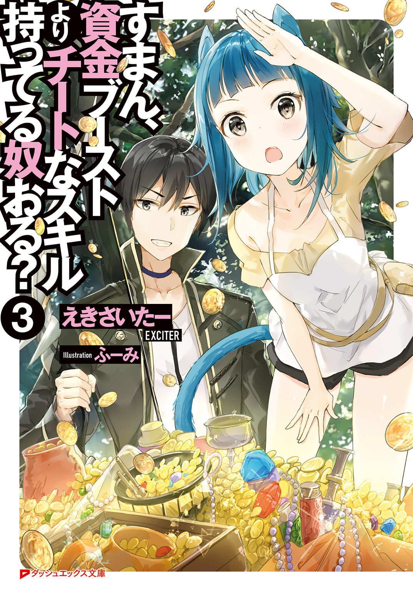
この本は縦書きでレイアウトされています。
また、ご覧になる機種により、表示の差が認められることがあります。
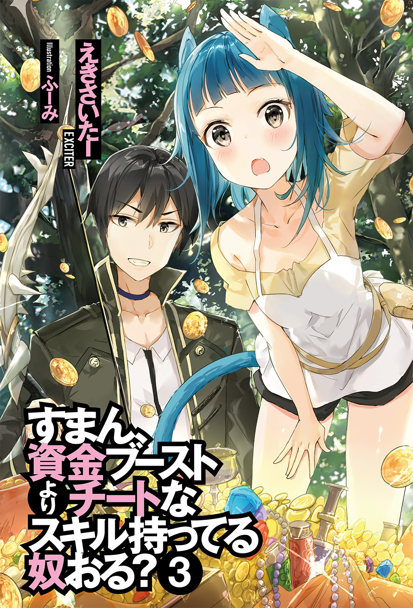
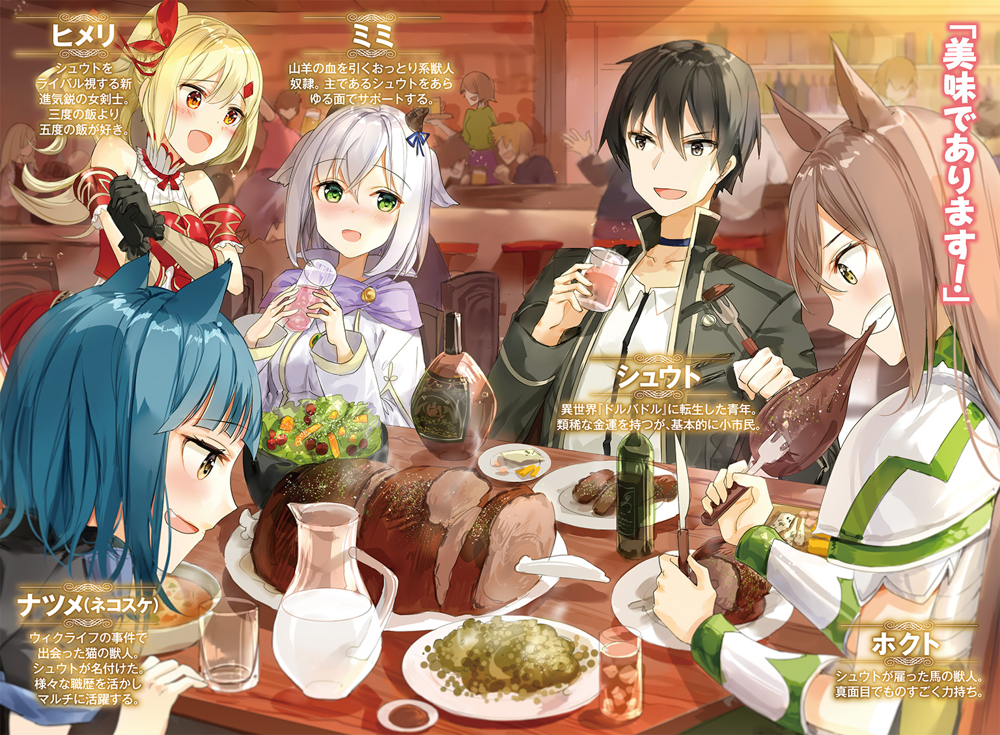
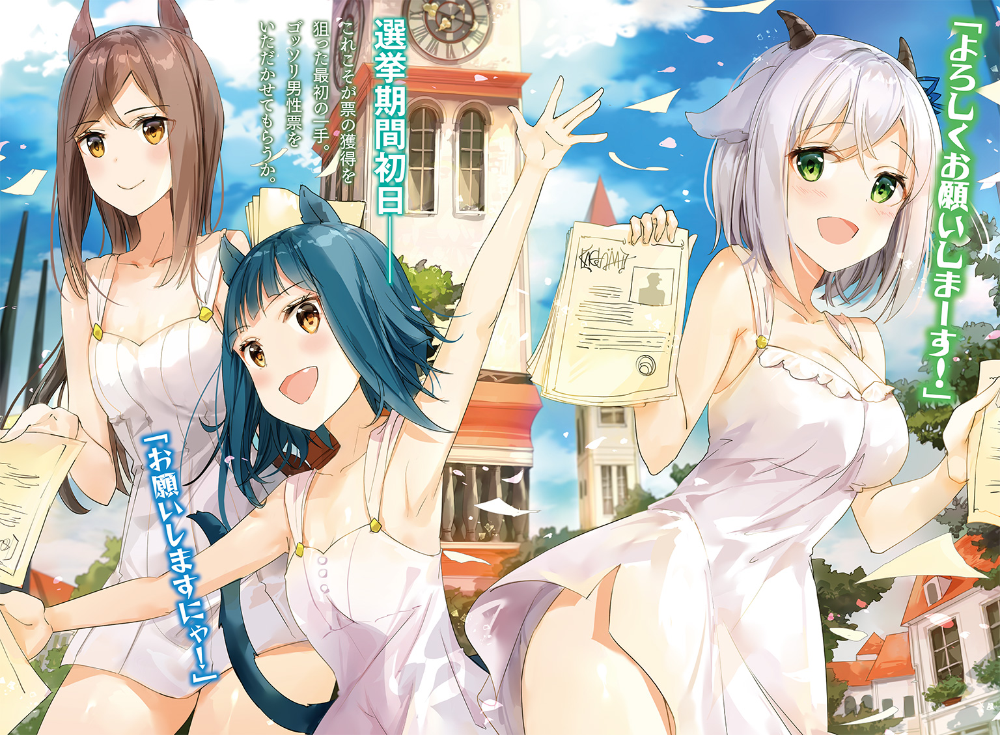
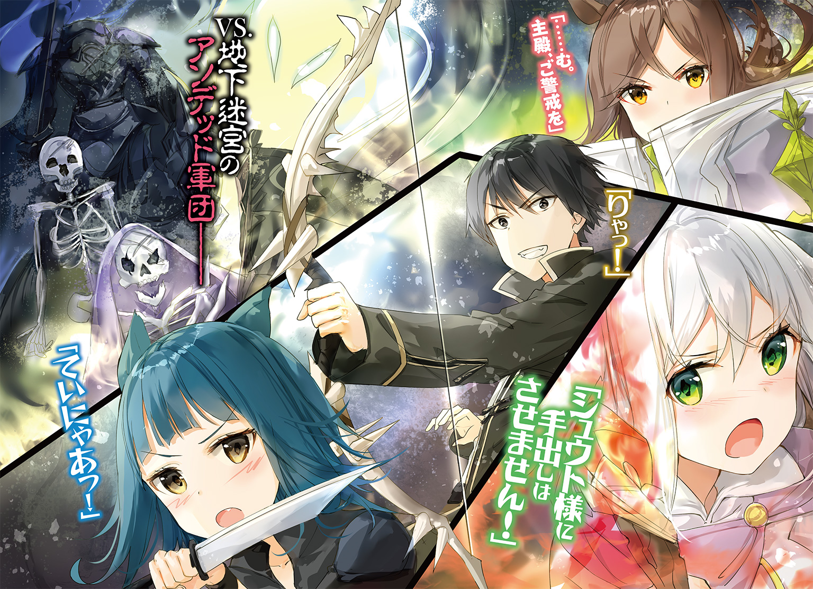
 ダッシュエックス文庫DIGITAL
ダッシュエックス文庫DIGITAL
すまん、資金ブーストよりチートなスキル持ってる奴おる？ ３
えきさいたー
ウィクライフ王立図書館司書ビザール辞任の報は一晩のうちに町中を駆け巡った。
そのニュースの回る速度たるや、翌朝にはどこもその話題で持ちきりなほど。
図書館こそが象徴にして中心、というこの町の実態がよく分かる。
それにしたって、だ。
俺はどうにも釈然としないものを抱えていた。『現職でいる間は』一冊は口利きできるって、そういうことかよ。一冊でも私人に手配した時点で職を失う、という内部事情を言い換えただけだなんて、あの時点で気づけるはずがない。
そしてこうも言っていた。
自身が死ねば、制度の力で司書の権限は委譲される、と。
なるほど、まさに規則に準じた解任劇だ。規約違反を犯したことによる懲戒免職なんだからこれ以上に厳格な処分はない。
わざわざ死を待つまでもなく、制度に判決を下させたってことか。
......なにが「まだまだ司書の座は譲れない」だよ。
書物を報酬にした捜索願を出した時点で辞職する覚悟があったんじゃねぇか。
本当に残っていた未練はそれだけだったんだな。
ビザールの噂を小耳に挟むたびに、ガラじゃないとは分かっていても、俺はどうにもやりきれなさを覚える。
「大変な騒ぎでありますな......それだけ重大な事件だったのでありましょうか」
「まあな」
今日もネコスケが来ていないかとふらっと寄ってみたギルドでも、朝っぱらから突然のビザール解任騒動について盛んに議論が飛んでいた。
冒険者とはいえ、ここの連中は粗暴さとは無縁なインテリ揃い。
少し立ち聞きしただけでも理屈っぽさが伝わってくる。
ただおおむね、ビザールの解任を惜しむ声が大半だった。
俺はそんな中、ギルドマスターと会話を交わしていた。
多くの人間が出入りするギルドを取り仕切っているこいつ以上に、情報に明るい奴なんてそうそういないだろう。
「ビザール卿の件ですか。もちろんうかがっております」
ホクトを後ろに立たせて話を聞く。
「偉大な方の引退は胸に迫るものがあります」
「あんたもそうなのか。みんな残念がってたけどさ」
「残念という素直な想いと、ついにその時が来たか、という感覚が半々でしょうか。いずれにせよ僕たちには彼の下した決断を尊重することしかできません」
「随分と口惜しそうじゃないか」
ジイさんへの思慕が言葉の端々だけでなく、浮かない表情からも滲み出ている。
「ビザール卿の功績を考えれば当然ですよ。七期途中二十七年という在任期間は歴代の司書の中でも最長ですから......もっとも、ここ数年は静養にあてていたようですが」
ギルドマスターは整った顔を更に寂しげに曇らせた。
それだけ慕われていたということだろう。
あのカタブツを絵に描いたような受付嬢がショックで涙を流すほどなのだから、それも頷ける。
寂莫とした感情は、俺の胸にもなくはない。
よそ者である俺がこの町に思い入れなんてあるはずもないが、あのジイさんとは赤の他人と呼べない程度には縁がある。
「......なあ」
「なんでしょう？」
「新しい司書ってどういうふうに決めるんだ？」
「伝統的に任命制です。知ってのとおりこの町の図書館は王立。次期司書の地位に就く人物は絶対権力者である国王陛下から任命される運びとなっています」
ですが、とギルドマスターは続ける。
「それはあくまで形式上の話であって、実際には住民投票で候補者を一人にまで絞ります。王都を離れられない陛下にはウィクライフの情勢を知る由がありませんからね。誰が適任かは我々の間で決めるようお達しが出ているのです」
おかげで民意が多少なりとも反映されるようになっている、とのこと。
だから町全体がざわついていたのか。
住人総出の投票になるんだとしたら、これから更に慌ただしくなるに違いない。
「最終候補が決まり次第駐在の騎士の方々に王都へ報告しに行ってもらい、陛下の承認を得て新体制による図書館運営が始まります」
「ふーん。ややこしいことになってんだな」
「それほど複雑ではないですよ。結局は投票を行って決まるのですから」
「じゃあさ、候補者って誰がなるんだ？ 立候補すりゃ誰でもいい......ってわけじゃなさそうだけど」
俺は政見放送を賑やかすファンキーな面々（いわゆる泡沫候補）を思い浮かべていた。
「基本的には他の図書館職員の中から数人が選ばれます。稀に前任の司書が外部より招聘するケースもありますが......そこから最終候補に残ったことは一度もありません」
「そうか。なら次はパウロでほぼ決まりだな」
司書代理を務めているくらいなのだから筆頭候補であるのは間違いない。
ジイさんは口では未熟と評していたとはいえ、他にふさわしい人物がいるようには思えない。
それはジイさん自身も考えているはず。ハナからパウロに譲る気なんだろうな。
「パウロですか。館内で頭角を現しているとは耳にしていましたが......いやはや、となれば彼が一番の出世頭になってしまいましたか」
「なんか知ってるような口ぶりだな」
「ええ。僕は彼とはアカデミーで同期生でしたから」
「へえ」
意外な繫がりもあるもんだ。
「パウロは当時から優秀な学生でしたからね。若くして司書にまで登り詰めても不思議ではありません」
「優秀？ 俺が会った時は魔法は苦手とか言ってたぜ」
「それはただの謙遜でしょう。同期の中でパウロより上と断言できる成績を残せた生徒なんて一人か二人しかいませんでしたよ」
「なんだよ、噓だったのかよ」
それなら堂々と自慢されたほうがいっそ清々しい。
これだから秀才は。嫌味に感じてくるとジイさんが語っていたのも理解できるな。
「研究者気質ゆえに、冒険者の道は選ばなかったみたいですが......今にして思えば正しい選択だったんでしょうね。パウロが読書に向けた熱意は執念じみてすらいましたから」
パウロはかつて「本に囲まれるだなんて夢のような職場だ」と語っていたと、遠い目をしてギルドマスターは明かした。
昔話は無駄に長かった。
当時から凝り性で授業範囲外のことまで調べ物をしていた、とか、学内に置かれていた本をすべて読み尽くしていた......など、あまり興味が持てないエピソードが続く。
こういう高偏差値限定のあるあるトークを俺にしたって馬の耳に念仏だぞ。
別にホクトへの皮肉じゃないけども。
「ただ不安な部分もあります。パウロはなにかに没頭すると、こう――」
並列にした手の平を顔の前に立て、ギルドマスターは「視野が狭い」を表すジェスチャーをする。
「――なるきらいがありますからね。人の上に立つ資質に関しては、図書館の仲間内でよくよく審査されることでしょう」
「まあ、そのへんは後からついてくるものだと思うけどな」
「だといいのですが」
話しているうちに。
「主殿」
不意にホクトが俺の肩を叩いた。
「なんだ？」
「あちらをご覧に。ネコスケ殿が参られているであります」
ホクトが窓の外を指差す。そこには報告どおりにネコスケの姿があった。
俺もそうしてくれることを期待してここに来たのだが、今日も狩りに同行するつもりらしい。
ギルドマスターとの雑談を切り上げて外に出る。
「よう」
「にゃっ、お先でしたかにゃ」
ネコスケは建物から出てきた俺とホクトを見つけるなりこちらに駆け寄ってきた。
相も変わらず愛嬌のある笑顔を振りまいている。これが生来のものなのか、接客を任されるうちに身につけた処世術なのかは結構なブラックボックスである。
「今日も手伝ってこいってジイさんに言われたのか？」
「はいですにゃ！ お役に立てたと話したらご主人様も喜んでくれましたにゃ」
「......それだけか？」
ビザールから重要な相談をされなかったかと尋ねる。
「にゃ？ なんのお話ですかにゃ？」
きょとんとするネコスケ。なにも聞かされていないらしい。
......よく考えたら、あのジイさん自身の口からはなんの声明も出てないな。司書の座を降りた件にしたって辞意を表明したり体調不良を訴えたりしたんじゃなく、規則によるものだし。
どうにもジイさんの思惑が気になって仕方がない。
いつもなら「よそはよそ、うちはうち」で片付けるところなのだが、依頼を達成した俺が実質的に辞職の引き金を引いたようで後味の悪さを感じているせいか、無性にそわそわとしてしまう。
せめて話くらいしてくれたっていいだろ。
「ちょっとだけここでホクトと待っててくれ」
俺はネコスケをホクトに預けて、郊外に向かった。
三度目の訪問ともなれば行き慣れたもので、ビザールの屋敷には最短経路で到着した。
「ジイさん、いるか？ 俺だ。シュウトだ」
木の扉をノックしてみるが反応はない。
だが鍵は開いている。不在というわけでもないらしい。
寝ているんだろうか......と思い始めた矢先。
「どうしたどうした、こんな早くに」
ようやくビザールが顔を出す。
様子は、俺のよく知るものとは少し異なっていた。
その顔はやつれているのに加えて、精力が随分と抜け落ちているように見えた。表情に張りがなく頰の筋肉の動きが乏しい。それこそ典型的な病人、といった感じである。
「なんの用事じゃ？」
「用事もなにも......話を聞きに来たんだよ。分かってんだろ？」
無言で顎をさする老人。
「町中あんたの噂で溢れてるぜ。どうして突然クビになるような真似をしてしまったのか、ってな」
「ふむ、その件か。つまらぬ巷説にすら飛びつくとはここの人間はよっぽど暇なんじゃの」
「他人事みたいに言うなよ。ジイさん自身のことだろうに。なのにあんたはちっとも腹を割らないじゃないか。猫にすら話してないって聞いたぜ」
誰もビザール本人の心のうちを知らない。
だからこそ憶測が憶測を呼んでいるし、俺もモヤモヤとしている。
「せめて俺にだけでも真意を明かしてくれよ。聞く権利はあるはずだ。なんせジイさんの手の込んだ辞表を届けたのは俺なんだからな」
その後も続いた俺のしつこい追及にビザールは観念したようで、ふうと息を吐いた後。
「......とりあえず中に入っとくれ」
詳しい話をしてやる、とのことで、俺は室内に上げられた。
椅子に沈みこむように深く腰かけたビザールは、今にも眠りこけてしまいそうなほど全身脱力しきっていて、呼吸も弱々しく、目の焦点もどこか虚ろになっている。
見ているだけで危なっかしかった。
俺はまず、なぜこんなにも弱っているのかを恐る恐る尋ねた。
歳や病の割には元気なジイさんだとばかり思っていたが、それは結局ただの人前限定での強がりなだけで、これが本来の姿なんだろうか？
だとしたら楽観的な認識を覆されたようで絶句ものなのだが、そうではないらしく。
「これは鎮痛剤が効いているだけじゃ。気にすることじゃない」
「鎮痛剤？」
「うむ。体の隅々まで麻痺させるから、しばらくの間はどうしてもこうなってしまうんじゃよ」
薬の副作用だとビザールは説明する。
二年前から使い始めたとのこと。
「一服で半日は持つが、最初の数十分はこうして奈落の底に叩き落とされたような憂鬱さに囚われてしまうんじゃ」
神経だけでなく、脳髄にまで効いているんだろうな。
それだけ聞くと現代的な価値観ではヤバそうな薬に思えるが、れっきとした医療用の薬品として売られているのなら、俺から言えることは特にない。
「まあ、やむを得ないわい。この薬がなければ咳払いひとつしただけで全身が千切れそうなくらい痛むからの」
「おいおい......それはそれできつい話だな」
「フフフ、心配してくれるのか？ シケた面に似合わず案外かわいげのある男じゃな」
「うるせぇよ」
「じゃが安心せえ。ワシがこうなのは服薬直後のみよ」
とはいえ、このダウナーな状態をアイシャには見せたくない、ともビザールは語った。余計な心配をかけるからだという。だから俺の手伝いに行けと命じたのか。
普段は強がっている、というのは、あながち間違いでもないらしい。
だが俺が気になるのは、病気そのものに効く薬ではないという点だ。
最早手の施しようがないんだろうか。
......ないんだろうな。そんなものがあったら現場に復帰できているだろうし。
傷は治せても病気はそうもいかないみたいだから、魔法も万能ってわけじゃないんだな。
「体調が優れないワケは分かったよ。本題に入ってもいいか？」
「あまり多くは話せぬぞ。教えたとおり、今のワシは口を動かすのも億劫なんじゃから」
所在なさげに長い白髪を撫でつけるビザールに、俺は単刀直入に問いかけた。
「なぜ辞めたのか、なんてのは今更聞かない。そんなのはジイさんの気分だからな。俺が知りたいのはどうしてわざわざ遠回しなやり方で辞めようとしたのかってことだ」
それが明かされないことには胸のつかえが下りない。
「使いっ走りにされた俺の身にもなってくれっての。嫌でも責任感じちまってんだから」
「責任なぞお前さんには一切なかろう。全部ワシのわがままじゃ。ただただ辞めるのは損じゃから、蔵書の譲渡権を人探しの報酬にしたまでに過ぎん」
「それでもだ。直接図書館の奴らに辞意を表明しなかった理由を教えてくれ」
「ワシの口からそれを言わせるのか？ 酷な奴じゃのう」
「頼むよ」
「理由なぞ、なんとなく想像できておるくせに」
ビザールは俺の心中を見透かすように目を細める。
想像、は俺なりにしているのは事実。そしてそれはおそらく当たっている。先ほど語られた「こんな状態をアイシャに見られたくない」という発言も踏まえれば自然な帰結ではある。
「仕方ないのう」
司書だった男は自らの口で語る。
「単純な話じゃ。恥ずかしかったんじゃよ」
赤裸々な答えだった。
「このいつ死ぬかも分からぬ体じゃ。いい加減身を引くのが妥当じゃろうて。そんなことは当人であるワシが自覚しとらんわけがない」
だが、と続ける。
「頑固で偏屈で口の悪いジジイで通っていたワシが、どの面下げてそれまで酷評していた者どもに後を託すなどと伝えられようか。急にしおらしくなって司書を辞めると言い出そうものならワシが築き上げたイメージも形無しじゃ。最後の最後まで、憎たらしい上司でいたかったんじゃよ」
ジイさんはそう言って、フッと自嘲気味に笑った。
「長く休んでおったから、部下たちもワシが正式に辞めることは日々覚悟していたじゃろう。いつその時が来てもいいようにと準備は怠っておらぬはず」
その台詞がパウロのことを指しているとはすぐに分かった。
あの完璧な仕事ぶりだからな。いつでも後継者になれるだろう。
「出しゃばる必要がなく、今生に心残りもないのじゃから、辞職するに当たってなんの不安も後悔もなかろうて」
ひっそりと未練がないことも語られた。
やはり恩人との再会は大きなファクターを占めていたらしい。そうでなければこの願いを辞任のトリガーに設定したりはしないから、当たり前か。
ビザールが本を依頼達成報酬にしていたことは遅かれ早かれ、いずれ図書館の面々の耳にも届くだろう。
彼らはジイさんが望むとおり、その身勝手さに呆れるだろうか。
それとも持ち前の頭の冴えで規約違反の裏に隠された虚勢を読み取るのだろうか。
たぶん......どう転んでも、あの人らしいな、と語られるように俺は思う。
「どうじゃ、気持ち悪いじゃろう。老いぼれが意地を張っても醜いだけじゃからな」
「別にそんなふうには思わねぇよ」
俺はビザールの選択を、茶化したり糾弾したりはできない。
冷たく事務的な引き継ぎがなされるよりはよっぽど人間味がある。こんなめちゃくちゃなジイさんがあんな堅苦しい施設のトップを張れていたんだから、その人望の厚さがうかがえる。
でなきゃ受付嬢が号泣したりなんかしない。
真っ向から規則を破っているくせに町全体から惜しまれながらの解任ってのもおかしな話だが、このジイさんだからなんだろうな。
「ジイさんの心境が聞けてよかったよ。これで無駄に罪悪感とか覚えなくて済むからな」
「つくづく性格の悪い男よな。死にかけたワシに減らず口を叩けるのはお前さんぐらいじゃぞ」
「別にいいじゃん。もう司書じゃないんだしさ」
「ふむ！ それもそうじゃな」
「それにまだまだ生きるだろ」
辞めてすぐ逝かれたら後生が悪いなんてもんじゃない。俺に限らず。
「でもネコスケ......じゃねぇや、アイシャには話したほうがいいぜ。薬のことも含めてな。あいつを雇っている間は好きに甘えろよ」
あれだけ趣味を全開にして耳をモフっておきながら、それよりプライベートでない退任騒動や健康面の不具合は隠すというのもアホな話だ。
「ならば頼みがある。とあるハーブを持ってきてもらいたい」
「ハーブ？ なんでまたそんなのを」
「ただのハーブではないぞ。絶大な鎮痛効果のあるフレシアルバという特殊なハーブじゃ。ワシが使っている薬とは違い、精神状態に悪影響を及ぼさないとされておる。それがあればアイシャにいらぬ負担をかけずに済む」
要注意指定されている魔物同様ピンとこない名称だが、よく考えたら一般的なハーブの名前もロクに知らないのでそれほど違和感はなかった。
ただそれは滅多に手に入るものではないという。並みの薬屋にはまず置いておらず、ウィクライフ圏内で採取もできないため、文献で確認しただけなのだそうだ。
「無論報酬は出そう。ギルドを介さないとはいえ依頼じゃからな」
「金なら興味ないからいらねぇぞ」
「ワシだってやれるほどの金は残っておらぬわ。今日からは無職なんじゃからな」
提示されたのは、棚にしまわれていた白い衣類だった。
平たく畳まれているからそれがなんなのかは一見して分からなかったが、司書に支給される専用のローブらしい。
「七期目の着任時に仕立てたものじゃが、既に療養に入っておったから一度も袖を通しておらん。これをやろう。おそらく、この町の防具店で売られているローブでこれより上質な生地を用いたものはなかろう。お前さんが先日連れてきていた山羊のお嬢さんに着させるといい」
「いいのか？」
「もう使うことはないからの」
しんみりとさせるようなことを言ったかと思えば、「非売品だからレアじゃぞ？」なんて俗っぽくおどけてくるんだから、このジイさんは喰えない。
しかしまあ、ローブか。
防具屋で買うよりも上等だというなら、悪い報酬ではない。
「ローブは男女兼用だからお前さんが着ることもできるぞ。司書ごっこがしたければ存分にすればよかろう」
「誰がやるか、誰が」
「珍しい奴じゃな。司書のローブはこの町の学徒の憧れじゃというのに。もっとも任期ごとにデザインが新しくなるから、ワシの代で終わりのこれを着ていたところで権威にあやかることはできんがな」
ローブをぼんやりと見つめるビザールは、改めて辞職について咀嚼しているようだった。
到底勇退とは呼べない引き際なのに、その表情から悔いは見当たらない。
「にしても、文献でしか見たことがない......ねぇ」
「お前さんの目的のついでで構わぬ。あればでいいから探すだけ探してみとくれ」
と言われても、このへんで採れない素材を持ってこいなんて雲をつかむようなもんなんだが。
「でも、ハーブか」
それならアテがなくもない。
「とりあえず今日一日だけ待っててくれよ」
ジイさんにそう言い残して郊外を離れた俺が向かったのは、露天市場だ。
真面目くさった町の中にあって例外的に猥雑なこの場所には、一般には流通しない商品がゴロゴロと転がっている。
それが掘り出し物なのか、はたまたただのガラクタなのかは別にして。
潔癖に生きていたらまずお目にかかれないような品々がズラッと並ぶ様は壮観である。
俺は数ある露店の中から、布をぐるぐる巻きにした帽子に、縛った裾以外が膨らんだ服という、砂漠の王子様みたいな格好をした男を探す。
そいつは簡単に見つかった。
目で追うよりも、鼻の粘膜を突くような香辛料の匂いを辿るほうが早い。
「やあ、いらっしゃい。また見る顔だね」
商人はうさんくさいと感じるほどの、過剰に愛想のいい笑顔で応対する。
店を冷やかしている客は俺の他にいなかった。
スパイスやハーブなんていう、用途がマニアックな割に高額な嗜好品ばかりを店頭に並べているんだから、まあそんなもんなのだろう。
ただ今日は特に朝から客入りが悪いと、商人は苦笑いして愚痴をこぼした。
「司書選を近日中に控えているからね......ああ、お客さんはまだご存知なかったかな？」
「知ってるよ。ビザールが解任されたことだろ」
むしろ大きく関わってすらいる。
「これは失礼。嫌でも耳にすることだしね、それも当然か。やれ辞任の真相だの、やれ次の司書は誰がふさわしいかだの......今朝はそんな話ばかり聞こえてくるよ」
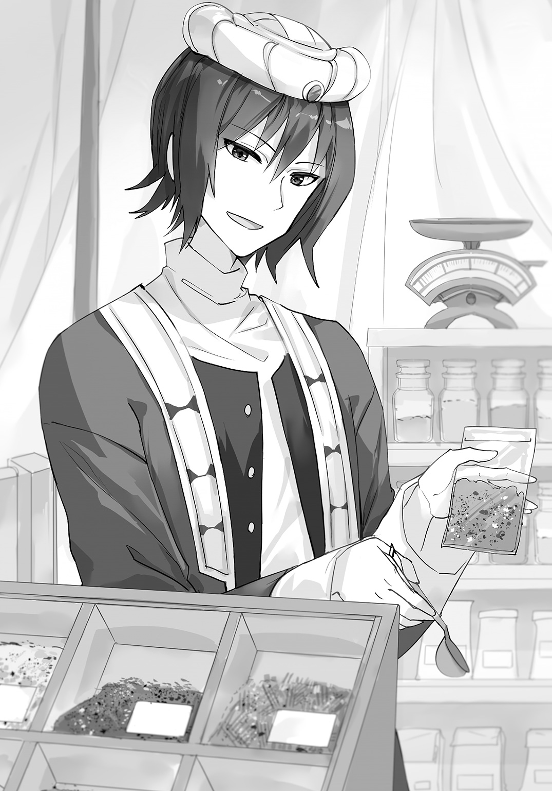
「人間って奴はどいつもこいつもゴシップが大好物だからな。でもなんで司書選が近いと客足が遠のくんだ？」
「簡単な話さ。新しい司書が選定されたら、祝儀の意味を込めて商業ギルド全体で値下げセールを敢行することになっているからだよ」
「へえ」
王立図書館の司書交代というのは、どうやら俺が思っている以上に一大行事のようだ。
町中がその話題一色なのも合点がいくな。
「王都からの使節団や他地方から来てくれる人も増えるからかき入れ時でもあるんだよね。ただし、それまでは住民の財布の紐が固くなるから消費が落ちるんだ」
「ふーん。買い控えってことか」
「でも僕たち露店商にはデメリットしかないけどね。値段云々で売り上げが大きく変わるようなものはこのマーケットにはほとんどないんだから」
「まあ、そりゃそうだな」
大特価になったからって、たとえば隣の露店で売っている意味不明なサイズの弦楽器を買おうだなんて微塵も思わないし。
不景気な話だとは思うが、しかし俺がどうこう口を挟めるようなことではない。
一人の客として来た目的を説く。
「探しているハーブがあるんだ。フレシアルバっていうんだけどさ」
「ああ、それならうちでも取り扱っているよ。在庫は然程ないけど、それで構わないなら」
「おっ！ マジか！」
高価な商品を大量に扱っているんだから、輸入物のひとつやふたつくらい置いていても不思議ではないと考えたが、ドンピシャだったらしい。
商人は包み紙をほどいて、中身の乾燥ハーブを俺に見せる。
この、指が三本もあればつまめる程度の分量で一六〇〇Ｇの値段が付けられているんだから、まったくアコギな商売だ。
「フレシアルバは爽快感のある香りが特徴だ。このまま吸引するだけでも心身をリラックスさせるはたらきがあるよ」
「爽快感ねぇ」
ちょっと嗅いだところ、安物の芳香剤みたいにしか思えないけど。
ただ効果が本物であることは即座に判明した。ほんの少し吸っただけでもうっかり魂を手放してしまいそうになるくらい、全身から気持ちよく力が抜けていく感覚に襲われる。
あまり長く嗅いでいると逆に危ねぇな、これ。
「もしやとは思ったけどこんなにあっさり見つかるとは......どこで入手したんだ？ この近くじゃ採れないんだろ？」
「遠征中の行商から仕入れたんだよ。露天市場と各地を旅歩く行商人が密な関係にあることは、まあ言わなくてもなんとなく伝わるよね」
それは理解できる。
転生直後の町にいた頃、珍しい装備品は大体行商経由で手に入れていたし。
それにしても、あのジイさんが本の中でしか見たことのない代物を単なる商人が仕入れられるとは。よほど情報に敏感でないとこうはいくまい。
「けど妙な注文だね。これは料理やお茶に使うものじゃない。どちらかというと薬用ハーブだ。煎じて飲めば痛みに対して鈍感になれるけど、日常でそうそう必要になるような代物じゃないよ」
「薬でいいんだよ......実はな」
事情を話す。
「そうか、ビザール卿が......療養中とはうかがっていたけど、そこまで深刻な病魔に侵されていたのか」
「まあ精神的には年寄りとは思えないくらい元気だけどな」
今にも折れてしまいそうな腕で、ホクトの耳触りたさに俺の手首をきつく握ってきた時のことを思い出す。
あのバイタリティはどう考えても病床にあるジジイのそれではない。
「だけど、変だね」
「なにがだ？」
「今朝服用していたのも鎮痛剤で、お客さんにお使いを頼んだのも痛み止めだ。病気を治すことは諦めてしまったのかな」
それは俺も引っかかりはした。
しかし。
「もうどうしようもないって自分でも分かってるんだろ。もし打つ手があるんならジイさんだってそうしてるさ」
多分だが、ネコスケに買いに行かせていた薬も例の副作用付きの鎮痛剤なんだろうし。
「どうしようもない、なんていうのは、どうにかしようとしてからでないと出てこない言葉だよ」
商人はそれでもまだ疑問が晴れていないらしく、口元を手で覆って考えこんでいる。
接客中の噓のようにニコニコとした顔はどこにもない。
思考している間の商人の目は、宝とゴミが入り混じった闇市には似つかわしくない、冷然とした知性に満ちている。
俺はこの鋭い眼差しを見ているだけでこいつの本分がキレ者であると分かった。
思えばネコスケの行方を言い当てたのもこいつだしな。その時もこんなふうに冷静沈着な表情を張りつかせていたのを思い出す。
「今は手元にないけれど、たとえばセリールディアという貴重なハーブには万病に効くという伝承が残っている。『知者の長』ともいえる司書を長年務めておられたビザール卿ともあろうお方がその存在を知らない道理がない。どうしてこれを探すように頼まなかったのかな？」
「そりゃお前......そこまでレアなものは望み薄だからだろ」
「どうだろう。場所をウィクライフに限るなら、入手難度にそれほど差はないけどね。結局はどこかから運ばれてくることを祈るしかないんだから」
商人は含みのある言い方しかしてこない。
「な、なんだよ。きっぱりと言ってくれよ」
「うん。おそらくだけど......ビザール卿は既に、セリールディアを含めてありとあらゆる特効薬を試している。そしてどれもダメだったんじゃないかな」
ありえる話ではある。
すべて試した上で諦観に至ったのだとしたら、自然な成り行きだろう。
だが商人の疑念はそこで終わりではなかった。
「どの薬も効かないほど厄介で、鎮痛剤に頼らないといけないほど重い病なのに、何年もゆっくりと時間をかけて進行している......少し奇妙じゃないかな？」
「は？ おいおい、すぐ死なないとおかしいみたいに言うなよ。ドキッとするじゃねぇか」
「ごめん。でもどうしても気になってしまってね。それにビザール卿は精神的には元気なんだよね？ これだけの難病にもかかわらず」
「そりゃもう、病人とは思えないくらいに......」
俺はそこでふと、今までなんの疑いもなく受け入れられていたことが急激に不自然に感じてきた。
強烈に死を意識させられる衰弱した体に、その外見から想像できない健康的な人格。
俺はそのギャップを「そういう人物」の一言で片付けていた。
病を気力で抑えつけているのだと。
しかし商人との会話を経た今、改めて考えてみると、ビザールの外面と内面の乖離が途端にありえなく思えてくる。
それはまるで、肉体だけが精神を置き去りにして死んでいっているかのような......。
「ビザール卿がかかっているのは本当に病気なのかな？」
商人は根底からひっくり返すようなことを平然と口にした。
それはちょうど、今まさに俺の頭をよぎり始めていたことと一致していた。
そんなアホな話があってたまるか、とそれ以上考えることを拒絶しただけで。
「......知るかよ、そんなの」
だから俺にはそうとしか答えられなかった。
いやむしろ、病気だと直球で言い切れないほどに心が揺らいでいると見るべきか。
「けどな、もし仮に病気じゃないんだとしたら、一体なんだってんだよ」
そう口にするのは墓を暴いているような背徳感がある。
少なくともビザール本人は不治の病だと信じこんでいるだろうに。
「予測は立っているけど、断言はまだできない。それは細かい症状を知ってからでないと」
「症状を聞ければいいんだな？」
それなら適任者がいる。
ネコスケだ。過去に二カ月もの間住みこみで働いていた経験のあるネコスケならば、ジイさんの容態や病状についてより詳しい説明ができるはず。
「ついてきてくれるか？」
「もちろんだとも。この件は僕も気がかりだしね」
承諾はたやすく得られた。
「どうせ今日明日はまともに商売にならないんだ。店の営業よりもそっちを優先するよ」
「ありがとよ......あー、ただ」
「どうかしたかい？」
「さっきのハーブだけは売ってくれ。あるだけ買っていくから」
「毎度あり、と言わせてもらうよ」
大枚叩いて萎びたハーブを購入した俺は、そのまま商人をギルドへと連れていく。
こいつは明らかに俺よりも賢い。それも遥かにだ。自分の頭の出来なんざ嫌というほど把握しているから今更恥にも思わないが、喋っているだけで洞察力の違いを思い知らされる。
有意義な意見を引き出そうと思ったらこいつを頼るしかない。
ギルド前の通りに戻った時、ネコスケは落ち着かない様子でホクトの周りをうろうろと歩いていた。
待っている間にジイさんが辞任した旨を耳にしたのだろう。
ギルドを訪れる人間がしきりにそのことについて話し合っているから、ここに足を運んだからには避けようがない話題ではあるが。
「おお、主殿。お戻りになられましたか。随分とお時間を取られていたようでありますが......そちらの方は？」
ホクトは急遽俺が連れてきた石油王めいた服装の男に、ウェルダンな焦げ茶色の瞳を向ける。
男は男で涼しげな目で「しがない商人さ」としか語らない。
面倒くさい野郎だ。
「そんな適当な紹介で終わらすなよ。ほら、ホクトも覚えてるだろ。ネコスケを探している時のスパイス売りだよ」
「ああ、あの時の露店商の方でありましたか。その節は大変世話になったであります！」
シャキッという擬音がこれ以上なく似合いそうなほど背筋を伸ばして敬意を示すホクト。
「まあその話は別にどうでもいいんだけどな......ええと、ネコスケ」
「にゃっ？ ......うにゃ、なんですかにゃ」
上の空だったネコスケは俺の呼びかけにぴくんと肩と耳を動かす。
心ここにあらず、といった感じだ。
「この男の質問に答えてほしいんだ」
「質問......？」
「立ち話をしてるうちに、二人してとある疑問点が浮かんできてな。ネコスケの協力がないと解消できそうにないんだ」
俺は一番の要点を伝える。
「ジイさんに関することなんだよ」
「っ！」
ネコスケは息を呑んだ。
「嫌でも耳に入ってるだろうけど、ジイさん、司書辞めちまっただろ？」
「にゃ......体調がよろしくないから仕方ないですにゃ」
「そこなんだよ。この男と話していてそのことに引っかかる点が出てきたんだ。分かる範囲でいいからジイさんの症状について話してくれないか？ もしかしたら今の状況が変わるかも知れねぇからさ」
「わ、分かりましたにゃ。真面目にお答えしますにゃ」
ネコスケは商人とまっすぐに視線を合わせる。
やや視線をずらした商人はその鮮やかな青緑色の髪を見て「ふむ」と納得したように頷き。
「なるほど、探していた彼女は見つかったんだね」
「お前の読みがズバリ当たったからな。......で、こいつなんだけど、以前ビザールのジイさんの屋敷で働いてたことがあるんだよ」
「間近で健康状態を見ていたわけか。それなら詳細を聞けるだろうね」
商人は質問を始めようとする。
と、その前に。
「あなたのことはなんて呼べばいいのかな？」
律儀にもそこから尋ねていた。
「今はアイシャですにゃ。にゃにゃ、でも、シュウトさんからはネコスケですにゃ」
「名前がひとつじゃないのか。変わったこともあるもんだ。じゃあ僕はこの場を混乱させないようにネコスケと呼ぶようにしよう」
「にゃ、それより、ご主人様の病状をどこまで話せばいいんですかにゃ？」
「そうだな。時系列順に聞かせてもらいたいかな」
「了解しましたにゃ。知っている限りで、四年前のことからお話ししますにゃ」
ネコスケはとうとうと語る。
耳をふさぎたくなるような内容も含まれていた。
激しい咳と吐血を交互に繰り返していた時の様子を克明に語られると、さすがに聞いているのが辛くなる。
それでも、生活リズムに大きな異常はなかったらしい。筋肉の衰えや全身の痛みで日常的な行動に支障はあったものの、睡眠や食事はしっかり摂っていたという。
あの病的な瘦せ方も食欲減衰が原因じゃないのか。
......あのケモ耳への執着ぶりを見りゃ、他の欲が衰えてないのも当然っちゃ当然か。
だとしたらますます疑念は深まる。
身体は弱っていく一方なのに、健康的な生活を送る上で支障がないだなんて不可解だ。
それは商人にとっても決定的な証言だったようで。
「......間違いない。病気に見せかけた呪いの一種だろう。徐々に死に至らしめる『呪縛』だ」
ショッキングな結論を下していた。
当然ながら、ネコスケが最初に、かつ最大に驚愕した。黒目を縮こまらせて、後頭部をハンマーでブン殴られたような面をしている。
「にゃっにゃっ!? そ、そ、そんなの......無茶苦茶ですにゃ！ おかしいですにゃ！」
「あなたの話を聞く限り、病気よりも呪いの特徴が大きく出ているように見受けられるよ。精神的な部分が一切侵食されていないのは不自然じゃないか」
「そ、それは、きっとご主人様のがんばりですにゃ......」
ネコスケは動揺しっぱなしである。
無理もない。自分が看病していた人物が、実は悪質な呪いによって苦しめられていただなんて、冗談にしてもタチが悪すぎる。
俺にしたってまだ完全には商人の推理を受け入れられているわけではない。
奇想天外な説をかかげても、それを確定させるだけの裏づけがありはせず、状況から判断しているだけに過ぎない。
なのに、なぜだか知らないが、妙な説得力がこいつの言葉にはある。
口の上手さ以上に。
「だんだん死んでいく呪い、ねぇ。本当にそんなもんあるのか？」
「分からない」
「......まあ、そう答えるとは思ったけどよ」
思考の速さは本物だが、あくまでもこいつは商売人。
魔法の専門家なんかじゃないしな。
「ただ、はっきりしていることがひとつだけある。僕の考えが正しいとするなら、なにかしらの魂胆の下にビザール卿に呪術をかけた人物がいるということだ」
信じられないような言葉の数々にネコスケは今にも泣き出しそうな顔をした。
だったら、誰がなんのために？
ジイさんが死ぬことで得をする人間でもいるっていうんだろうか。
「そんな奴がどこに......」
いや――いる。
パウロだ。
その名前がパッと浮かんだ瞬間、断片的だった記憶が洪水のように押し寄せてきた。
『司書のローブはこの町の学徒の憧れじゃというのに』
『本に囲まれるだなんて夢のような職場だ』
司書こそがパウロの目標だったのか？
『ワシが死ねばその瞬間制度の力でさっくり委譲されてしまうがね』
それはビザールさえいなければ達成されるんだろう。
『並大抵の火では到底不可能でしょう』
十秒で殺せば即座に発覚する。しかし十年かけてなら――。
『ああ、また自分の世界に入ってしまいました』
『パウロはなにかに没頭すると、こうなるきらいがありますからね』
狭まった視野に良識が入る隙間はあっただろうか。
『それになんだか魔法の性質もユニークですね』
『いざ使用するとなると他に類を見ないがゆえに甚だ困難だったりするのです』
独特で難解。仮に呪いなら上級魔法の一種であろう。
『パウロは当時から優秀な学生でしたからね』
習得できたとしてもおかしくない。
『優れた学徒であるためには、上昇志向が強いことが条件として挙げられます』
優等生らしく、願望を果たすために努力を惜しまない性格をしているのならば。
じゃあどこでだ？
背表紙をざっと眺めた限り、そんなまどろっこしい呪縛を連想させるタイトルの魔術書は見当たらなかった。
その疑問にも記憶がささやきかける。
『この書状は本来、学術機関や他の町の図書館などに本を贈呈する際に切られるものです』
『学内に置かれていた本をすべて読み尽くしていた』
学生時代にその手の魔術を身につけたのだとすれば、図書館から証拠が挙がることもない。
『恥ずかしながら、私は魔法はそれほど得意ではありませんから』
『パウロより上と断言できる成績を残せた生徒なんて一人か二人しかいませんでしたよ』
謙遜ではなく、隠蔽工作の一環だとしたら？
『そうですか、それは......おいたわしい』
あの表情は心から悲しんでいるのではなく。
本当はただの演技だったようにしか、今となっては思えない。
『上っ面はいいが腹黒い男じゃからな』
記憶は破片となって、商人から提示されたパズルを埋めていく。
そこに描かれていた絵に美しいストーリー性なんてものはひとつもない。
俺は今まで見ていた世界がガラリと姿を変えてしまったように感じられてならなかった。
「......主殿、いかがなされましたか」
愕然とする俺にホクトから声がかかる。
なんでもない、なんて適当に答えられるようなことじゃなかった。
「お客さんも予想が立ったみたいだね」
「ああ......ジイさんが死んで得をする奴なんてのは一人しかいねぇ」
「そう。この件に犯人が存在するとしたら、最有力なのはパウロだ。次の司書の座を奪おうと計画したのだとしたら、最もその位置に近い彼しかいない」
代理を任されるほどの人材だ。
司書の座が空席にさえなれば、後は勝手に世論が背中を押すだろう。
騒動の裏に流れる濁った水脈が見えてきた途端、俺はパウロに対して怒り以上に、恐れを抱いた。自らの願望のためにそこまでするのか、と。
ネコスケは図書館のお家事情を知らないらしくパウロの名を聞いてもピンときていなかったが、少なからず面識のあったホクトは目を丸くしていた。
「あの方がでありますか!? 自分の目では、とてもそのようには......」
「内に秘めた狂気より恐ろしいものはないよ」
商人は冷たく言い放つ。
それにしても、随分と訳知りめいた口ぶりである。商売柄図書館の職員になんてそうそう会うこともないはずなのだが。
「ほっ、本当だったら許せないですにゃ！」
片やネコスケはヒートアップしていた。無理もない。数日縁を結んだだけの俺ですらムカついているんだから、それより馴染みの深いネコスケなら尚更だろう。
しかしこんなところでキレていてもしょうがない。
「少し落ち着けよ、ネコスケ。まずは早いとこジイさんに教えてやろうぜ」
「そうですにゃ！ ご主人様にもお伝えしないと！」
「おう。呪いだってんなら解除してやれるだろうしな」
ミミが覚えている再生魔法の中には呪いを消し去るものもあったはず。
なんならジイさん自身が唱えられても不思議ではない。
「待った。それは少し難しいと思うよ」
「どうしてだ。病気なんかよりよっぽど治せそうじゃないか」
「何年もの歳月をかけて死なせる呪いだなんて、仮にあったとしても非常に稀じゃないか。そんな珍しい種類の呪縛をありふれた魔法で解除できるのかな」
「む......」
言われてみれば、である。
上級魔法とは効果そのものよりも独自性の要素が強いとは、他ならぬパウロの談。
呪術をかけた本人にしか解けなかったとしてもおかしくない。
「ならパウロを問い詰めるか......ゲロってくれるかな」
「無謀だよ。証拠がないんだから」
「だよな。そりゃそうか」
知らないの一点張りで通されたらどうしようもない。だからって剣をちらつかせて力ずくで脅そうものなら即ブタ箱行きだろう。俺はこんなところで前科者にはなりたかねぇぞ。
それに取り引きにならなきゃ意味ないしな。パウロの手で解除させる必要があるんだから、ある程度慎重に扱わねば。
ええい、なんて回りくどいんだ。
まったくもって単純には話が進みそうにない。
「パウロだけじゃない。十分な証拠なしに町の人々に呼びかけても効果は見込めないよ」
「まあ、そうだろうな......っていうか、証拠があっても説得力があるかっていうと微妙じゃねーか？ 俺らって」
「だね。自虐になってしまうけど、信用に足る顔ぶれとは呼べないかな」
流れ者の冒険者とその奴隷。スパイス売りに日雇い獣人。
改めて再確認してみるまでもなく吹けば飛ぶような路傍の石のオンパレードだ。
こんな奴らの言葉に聴衆が耳を貸すことは、まあ期待できないわな。その上内容が内容だ。司書候補が前任者を暗殺しようとしているだなんてそうそう信じられるような話じゃない。
「それじゃあ、ご主人様に話すのもやめておいたほうがいいですかにゃ？」
「そうだね。余計な混乱を招くかもしれない」
ここでいう『余計な混乱』とは、商人は口にこそしなかったがビザールの精神状態のことを指しているのだろう。
直接我が身にふりかかった事件じゃないから俺たちはなんとか議論できているが、ジイさんは当事者である。急に大したソースもなく「病気じゃなくて呪い」「容疑者はあんたが目にかけてる部下」なんて身も蓋もないショッキングな話を聞かされたらたまったもんじゃない。
近年の体の不調が呪いのせいだと確定するまでは黙っておくべきか。
「分かりましたにゃ。うう、もどかしいですにゃ......」
じれったそうに二の腕を何度もさするネコスケ。
不安と心配と、そして苛立ちがあからさまに顔に出ている。
「とはいえ、水面下でコトを運ぶにしてもな......」
こいつもジイさんも不憫だし、助けてやれるなら助けてやりたいが、どうすればいいのやら。
「まだ推測の範疇を出ていない。公に発信するなら確証を得てからじゃないと......ただ」
商人は頰に手を当てて二の句を継ぐ。
「時間がない。パウロが司書選に通ってからだと遅いだろう」
「なんでだよ？」
「彼にウィクライフにおける絶対的な権力が渡ってしまう。図書館はこの町の象徴で、その頂点に君臨するのが司書なんだから」
「実質的な町のトップってことか？」
「うん。そうなってしまったら多少の疑惑はもみ消してしまえるだろうね」
証拠をつかむまでの時間稼ぎ。
告発が信用されるだけの地位獲得。
その両方が必要だと商人は語る。
ふむ、そうか。
だったらシンプルな手段があるじゃないか。
「パウロじゃない奴を司書にすりゃいいだけだな。俺たちで擁立しようぜ」
俺の出したアイディアにホクトは面食らい、ネコスケは大きな目をパチクリさせ、そして商人はそう提案することを予期していたかのように満足げに頷いた。
「そうすりゃ時間にゆとりができる。そんで証拠が揃ったらそいつに発表してもらおう。現役司書以上に発言力がある奴なんてこの町にはいないんだろ？」
「ああ。そして僕の意見も同じだ。それが一番勝算あるやり方だろうね」
「しかもパウロの野郎に一泡吹かせてやれる。こうなりゃドス黒い夢ごとぶち砕いてやるぜ」
要はパウロが司書の座に就くべく立てた長ったらしい計画のすべてをご破算にしてしまえばいいわけで、達成できれば時間的制約も信用度の低さも、更には胸糞悪さまで、全部まとめて解決させられる。
うむ、なかなか気持ちよさそうじゃないか。
娯楽の一切ない町にはもったいないくらいに。
「ですが主殿、その......スケールが少々大きすぎやしませぬか？」
「無茶じゃないことはお前も知ってるだろ？」
ホクトが案じているとおり、俺がやろうとしていることは端的に言ってしまえば選挙活動。
それも大本命相手に勝つと決めたからには正攻法で立ち向かうはずもない。なにかと金がかかることは予測されるが、まあ、問題はなかろう。
その点にもし問題があるならば、そもそも俺はホクトを雇えてすらいない。
「にゃっ！ それでしたらミャーも全力でお手伝いしますにゃ！」
ネコスケは握りしめた拳をぶんぶんと上下に振って熱くなっている。
「でも確か......図書館の職員しか候補者にはなれないんだったか」
あとは前任者からの推薦。
だがこれはビザールの了解を得ないと無理なのでハナから選択肢から外れている。
できれば経緯を理解してくれる人間がいいが、こちらの話を無条件で聞いてくれそうな奴なんてあの場所には......。
「......いや、いるじゃないか」
一人熱烈なビザール派が。
思い立ったが吉日。
早速図書館へと一同総出で向かった。
今日一日の予定はすっかりキャンセルされてしまったが、気にするほどのことでもない。
金なんていつでも手に入る。俺だけに許された特権をどう費やそうが俺の勝手だ。
目的の人物は入館とほぼ同時に見つかった。
当たり前だ。そいつは常に受付カウンターにいるんだから。
「少しだけ時間をもらえないか？」
浮かない顔で仕事に臨んでいた受付嬢に一旦席を離れるよう頼み、人気の比較的少ない通路で俺たちがここに来た理由を明かす。
受付嬢――会話の中でシルフィアと名前を教わった彼女は、ありがたいことにすぐに事情を呑みこんでくれた。
ビザールへの信頼がそれだけ厚いってことだな。
現時点でパウロの対抗馬として手を挙げる職員は現れていないため、名乗り出さえすればまず間違いなく司書候補者の中に入れるという。
最初から勝負を避けられているくらいなんだから、結果を待つまでもなくパウロがぶっちぎりの大本命なのだろう。
だからこそ入りこめる余地が生まれたともいえる。
「ですが私が立候補したとして、住民の方々からの票が集まるとは思えません。見てのとおり単なる受付係なのですよ？」
ただ、仕方のないことだが、自信はまったくなさげである。
「任せろ。こっちにはこいつがいる」
「にゃっ!?」
俺の腕に肩を抱き寄せられたネコスケはびっくりして調子の外れた声を上げた。
町中を探し回っている時に気づかされた。ネコスケはその働きぶりのよさから商業ギルド内でかなりの評判となっている。
こいつの応援があれば、でかい組合ひとつ分の票が期待できるはず。
そして俺の金だ。政治資金なんていくらでも出せる。
「俺のカバンとネコスケの地盤、ふたつ合わさりゃ無敵だ。看板がなんだろうと勝たせてやるよ」
あえてでかいことを言ってシルフィアをその気にさせる。
返答を待つ俺。願わくば、快い承諾を、と。
熟慮の末。
「......了解しました」
シルフィアはぐっとタメを作ってから口を開いてくれた。
「ビザール卿の無念を晴らすため、私の身命を皆様に捧げましょう」
「その言い方だともうジイさんが死んじまったみたいじゃねぇかよ......まあいいか」
了承は得られた。
さて、あとはいかにしてこいつを売りこむかだな。
「候補者の発表は二日後になっています。それから投票までは七日間の猶予がありますので、その期間を利用しましょう」
「分かった。忙しくなりそうだな......ホクトとミミにも働いてもらわねぇと」
あれこれ予定を立てる俺の様子を、なぜか商人は妙にニコニコとして見やってくる。
「その間僕は可能な限りで証拠を漁ってみよう。なに、これでも情報筋だけは多いからね」
「そうしてくれるなら助かるけどさ」
ふと奇妙に思う。
そういやこいつ、なんでここまで首をつっこんでいるんだろうか。
知恵のあるこいつが話に参加してくれているおかげでなにかと捗っているのは間違いないが、俺やネコスケと違ってジイさんとはなんの縁もないってのに。
「どうして無関係のあんたがそんなにも協力してくれるんだ？」
「正義感だよ。お客さんと一緒さ」
「俺と一緒？ 冗談きついぜ」
そう苦々しく返すと商人はどこが面白いのか知らないがクスクスと小さく笑った。
「僕も名乗っておこう。フラーゼンだ。次にこの名前をお客さんが聞くまでには、なにかひとつくらいは情報をつかんでおくよ。お互い尽力しよう」
商人はダブダブの服をなびかせながら図書館を去っていく。
俺はその捉えどころのない背中を、ただ黙って眺めていた。
司書選開始まで残り二日。
時計の針は既に動き始めている。
選挙期間初日。
公示された司書候補者はパウロと、そしてシルフィアのみだった。
すなわち、一騎討ちである。
限られた時間を余すことなく使い切りたい俺たちシルフィア陣営は、寝ぼけ眼をこすりながらも早朝から時計台前の広場にやってきていた。
まるで早番でシフトに入ったような気分だ。
どれだけダルくても出勤時間には間に合わせるという、俺の数少ない真面目な部分が出てしまったな。バイト根性ともいうが。
さておき、ポッと出のシルフィアなど歯牙にもかけていないのか知らないが、この早い時間帯からパウロの選挙活動が行われている気配はない。
余裕をこいていられるのも今日までだからな。
こっちにゃ秘策がある。
「始めるか」
俺は情報収集に奔走しているフラーゼンを除いた四人に声をかける。
まずは名前を広めるためのビラ配りから。
一枚一枚が本に使われるような羊皮紙でできている。
印刷業者のおっさんは羊皮紙をビラなんかに使うのは無駄だと本気でキレていたが、その分の金は払っているんだから文句は言わせない。
ボロ紙だと平気で道端に捨てられるが、品質がよく、保存性の高いこれなら自宅までは持ち帰ってもらえるだろう。
さて。
到着時こそ人通りはまばらだったが、ミミとホクト、それにネコスケがビラ配りを始めた頃には、あれよあれよという間に人だかりができていた。
「よろしくお願いします。ビザール前司書の後継者、シルフィア候補に清き一票を」
「お願いしますにゃ！」
人だかり......主に男どもで。
「まあ、妥当な結果だな」
道具やらなんやらを積んだ荷車のへりに腰かけ、その光景をプロデューサー気分で眺める俺は、想定どおりに進んでいる作戦の順調さに力強く頷く。
公示まで二日の空きがあったので、その間にビラ以外にもなにかと準備をしておいた。
そのうちのひとつがコレ。
我が軍の誇る女性陣が身に纏っている選挙活動用の衣装だ。
一言で表してしまうとワンピースタイプのチュニックなのだが、その大きな特徴としては、男に媚びまくったデザインにある。
一応よくある清廉潔白アピールのためにカラーは明るめのホワイトにしているけれども、胸元はザックリ開いているし、スカート部分の丈も短い。
はっきり言って、白より肌色の比率のほうが断然高い。
足とか膝上まで露出してるし。
おまけにキツめに作ってあるから体のラインがよく分かる。発育の止まっているネコスケは、まあ、うんって感じだが、ミミの腰周りの優美な曲線なんかはグッとくるものがある。それより更に凄いところまで知っている俺でさえそう思うのだから、他の連中は辛抱たまらんだろう。
ネコスケとコネのある裁縫職人に発注したのだが、なかなか人目を引いてよろしい。「なるべく布面積少なめで」とデザインに口出しした甲斐があるってもんだ。
快く着用を引き受けてくれたネコスケたちには感謝しかない。
なにせこれこそが票の獲得を狙った最初の一手。
この世界の女物の服はとにかく露出度が低い。太ももや膝小僧どころか脛すら拝めないっていうんだから、そのガードの固さが分かるだろう。
その中にあってこれだけ魅力的な格好をしているんだから、そりゃウケる。
男という生き物は突き詰めるとアホしかいないからな。
ゴッソリ男性票をいただかせてもらうか。
もっとも俺もアホの一員なので、あまり冷静には客観視できない。
ミミの自然体なエロさも最高だが、ネコスケの健康的なかわいらしさも捨てがたい。
「うーむ、素晴らしいコンパニオンぶりだな」
というかアイドルユニットみたいだ。
獣人だから三人とも容姿も整っているし、世が世なら天下取れたな。少なくともビザールのジイさんは昇天するに違いない。
「しかし主殿」
「どうした？」
「やっ、その、自分にはさすがに似合っていないのではありませぬか？」
ビラを補充しに来たホクトはどこかそわそわとしていた。
無骨で勇ましい鎧からフェミニンな服に着替えたホクトは特にイメージが激変している。
「そんなことないけどな。ホクトはスタイルがいいから見栄えは抜群だぞ」
「ですが、その......であります」
「その、なんだよ」
「じ、じ、自分のような脚の太い者はっ、あまり殿方に好かれるとは思えないでありますっ！」
ホクトは赤面しながら早口で言った。
ふむ、確かに、衣装越しに見える太もも回りはムチムチを超えてパンパンである。
「バッカ、お前、それがいいんだろ。分かってないなー。立派な武器だぜ？」
「そう......なのでありますか？」
「俺は好きだぞ」
と言ってやった。
「真でありましょうか？ 主殿にそう言っていただけるのであれば......」
「そうだ。かわいいぞ、ホクト」
「ななな!?」
「かわいいぞ、ホクト」
なんか面白くなってきたのでもう一度言ってやった。
「し、失礼するでありますー！」
追加のビラを脇に抱えて小走りで現場に戻っていくホクト。
ますます風呂上がりみたいに火照った顔を手で扇いでいたが、少しは引け目がなくなったのか、投票を呼びかける声のボリュームが増していた。
うむ、やはり三人並んでいるほうが収まりがいい。身長もバランスが取れている。
他方、これから街頭演説に臨むシルフィアが着ているのは三人とは対照的に、ハーブ依頼の報酬にもらった旧デザインの司書のローブだ。
親ビザールをアピールするにはこれ以上ない勝負服だろう。
ここ数日の町の声を聞く限り、まだまだビザールの時代は懐かしまれていた。
シンパであることを強く打ち出せばそういった層からの支持が期待できる。
といっても別にビザール本人から直々に譲り受けたものではないのだが、そんな裏事情なぞ誰にも知る由はない。
世の中フカしたもん勝ちである。
幸い、ジイさんは身の回りのことは全部ネコスケに任せて外出を控えているしな。見咎められる心配もないから自由にやれる。
それに......。
「いかがなされましたか、シュウトさん」
「いやちょっと、どうでもいい考え事」
シルフィアもまたお世辞抜きにかなりの美人だ。
しかし喜怒哀楽が表れた顔よりは、感情を押し殺してキリッとしている面構えのほうが切れ長の目をしたシルフィアにはよく似合う。
そういう意味ではこの知性と品格に溢れた司書のローブは、こいつにうってつけだろう。
ミミたちのように華やかな格好をしていないのに、負けず劣らず魅力的に映る。
これはあれだな。
巫女やシスターに興奮するのと同じ理論なのではなかろうか。
「シュウトさん、また様子がおかしいようですが」
「あ、悪い。また思考が脇道にそれちまってた」
「しっかりしてください。私はあなたを頼りにしているのですから。......そろそろ街頭演説を行おうかと思います。司書様のイシを継ぐ意向をはっきりと伝えるつもりです」
「ん？ お、おう」
俺は真剣ながらも悲壮感のあるシルフィアの顔つきのせいで意志なのか遺志なのかイマイチ区別できなかった。
ともあれ、いよいよ演説本番。
お飾りであることを承知で大役を引き受けたシルフィアだったが、こいつもこいつなりにアピールポイントを考えてきたらしく、何度もメモに目を通している。
こういう堅苦しい話に及ぶと俺が意見できることはない。
シルフィアにおまかせするとしよう。
それにしたって、ネコスケは愛想がいい。
緊張がほぐれていないホクトや常にマイペースで表情に動きの少ないミミと違って、弾けんばかりの笑顔を男女問わず振りまきまくっている。
ウェイトレスもやっていたという話だから、その経験が活きているんだろうか。
おかげでいいアピールになっているが、それ以上に。
「ネコスケ、そろそろ」
「にゃっ？ ......あっ、そうでしたにゃ。今のうちに行ってきますにゃ」
シルフィアの演説が始まったのを見計らってネコスケに耳打ちする俺。
あらゆる職業を渡り歩いてきたネコスケが仲間にいる最大のメリットは商人たちとの繫がりだ。町の見取り図とちょっとした『手土産』を握らせて商業ギルドの本部に走らせる。
大衆に向けて投票を訴えるシルフィアの姿は立派だった。
使っている言葉が難しいのでぶっちゃけ内容にまでは頭が追いつかなかったのだが、理知的な声のトーンや手ぶりなんかを軽く傍観した感じだと、その優れたルックスも相まってか様になっている。
俺みたいなロクに判断基準のない人間からしたら、心情的には風体の冴えないパウロなんかよりこっちに票を入れたくなるものだが......果たしてどうなるか。
「......っと。ぼーっとばかりしてられねぇな」
時計台が示している時刻を確認し、荷車から尻を浮かす。
広場に集った見物人には一人だけシルフィア陣営でサボっている奴がいるようにしか見えなかっただろうが、まあ待ってほしい。俺にも重要な仕事がある。
むしろ一番の正念場だ。
シルフィアに注目が集まっている間に広場を抜け出し、気が重いけども黙々と目指す。
多数の学術機関が立ち並ぶウィクライフ南部――昨夜命名した通称『鬼門』へと。
歩き詰めた先の学区に漂う冷淡な......というか意識の高い空気は、場違いな俺こと無教養な人間の肌を容赦なく突き刺す。
まさしく鬼門である。
しかし臆してはいられない。
多くの生徒や職員を抱える学術機関が町内有数の票田なのは明らか。
これだけ学問をウリにしている町なんだから各方面に太いパイプもあるだろうし、ここを押さえておけば票数は一気に稼げるに違いあるまい。
表面をテカテカに磨き上げた石壁が印象的な建物に、まずは入る。
看板には『レクフェリウス・ジュニアアカデミー』とある。偉大な創立者の名前から取られたと注釈が添えられているが、誰でもいいよそんなのくらいにしか思わない。
ただ子供向けの学校であることだけは分かった。
事実、丈を余したローブ姿のガキんちょ集団が続々と登校してきている。
「どうも。司書選の挨拶に参りました」
「はいはい、挨拶回りですね。こちらにどうぞ」
「し、失礼します」
選挙期間中に支持の取りつけに来られるのは想定済みなのか、若い女性職員の応対は非常にスムーズだった。
むしろ俺のほうが戸惑っている。こんな簡単に進むとは。
応接室に通され、でっぷりとした学長と対面。
「ようこそいらっしゃいました。このたびは受付嬢のシルフィア氏が候補になられたそうで」
「ええ。それでですね、是非とも学界きっての知者揃いであるこちらのご理解を得たいと思いまして」
不得意なりに下手に出る俺。
「それで参られたのですか。ええ、ええ、分かりますよ。司書選になると慌ただしくなるのは恒例ですからな。挨拶回りも大変でしょう」
「挨拶、といえば聞こえはいいですが......私どもの場合は根回しとでも申しましょうか......」
「......と、言いますと？」
「こちらです」
テーブルに金貨を積み上げる。
「前金で一〇万Ｇ。当選すれば追加で倍出しましょう」
「......ほう。私に望む見返りはなんですかな？」
「それはもちろん固定票ですよ」
俺はいやらしくそう伝えると、口元をほころばせた学長は遠慮なく金貨に手を伸ばしてザッと自分の側に寄せた。
この光景、すぐ近くで無邪気に勉強に励んでる少年少女たちには到底見せられないな。
「協力しましょうとも」
「ありがとうございます。言わずもがなですが、この件は内密にお願いしますよ」
「分かっております。それにしても、なかなか大胆なことをしますなぁ」
「いえいえ、学長さんこそ」
悪代官コントもそこそこに、次の現場へ。
壁一面が白く塗られた、いかにもクリーンそうな研究施設だったが......。
「お納めください」
「これはこれは......！ ありがたく受け取らせていただきます」
あっさりと賄賂は授受された。
研究にはなにかと費用がかかるようで、金貨を提示すると目の色を変えられた。図書館のように王都から運営予算が出ていない以上、寄付、というか個人献金は切っても切れない関係にあるらしい。
その後も。
「もちろんシルフィアくんを応援しよう」
「受け取りはする！ するが......これは補助金として計上だな！」
「シルフィア優勢？ ならば足並みを揃えるとしましょうか」
「了承した。こちらからしても好都合だよ。あそこのアカデミーの卒業生であるパウロが司書になろうものなら、そちらに新規の学生を奪われかねないのでな......」
「有名人を輩出したとなれば、母校の評判も高まりますからね。ここは派閥に絡んでいないシルフィアさんが勝ってくれたほうが助かりますよ」
「この金銭そのものより今後の予測収益のほうが大きいかもしれませんな。ハッハッハ」
他校の出身者であるパウロを勝たせたくないという思惑と一致したようで、投票の約束は難なく得られた。
なんか、大人の汚い部分をこの短時間の間に大量に垣間見た気がする。
とはいえ、でかい建造物に的を絞って訪ねたことが功を奏したのか、俺が訪問した八名は肩書きを聞いた限りだとそうそうたる顔ぶれだった。業界内で発言権を持ってそうだし、端々まで口利きしてくれることを期待するとしよう。
「次は......あそこだな」
ちょっとしたキャンパスを思わせる大規模な複合教育施設の門をくぐる。
そこの敷地内を歩いている時。
「......ん？」
通路を行き交う学生たちの中に、思いがけずよく知った顔を見かける。
「げ」
「げ、ってなんだよ」
意外なことにヒメリだ。
しかもいつもの鎧なんかじゃなく、いっちょまえに賢げなローブを着ている。
似合わねー。
「まさかこんなところでシュウトさんと鉢合わせするとは......」
「そっちこそなにやってんだよ。そんな格好までして」
「いやっ、これはですね」
妙にあたふたするヒメリ。
「隠すようなことか？ まあその気持ちは分かるよ。年増がフレッシュな若者に交じって学生気分でキャッキャやってるのはイタいからな」
「違います！ あと私もまだまだ若いですから！ ちょっとその......つい最近十代じゃなくなったというだけで......」
微妙に口ごもっている。
もっともヒメリが若い部類なのは間違いない。俺も意地の悪い言い方をしたが、ギリギリ女子高生のコスプレが許されるラインだろう。
「そんなことはどうでもいいんです！ もう正直に言います。秘密にするようなことでもありませんし。私がいるのはですね、こういうわけですよ」
カバンから取り出したパンフレットを目の前に突き出される。
短期集中コース、とそこには書かれてあった。
「シュウトさんの依頼をこれまで受けていた分お金に余裕があったので、簡単な再生魔法を覚えてみようかと思いまして」
「おいおい、授業料とか結構したんじゃないのか？」
「魔術書を購入するのと出費はそう変わりませんでしたよ。なら指導してもらえたほうがありがたいじゃないですか」
「へえ。じゃあそのローブは？」
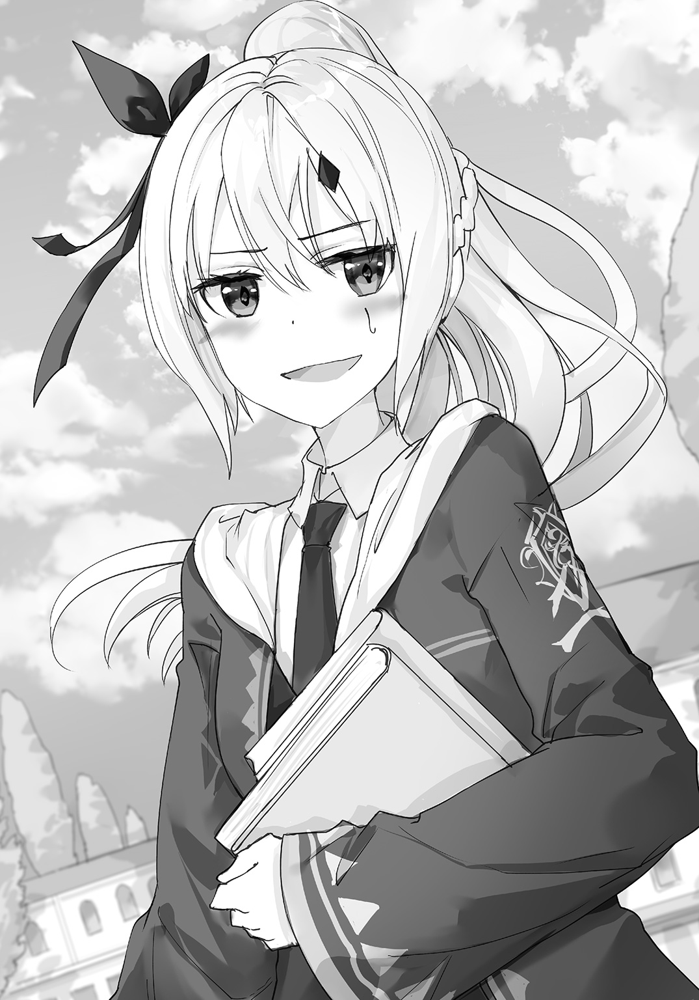
「制服です。これを着ていないと講義は受けられませんから」
マジで学生やってたらしい。
しばらく顔を見ていないと思ったら、そういうことだったのかよ。
「で、一個くらい魔法は使えるようになったのか？」
「うっ......それはですね、ええと、あともう一歩といったところでしょうか」
なんとなくそんな気はしていたが案の定ネコスケ以下だった。
「だいたいです。シュウトさんこそアカデミーを訪れる理由がないじゃないですか」
「暇潰しだよ、暇潰し」
「変ですね。どこを歩いても司書選の話題一色ですから、町にいてもシュウトさんにとって面白そうなことはひとつもありませんよ」
「うるせぇよ。まるでお前は興味があるみたいじゃんか。でしたらヒメリさんの此度の選挙についての見解をお聞かせ願えますか？」
「ま、まあ私のことは、いいじゃありませんか」
結局アホの子ぶりを如何なく発揮して最後まで答えられなかったヒメリは放置し、当初の目的どおり学長に会いに行く。が。
「申し訳ありませぬが、ご挨拶は結構です」
ヒゲ面を見せた瞬間、シルフィアの名前を出すよりも先に、一方的に断られる。
「なぜです？」
「学内では一貫して当アカデミーの卒業生であるパウロを支持すると決めておりますからな」
む......思わぬ展開だな。
パウロの奴、ここに通っていたのか。
「そこをなんとか、お話だけでも」
「あなたの貴重なお時間を無駄にするだけですよ」
「せめて一、二分だけ......」
「なにがあっても譲れませぬぞ。ようやく我が校からも名のある人物が生まれるチャンスが来たのですから！」
強硬に突っぱねられた。
これは懐柔できそうにないな。名誉がかかっているし、金をちらつかせても無駄だろう。逆に不正行為として告発されてしまう可能性すらある。
そうなったら終わりだ。変に勘繰られる前に、ほどほどで切り上げるとするか。
「分かりました。では引き取らせていただきます」
「すみませんな、わざわざ足を運んでいただいたのに。パウロは我が校の歴史の中でも群を抜いて優秀だった生徒。彼の活躍は願ったり叶ったりなのですよ」
ようやく芽が出てきたばかりだ、と学長はしみじみ語る。
昔話はそれで終わりではなかった。
「ですが、もう一人の三十五期生中の秀才......いや彼の場合は天才になるか......彼にかけていた期待はそれ以上でしたなぁ。あのまま学問の道を志し続けていれば大輪の花を咲かせたであろうに、本当に惜しい」
過去を振り返っているうちに、どうやら別の、それもトップクラスの素質を無駄にした生徒のことまで思い出したらしく、懐かしさと口惜しさがミックスされた渋い表情を作っている。
そういえばギルドマスターもパウロより好成績だった同級生がいた、みたいなことはほのめかしていたな。
といっても部外者の俺にはなんの関係もない話だ、と聞き流そうとしたが――しかし。
「あの類い稀な才能をなぜドブに捨てようなどと思ったのか......フラーゼンは」
「フラーゼン？」
学長がふと何気なく口にした名前を聞き捨てすることは、俺にはできなかった。
翌日。
選挙活動二日目を迎えたが、俺たちの地道な運動に変化はない。
ビラを撒き、華のあるビジュアルで人を寄せ、満を持してシルフィアがスピーチを行う。
それの反復だ。
大きく異なったのはパウロ陣営。
一日遅れでようやく腰を上げたこいつらには明らかに焦りが見て取れた。
パウロの司書就任に箔をつけるための当て馬くらいにしか思われていなかったシルフィアが、聴衆の間で存外の支持を得ていたためであろう。
そのせいもあってか早朝からパウロ派の面々に時計台前を占拠されていたため、俺たちは別の場所での活動を余儀なくされた。
まあ、だからなんだという話である。
結局のところ戦局を左右するのは細々とした票ではなく、まとまった集団票。
俺はそこをがっちり押さえている。
あえて言わせてもらおう。
負ける要素はない。
で、その夜。
片付け作業を抜け出して俺が足を運んだ先は、露天市場の隅っこに佇む、店と呼ぶのも気が引ける絨毯一枚だけのスペース。
昨日来た時には既に閉店後だったが、どうやら今日は営業時間内には間に合った。
数多の香辛料が並ぶそこは、言うまでもなくフラーゼンが経営する露店である。
売り物に興味はない。
俺が会いたいのは微笑を浮かべ続けた店主なんだから。
「いらっしゃい。ハーブは一包み七〇〇Ｇから、スパイスは一瓶一〇〇〇Ｇから、そして店主自慢の小ネタは持ってけドロボーの〇Ｇだ。さてさて、どれをお買い求めですか」
「わざわざ聞くようなことか？」
「だね。早急に伝えておこう。ツテを使ってパウロが通っていたアカデミーの図書室について調べてみたけど、該当する呪術について記された魔術書はなかったみたいだ。成績優秀者しか立ち入れない特別室にさえ、ね」
ただし、近い内容のものはあったとフラーゼンは続ける。
「たぶんだけど、それを参考にして独学で開発したんじゃないのかな。ビザール卿が気づけないわけだよ」
「そうか。情報ありがとよ」
「......どこにツテがあったのかまでは聞かないんだね」
「そんなもん分かりきってるからな」
俺は理由を答えてやる。
「おまえ自身がそこの生徒だったからだろ？」
フラーゼンは驚きすらしない。ミステリー映画にありがちな憎たらしい登場人物のように、ご名答、とでも言いたげですらある。
「参ったね、そんなことまで知られちゃったのか」
口でこそそんなふうにうそぶいているが、まったく気にも留めていないのは悠然とした態度を見れば一目瞭然。
「しょーもない芝居はやめろよ。バレるとこまで想定済み、みたいな顔してるくせに」
そう指摘してようやく、フラーゼンは「まあね」と認める。
「俺のカバンがあれば無敵だ、ってお客さん自身が口にしたでしょ？ お金で票を操作しようと思ったらこの町ではまず真っ先に南部の学術機関が着目される。そこで活動したのなら、遅かれ早かれ僕の経歴には辿り着くはずだからね」
こともなげに説明するフラーゼンを、俺はだんだん薄気味悪く感じていた。
前述の予測を立てた上で、なおかつ、パウロの母校でフラーゼンの名前を耳にしたなら必ず自分のもとに真相を問い質しに来るに違いない......と計算できていなければ、こんな泰然とは構えられないだろう。
にしても、次にこの名前を聞く時までには、か。
なるほどな。今になって真の意味が分かった。俺がこいつの素性を知ったなら、必ずその件について問い質しに来るに違いない。その頃までには質問の回答ついでに収集した情報を教えられるようにしておこうと考えていたってわけか。
こいつが見ている世界の広さは俺には想像もつかない。
ジイさんの呪縛を推考した時にしてもだ。
「でも、僕が自分で知っていたのは一般に開放された図書までだ。特別室にある本に関しては本当に知人のツテを頼らせてもらったよ。生憎、僕は真面目で品行方正な生徒なんかじゃなかったからさ」
「噓くさい話だな。『学園一位のフラーゼン』のくせに」
俺のその嫌味にも、フラーゼンは欠片も動揺するそぶりを見せなかった。
「学長のおっさんが聞いてもねぇのにベラベラと昔話を喋ってくれたぞ。アカデミー開設以降で最高峰の天才だったってな。それに、えー、なんだ、森の先住民族がどうのこうので......」
「先住民族に関する新説と実験考古学的論拠、のことかな」
「そう。それだ」
未だに何語なのかもよく分からないタイトルのそれは、フラーゼンが学生時代に提出した研究課題だそうだが。
「発表と同時に大騒ぎになったそうじゃないか」
「突飛すぎるって馬鹿にされただけだよ」
「ホントかよ。おっさんは『あんな学説は他の誰にも出せない』って昨日のことかのように思い出しては震えてたぜ」
「まあ、客観的に見れば奇抜ではあったかな。史実から想像される当時の彼らの立場についても言及したはずだから」
「史実？」
「そう。迫害を受けていたというね。その暗い事実は多くの歴史書に記されているよ。『白の森』に生える白樺はいつの時代も貴重な資源だ。先に文明が発展していた町の人間にとっては邪魔に思えたんだろう」
ありがちな話ではある。
「でもそれだけなら共存の道もありえたはず。だから僕はそこを更に掘り下げて、利害面での理由だけでなく......いや、お客さんに語るようなことじゃないな。それに今となっては先住民族を語る際に引用されることもない。それが世間の答えだよ」
けど、とフラーゼンは付け加える。
「真面目じゃなかったのは本当だ。権利はあったとはいえ特別室になんて行こうとも思わなかったよ。王立図書館から寄贈された貴重な本があることは聞いていたけど、だからって関心があったわけでもないしね」
「おっさんもそんな感じの話はしてたな。フラーゼンは学問の天才だが、才能を腐らせる天才でもあったって」
「悔しいけど、言い得て妙な評価だ。それにしても、学長からそんなふうに思われていただなんて......今更ながら恥ずかしいなぁ」
さほど悔しそうでもなさそうにフラーゼンは帽子を被り直す仕草をする。
「僕の過去についてはこのくらいでいいじゃないか。司書選には一切関係のない話題だ。六日後には投票が始まる。まずはそこに集中しよう」
「そりゃそうなんだが......もったいねぇことしてんな、お前」
「なにがだい？」
「いや、そんだけ頭がよかったのに、なんでまたこんな無法地帯一歩手前の場所で商売やってんのかなって」
「パウロが読書に興味があったのと同じで、僕は金儲けに興味があった。それだけの話さ」
フラーゼンが言うには、何気なく選択した薬草学を履修しているうちに「これは金になる」と思い至ったらしい。
珍重される植物の効果ではなく、市場価格に着眼した結果だそうで。
「希少性を金銭に変換するのは一種の錬金術じゃないか。これほど興味深いものはないよ」
で、そこから現在にまで至ると。
「はあ。訳分かんねぇ人生歩んでんな。勉強してたってことは魔法も使えるんだろ？」
「一応は。でもどうかな、もうリフレッシュあたりの再生魔法以外は忘れちゃったかもしれない」
かつて神童扱いされていた男は悪びれもせず、クスリと笑う。
商売をやる上では他に必要ない、と断言しているようなものだった。
「でもまあ、おかげでお前が協力してくれる理由も少しは分かったぜ」
「へえ。聞かせてくれないかな」
「あれだろ、パウロへの対抗心みたいな」
「そんなものはないよ」
あっけらかんと答えるフラーゼン。取り繕っているようにはまったく聞こえない。
なぜなら次の言葉は......。
「僕のほうが天才だって分かり切ってるんだから」
そんな謙虚さの『け』の字もない台詞だったからだ。
「ここに来てそれかよ！ 悪い、お前って奴のことが全っ然分かんねーわ」
「だから純粋な正義感でしかないんだよ。僕がビザール卿を救いたいっていうのは」
「そうやってはっきり口にしてくれるのは逆に気持ちいいけどさ......なんか腑に落ちねぇな」
「ビザール卿のために奮闘しているのはお客さんもじゃないか」
「お、俺のことはどうでもいいだろ。大体そんなんじゃねぇし。関わっちまったからには最後までケツを拭いてやるってだけだ。はい、これでこの話題は終了！」
矛先を向けられた俺は強引に話題を打ち切る。
「そうだね。目的を同じくする僕たちの間に腹の探り合いなんて無粋か。......こちらも調査を継続していく。共にがんばろう」
顔色も声のトーンも変えずに、フラーゼンは「続報はまた次の機会に」と話を締めくくった。
本当にこいつの考えていることだけは謎めいている。
手助けの動機もそうだが、なにより、天才を自覚しておきながらその道を逸れて露店商って。
井戸の中を泳ぎたがるクジラの気持ちなんてものは俺に理解できるはずもなかった。
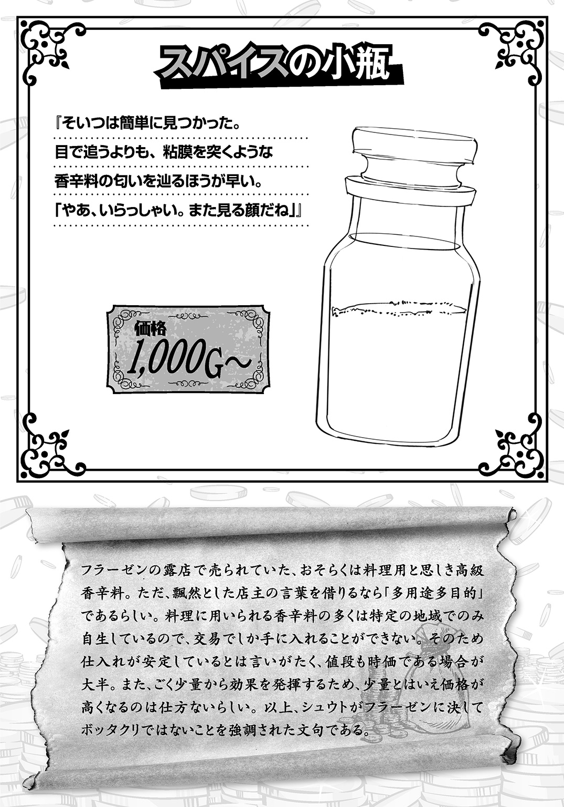
選挙の日には投票に行こう！
......なんてのは選挙権を持っている奴らに向けたスローガンであって、ここの住民でない俺には無関係な話だ。
候補者公示から早一週間。
この日、王族に司書として推薦される人物を決める投票が朝から行われていた。
決戦の舞台は図書館。ざっと町の様子を見回しただけでも、その方角に歩いていく人の数が普段よりも多い。票を投じに向かっているものと見てまず間違いないだろう。
見学する意味もないので日中は狩りにでも行って時間を潰す予定だが、結果が発表される頃には俺もシルフィア陣営の一員として顔くらい出しておくとするか。
期限は十八時まで。集計結果は今夜のうちにも出るそうだが、果たして。
もっとも、ぶっちゃけると、こちらには勝算しかなかった。
大勢は既にシルフィアに傾いている。ありがたいことに商業ギルドの面々はめちゃくちゃ協力的だった。投票の約束だけでなくビラの店頭張り出しまでやってくれたんだから、それはもう宣伝効果は効果テキメンである。
事実、パウロは意気消沈しているのか、昨日から姿も見せていないと伝え聞いている。
出馬しただけで当選確定、と住民どころかパウロ本人でさえ思っていたんだろうが、その戦前の予測は見事に引っくり返った。
それもこれもネコスケが築き上げたコネのおかげだ。
今も俺とホクトに挟まれて荷車の点検をやってくれているが、こいつがもたらした影響の大きさは計り知れない。
本当に頼りになる奴だ。
バイト先の後輩にこんな奴がいてくれたら、俺も少しはワンオペをやらされる回数が減っていただろうな。
「シュウトさん、油を差し終わりましたにゃ！ 遺跡にレッツゴーですにゃ！」
「よし、行くとするかー。ここんとこ金遣いが荒かったからな......少しは埋めとかねぇと」
分かっちゃいたが選挙ってのは無限に金が必要になる。
準備だけでも金貨が千枚近く吹き飛んでいったし、裏金の手配にはもっとかかった。
当選したらここから更に謝礼金の支払い一六〇万Ｇが上乗せされるんだから、たまったもんじゃない。
なんか町から町へ移動するたびに使ってる金額がでかくなってる気がする。理想の土地を見つけるまでに本当に貯金ができてるのか不安になってくるな、マジで。
「だからこうやって選挙当日ですら金稼ぎに行こうとしてるんだけどさ」
荷台に飛び乗る俺。
「ホクト、出発だ。車両を引いてくれ」
了解であります、とホクトがいつものように元気よく答える。
プレートメイルを装着した探索仕様のホクトは勇ましく、俺がよく見慣れている姿である。
俺の背中には苦楽を共にしたツヴァイハンダー。このふざけた重量感を茶目っ気と言い換えてしまえるくらいには、こいつには愛着がある。
狩りに出かける朝。
ありふれた日常のはずだった。
後方で、静かな町の情景に似つかわしくない悲鳴が次々に上がるのを聴くまでは。
「なっ、なんだ？」
パッと振り返る。
俺だけでなく、周りにいた全員が同じ反応を示していた。
悲鳴が上がった理由は即座に判明。
「......こりゃあ、どんなエリートだってお澄まししてる余裕なんてないわな」
この距離からでも分かる。そのくらい巨大な『そいつ』は路面を突き破り、町のほぼ中心に位置する時計台前の広場に聳え立っていた。
植物なのは間違いない。茎があり、葉があり、花がある。
だがその茎には無数のトゲが生えており、花びらは血のように真っ赤だ。
「あれは......薔薇か？」
咄嗟にタワーローズと名付けたそいつは、魔物の呼び方にはそれなりに凝ってきた俺が、そんな安直なネーミングをしてしまうほどに異様な背丈を誇っていた。
高さにして十メートルは優にあるだろうか。
直立不動ならまだマシだったが、全身がうねうねとドジョウみたいに波打っていやがるから気色が悪い。いや、待てよ。動いているということはつまり......。
「魔物かにゃ!?」
まったく同じことをネコスケは考えていたらしい。
俺たちが規格外の薔薇の花を見やっている間にも、恐怖心に支配された群衆はワーキャーとわめきながら、我先にと広場とは反対方向に逃げている。
無理もない。あんなのを見て、まともな感覚でいろって言われても無理だ。
一応Ｃランク冒険者であるはずの俺ですら「突然すぎるだろ！」と若干びびってんだから。
ホクトも表情をキッと引き締めつつも、汗の雫と共に動揺を滲ませている。
「なぜ市街地に魔物が......!? そのようなことが起こり得るのでありましょうか？」
「聞いたことがねぇな。いくらなんでも掟破りすぎるだろ、これは」
町中に魔物が出るなんて不測の事態は初めてだし、周りの連中のオロオロとした反応からして、前例もなさそうだ。
原因に至っては分かりようもない。
「......偶然なのでありましょうか？」
「かもしれないけどよ」
にしては不自然だ。急も急すぎる。
「こう、臭いものを感じるよな、なんか」
なにより選挙当日に......というのは、ちょっとタイミングが出来すぎてやいないだろうか？
この違和感、フラーゼンならきっとこう言うだろう。
本当にそれは偶然なのか、ってな。
仮に仕組まれたものなのだとしたら、それによるメリットがあるはず。
「どうやったかは分かんねぇけど......なにか仕掛けたとしたらパウロだろ」
選挙が邪魔されて得するのは、当日の投票結果を待つまでもなく敗戦濃厚なムードが漂っていたパウロだけだ。
考えてみればそうだ。一人宿で学習中のミミと合流しようと思ったら、あの騒がしい広場の真っ只中を通らないといけない。図書館を目指すのも同様に困難だろう。
完全に町が分断されている。最早投票どころじゃない。
あいつの居場所を探し当てなければ。
「いや、その前にか」
あのバケモンをなんとかするのが先決だな。
「タダ働きさせやがって。もしマジでお前の仕業だったら本気で恨むからな、パウロの野郎」
「主殿、お供するであります！」
「おう。回復薬はまだあったよな」
「はっ。備蓄は万全であります」
「よし。ならホクトは治療に控えていてくれ。......で、えーと、ネコスケは......」
「ミャーもついていきますにゃ！ お手伝いできることならなんでもがんばりますにゃ！」
ナイフをぐっと握り締める動作からも気合い十分なのは伝わってくる。
が、相手はノロマなオークとはわけが違う。もしネコスケと相性のよくない魔物だったなら、この軽装で数発耐えられるかどうかはかなり怪しい。
「とりあえず様子を見といてくれるか。魔法でアシストできそうなら、その時は任せたぞ」
「わ、分かりましたにゃ」
ゲロを吐きそうなくらい嫌ではあるが、ここは防御力と再生力を（装備品の力で）兼ね備えた俺が矢面に立つしかない。
ダッシュで向かった広場には既に多くの魔術師が集結していた。
学問の町だけあって、その数は多い。二十人程度はいるだろうか。
魔法ではなく真っ当な武器で戦おうという戦士タイプの冒険者は俺を除いて三人。
これがこのクラスの魔物と戦える面々ってことか。
......と思ったのだが、どうやらそういう話でもないらしく。
「クソッ！ 時計台に来られたのはこれだけか！」
ローブの上から複雑な刺繡が施されたコートを羽織った男が、戦力不足を嘆いてかギリリと歯軋りをする。
俺はそいつに質問を飛ばす。
「待てよ。『これだけ』ってどういうことだ？」
「商業区にもこいつと同じ魔物が出現しているんだ。そっちにはギルドマスターのエデルさんに担当してもらってはいるが......傾向的に見てこの二体だけとは限らないからな。何人かは他の地区に出現することを警戒して巡回任務に当たっているんだよ」
「そういうことか」
なるほど、道理でヒメリがこの場にいないわけだ。あの功名大好きな奴がこんな分かりやすい町の窮地に立ち上がらないはずないし。
別の場所であいつなりに奮戦しているのだろう。
「だが、これ以上の人員が望めないのであればこの数で勝負するしかない。あなたも見たところ冒険者のようだが......加勢してくれるか？」
「そのために来たんだっての」
俺は返事もそこそこに、背中のツヴァイハンダーを両手に構える。
といっても、頃合いを見て離脱するつもりだけどな......緊急事態とはいえ、こんな町のド真ん中で大々的にスキルの存在を公にするわけにはいかない。
トドメだけは周囲の奴に刺してもらって、ミミと落ち合うか。
で、だ。
肝心の敵について観察する。
間近で見る、というか見上げるタワーローズは威圧感満点だが、クネクネと左右に揺れるだけで攻撃は仕掛けてこない。
それが逆に不気味ではある。だからって眺めてばかりではなにも解決しない。
「総員、放て！」
誰かの掛け声が口火となって、魔術師軍団は一斉に魔法を発射した。
その多くは高熱を帯びた緋色の光線か、あるいは燃え盛る炎の弾丸だった。やはり草木の弱点が火というのは定番のようで、焼き尽くそうと試みているらしい。
だが着火さえできなかった。これだけ盛大に火炎を浴びせたというのに、茎の表面を僅かに焦がしただけに留まっている。
「含んでいる水気が多いのかしら......？ 皆さん、元素を切り替えましょう！」
隣のお姉さんって感じの無駄にエロい女魔術師が水晶片手に檄を飛ばすが、魔法の詠唱は連続しては行えない。
仕方ねぇな、と俺は魔物に接近する。
そう考えていたのは俺だけでなく、残る三人の近接戦闘の専門家もであった。
「シンプルでいい！ 植物ベースであるなら、断てぬ道理はない！」
厳しい面をした男が、まるで木こりのように大斧を茎に打ちつける。
その瞬間。
「うおおおおっ!?」
衝撃が起因したのかしらないが、茎全体にびっしりとくっついていたトゲが弾け飛んだ。
強烈なカウンターに見舞われる俺含む一同。
俺以外は鎧を着込んでいるから刺さることもないが、こっちはやや厚い程度の布と革の服。
やばい、これはついに死んだか。
......まあ、当然そんなことはない。確かに革や布ではあるが、魔力の宿ったレア素材で製造されているんだから、そう簡単にはくたばらない。
「いっ、てぇ......この、ふざけた真似しやがって」
何本かのトゲがコートに突き刺さっていた。トゲ、と一口に言っても一本が数十センチ大もある。並みの衣服であれば造作もなく突き破られていただろう。
水分が多くてトゲを飛ばすって、薔薇というよりサボテンじゃねーか。
俺たちの後ろでもトゲによる被害が及んでいたようで、第二波を詠唱しようとしていた魔法は中断させられていた。代わりにヒールが口々に唱えられている。
その状況をよろしくないと見てか、ネコスケが治療に走る。気の回る奴だ。
「しかしまあ、ちょっと茎を殴ったらこれかよ」
どうやら目には目を、歯には歯を地でいく戦闘スタイルらしいな、この魔物。
体をブルルッと揺すってトゲを振り落とす。トゲの先端を見ると微妙に血が染みていた。『治癒のアレキサンドライト』の効果であっという間に傷が塞がったのでそれ以上に出血はないが、ダメージを受けた直後の痛みはハッキリと俺の体に刻まれている。
許すかボケ。反撃だ。
「おい！ あんた！」
最初に会話を交わした、リーダー然として振る舞っていた男魔術師に声をかける。
「テレポートって魔法は使えるか？」
「もちろんだが......それがどうかしたのか？ あまり長い距離を移動することはできないぞ」
「遠くに行く必要はないし、もっと言ったら前後左右とかじゃない」
俺は森の中でのホクトの言葉を思い出しながら告げる。
「上だ。俺を連れて上にテレポートしてくれ。あいつの花びらのところまで頼む」
「上に？ 可能ではあるが......どうするつもりなんだ？」
「んなもん決まってる。花なんだからおしべめしべがあるだろ。マウント取ってそこに一発俺の剣をお見舞いしてやる」
「どうしてその部分が弱点だと思うんだ？」
「あんただっておしべにキツいのぶち込まれたら悶絶するじゃん？」
俺の非論理的な理屈が炸裂する。
しかしながら問答無用の説得力があったようで、魔術師は無言で作戦に首肯した。
うむ、俺とお前が男同士であることを実感するよ。
「テレポート！」
とある共通認識によって戦友レベルに分かり合った魔術師の腕にしがみつき、一瞬でタワーローズの最上部に登り詰める。
視界がガラリと様変わりした。
町全体が一望できる。商業区に現れたという個体も確認できた。
けど注目すべきは俺の足元。
それこそが標的だ。
着地した花びらは質感が柔らかく、バランスを取るのが難しい。魔物は相変わらず腰をクネらせていることだし振り落とされないようにしないとな。
「うっ......これは......気味が悪いな」
花の実態を目の当たりにした魔術師は吐き気を催したかのように口を押さえる。俺も同感である。おしべというから粉っぽい感じを予想していたのに、眼前に現れた実物は粘りのある汁気をたっぷり含んだ触手みたいな形状だ。
中心にあるめしべらしき器官は、それを更に上回って卑猥なことになっている。
ただやはり目につくのは、動きのあるおしべ。
「キショすぎだろ......女の子ドン引きだぞ」
これが巻きついてこようものなら男の俺でも発狂ものなのだが、ジュルジュルとうごめくだけでこちらに危害を加えてくる気配はない。
落ち着いて照準を定め、躊躇なくツヴァイハンダーの刀身を突き立てる！
すると。
「わ、っとと!?」
ぬるりとした手応えに顔をしかめる間もなく、ガクン、と急激に足場が傾いた。
不可抗力的に姿勢を崩す。
「お、落ちる！」
「落下はしない！ つかまれ！」
魔術師が俺の手をつかんだ。俺もほとんど無意識でその手を握り返す。
「テレポート！ 地上へ！」
移送魔法が紡がれたのを頭が認識した時には、もう俺は地面の上に降り立っていた。
どうやら魔物は急所を突かれて全身の力を失ったらしい。生殖器官が弱点という俺の読みは、うまいこと当たってくれていた。
崩れ落ちた魔物は茎が何節にもわたってポキリと折れていて、なんとも貧相な外観になってしまっている。
「よしよし。それじゃ、後はあんたらで始末をしておいてくれるか？ 俺は次の現場に行くよ。こうなったらもう問題なく倒せるだろ」
スキルが明るみになる前にその場を離れようとする。が。
「......始末もなにも、既に魔物は絶命していますよ？」
お姉さん風魔術師がぽかんとして言った。
「は？ いやでも、まだ形残ってるじゃん。後は煮るなり焼くなり好きにしてさ......」
「その必要はありませんよ。生命反応はすっかり消えています」
「じゃあこれ、とっくに死んでるってことか？」
「ええ。それにしても、こんなに大きな薔薇をたった一撃で倒すだなんて......うふふ、お兄さんたら、お強いんですね」
微笑んだ女魔術師は艶かしい眼差しを送ってくるが、今の俺は鼻の下を伸ばすよりも、花の謎を追うほうに意識が向いていた。
「んんん？ だとしたら、おかしくねーか？」
折れたタワーローズは金貨を落とさないどころか、煙となって消えてすらいない。
残骸がそのまま残っている。
死んだのに消えないって、まさかとは思うが......これ......。
......魔物の類じゃないのか？
よくよく考えてみればこいつは自ら襲ってはこなかった。
魔物といったらどいつもこいつも人間への敵意に満ちた連中揃いだっていうのに。
となるとこれは、ただの薔薇が突然変異しただけのものなんだろうか。
度を越して不気味であることに変わりはないが。
「まずい！ 居住区にも出現しているぞ！」
誰かの叫び声を聴き、俺は町北東部の一軒家が密集した地区へと視線を移す。
この距離からでも分かる巨大さ。たった今対処したものとまったく同様の、化け物じみた花がそこに咲いていた。
「このメンバーで向かうぞ！ 弱点は知れている、そう手間取りは......」
「待った。ほっといても大丈夫じゃねーか？」
俺は居住区に急行しようとする魔術師たちにストップをかけた。
「ありゃ見かけ倒しだ。俺たちが攻撃しなけりゃなにも起きなかったじゃないか」
「む......それはそうだが」
男が言葉を濁している間に、さっきの色気のある女魔術師が「同意見です」と俺の考えを補強してくる。
「いつまで経っても消滅しませんし、これが魔物でないことは確定しましたもの。人為的に引き起こされた事件じゃないかしら？」
辺り一帯に散らばった薔薇の残骸を指し示しながら言った。
「ならば、なんのためにだ？」
「こうやって混乱させること自体が目的なんだろ。放置しとけばいいったって異様なことには変わりないし、邪魔は邪魔だからな」
「確かに、町の機能は停止してしまっているが......」
「それよりパウロを探してくれ」
「パウロ？ 彼がなにか関係あるのか？」
「考えれば考えるほどあいつになっちまうんだよ......とにかく頼む」
魔物でないとすれば、こんな奇々怪々な現象にこじつけられるのは魔法だけだ。
そしてこの町に溢れる魔術師の誰にも魔法と気づかれなかったとなれば、滅多に人目に触れない魔術書でしか覚えられないはず――それこそ、図書館で管理されているような。
条件が絞られていく。
ただ奇妙なのは、付近にパウロの姿が見当たらないことだ。もし魔法で馬鹿でかい植物を出現させたのだとしたら、奴がこの場にいないという事実と辻褄が合わない。
「分かった。探してみよう。ギルドの者にも通達しておく」
「頼んだぜ」
捜索の理解を得た俺は、まずは部屋を借りている宿に直行。
ミミと合流を図る。
「シュウト様、この騒ぎは......？」
早めの再会を果たしたミミは表情こそ落ち着いて見えたが、わずかな眉の傾きから少なからず動揺しているのは明らかだった。
まあ、無理もない。一戦交えてだいぶ慣れてきたはずの俺の頭にだってまだハテナが浮かび続けているし。
「話は後だ。ついてきてくれ！」
「わ、分かりましたっ」
困惑の色が拭い切れないミミの手を引いて、俺は人ごみをかき分けていく。
宿のある区画にもパニックは広がっていた。多くの人々が逃げ惑っているが、どこに逃げ延びたらいいのか分からず走り出す方向はバラバラだ。
「にゃにゃっ？ 凄い人の数ですにゃ、はぐれちゃいそうですにゃ」
「ネコスケ殿、自分の背を貸すであります！」
小柄なネコスケが人の波に呑まれていきそうになるのを防ぐホクト。ナイスフォローだ。頭を撫でてやりたいところだが、俺のほうが背が低いのが難点である。
って、そんな場合じゃない。
パウロを見つけ出さなくては。
とはいえ、手がかりはひとつもない......頭の回る奴が必要だな。
俺の身内と呼べる中でその条件に当てはまるのは、ミミ、シルフィア、ビザール、そしてフラーゼン。
ビザールをアテにするのは酷だろう。まだ真相を打ち明ける段階じゃない。
それとシルフィアは確か、今朝からビザールの屋敷まで挨拶に行っていたはずだから、この二人は行動を共にしている。
最寄りから聞いてみるか。
「ミミ、パウロの居場所についてなんか思い当たる節はないか？」
「申し訳ありません、ミミには......」
うーむ、やっぱり無茶振りだったか。
そりゃミミに分かるわけないわな。いくら図書館に通い詰めていた分、俺よりはパウロと面識があるとはいえ、だからどうしたって話だし。
「それに、パウロさんがあの背の高い植物を出現させたのだとしたら、この近くにいないのはとてもとても不可解です」
ミミも俺と同じ疑問を抱えていた。
ってことは、やはり頼るべきはフラーゼンか。
香辛料屋がある商業区へと走る。
で。
到着したはいいものの、魔術師の男が予見していたとおり、この地区にもタワーローズの茎が天高く伸びていた。
それを囲むように複数名の冒険者たちが布陣している。
特記すべきことかどうかは知らないが、輪の中にはヒメリも交じっていた。さすがになんちゃって魔法使いスタイルではお話にならないと自覚していたのか、きっちりロングソードと鎧を装備している。感心感心。
「なに保護者みたいにうんうん頷いてるんですか！ シュウトさんも加勢してください！ 手を出すと危険ですから、ずっと睨み合いが続いていて......」
「だったらずっと手出さなきゃいいだけだろ。そもそもそいつ、魔物じゃないぜ。倒しても煙にならなかったし」
「ええっ!?」
ヒメリは調子っ外れな声を上げて、こっちが期待していたとおりのリアクションをした。
相変わらず分かりやすい性格してるな、こいつ。
「障害物みたいなもんだ。俺はもう行くけど、そんな暇があったら避難誘導でもしてたほうが評判稼げるんじゃないか？ じゃあな」
「ちょっと！ シュウトさん!?」
現場を無視し、まっすぐ露天市場へ。
「お客さんじゃないか。来てくれたのか」
「別に心配でとかじゃねぇぞ。お前の知恵がいるんだよ」
フラーゼンの広げた絨毯の上にはひとつとして商品が並んでいない。当たり前だが、商売どころじゃない、ってことか。
「この騒動について、シュウトの見解を聞かせてくれないか」
「んなもんパウロがやったに決まってるだろ。投票が妨害されて得するのはあいつだけだ」
「僕もだ。敗色を悟ったパウロが仕向けたものだと思う」
「でもさ、こんなことってありえるのか？ あの薔薇、魔物じゃなかったんだぞ」
俺は戦闘の中で得たタワーローズに関するデータを伝える。
フラーゼンはしばし情報を嚙み砕いて。
「大量に地下水を吸い上げて異常な成長をしたんだろう。水分が多いのはそのためだ」
いともたやすく推測を立てた。
「そして水分過多ということは全体にテンションがかかった状態にあるのと同じだから、強い衝撃に弱くなる。茎表面の組織が弾け飛んだ理由もこれで説明がつくんじゃないかな」
「お、おう。なるほど分からん」
「簡単なことだよ。水の詰まった袋は破裂しやすい。それと一緒だ」
おお、そういう理屈か。
「それは分かったけど、もしパウロの仕業だとしたら、本人が薔薇のすぐそばにいないと変じゃねぇか？」
「さっき教えたじゃないか。薔薇は成長したんだ。発芽の瞬間にパウロがいる必要はない」
「ほう？」
「おそらく、薔薇の種を蒔いた土に前もってなにかしらの魔法をかけておいたんだろう。水分を飽和状態にしたり、栄養分を圧倒的に増やしたりとかさ。その魔法が水属性に分類されるのか地属性に分類されるかは分からないけどね」
「マジかよ。そんなキテレツな魔法が......あるよな......」
上級魔法は独自性に富む、というのは再三聞いてきた話。
だがこれでパウロの不在証明は崩れた。
「時間差であの花を出現させられるんなら、パウロが現場にいなくても矛盾はないか......どこにいやがるんだろうな」
「どうだろう。アリバイを完璧にしたいのであれば、少なくとも町の中には潜んでいないように思うよ」
ふむ。昨日から雲隠れしているという話だから、それはありうるな。
とはいえ、町以外で安全に身を隠せるような場所なんて限られている。そのうえ人目にもつかないところなんて......。
「......いや、あったか」
パウロと、そして俺たちだけが知っている場所が。
「......ネコスケ」
「はいですにゃ！」
「お前の寝床に行くぞ。騒がしくなるかもしれないけど、勘弁してくれよな」
あの『白の森』の石版は他の誰にも知られていない。
白樺の木々の間をぬって辿り着いたそこは、土から石版が露出してはいなかった。
どうやらパウロもまた、暗号を無視して直に魔法を唱えて移動したらしい。
「こんな代物が森の中にあったとはね」
ホクトが掘り起こした石版を興味に満ちた目で眺めながら、「僕も顚末を見届けたい」とついてきたフラーゼンは呟く。
「僕も知らなかった。そしてこれは先住民の言語じゃないか」
「分かるのか？」
「昔研究したことがあったからね。ほら、あの日の夜に学説の話をしたじゃないか」
そういえばそうだったな。
しかしそうなると、ますますネコスケが難なく読めてしまえることが不思議になる。フラーゼンレベルの頭脳の持ち主が勉強に勉強を重ねてようやく読み解けるものを、なんでこいつは素で理解できたんだろうか。
......まあそんなことは、今はどうでもいいか。
パウロの身柄確保が先決だ。
「ネコスケ、俺とお前で行くぞ。このクソ狭い部屋に大所帯で乗りこんでも動きにくいだけだからな」
「にゃっ？ だ、大丈夫ですかにゃ。相手はきっと魔法を使ってきますにゃ！」
「分かってるっての。そのへんは逆に『狭いから』いいんだよ」
っと、その前に。
「ホクト、武器を変えてくれるか？ ツヴァイハンダーじゃロクに振り回せそうにない」
「了解であります！ ......主殿、必ずやご無事で」
抜き身のままのカットラスを受け取った俺は、ネコスケの肩を左腕で抱き寄る。
「準備万端だ。地下まで送ってくれ、ネコスケ」
年に一度クラスの真剣な顔つきを作ってそう告げたものの、どういうわけかネコスケは俺の腕の中でモジモジしている。
「心配すんなって。前に出るのは俺だ。俺の防具はそんじょそこらの魔法じゃびくともしねぇからな」
「にゃにゃ、そうじゃないですにゃ。あの、シュウトさんっ」
「なんだ？」
「前も肩をギュッとされた時がありましたけど......ミャーも乙女ですにゃ。ええと、その、ちょっとドキドキしてしまいますにゃ」
「うっ。わ、悪い」
「にゃ、別に嫌ってわけじゃないですにゃ！ ただその、急にだとびっくりして......」
そんなふうなことをネコスケは頰を赤らめながら言うもんだから、こっちまで意識してしまうじゃないか。
「......って、この土壇場でそんなことを気にしてる暇なんてないだろ、お互い」
「も、もちろんですにゃっ！ やってやりますにゃ！」
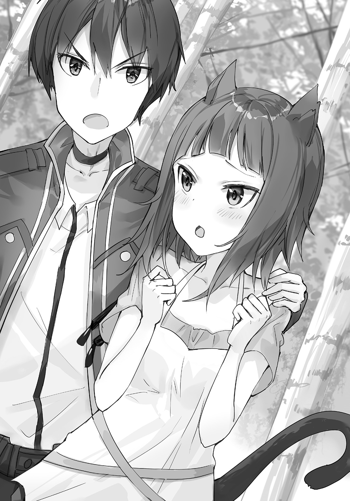
恥じらいを吹き飛ばすかのように活を入れるネコスケ。
よく考えたらジイさんに使用人として雇われていた時点で既に四年も前なんだから、外見ほどは幼くないんだよな。
うむむ、女の扱いってやつは難しい。
とはいえ密着していないと俺ごとテレポートできないので、この腕を離すわけにはいかない。
二重の緊張感がある中、ネコスケは、すうと息を吸って石版の文字を読み上げる。
「テレポート！ 小部屋へ！」
見えている映像が切り替わる。
幻想的な景色が広がる森から、ほの暗く殺風景な地下室へと。
そこには――。
「リキッド・ブレット！」
様子をうかがう猶予すらない。
ランプの灯が浮かぶ中、半病人みたいな面をして部屋の片隅に座りこんでいた男は、俺たちの襲来を知るなり取りつく島もなく魔法らしき単語を唱えた。
どこからか浮かび上がった水の塊が、ラグビーボール大の砲弾となってこちらへと飛来する。
俺に人並み以上の動体視力もなければ、見てからかわせるような運動神経もない。
だが！
先読みできていたなら話は別だ。
「させるかっての！」
ネコスケを背中でかばい、ほぼ同時にカットラスから放った水の刃で応戦。
水で形成された兵器同士が激しくぶつかり合い......鎬を削った末、互いに霧散した。
偶然に起こった現象なんかじゃない。
オークメイジ相手に何回この相殺を試したと思ってんだ。
よし！ 上手くいったか。
俺は内心、拳を握り締めていた。
この窮屈な空間で、下手すれば自分も巻きこみかねない大がかりな魔法なんて使えるはずがない。
更に言及するなら、突然現れた敵に対してそんな派手な魔法を唱えている暇があるとも思えない。
使ってくるとしたら予備動作の短く、かつ小規模なものに限られるだろう。
その読みは、どうやら当たってくれたようだな。
おかげで威力の乏しい魔法モドキでも打ち消すことができた。
そして。
「おっと、下手な真似はするなよ......パウロ」
俺はカットラスの切っ先を策謀家の目と鼻の先に突きつけた。
魔法は切れ目なく連発はできない。逃げ場のない、否応なく肉弾戦を強いられるこの場所では、剣のほうが圧倒的に有利。
二の太刀なんてものは必要なかった。
最初で勝敗は決したんだから。
「追い詰めたぜ、やっとな」
勝負は一瞬だというのに、ここに至るまではどこまでもどこまでも長かった。
「あなたは......図書館でお見かけした冒険者の方ですか。そうか、あなたなら私の居所が予測できてもおかしくはありませんね」
ネコスケに命じて両手をロープで縛らせている間、パウロは空虚な目をしていた。抱いていた理想を諦めてしまったかのように。
「誰にも知られず逃げこめそうな場所っていったら、この部屋になるからな。......町に薔薇を仕掛けたのはお前か？」
「ええ」
「選挙を台無しにするためにか」
「そのとおりです。司書選の結果を恐れたあまり、罪を犯してしまったことを認めましょう」
観念したのか尋問には素直に答えるパウロ。
「それだけじゃねぇだろ。確認させてもらうぜ、ビザールのジイさんが弱った真相をな」
「そこまで辿り着いていましたか。ふふふ、恐れ入りますよ、本当に」
シラを切られるかと思っていた呪いの真偽についてさえだ。
「なによりも司書に憧れていた。それが私という人間なんです」
いつごろからビザールを退任させる手段を考え始めるようになったか、いかにして死の呪縛を完成させ、それを密かにかけたか――。
なにもかもを包み隠さずに語った。
今更噓を並べたところで、なんの意味もない。そんな前置きをして。
「どれだけあのジイさんを憎んだら、そんなふざけたことが......」
「憎んでなどいません。むしろビザール様への敬意を欠かしたことは一時もないくらいです」
「はあ？」
「それでも私は、能力が下降線を辿る前に、冴えと経験の均衡がピークを迎えている間に司書になりたかった。ビザール様をも超える、歴代最高の司書として実績を残せるように」
パウロが明かした夢は奇妙な純粋さに満ちていた。
自分の犯した罪を一切取り繕うこともなく白状し切ったところからしても、こいつの根が純粋なのは間違いない。
しかし......。
純粋すぎるがゆえに邪悪なタチをしている。
取り繕わないということはつまり、悪びれてもいないということなのだから。
「......ふ、ふふふ」
すべてを語り終えた後、パウロは気の抜けた笑いをこぼすようになった。
「誰にも知られることのない毒針だと信じていた......ですが、それすら掘り起こされてしまったのですね。はっ、はは」
パウロは自暴自棄になっているように思えた。出会った時に感じた聡明さは欠片もない。すべてを失った男は、これほどまでに哀れなものなのか。
だが同情なんてものは一切湧いてこない。
こいつは狂っている。利己主義がすぎて、あらゆるものを見落としてしまっている。
だからこそ、尊敬の念を抱いたまま呪い殺そうなどという狂気の沙汰ができるのだろう。
「う、うう......おミャーみたいな奴は大っ嫌いだにゃ！」
ネコスケは涙目になりながらも、強い怒りを露にしていた。
けれど決して手出しはしない。ジイさんの呪いを解けるのはこいつしかいないのだから、あまり手荒にはできない。それを分かっているからこそ、パウロも私刑に怯えて表情を引きつらせたりはしていないのだろう。
「連れてくぞ。こいつを絞るのは自警団と、それからジイさんの役目だ。俺たちじゃない」
ネコスケをなだめながら、パウロを連れて地上へ。
「シュウト様！」
ミミは浮上してきた俺の無事を確認するなり、ぱあっと嬉しそうな笑顔を見せた。
一方でホクトは毅然とした表情を維持し、パウロが妙な真似を起こさないようにとその身をがっしり取り押さえている。
そんな俺にとっては馴染みな顔ぶれの中に。
「フラーゼン......!?」
交ざりこんでいた、思わぬ知己の顔にパウロは驚きを見せた。
「君が知恵を貸していたのか。そうか、そういうことだったのか」
「パウロ、かつての学友として言わせてくれ。僕は君を軽蔑する。その非道と傲慢と、なによりも浅慮にだ。君は自分が見ている世界でしか生きていない」
「......勝ち誇ったような顔で僕を愚弄するな、フラーゼン！」
突然激昂し始めるパウロ。
な、なんだ一体。
「僕はビザール様に負け、シルフィアに負け、そしてたった今流れ者の冒険者にすら負けた。だが貴様には負けていない！」
パウロはフラーゼンにだけ異様に目の色を変えている。
様子を見た感じ、パウロがフラーゼンに対して劣等感を抱いているのは明らかだった。学校の成績で上回られていたことを根に持ってでもいたんだろうか。
学生時代につけられた『格』ってのは、結構長く効力を持つからな。
「いや、むしろ、貴様にだけは勝利したといえよう。僕は長年解明されていなかった木こりの冒険者転向問題に新風をもたらした。この小部屋が証拠だ！」
パウロは以前に図書館で俺に説明した持論をフラーゼンにも語った。
「僕の説には裏づけがある。奇抜なだけの貴様とは違って。ふふ、ハハハ、最後の最後に学園一位様を超えられたのなら、法の下に裁かれたとしても後悔はないな」
得意げにするパウロに対し、フラーゼンは......。
心の底から悲しそうな顔をした。
「パウロ。君は本当に視野が狭いな。先住民族の言語で記されているのなら、彼ら自身が用意したものと考えるのが一番自然じゃないか」
「......なんだって？」
「身を隠す場所として利用していたのが先住民だとしても矛盾はない。彼らが迫害されて森を追われたという史実は、多数の論拠から確定していることなんだから」
「その話はもうたくさんだ！ どうせまたあの学説に結びつけるつもりなんだろう!?」
パウロは苛立っている。
あの学説って、あれか。正式な名称を思い出すのは、まあ、ちょっと、無理なのですが、どのことを指しているのかは分かる。
「前から気になってたけど、その説ってどんな内容なんだ？」
「簡単な話だよ。僕が提唱したのは、かつて存在した『白の森』の先住民は......獣人だったんじゃないかってことさ」
想像以上にぶっとんでいた。
「な、なんだそりゃ。どこからそんな話が出てきたんだ」
「ちゃんと根拠はあるよ。文化や慣習もそうだけど、確信を得た一番の理由は遺跡だ」
「遺跡ってあれか、雑木林の奥の......」
「うん。あの遺跡の成り立ちには諸説あってさ。僕もその考察に、はまった時期がある」
古代文明の謎って思春期の男子が熱中するようなもんなんだろうか。俺は週刊少年ジャンプの続きのほうが気になってたけど、という俺の疑問を置き去りにしてフラーゼンは続ける。
「ここからは僕の推察だけど、最終的に森から去らざるを得なかった先住民族は、遠く離れたその地で自分たちの居場所を主張するためのオブジェクトを建造した。あの像は獣人を表していたんだ。半人半獣という特徴をあえて視覚的に誇張することで、より一層存在感は増す。さながら詩歌における修辞技法のようにね」
......というのが、こいつが十代半ばの頃に唱えて学界を揺るがした説の大筋らしい。
十代半ばの頃の俺といえば、二足歩行以外に特に知的生命体らしい活動はしていなかったはずなので、もう既にこの時点で相当水を開けられていたことが判明する。
なんだろう。ここまでくると最早悔しいとかそういう次元じゃない。
「学問の道を自ら閉ざしておきながら、まだそんな高説が垂れられたんだな、フラーゼン」
パウロは憎々しげに眉根を限界まで寄せている。
「その主張が一般論にならなかったことを知っておきながら......」
「いや、それはどうかな」
フラーゼンではなく、俺が反論した。
「なるほどなー、そういうことか。フラーゼン、お前の考えこそが正しいかもな」
なにも適当に口からデマカセを言っているわけではない。もちろん俺にも根拠はある。
それはネコスケだ。
ネコスケはおそらく、フラーゼンが語るところの先住民の子孫なんじゃないだろうか？
そう考えればネコスケが古い言葉を直感的に読めたり、遺跡に立つ不気味な像をやたらと気に入ったりしたのにも説明がつく。
それらの記憶は種族固有の能力のように、遺伝子に刻みこまれているのだろう。
俺なりに出してみた理屈にパウロは憮然としたが、フラーゼンはニヤリと笑った。
「獣人の血の濃さは僕たちとは比べ物にならないからね。合点のいく話だ」
「ええっ？ そうだったんですかにゃ？」
......当のネコスケ本人に自覚はまったくなかったが、ともかく。
「俺は断然フラーゼンの説を支持するぜ」
と、呆然とするパウロに向けて言ってやった。
「お前の負けだ、パウロ。偉大さでジイさんに負け、戦いで俺に負け、そして一番負けたくなさそうだった頭の出来でもフラーゼンに負けたんだ。お前が勝ってるところなんてどこにもなかったんだよ」
おっと、忘れるところだったな。
訂正入れとくか。
「それと選挙でシルフィアに負けたように思ってるみたいだけど、あれイチから仕組んだのは全部俺だぜ。だから俺はお前に二勝〇敗だ」
そう教えて、俺は指を二本立てた。
結局、司書選は中止を余儀なくされていた。
俺が帰還した時にはまだタワーローズが数本残っていたし、それらへの対処も含めて投票どころではなくなってたから、致し方なし。
もっとも、結論から言うと選挙なんてものは最早不要だった。
なぜなら......。
「現在審査中です。しばらくそのままお待ちください」
「......なあ、なんでそんな他人行儀なの？」
「勤務中ですので」
町全体を巻きこんでの騒乱から数日。
朝っぱらから図書館を訪れていた俺とミミは、相も変わらず事務的でわずらわしい入館手続きを『受付嬢の』シルフィアにやってもらっていた。
平坦な声音と冷たい眼差しに徹したシルフィアは俺のよく知る姿ではあった。
少なくとも、瞼を腫らしていた時よりは、ずっとしっくりきている。
「だからってなぁ。ちょっとの間だけとはいえ仲間だったんだからさ、もっとこう、情緒みたいなのはないわけ？」
「私語は慎むようにと、規則にありますから。......ですが」
シルフィアは咳払いをしてから。
「一人の図書館職員として謝辞を述べさせていただきます。このたびは本当に、ありがとうございました」
と、喜怒哀楽を覆い隠した表情のまま、深々と頭を下げた。
「一人のビザールファンとしてはどういう意見になるんですかね」
「......それを私の口から言わせますか？」
「じょ、冗談だって。そんなムッとするなよ。美人が台無しだ」
俺はキリッとした顔をして言った。
まあ生涯ナンパ成功率一桁パーセントの俺じゃ様にならないので、普通にスルーされたわけだが。
こういう時だけは伊達男が羨ましくなる。
「シュウト様、ミミは素敵なお言葉だったと思います」
フォローを入れてくれるミミの優しさが沁みるな。
「あんたもせめて笑ってくれよ。すげー悲しくなるから」
「何度も申しますが、勤務中ですので」
らしい答えだよ、まったく。
「二人とも審査が終わりましたよ。それでは、よき読書を」
「おう。じゃあな」
「いつもありがとうございます」
ぺこりと礼をしたミミを連れ、蔵書室に向かう。
先ほどの受付でのやり取りを見てのとおり、シルフィアが司書候補として王都に届け出られるようなことはなかった。
今現在司書を務めているのは、それはもう言うまでもないだろう。
「おお、シュウトか！ いやはやよく来た！」
真新しい司書のローブに袖を通したビザールが、破顔して俺を迎え入れた。
「下ろしたてじゃぞ、なかなかよかろう？」
「ウキウキなのはいいけど、声でけぇよ、ジイさん。今度こそマジで解任されるぞ」
「フフ、それは恐ろしい。多少の粗相は許してもらわねばな。なにせ久々の職務じゃ。そちらのお嬢さんも相変わらず麗しい耳をしておるのう」
「え、ええ」
愛想笑いをしながら若干後ずさりするミミ。
譲り受けた旧デザインの純白のローブは、今ではミミが着用している。ビザールのものはそれよりもゆったりとしていて色の基調も紫だ。
「だから触れようとすんなっての！ ミミは俺のものだ」
「ううむ、妬けることを言いおって」
これだからエロジジイは油断ならない。
呪いが解けて元気になったジイさんは今日から職場に復帰していた。
元気になった、といっても、そんな数日で肉づきが戻ったりはするはずもないので、依然として瘦せ細ってはいるのだが。
表沙汰になったパウロの陰謀は町中に衝撃を与えた。
日頃見せていたあいつの人物像とはかけ離れた裏の顔に、多くの住民が失望したという。
けれど小耳に挟んだ話では、自警団の本部でパウロに対面したビザールは、命を脅かされていたというのにさほど怒気を露にはせず、罵声を浴びせることもなかったらしい。
『下の人間に疎まれるのは、上司として当然じゃ』
とかなんとか。
器がでかいのか、お気楽なだけなのか。あるいは、長年目にかけていたパウロへの複雑な愛憎があるのか。それは俺に理解できることじゃない。
とはいえパウロが重罪人であることには変わりない。ジイさんの解呪を済ませた後は余罪多数で即収監された。
本さえ与えていればおとなしくしているので、他に比べて遥かに扱いやすい囚人なんだとか。
ある意味では牢獄の中も、奴が望み続けた本に囲まれた生活といえるのだろう。
さて、なんでジイさんが司書を続けられてるのかというと。
単純な話で、俺が受領書を破棄した。それだけである。
懲戒免職に相当する規約違反自体がなかったことになった。俺がまだ魔術書を受け取っていなかったのでギリギリ踏み止まれたってわけだ。
任期満了までは、少なくともビザールの時代のままだ。
「もしやとは思うが、もうじき町を去るのかの？」
「まあな。あれから遺跡をヘビロテして金も貯まったし」
「なら最後に言わせとくれ。お前さんには、本っ......当に、なにからなにまで世話になった。生涯で一番の恩人じゃ。感謝してもし尽くせぬわい」
「うっ、改めてそう言われるとそわそわするな......」
あんまり感謝されるのって慣れてないからな、俺。
だがここで丸損を受け入れるほど、俺は美しすぎる良心を持っているわけではない。
もらえるものはもらう。それがポリシーである。
ではどうすればいいのかというと、結局のところ図書館が俺個人に直接本を渡した記録がなければいいだけなので、書類上では一旦どこかの協力的な団体に寄贈した形にする。
それから俺がその団体を経由してスッと受け取ったことにすれば完成。
この露骨な三点方式により、ジイさんが規則に抵触することなく蔵書の譲渡ができるってカラクリだ。
で、だ。俺が今日ここに来ているのは、その本を選ぶために他ならない。上級魔術書のチェックを任せていたミミを連れてきているのもそれが理由。
話は前日のうちにまとまってある。
登記上の手続きは全部図書館側でやってくれるとのことなので、特に俺に負担はない。
そのまま持ち帰っていいと説明を受けている。
「さーて、どれにするかな......っても俺じゃ分からねぇか」
ということで。
「ミミが決めてくれるか？ なんでもいいぞ。別に上級魔法ってやつが、威力どうこうってもんじゃないのは知ってるし」
「はい。ミミはこの魔術書が気に入りました」
ほう、もう心に決めてあったのか。
ミミがハシゴをうんしょと上って書棚から抜き取った魔術書の表紙タイトルは、なになに、『かまどの火のグリモワール』......？
「自在に加減を調節できる火を熾せる魔法だそうです」
「なんでまたこんなものを......ああ、あれか。料理の教本とかも見てたしな」
俺の言葉に、ミミは山羊の耳をへにゃっと曲げて恥ずかしそうにした。
ううむ、なんていじらしいんだ。
そんなかわいい仕草と想いを示されて断れるわけがないだろう。
「いいぜ。これにしよう。ミミに使ってもらうためのものなんだから、ミミが欲しがってるものが一番だ」
「はっ、はい！ わがままを聞いてくださってありがとうございます、シュウト様」
「わがままなんかじゃないだろ。俺にだって嬉しいことだしさ。いつかうまい飯作ってくれよ」
「たくさんたくさん、ミミはがんばります」
ミミはにこりと純真な少女のように笑った。
ちなみに火力を強くすれば攻撃にも使えるらしい。一般のご家庭では絶対に真似してはいけないな、その使い方。
「それにしても、料理か。そういや......」
図書館からの帰路で、俺はふと大量に買いこんだ香辛料のことを思い出した。
無用の長物だと思っていたが、やっと使い道ができたか。
「もうちょい補充しておいてもいいな。露天市場まで行ってみるか」
「ふふ。ついていきます、シュウト様」
本当の目的を察したようにクスリとするミミ。
バレバレだったか、さすがに。
「やあ、いらっしゃい」
フラーゼンは営業用なのか元々なのか区別のつきにくいスマイルを、いつもと同じように浮かべて店頭に立っていた。
気を利かせてか、ミミは俺たちとは離れた位置にいる。
積もる話というほどでもないとは弁明したのだが、いろいろと察されてしまったようだ。
それはさておき、本題である。
「今日こそは商売させてくれるかな？ なにせこのところ、お客さんとは違う関わりばかりだったからさ」
「ちゃんと冷やかしじゃなく買って帰ってやるよ。......まあ、それも用事ではあるんだけど、一応最後に顔くらいは出してからにしようと思ってな」
「そうか。もうウィクライフを離れるんだね」
多くを語る前にフラーゼンは言い当ててきた。
「お前には世話になったからな。お前がいなけりゃ分からない事実ばかりだったよ」
「別れの挨拶だなんて、なんだかお客さんらしくないなぁ」
「うるせーよ！ もういい、お前にセンチメンタルなことを期待した俺が馬鹿だった」
俺は照れを隠しながらぶっきらぼうに瓶を三個ほど選び、対価を支払う。
「でもお前から聞かされなかったら知れなかったことだらけだったのは認めるしかねぇよ。えーと、その、なんだ、先住民がどうこうの話にしてもだし」
内心を見透かしているようなフラーゼンのクスクス笑いにムカついたので、負けじとかしこぶった話題に持っていく。ニワカ知識な上に話題の元々の発信源が誰あろうやり合っている相手なので完全に負け戦だったけれども。
「よくあんな奇想天外なことを思いつけたな、それにしても」
「僕個人の主観じゃ、それほど奇想だったとは今でも思わないけどね。誰も考えつかなかったことじゃなくて、誰も考えようとしなかったことに過ぎないし」
「どういうことだよ？」
「あの時にも話したけど、森の先住民は迫害されていたんだ」
帳簿をつけながら、「一緒にいた子たちがいないから話すけど」とフラーゼンは言う。
「その事実は歴史上の出来事として認識されるだけで、なぜ迫害を受けたかの詳しい理由については皆が目を背けてきたことだった。僕は論文の中でそのタブーに触れたから過剰にショッキングな学説みたいに扱われたのさ」
すらすらとペンを走らせたまま。
「僕はシンプルに、彼らが獣人だったからじゃないかって仮説を立てたんだよ。太古の頃は今以上に獣人の立場が低い時代だったろうから」
「な、なんか重い話だな」
「今でも少なからず残り続けてる偏見さ。でなければ人権を制限なんてされない。もっとも、お客さんの視点は随分とフラットなようだけどね」
それはまあ、そうだろう。
俺はこの世界を組み上げた歴史も、根づいた価値観も知らないんだから。
記帳を終えたフラーゼンが瓶を渡してくる。
「お買い上げありがとうございます。またのお越しを」
「旅に出るって言ってんのに『またの』って、きつい皮肉だな」
「皮肉になるかどうかは、僕にもお客さんにも分からないよ」
未来は誰にも読めないからね、と、理詰めの天才は去り際にそう悟ったようにつぶやいた。
こいつの目で見えている世界ですら、未来にまでは繫がっていないのか。
そう考えると妙に勇気が湧いてくる。学問を修めていても分からない先の出来事なんてものを、俺が気にしても仕方ない。
これからもやるようにやって、なるようになるだけなんだろうな。
じゃあな、相棒。
......なんて似合わないことを考えながらミミと落ち合い、ホクトを待たせている宿に戻ろうとしたのだが、その道の途中。
ネコスケとばったり出会った。
奇遇ですにゃー、なんて話しかけてこないあたり、もしかしたら俺が通りかかるのを待っていたのかもしれない。
なにやら浮かない顔をしている。
表情が暗いと色鮮やかなはずの青緑の髪までくすんで見えてしまうから不思議だ。そのくらいネコスケは顔色に感情が表れやすい。
「お暇をいただきましたにゃ」
「うん」
「長いお暇をいただいたんですにゃ」
要するに、クビになったらしい。
クビ、というと言い方が悪いが、すっかり快復したビザールはネコスケの手を借りずともよくなった。変化を愛するネコスケの気質を汲んで契約解除したのは思いやりではある。
「じゃあまた求職活動か。それまでは自宅通いだな」
「う～、知ってるくせに......」
ネコスケは泣きそうな声をして。
「おうちがないのですにゃ！」
と、「だろうな」と苦笑してしか返せないことを言った。
パウロの供述によって明らかになった森の中の隠し部屋は、今では学者たちが連日連夜足を運ぶ格好の研究対象になっている。
とてもじゃないが、ネコスケがのんびり住めるような感じではない。
「今のミャーは住所不定無職ですにゃあ。......早くお仕事を探さないとっ」
「でも住み込みでじゃないとダメなんだろ？ 野宿ってわけにもいかないだろうし」
「そうなんですにゃ。条件が厳しいですにゃ......うう、いつ見つかりますかにゃ」
「だったら俺が奴隷として雇ってもいいか？」
俺は、前々から考えていたことを持ちかける。
初めて一緒に狩りへ出かけた時から目をつけていた。
なんて万能なんだ、ってな。
こいつよりマルチに活躍できそうな獣人に、この先出会えるという保証はない。
「安心してくれ。一カ所に留まり続けることなんてないからさ。やることも毎回別物だ」
「本当ですかにゃ？ 魅力的なお話ですにゃっ」
「まあでも、専属にはなっちまうけども」
「ふむむむ......だけど、いろんな場所に行けるのは凄く惹かれますにゃ」
旅への誘い文句はネコスケの冒険心に火をつけたらしい。
元々好奇心の強い性格だったんだろう。でなければひとつの職業を長く続けないなんていう生活スタイルはしてないだろうし。
「お受けしますにゃ！ シュウトさんとなら飽きずにお仕事ができそうですにゃ！」
ネコスケは胸に右手を当てて、演劇みたいにキザな礼をした。
「世話になった人らに挨拶しておきたかったら、今日明日のうちに頼むぞ。そろそろ俺たちは町を離れるつもりだからな」
「にゃっ。......あのですにゃ。それでしたら、ミャーに名前をつけてくれませんかにゃ？」
猫耳をぴこんと動かしながら、おずおずと言いだすネコスケ。
「え？ ネコスケじゃダメなのか？」
「正式にシュウトさんと契約するんですから、それ用のお名前が欲しいですにゃ」
うーむ、困った。
まあなんとなくでつけた仮名だしな。俺の思いつきをいつまでも引っ張るのも悪いか。
ここは主人らしく、ちゃんとした名前をつけるとしよう。
......。
あれだな、せっかく学問の町なんだし、少しは頭を使って命名してやったほうがいいか。めっちゃワクワクした顔で見てきてるし。
あれやこれやと頭を悩ませた末。
「決めた。お前の名前はナツメだ。今日からそう呼ぼう」
俺は精一杯の文学的な知識で、じっくりと練り上げて考えた名前をつけた。
「はいですにゃ、ご主人様！」
ナツメは八重歯をのぞかせて忠誠を誓う笑みを見せた。

出立当日の朝。
町の東口で待ち合わせていたヒメリは、遅れてやってきた俺たちを見つけるなり雷にでも打たれたような顔をした。
「なんだ？ ああ、積み荷のことか。最初に言っておくけどやらないぞ」
四人分の食料やら衣類やらを補給したから仕方ないが、ホクトが引いている荷馬車はパンパンになっている。これでも余計なものは粗方売り払ったんだけど。
「違います！ どうしてまたまた女の人が増えてるんですか!?」
「そりゃまあ、需要の関係で」
「......勘違いしているのかもしれませんから忠告しますが、色を好むことは必ずしも英雄の条件ってわけではないですよ」
「分かってるっての。俺は戦力としてこいつに期待してるんだよ」
なんならナツメが男でも雇っていた可能性すらある。
とはいえ、現実のナツメがかわいらしい見た目をした女の子であることは、まあ、大変喜ばしい話なのではありますが。
「ナツメといいますにゃ。なにとぞよろしくお願いしますにゃ」
初対面のヒメリにもまったく人見知りしないナツメは、何度も見せてきたようにやたらと芝居がかったお辞儀をする。
「あっ、わざわざありがとうございます。礼儀正しい方ですね。シュウトさんと違って」
「いちいちこっちを見なくていい。それよりだな」
次に向かうべき町についてヒメリに聞く。
ヒメリはフフン、と調子のいい表情をしながら。
「もちろん入念に調べてありますよ。ここから南東に行けば『リステリア』という大きな宿場町があります。およそ二日ほどの旅路になるでしょうか」
「ふむふむ、南東ね」
俺は地図を広げ、『五十点』という可もなく不可もない点数を記してあるウィクライフから右下に視線をずらすと、なるほど確かにリステリアなる名前の町がある。
「リステリアはドルバドル屈指の大教会がある町だそうです。きっと神聖な空気に包まれた厳かな町なのでしょうね」
「ええ......」
またそんな感じのところか。もっと俺にぴったりくる愉快な町はないのかよ。
「嫌そうな顔をしてもダメですよ。他にここから短時間で行ける町はないんですから」
「仕方ねぇか......ところで」
「なんですか？」
「魔法って覚えられたの？」
「うっ。え、ええ、それは大丈夫です。教材が優秀でしたからね、教材が」
なんだその不審なリアクション。
「......本当に覚えられたのか？」
「ほ、本当ですよ！ ええと、その、お風呂に入らなくても済む程度には......」
どうやら数ある中でリフレッシュだけは習得できたらしい。
「そっか。それなら寂しくなるな。俺は臭いお前が好きだったんだけどな」
「なっ!? く、く、臭くなんてありませんよ！ これでも毎日鎧の下のシュミーズは着替えていますし、下着も......ってなにを言わせるんですか！」
「お前が勝手に言ってんじゃねぇか」
冗談をいちいち本気にとらえて顔を赤くするヒメリを見ていると、ああ、こいつマジでいじりやすいなという平和的要素を改めて実感する。
ていうかいつ出発するんだ、俺ら。
「......主殿、そろそろ出発してはいかがでしょうか」
痺れを切らしたのかホクトが進言してきた。
ホクトはどことなく居心地が悪そうにしている。というのも、大がかりな荷馬車を引いているせいで人目につくのを気にしているらしい。
そりゃまあ、通行人にジロジロ見られるのはいい気がしないわな。俺もツヴァイハンダーを背負っている時はめちゃくちゃ視線を浴びるけど、それより目立ってるわけだし。
「おっと、そうだったな。それじゃ行くとするか」
そう言うと、ナツメは大きな声で「おー！」と片手を突き上げて叫んだ。次いでホクトも真面目な顔つきで続き、ミミもくすくすと楽しそうに笑いながら小さく手を上げた。
検問所付近で一泊した次の日には、街道の周囲に広がる自然は草原から次第に湿地帯へと推移していった。
ライトな黄緑色の景色は、落ち着いた深い緑にその色調を変化させている。
「なんかジジくさい雰囲気の土地だな、ここらは」
平野全体に苔が繁茂している。なんというか、特に理由もなくほっとさせられる風景だ。
この辺は俺の日本人としての感性がそう思わせているんだろう。もっともワビサビとかそういう境地はまったく分からないんだけども。
「ですが、ここを走り抜けるのは厳しいように見受けられるであります」
ホクトは『らしい』意見を口にする。
「うーん。それは問題だな」
できることなら、脇道に逸れなくても行けるような狩り場があってくれればいいのだが。
そうこうしているうちに。
「ご主人様、ご主人様。見えてきましたにゃ！」
夕方を迎えつつあった頃、ナツメが俺のコートをクイクイと引っ張って知らせる。
「どこだ？」
「ふっ、このミャーの目にぬかりはありませんにゃ」
「どこだよ」
そんなキメ顔をされても困る。
「あそこですにゃ！」
正面やや右を指差すナツメ。
「おっ、あれか......あんまよく分からねぇけど」
とはいえ凡人の俺とナツメでは相当視力に差があるのか、まだうっすらとしか見えない。
もう少しだけ歩いてみて、ようやく俺の目にもはっきりとそれを収めることができた。
この距離からでも判別できる。そこには確かに、真っ白い大理石を積み上げた教会の威厳に満ちた立ち姿があった。
四番目の町、リステリアに到着。
ウィクライフからの移動距離は一〇〇キロあるかないかだろうか。
「旅、ってほどでもなかったな」
「ですね。それではシュウトさん、私はこれで。次に会う時には一段と成長した姿をお見せしましょう」
いっちょまえな台詞を腹の音でかき消したヒメリは、最寄りの料理店にダッシュしていった。
なんか町での別れ方が毎回このパターンな気がするんだが。
「シュウト様、いかがなさいますか？」
「飯は......そうだな、めんどくさいから買いこんであるパンで済ませようぜ。今日のところは休むのが先決だ」
もうとっくに陽も落ちているし、今からなにかしら大きな行動はできない。まずはこれまでどおり泊まる宿を探すとしよう。
町中をぶらりと歩く。
ご立派な教会のお膝元にある新天地は、それはもう敬虔な教徒たちで溢れて......。
......はいなかった。
「意外だな。あんまり堅苦しい雰囲気じゃねぇな」
リステリアは俺がイメージしていたものとは違い、エネルギッシュな冒険者たちがたくさん行き交う活気のある町だった。
あと、繁華街が充実している。軽く覗いただけでも分かるくらい飲み屋の軒数が多く、店先から笑い声と共に漏れてくる炙った塩漬け肉の香ばしい匂いが俺の胃袋を刺激する。
うむむ、パンで済ませるとは言ったが......燻製も何切れか食卓に並べるか。
誘惑を振り切り、木材と石材が合わさったシックな様相の宿へ。
四人部屋を借りる。これだけの人数ともなると、さすがに一泊あたりの料金も高い。
「主殿、ええと、その」
「なんだ？」
部屋に入ってすぐ、ごにょごにょと小声で話しかけてくるホクト。
「二人部屋をふたつ、ではダメだったのでありましょうか？」
あー、これ。
ミミと俺の二人でしっぽり過ごしたらどうですか、って暗に言ってるんだな。
「いや、四人のほうが賑やかでいいよ」
そう取り繕って答えた。
そりゃもちろん、「じゃあお前したくねーのかよ」って問われたら一人のオスとして首を横に振らざるを得ない。
だけどまあ、別に俺は絶倫ってわけじゃない。いかにミミが魅惑的で抱き心地抜群で気立ても最高の女とはいえ、さすがに毎日は干からびてしまう。
だったら今までどおりのペースでいい。
あんまり自堕落が過ぎると、すべての町を巡る前に力尽きてしまいそうだしな。
これでもリミッターは設けているつもりだ。
それに。
「ミャーは皆さんとご一緒したいですにゃ！」
ナツメは新参者であることを自覚しているのか、俺たち全員と積極的にコミュニケーションを取りたがっている。
特にミミとはほとんど喋る機会がなかったので仲良くなりたそうだった。
奴隷同士の信頼関係の構築は俺としても望むところ。この町に滞在している間に是非とも親睦を深めてもらいたい。
......ただナツメがいる分、『今までのペース』が維持できるかは怪しくなってるんだが。
「そこまでお考えになられていたとは。出過ぎた真似をいたしました。無礼をお許しいただきたく存ずるであります」
「いやそこまで堅苦しくしないでいいけどな。オフの時くらい気楽にいこうぜ、気楽に」
「......はっ」
そんな会話を交わしていたら。
「シュウト様、ホクトさん。夕食の準備ができましたよ」
「食べましょうにゃ！」
向こうからミミとナツメが呼んでくる。テーブルの上にはバゲットボックスとワイングラス、そして燻製肉を盛った皿がセットされていた。
「にゃっにゃっ、たくさんで食べるごはんなんて久しぶりですにゃ。息子さんが四人いる雑貨屋さんのところに下宿してた時以来ですにゃあ」
嬉々として目を細める猫娘を、ミミもまた優しく微笑みながら見つめている。
「おう。今行くよ......ほら、ホクトも着替えが済んだら飯にしようぜ。腹減って仕方ねぇや」
「了解したであります！ ......今のも堅かったでありましょうか？」
「少しだけな、少しだけ」
俺は親指と人差し指の間に微妙な隙間を作ってみせる。
その所作を見たホクトは器用じゃないなりにも、革鎧を繫ぎ止める金具と、凜々しさ一辺倒だった表情を同時に緩めた。
爽快、というほどでもない朝。
俺たち一行はギルドより先に裁縫工房の暖簾をくぐっていた。
いや実際にこの世界に暖簾があるはずもないんだが、気分としてはそんな感じだ。
目的はひとつ。ナツメの装備品の変更である。
「おおおお！ カッコイイ服がいっぱいですにゃ！」
真っ黒い瞳を煌々とさせて店内を物色するナツメは見てのとおりの薄着で、今の装備のままだとこの先探索をしていく中で不安がつきまとう。
とはいえ小柄で非力なこいつが鎧なんて着られるはずもないし、裾が長いローブやガウンも機敏な戦闘スタイルと合わない。
ここは動きやすい冒険者向けの服が最善だろう。
「ご主人様、本当に買ってくださるんですかにゃ？」
「ああ。ってか買っておかないと俺が困る。でかい怪我はさせたくないし」
ただその辺の生地だと大差がない。俺のようにレア素材を用いたものが売っていればそれに越したことはないのだが......。
「うちでは仕入れられてないね。残念ながら」
店主のおっさんはきっぱりと言った。
やはり市販品ではそうそう手に入らないか。
「じゃあ革製品だな。せめて」
布よりはマシだろう。以前に聞いた説明だと強い衝撃はともかくとして、出血の元になる切り傷擦り傷は割と防げるみたいだし。
「レザーか。レザーならよりどりみどりだ。この地方でポピュラーなものとなると、ワニ型の魔物から剝いだ皮革になるな」
「ふむ。ワニか」
「湿地帯に多く棲息する魔物だからな。そりゃもう尽きることなく採れる。軽量級の盾の素材としても人気だぞ」
見せてもらった服はかなりタイトだった。
上下共に黒で、光沢がある。要所要所では金属パーツも使われている。
デザインはまずまずだが、問題は実用性。
「丈夫さのほうはどうなんだ？」
「爪や牙、刃物に対してはかなり頑丈だ。そうそう簡単には引き裂かれない。ただ、どこまでいっても革は革だからなぁ。あまり過度に信用されても責任は取れないぜ」
「うーん。でも服の中ではいい線いってるんだろ？」
「そりゃ当然」
「だったら買うよ。今あるものよりずっとマシだし」
俺は迷いなく購入を決めた。
「あー、ただ」
「なんだい？」
「一番小さいサイズで頼む」
新しい服を買い与えられたことにぴょんぴょんと飛び跳ねて喜ぶナツメは、二十センチくらい浮いているのに全然ホクトの頭を超えられていなかった。
価格にして一万と九〇〇〇Ｇ。早速カーテンの向こう側で着替えさせる。
「ふっ、どうですかにゃ」
腰に手を当てて、ビシッとポーズを決めてみせるナツメ。
ほぼ膨らみのない体にぴっちりとフィットしている。
斜に構えた女が着るとサマになるんだろうが、ニコニコと笑顔を絶やさないナツメだとギャップがありすぎて子供がコスプレしてるみたいだ。どうやら、というか革製だから仕方ないが通気性がイマイチなようで暑いらしく、袖まくりをしているのもわんぱくな印象をかもし出すに一役買っている。ズボンに至っては膝下あたりまでロールアップしてるし。
「わあ、とてもとても素敵です。大人っぽいですね」
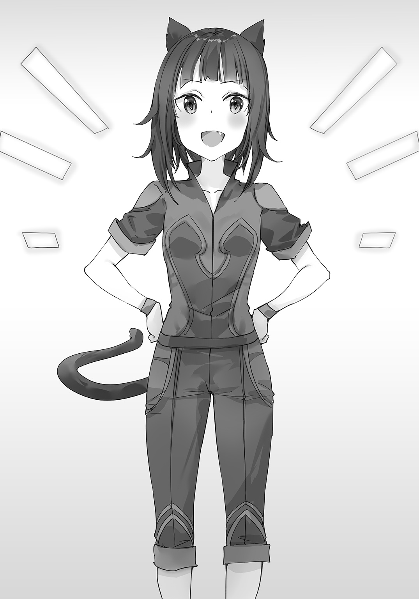
優しいミミはぱちぱちと小さく拍手している。ナツメもナツメで素直な奴なので、「にゃーん」と嬉しそうな猫撫で声を漏らしていた。
「ありがとですにゃ！ ......ご主人様、似合いますかにゃ？」
ナツメがこっちにキラキラとした視線を送ってくる。
「なかなかいいぞ。ロックンローラーって感じだ」
「よく分からないけど嬉しいですにゃ！」
とりあえず現状はこれでいくか。
で、次。
武器である。前日のうちに「使ってみたい武器はあるか？」と聞いてみたのだが。
「ミャーは使い慣れたものがいいですにゃ」
と答えられた。つまり得物がコンパクトな短剣でないと即戦力にはなってくれないらしい。
普通の剣なら余ってるんだが、まあ仕方ない。
「......といっても、短剣と言われてもなぁ」
武器屋に寄った俺は腕を組んで悩む。
近接武器の花形は長く厚く重いものばかりだ。片手剣、大剣、槍、斧、鎚。これらはどこの地域、どこの店に行っても品揃えは一定の質を保っているが、短剣の類はそんなにバリーエション豊かではない。
この町の武器屋もありきたりなナイフしか置いていない。材質も概ね鉄か銀、少し変わったところでガラスがあるくらいだ。
レアメタルなんてそうそうあるはずもなく。
「んー、これだったら今使ってるやつでも一緒か」
ナツメが最初から所持していたナイフも、それなりに上等だそうだしな。
あまり高くもないので予備として銀のナイフだけ買って撤退。
「持っておくだけ持っておくか？ 軽いし」
「にゃっ。ありがたくちょうだいしますにゃ」
買ったばかりのナイフを渡す。
「あっ、せっかくだからご主人様にも見てほしいですにゃ！」
「なにをだ？」
「これですにゃ。ひょい、ひょい、ひょいっと」
するとナツメは手馴れた様子で二本のナイフを使ってジャグリングをしてみせた。安全に配慮してか鞘をつけたままとはいえ、まったく落としそうな気配がない。
「お前......そんな芸までできたのか」
「果物屋さんで教えてもらいましたにゃ。お客さんを呼べるようにって」
とことん器用だな、こいつ。
これだけ手先が器用ならどんな武器でもすぐ扱えるようになりそうだが、そういう問題でもないんだろうな。こいつの装備を考える際は重量に気をつけておくか。
ホクトの怪力とナツメの技術が合わされば完璧なんだが、世の中そんな都合よくはできてない。これが個性ってやつなんだろう。
さておき、買い物も済んだことなので、いよいよギルドに向かう。
「ようこそ、神の息吹が根づく町リステリアへ」
ここの受付に立っているのは小太りのおっさんだった。建物の中の雰囲気はだいたい港町のフィーと似たようなものか。要するに普通だ。
旅で立ち寄った町のギルドはどこも独特だったからな。妙に安心感がある。
「受注待ちの依頼は多数あるから、どれでも好きなものを......」
「いや、そっちの情報はいらない。魔物が出る場所を教えてくれないか？」
通行証を見せながら聞く。
「魔物？ それなら湿地に行けばいくらでも戦えるが」
「湿地ね。ほうほう」
ちょうど防具屋でワニ型の魔物が出没すると聞いたとこだったな。
「だがランクを確認した感じだと腕に自信があるようだし、湿地よりも地下層に潜ったほうが向いているように思えるけどな」
「なんだそりゃ」
「町の地下深くに広がる空洞だ。ま、ちょっと依頼を見てみなよ」
おもむろに一覧表を呈示される。
「こんなもん見せられてもな......ん？」
俺はあることに気がつく。
出ている依頼のほぼすべてが素材採取なのはまだいいとして、その依頼者。
名義が『リステリア大教会』になっているものばかりだ。
「教会がわざわざ仕事を斡旋してるのか？ 公共事業みたいだな」
「それもあるが......これは地下層の存在が大きく関わっているんだよ。あそこに跋扈している魔物は教会側からしたら最も厄介だからな」
「ふーん」
どう繫がりがあるのか全然分からん。
「地下層については教会のほうが詳しく教えてくれるから、興味があるなら一度行ってみるといい。それにだ、せっかくこの町を訪れたんだから教会は観光しておいて損はないぞ。あそこは俺たち町の住人が誇れる唯一の場所だからな」
力説してくるおっさん。
ふむ。じゃあせっかくだし行ってみるとするか。地下層ってのも気になるしな。
「訪ねるのであれば、教団の中枢であられる司祭様と聖女様には挨拶しておくんだぞ。くれぐれも粗相のないようにな」
去り際におっさんはそうアドバイスしてきた。
司祭様とかいうのは俺の貧困な発想力では白髪のジジイしかイメージできないからいいとして、聖女様とはなかなか気になるワードを出してきやがったな。
きっとその名のとおり神聖なオーラをまとった人なんだろうな......。
シスター服に身を包んだ清楚な美女を思い浮かべながら、俺は淡い期待を抱いて教会へと進路を取った。
町の最北端にそびえる教会は間近で見ると迫力があった。
だがそれ以上に、すぐ隣に併設されている四角い木造建築が気になる。オマケにしてはやけに建坪があるがなんなんだあれは。
疑問には思うが、とりあえず教会の中へ。
扉をくぐってすぐ、途轍もなく巨大なステンドグラスが視界に飛びこんできた。大理石の床は丹念に磨き上げられていてピカピカのツヤツヤだ。
祭壇に続く通路は赤い絨毯で分かりやすく示されている。
これぞ聖堂って感じだな。
あと外観どおり広い。天井に至っては「噓だろ」って思わずツッコミたくなる高さだ。
「よくぞいらっしゃいました。リステリア教団はあなたを歓迎いたします」
いかにもな神官風の男が俺たちを出迎えた。
「拝観料は無料です。あなたにも神のご加護があらんことを」
「こりゃどうも」
「ですが寄付はいつでも受け付けております。神のご加護があらんことを」
「はあ」
「神の気分も寄付次第とは有名な話でございます。神のご加護が」
俺は一銭も出さずに先へ進んだ。
「とてもとても綺麗な場所ですね。心が洗われます」
息を呑みそうになるほど壮大な純白の壁面から、精巧な彫金細工が施された燭台に至るまで、おもちゃ屋に来た子供のように無垢な瞳で見渡すミミは、ふんわりとした声で喜ばしげな感想を漏らした。
「そんなに面白いか？」
「はい。シュウト様との旅はいつも新鮮ですけど、今日はとびきりです」
興味津々な割に目元は就寝五秒前ってなくらいにとろんとしているが、まあ、いつものことだから今更の話だな。
一方でホクトは萎縮している。
「神の御前で恥はかけぬでありますからな。自分は心が洗われるというより、研磨されているような心地であります」
身が引き締まりますな、とシャキッとした姿勢で頷くホクト。
体が硬直してくる感覚は分からなくもない。そういう意味では普段と同じように陽気な面でにゃんにゃん言ってるナツメの精神力は大したもんだ。
「司祭様......ってのは、あのジイさんか」
俺は遠く先にある祭壇の前で祈りを捧げている老人を見て、すぐにそれがギルドのおっさんが語っていた教団幹部の一人だと理解できた。
周りにいる若手のシスターと比べて、どう見ても偉そうだ。
一点の汚れもない白装束に総白髪だから、本当に真っ白である。
「......む、参拝希望者か」
なんかイメージと違う喋り方だったが、それはさておいて。
「少しだけ時間もらってもいいかな？」
「構わんが。ふむ、見たところ冒険者のようだし、おおかた子羊も冒険者ギルドの者に地下層の探索でもそそのかされたのだろう」
「まあ簡単に言うとそういうわけでして。その『地下層』ってやつについて具体的に教えてほしいんだ」
ところで子羊っていうのは俺のことなんだろうか。
「リステリア地下層とは四つのフロアによって構成される迷宮だ。そこには数多くの邪悪なる異形ども......アンデッドが棲息している」
「ア、アンデッドね」
嫌な敵が出てきてしまったな。
俺はオバケとかゾンビとかそういうホラーテイストな奴は昔から苦手だった。いかにもな作り話と違って、いそうでいない絶妙なラインを突いてきてるからな、あいつらは。
それでも「いやいや、いるわけねーじゃん」と小学生の強がりみたいに笑い飛ばして乗り切れたが、今回は、いる。確定で。
......いや、むしろ存在が明らかになってるほうがマシか。
あの手のはいるかいないか曖昧な立ち位置にいる時が一番恐ろしく感じるし。
「当然瘴気の濃い下層に行けば行くほど強大になっていく。もっとも、最上層に現れる連中の時点でなかなか手強いがね」
不吉なことを言われる。
「ってことは、それなりにランクが高い冒険者向けのスポットなんだな」
「うむ。町の各所に転送用の魔法陣が設置されているから、軽い気持ちで踏み入る冒険者が後を絶たない。子羊らがそうならないことを願っておこう」
ほう。油断はできなさそうだな。
とはいえ深くまで潜る価値があるかは場合による。
浅いフロアに出る雑魚で十分稼げるならそれでいいし、仮に最下層を探索するのがあまりにも難しいようなら、無理する必要はない。
事情を知るはずもない神官に、神の加護、なんてことをささやかれたが......。
最初っから持ってるんだな、これが。
「地下層がどういうとこなのかはなんとなく分かったよ。でもさ、どうして教会があんなにドカッと依頼を出してるんだ？」
「説明したように、この町の地下は忌まわしき者どもで溢れている。神が苛まれてしまわないよう浄化する務めが我々にはあるのだ。我ら教団にとって、不浄の使者であるアンデッドは最大の天敵といえよう」
おお、もっともらしい理由だ。
深みのある低音ボイスだから説得力が半端ないな。
が、納得する俺をよそに当の司祭は難儀そうな顔をしている。
「......というのが、表向きだな」
「へっ？ なんだそりゃ」
まるで別の理由があるみたいな言い方してるけど。
「詳細は裏手の施設で聞け。あちらで教わったほうが理解が早い。聖女のアリッサがいるから話は聞けるだろう......おそらく」
おそらく、というのがどういう意味なのかは引っかかるが、それより。
「聖女......聖女か」
無駄に緊張してきた。
お目にかかりたかった聖女様とやらは、あんな怪しげな建造物の中にいたのか。
なんか意外だな。てっきり昼夜問わず祈禱に励んでいるものだとばかり。
「だからこそベッドでの姿を想像すると燃えてくるんだけどな」
そんなしょーもないことを考えながら、件の建物へ。
「うおっ！」
鉄の扉を開けた瞬間に、内部に充満していたムワッとした空気が雪崩れ出てきた。
ただ単に湿度と温度が高いだけじゃない。なんていうか......物凄く......。
「ふにゃにゃにゃにゃ、クラクラしてきたにゃあ～」
ナツメは濃厚な匂いを嗅いだだけでよろめいていた。
ホクトも同様。俺とミミだけが比較的この空気に中てられないでいられている。
「ここ、酒蔵じゃん！」
ずらっと並ぶメートル級の樽の数々に、俺は思わず驚嘆してしまった。
プレートがかかっているから分かったが、これ、全部酒だ。
白と赤のワインが山ほどある。
まだ熟成段階なのか知らないが、室温はやや高めに管理されていた。涼やかな気候の町だったから、外との温度差が激しい。
「なんで教会の裏に、こんな大量に溜めこんで......」
「溜めてるだけじゃないんだな～！」
奥のほうから、やたらとカラッとした声が響いた。
「おや!? 見ない顔じゃないか！」
俺たちの前に現れたのは、シスター......はシスターなんだろうが、修道女服をめちゃくちゃ雑に着崩した女だった。
長くしなやかなプラチナの髪を、そんなの知ったこっちゃないとばかりに振り乱している。
「昼間っからカワイコちゃん三人も連れ回して、羨ましいねぇ。このこのっ」
喋ってる内容もだいたい見た目どおりだった。
たぶん、性格もそれ準拠。
だらしのない胸元で下品にゆっさゆっさしてる谷間といい。たくし上げたスカートの裾からのぞいている艶かしい生足といい、眼福は眼福なのだが、ロマンもクソもない。最初から八割方削れているスクラッチくじを与えられたような気分だ。こういうのは過程が一番興奮するっていうのに。
ていうか、酒臭っ。
こいつ完全に酔ってやがるな。よく見たら右手に酒瓶持ってるし。っていうか今もグビグビとラッパ飲みしてるし。
ぶっちゃけると非の打ち所がないくらい目鼻立ちは整っているし、プロポーションも抜群なんだが、表情と姿勢がぐでんぐでんだからマイナス補正がかかっている。
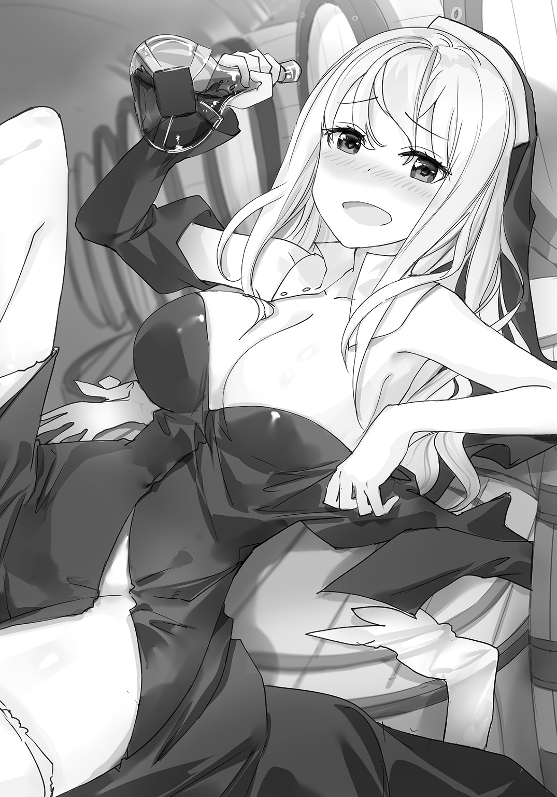
「横から失礼するであります。溜めこむだけでない、とは一体どういう意味なのでありましょうか？」
俺に代わってホクトが質問した。
アルコール混じりの空気に浸されているがギリギリ酔いは回ってないらしく、まだ呂律はしっかりしている。
「んふふ～、ここではねぇ、お酒を造ってるの」
「でもここって教会の一部分だろ。そんなことやって大丈夫なのか？」
「知らないの？ かーっ、これだから今時の子は！」
年寄りくさい反応をされた。
何歳なんだこの人。見た感じ俺よりひとつ上の世代っぽいけど。
「教会はワイン造りの本場だよ！ どこの教会でも副業としてワインを造ってるの！ お金がタダで湧いてくるわけじゃないんだからさ～、アタシたちも生きてくために真面目にお仕事してるってこと」
「へえ、そうなのか」
「常識、常識！ あっ、そうだ、よかったら見学してく？ もっと奥まで行けばバッチリ製造現場が見られるよ！」
「おおっ、それは面白そうですにゃあ。みゅふん」
不規則に足踏みするナツメはマタタビを与えられたみたいにふにゃっていた。
そういやワインって案外宗教的な意味もあったんだっけか。
ただ目の前の人物が真面目に働いてるようには全然見えないが、その前に。
「もしかして......あんたがアリッサなのか？」
「そだよ」
「教会の聖女様だっていう」
「いかにもね！」
「すみません、人違いでした。それでは」
「待った待った～！ せっかくだからちょっとお話ししようじゃないの！」
強引に呼び止められる。
「ほらほら、これがれっきとした証拠！」
とガラ空きの胸元から取り出した、いかにもありがたそうな数珠繫ぎのロザリオを見せつけられたので、やはりこの酔っ払いが聖女アリッサで間違いないらしい。
にしても、こいつのどのへんが聖職者なのか。頭にまで酒が回ってうひゃうひゃ騒いでるのを見てると人生の落伍者って感じなんだが。
俺が思い描いていた清らかな想像図は、ガラガラと音を立てて崩れ去っていた。
後に残ったのは燃えカスじみた現実である。
「まあまあまあ、まずは景気づけに一杯......」
「いらねぇよ。ってか、それ飲みかけじゃん！」
口をつけた瓶を平気で飲まそうとしてくるから恐れ入る。
中学生ならそれで落ちるかもしれないが、生憎俺はれっきとした成人男性。その程度ではなび......なび......いや逆にアリだな。
「でもやっぱいらないわ。ワインなら飽きるほど飲んできてるし」
今朝もパンと一緒に食卓を飾っていた。お馴染みの構図だ。
しかしながらアリッサは意味深な表情で、立てた人差し指を振り。
「ちっちっ、甘いね、お兄さん。この瓶に入ってるのはブランデーだよ」
そんな誘惑をしかけてきた。
「はぁ？ そりゃ珍しいな、ここにはそんなものまで置いてあるのかよ」
「んー、置いてあるというか、造ってるというか？」
どうやらワイン以外の酒の製造も手がけているようだ。
それを割らずに飲んでいることにもびびるが、なによりも。
「蒸留酒も造れるのか？ マジで？」
「そう！ むっふっふ、ウチの他には数えるほどしかないよ～？ ブランデーやウィスキーを造ってるところなんて」
アリッサはふふんと、余裕でＦカップはありそうな胸を張る。
「リステリア大教会はね～、ドルバドルきってのお酒造りの名所なの。技術も設備も人員もみーんな揃ってるし、それこそ聖地ってやつだねっ！」
な、なんだと......。
聖地の意味変わってきてる気がするが、こいつは驚きだ。
俺は醸造酒よりどちらかというとキレ味鋭い蒸留酒のほうが好みだ。だが転生してからというもの、果物や麦を発酵させた醸造酒にしかありつけていない。
それはそれでうまいのだが、心のどこかでは物足りなさを覚えていた。
まさかこんなところで希望の品を拝めるとは。
「製法が一般化されてないから、こんな激ウマなお酒の販売権を独占できてんのよねぇ、うちらって。そりゃもうガッポガッポ儲かって笑いが止まりませんわよ」
ぬひひと女らしからぬ笑い方をするアリッサ。
で、話を更に聞くと。
こいつは酒造事業を全面的に任されているのだそうだ。
品質チェックのため頻繁に試飲を行っているから、式典祭典の時以外はほぼ毎日酩酊しているとのこと。
「......ホントか？ 単に飲みたいだけじゃないのか？」
「それもある！」
やっぱりな。
ただ酒の味にうるさいアリッサが監督し始めてからクオリティが飛躍的に高まり、売れ行きが好調になったのは事実らしい。
その功績が認められて聖女まで昇り詰めたそうだが、いやはや出世街道にも裏ルートってのはあるもんなんだな。
「この施設のことは分かった。でもさ、実を言うと俺が本気で知りたいのはそういうんじゃないんだよ」
「じゃあどういうの？」
「地下層についてだ」
「地下層？ ......あー、そかそか、司祭様に言われて来たのか！」
アリッサは瓶の底でポンと手を打つ。
「今から行っちゃう感じ？」
「まあな」
「それじゃあちゃんと教えとこうかな」
こほん、とわざとらしい咳払いをしてから。
「水を守ってほしいんだよね、あたしらからしたら」
と赤ら顔のまま言った。
「あそこは魔物がうじゃうじゃいるからねぇ。あんまり数が多すぎると地下にある水脈が汚されちゃうのよ。特に腐った連中なんかは最悪！」
「へえ」
「ほら、うちって汲み上げた地下水を使ってるじゃない？」
ご存知みたいなテイで話しかけてきた。
「お酒を造る上で水の良し悪しは死活問題っ！ リステリアのお酒がおいしい一番の理由も質のいい地下水が汲めるからだしさ」
それは理解できる。日本でも基本的に銘酒は名水の産地で造られてたからな。
「蒸留酒には綺麗なお水が必要不可欠だからね～。せっかくの澄んだ地下水を台無しにされたら困るってものですよ、ええまったく」
「はあ。じゃあなんだ、酒の出来栄えを保つために教会側で依頼を出してるのか」
「そゆこと！」
持ち帰った素材が討伐の証拠になるわけだな。
にしても、そんなのが真の理由か。
教会というから随分とお堅い場所なんだろうなと想像していたが、案外俗っぽい考え方がされてるようで俺としては親近感が湧く。
そうと分かれば違うモチベーションも生まれてくるな。俺だってどうせ飲むならうまい酒のほうがいい。
金を稼ぐことが労働後の一杯の充実にも繫がる。これこそ一挙両得じゃないか。
「今日は外食だな、うん。帰りにどっかに寄ろうぜ」
俺はミミら三人に向けてそう伝えた。
「なになに、飲み会の打ち合わせ？ 町にはうちの直営店もあるからそっちもよろしく頼むよっ！」
「そんな事業にまで手を広げてんのかよ......まあ寄ってはみるけど」
「毎度！ ......あっ、そうだ」
そう思い出したようにつぶやくと、アリッサは突然、ことあるごとに揺れているたわわに実ったメロンが眩しい胸元に無造作に手を突っこんだ。
「これ、あげとく」
取り出したのは手の平サイズに折りたたまれた地図だった。
例の地下層の構造が大雑把にではあるが記されている。
ってか、その前にどこに隠してんだよ。めっちゃ人肌に温まってるんだけど。しかもなんかいい匂いがするし。おいおい最高か。
「大事に使うこと！ アリッサお姉さんとの約束だよっ！」
手をひらひらさせて見送るアリッサを残し、早速俺たちは話に出た地下層へ。
教会のすぐ近くにあった魔法陣から、入り口となるフロアに降下する。
いちいち遠出する必要がないというのは楽でいい。
移動は一瞬だった。以前に体感した移送魔法とまったく同質のように感じた。
「うわっ、というか......」
暗っ！
湿った土の匂いが立ちこめているから、ここが地下層とやらで間違いないことはなんとなく分かるが、明かりが皆無だからまともに周りが見えない。
「ランプを出してくれるか？」
俺は探険道具一式を入れたカバンを担いでいるホクトにそう命じるが、それより先に。
「口の中でほどける肉を煮込むための火！」
ミミが何事かを口ずさむ声が響いた。
するとどうだ、ポンッと小さく空中に灯った火が俺たちの周囲をぼんやりと照らし始めたではないか。
火はふよふよとミミに付き従うように浮遊している。
さながら文鳥のように。
「これ、まさか『かまどの火』ってやつか？」
ミミの手には図書館から譲られた魔術書がすっぽりと収まっていた。
「はい。長時間使い続けるのにちょうどよい弱火、だそうです。ランプの代わりにもなるかと思いまして」
どこかかわいげのある火を、うっすらと笑みをたたえて見つめるミミ。
実際ランプの役割は完璧に果たしてくれている。どうやら火の軌道は正確にコントロールされているようで、決して俺たちに接触はしない。
料理用の魔法、という名目の割には、意外と汎用性がありそうだな。
なによりこれを照明に転用しようというミミの発想の柔軟性が素晴らしい。俺は思わず「ううむ」と唸ってしまった。
「ところで凄い名前の魔法だな」
「ええと......そう載っていましたから」
ミミは目線を少しだけ伏せて恥ずかしそうにした。
それはともかくとして。
照らし出された地形を確認する。おおまかな造りは坑道や洞窟と似ているが、四方八方を覆っているのは岩石ではなく土だ。
道幅、高さ共に五メートルくらいか。広くはないが、特別狭くもない。
「この湿気、気力体力を奪われてしまいそうでありますな。精神統一せねば」
ホクトが顔をしかめて言うとおり、ここは梅雨時以上にジメジメしていて、とてもじゃないが快適な空間とは言えない。
ここが地下層の第一フロアか。
近くに他の冒険者の影はない。スタート地点で長居する意味もないってことか。
「にゃっ？ ご主人様、壁の向こうから音が聴こえますにゃ」
ナツメに促されるままに耳を澄ませてみる。
極力静かにして――。
「って、全然聴こえねぇんだけど」
「あっちから水の音がするんですにゃ。チャプチャプって」
「本当かよ」
「間違いありませんにゃ！」
視力だけでなく、聴力もナツメはいいらしい。
というか五感全部が優れてるんだろうか。ともあれダメ元でナツメが指差した方向の壁に耳をくっつけてみる。
「おっ、これのことか」
確かに溜まった水が揺らめくような音が、かすかにだが聴こえてくる。
「帯水層でしょうか。ここから地下水を汲み上げているんですね」
俺の隣でミミが同じポーズをしていた。
この床の下に町の水道事情を支える何百何千リットルもの水源があるとは到底信じられないが、こうして聴こえるからには事実なのだろう。
しかし地下の魔物が増えると水が汚れるということは......。
......あまり深く考えるのはやめとこう。
ミミが浮かべた火に導かれながら、手頃な魔物を求めて先に進む。
数分ほど歩くと展開があった。
「主殿、重々警戒を」
「おう。俺にも見えた」
ホクトの一歩前に出た俺はツヴァイハンダーを構え、道すがらに出くわした奇怪極まりない魔物に目を向ける。
人型の骨だ。まんま骸骨である。
それが何体もの群れをなしていた。
ないはずの眼球で俺たちを恨めしそうに睨みつけてくる。連中がのっそりとした動作で一歩踏み出すたびに、膝や腰の骨がカラカラと高い音を立て、真夏の怪談じみた不気味さを演出していた。
「肉が一片も残ってないのに、どうやって生きてんだ、ああいうのって」
素朴な疑問を抱きつつも俺はスケルトン軍団との距離を詰める。
先手を取って。
「ううお、りゃあああああ！」
裏返る一歩手前の雄叫びを上げ、ツヴァイハンダーをフルスイングする。
この無闇にでかい剣を扱う際は重量を活かすために縦振りすることが多いが、今回は黄金色の刀身を寝かせて水平に薙いでみた。
それが大声の理由である。このくらい大きな声を出さないと力が入らない。
当然俺の腕力では鈍い剣速しか出せないが、鈍いなりに、複数まとめて攻撃。
骨が一斉に砕け散る、乾いた音が鳴り渡った。
損傷の軽微な奴には地面から突き上がらせた土の槍で追い討ちをかける。足の骨が粉砕されたのを確認してから、もう一度薙ぎ払いを浴びせる！
またも軽快な骨の破壊音が祭り囃しを織り成した。
「よし！ あと一体か」
だがそれには。
「にゃっ！」
半歩遅れて飛びかかったナツメのナイフが刺しこまれていた。
肋骨の間にグサリと刃が侵入しているとはいえ、肉を持たないスケルトンなのでもちろん血は噴き上がらない。
だがナツメの狙いはそこではなかった――巧みにナイフを滑らせて骨組みを外し、わずか数秒足らずで上半身をバラバラに解体してしまったのだから。
驚く俺にナツメは「模型屋さんで働いてた時の要領ですにゃ」とケロッとした顔で言ってみせたが、うーむ、凄い。
形態を維持できなくなった魔物たちは例外なく煙となる。
「ふう、片付いたか」
「お見事であります！ 相変わらずの豪胆な戦いぶりですな」
「別に胆は凄くないけどな、俺。戦い方がそれっぽかったってだけだし。こいつが勝手に豪傑に仕立て上げてくれてるんだよ」
ホクトが手渡してきたワインで渇きを潤しながら、俺は地面に突き立てたツヴァイハンダーの柄に手を置く。
一応格好つけたつもりだったのだが、なにせこいつは分身と呼んでいいレベルで俺の身長と寸分違わない規格をしているから、肘と肩が上がってしまってあまり見栄えのいいポーズにはならなかった。
しかしまあ、弱い。
落とした金額も一体につき六〇〇〇Ｇとパッとしない。まだまだ序の口ってとこか。
けれども司祭は「浅い階層でも手強い」と解説していたから、こいつらより歯応えのある魔物が付近にいる可能性はあるな。
更に前進。
まだまだスケルトンの湧くエリアが続いていた。
目についたそばからサクサクと退けていき、道を切り拓く。
それにしてもかなり広い。
定期的に三叉路や十字路に行き当たるあたり、正しく迷宮している。
地図を見ているだけだとそんな感じはしないが、おそらく地上にあるリステリアの町全体とほとんど変わらない面積がありそうだ。
「......おっ？」
四度目の曲がり角を左に曲がったところで、俺は一味違ったスケルトンを発見する。
そいつは素手ではなく、武器を持っていた。
乾燥した血がへばりついた禍々しい見た目の剣を握り、こちらを威嚇してくる。
「ご主人様。あいつにはミャーがいきますにゃ！」
新品の革の服をまとったナツメは「刃物なら任せろ」とばかりに平たい胸を叩く。
「大丈夫だっての。俺のコートの頑丈さを舐めるなよ。......それにだな」
骸骨――ナイトフォルムとでもしておくか。こいつが装備している剣は、この間合いからでも明らかなくらい刃こぼれがひどい。
あんなんじゃ仮に攻撃を受けたとしても大したダメージにはならないだろう。
というわけで。
「でりゃっ！」
臆することなく接近し、ただでさえヘビー級のツヴァイハンダーに俺の体重を乗せて、強烈な一太刀を浴びせる。
例によって瞬殺。そもそも剣同士が触れ合う機会すらなかった。
所要時間と労力は普通のスケルトンを倒した時とまったく一緒なのだが、ドロップアイテムは金貨十枚に折れた刃と微妙に豪華になっている。
攻撃性能が上がっている分、報酬もグレードアップされてるってわけか。
まあその攻撃性能とやらが発揮される前に終わったんだが。
とはいえこの程度の額で満足しろというのも無理な話。
「行こうぜ」
稼げる魔物探しを続行する。
......が、その後に遭遇したのも全部スケルトンの派生型だった。
鉄板を貼りつけた鎧を着ていたり、棍棒を振り回していたり、細長い槍を携えていたり、ハンマーを担いでいたり......無駄にバリエーションが豊富で飽きないものの、基本はどれもこれも脆い骨である。
簡単に言うと雑魚だった。
どのフォルムであろうと苦戦することなく倒せる。
実際、報酬もしょっぱい。素材が異なるだけで落とす金の額は一万Ｇで固定だ。
片っ端からカルシウムの塊をぶっ壊しながら進んでいく俺は息も上がっていない。
宝石のおかげで勝手に疲労は回復していくし、ヒールを使える味方が二人に増えているから保険も万全。
安心して戦闘に臨むことができた。
「ってか、やっぱこの剣が強すぎるな......」
最初の町でこんなクソ強い武器を入手できてるんだから、反則もいいとこだ。
「順風満帆でありますな」
朗々とした声をかけてくるホクト。
「いつもながらお見事であります。主殿の腕では骸骨のみで構成された第一層だと物足りなく感じることでありましょう」
「それな。さっさとポイントを移りたいぜ」
地図を確認した限りだと、下に繫がる魔法陣は数カ所にわたって配置されている。
ここから一番近い場所となると......フロア中央だな。
そこを目指すか。
ただ魔物がこっちの都合を配慮してくれるはずもなく、邪魔な奴らを排除していかないと先に進めない。めんどくせーなと思いつつも渋々狩っていくが......。
「ん？」
通算何十体目かのスケルトン亜種を叩き割った時のことだった。
俺は不意に、地下層内の空気の流れが一変したような感覚に襲われる。
「う、うわああああああ!?」
どうやら気のせいなんかではないらしい。ミミの灯火の明かりが届いていない奥の方から素っ頓狂な悲鳴がいくつか上がっていた。
悲鳴の主たちがこちらに向かって必死の形相で走ってくる。
人数からいってパーティーでも組んでいたんだろうか。
「なんかあったのか？」
「クァーテッド・デバスシアライドが出たんだ！ あなたも逃げたほうがいい！」
そのうちの一人、若々しい風貌をした男は早口でそう答える。
ただでさえ焦っているのに、その上で舌を嚙みそうになる固有名詞を出されたので最高に聞き取りづらかったのだが、それが一体なにを指しているのかは独特すぎる響きからすんなりと推測できる。
「懸賞首か。なんの前触れもなく出やがるんだな......どこの地方でも」
俺が適当なスケルトンを倒した瞬間にこれってことは、魔物の合計撃破数が出現条件なのかもしれない。
「出現場所はどこだ？」
「フロアの中心部だよ！ Ｄランク止まりの俺じゃ敵いっこない......ああ、もう、急いで逃げないと！ チンタラしてるとこっちにやってくるぞ！」
狼狽する男をはじめとしたパーティーは猛ダッシュで後退していった。
うーん、これは判断が難しい。あいつらが落とす報奨金は桁違いとはいえ、毎度毎度討伐には苦労させられてるからな。
ここは他の冒険者に任せておくか。
と、思っていたのだが。
「......続々と逃げてくるな」
「ですにゃあ」
中央にいたであろう面々が次から次に俺たちの横を駆け抜けていく。
戦う気なさすぎだろこいつら。俺が言えた義理じゃないが。
ひょっとして低いランクの奴らしか今潜っていないんじゃなかろうか。さっきの「俺じゃ敵わない」と正直に話していた男もＤだったし。
まあ腕に覚えがあるなら、こんな骸骨たちの桃源郷じゃなくてもっと下を探索してるか。
「シュウト様、いかがなさいますか？」
ミミが、ふっと俺を焚きつけるようなことを言ってきた。
仕方あるまい。
「誰もやらないならやるしかねぇか。倒しとかないと酒の味も落ちるし」
それに他に誰もいないんならそれはそれで好都合だしな。ゴールドラッシュを目撃される心配もない。
俺が取った選択にミミは「はい」と微笑を添えて頷いた。
さっきの思わせぶりな台詞といい、その庇護欲を煽る表情といい、相変わらずその気にさせる天才だな、こいつは。
無意識のうちに人の感情をコントロールしてしまうからミミは恐ろしい。これが魔性ってやつなのか。さすが悪魔と関わりがあるという山羊の獣人。
「では、参りましょう！ 自分も血を滾らせていただくであります！」
「もう滾ってるじゃん」
大仕事を前にホクトが熱くなるのもいつものことだ。
後ろではなく、前に舵を切る。
「あれか......というか、でかっ!?」
魔物の影をとらえた俺は、まず真っ先にその体格に驚愕した。
でかい。重心の低いどっしりとした四足歩行でうろつく、動物の形によく似たそいつは象に迫るサイズがある。今にも背中が天井と擦れてしまいそうだ。
しかし図体が巨大なだけならば、過去にもっと凄い奴を目にしている。
この魔物が本当に異様なのは......これだけの巨軀を誇っているというのに、その肉体を成しているのがすべて剝き出しの骨であるという点。
皮膚や筋肉はなく、骨格だけで動いている。
すなわち、この異形もまたスケルトンの一種だった。
声帯がないせいか一言も鳴き声を発さない。それが尚更不気味に感じさせる。
「怪物にもほどがあるっての。マンモスの骨か？ とことん骨で押してくるな」
とりあえずビーストフォルムと名付けておいた。
で。
こいつの攻略法だが、これといって作戦はない。愚直に攻め立てるしかない大剣装備時の俺ができることなんざ、一に攻撃、二に攻撃だけだ。
みんなに指示だけ出しておくか。
「ミミはなんでもいいから呪いがかかるか試してみてくれ。ナツメは......そうだな、ナイフじゃ心もとないし回復を頼む。ホクトは二人のガード。任せたぞ」
ホクトが敬礼する姿を見届けてから魔物へと接近を図る。
これだけの体格差があっても、不思議と恐怖心は薄かった。ツヴァイハンダーを装備している間はその辺の理性が鈍っているような気がする。あと知性も。あらゆる意味でブロードソードを握っている時とは真逆だ。
まあ、今は発想や機知よりも力と勇壮さのほうが重要だろう。
マンモスを相手にするのは原始人と相場が決まっている。
「ブッ潰れろ！」
ミミが虚弱の呪縛をかけた前足部分目がけて、ストレートに刀身を叩きこむ。
砕き割れた大腿骨の一部が粉となって舞う。
当たり前だがこの一撃で終わってはくれない。でかいだけあって、耐久力も他のスケルトンとはまったく別物といっていい。
ダメージを負った前足は、今度は魔物の武器として稼動した。
わずかに浮かせて外側に開いたかと思うと......。
「ごほっ!?」
一気に振り払う！
野性的に放たれた蹴りをモロに受けた俺は、人身事故にでも遭ったかのように三メートルほど吹っ飛ばされた。
足だけで俺の背丈を上回っているのだから、威力は推して知るべし。
「無茶苦茶してきやがって......というか意外と素早いな、こいつ」
なんとか受身を取る俺。
途方もない衝撃力で派手に弾き飛ばされた割にはダメージは少ない。さすがはレア素材を惜しげもなく使った衣服といったところか。
「ご主人様ー！ 大丈夫ですかにゃ!?」
ナツメがすかさず回復魔法で支援する。
「大丈夫っちゃ大丈夫だが......近づくとめんどくせぇな、この感じだと」
いくらダメージがしょぼいとはいえ、毎回こうやって香港映画じみた吹き飛び方をしていたら気分が萎えてくる。
「でもまあ、やるっきゃないんだけどな」
嫌々ながらに最接近。再び前足をツヴァイハンダーで斬りつける。
先ほど与えたダメージと相まってか、今度は目に見える成果があった。スケルトン・ビーストフォルムはガクンと体勢を崩し、大きな隙が生まれた。
踏ん張りが利いていない。今なら反撃をくらうこともない、はず。
「うりゃあっ！」
この機会を活かさない手はない。立ち上がる前に限界までダメージを稼いでやろうと俺は全力を注ぐ。
側面に回って力任せに剣を振り下ろし、そのまま切っ先を地面へとぶつけた。
隆起した土が返し刀となって脇腹に追撃を入れる。
ツヴァイハンダーを振るたびにバケモノの体を構築する骨が次々に粉砕されていく。一発で並みの魔物を消滅させるだけの破壊力を誇る武器だ。どれだけ丈夫だろうが、回数を重ねられて、いつまでも耐えられるわけがない。
けれど時間も無制限とはいかない。
あと数発で倒し切れるかというところで、全身の骨がガタガタと振動し始める。
やば。起き上がるか？
――そう考えていたのだが。
「高熱の釜でピザ生地を焦がすための火！」
遠くでミミがそう、柔らかくも芯の強い声音で言葉を紡いだ瞬間、ビーストフォルムの後ろ足が激しい炎に包まれた。
焼けつくような温度がこちらにまで伝わってくる。
あれだけの火だ。魔物は決して吠えはしないが、その実、苦しみ悶えているであろうことは容易に想像がつく。
「今のもかまどの火の魔法か？」
「はい！ シュウト様にお力添えしたくて......」
嬉しいことを言ってくれるよ、まったく。
けどこれ、料理ってレベル超えてないですかね？
魔術師が火属性の魔法を使っているところは過去にも目にしたが、それよりも威力が強いように思える。
お構いなしに次なる技を唱えるミミ。
「鮮魚を薫り高い香草焼きに仕立てるための火！」
さっきよりはやや勢力の弱い火が追加される。
それよりミミよ。マジで変な名前の魔法しか載ってないんだな、その魔術書。
だがミミが加勢してくれた甲斐あって、魔物が復帰する勢いは完全に削げた。頭がぐったり垂れ、首の部分が手の届く高さにまで下りてきている。
「これで死ななきゃ大したもんだ。好きなだけ喰らいなっ！」
そこにトドメとなる一撃を見舞う！
刃が魔物の頸椎を完璧にとらえた。
自画自賛するのもアレだが、会心の一撃だった。手の平に伝わってきた感触といい、鳴り響いた骨が砕け散る音といい、爽快さに満ちていた。
死骸に限りなく近い生命体はようやく昇天した。
溢れ出た煙の量も半端ではない。全部消え去るまで結構な秒数を要した。
肉体が滅び去る中で魔物が残していったものは、俺一人では抱えきれないほどの膨大な枚数の金貨と、そして長大な肋骨。
「うおお......これだけまとまった報奨金を見たのは久しぶりだな......」
蝶は捕まえただけだったし、ゴーレムは原石しか落とさなかった。
うむ、百枚単位の金貨の山っていうのはいつ見てもいいものだな。
俺が感慨に浸っていると、いつの間にか隣にまで来ていたナツメが目を閉じて何度も頷いている。
「やりましたにゃっ！ ご主人様ってこんなに強かったんですにゃあ。ふむふむ」
「はい。シュウト様はとてもとても頼もしいマスターですよ」
ミミはナツメに、どことなく嬉しそうに声を弾ませて語った。
「お疲れさまであります。主殿の力強い剣技、自分も見習わねば......」
水分補給用のワインを俺に手渡すホクト。
「ところで主殿、このまま探索を継続するのでありますか？」
「んー、それだけどさ」
すぐ奥に魔法陣も見えているが......大金も得られたことだし、今日のところはこれらを持ち帰って終わりにしておくか。
そんな精力的に活動し続けられるほど、俺は殊勝な人間じゃない。
戦利品を回収し、地上に帰還。
今回獲得した素材は二メートル近くもあるから運ぶのも一苦労だ。
久々に拝む日光が浮上したての俺の目をくらませ......たりはしなかった。
長いこと地下にいたから分からなかったが、既に太陽は沈みつつある。ちょうどいいくらいの時間帯だな。
冒険者ギルドに直行。
「ようこそギルドへ......おや、それはまさか」
おっさんは俺が持ち帰った魔物の骨を見るなり、ニヤリと口角を上げた。
「ふうむ、スケールからして間違いない。クァーテッド・デバスシアライドの骨だな」
「さっき倒してきたんだよ。結構手を焼いたぜ」
「初日でこれとはやるもんだ。フィーの出身者もなかなかどうして侮れんなぁ」
俺の顔をジロジロと見ながらおっさんは腕を組む。
「死者の怨みに応えて湧き起こるとされている魔物でな。調子に乗ってスケルトンを撃破しすぎるとこいつに痛い目に遭わされるんだよ」
つまり第一層のボス的存在らしい。
それにしても、出現条件が初見殺しすぎるだろ。
「そういうのは先に言ってくれよな」
「教会で教わらなかったのか？」
「全然。それっぽいことは司祭が話してくれたけど。ま、勝てたからいいんだけどさ」
金にもなったしな。第一層はあまり稼げないと思っていたが、こいつ目当てでスケルトン狩りをする、という手法も悪くないかもしれない。
でもまあ、まずは下層も巡ってみてからか、それを決めるのは。
今後の計画についてあれこれ思案する俺をよそに、おっさんは骨をコツコツと叩きながら真贋を再鑑定している。
「それにしても肋骨か。これはまた良品を持ってきてくれたもんだ」
「素材にいい悪いとかあるのか？ どれも一緒なんじゃ」
「奴は三種類の素材を落とす魔物なんだよ。最も希少なのは背骨で、これは滅多に落とさない。肋骨はそれなりの頻度。よく落とすのは腰骨だ。基本的に珍しい部位ほど加工の幅が広く、上等な素材とされる」
「ほう」
ってことは松竹梅でいったら竹だな。
まあ背骨なんて落とされても、でかすぎて少人数じゃ運搬できそうにないが。
「とはいえ、どれを持ちこもうが討伐の証拠になるのは一緒だ。クァーテッド・デバスシアライドにかけられた懸賞金は四万五〇〇〇Ｇ。その骨と交換しておこう」
「え、あげないけど」
俺は、そう当然のように返答した。
「は？ いや、賞金が出るんだぞ？ お前の評判も王都に伝わるだろうし......」
「どっちもいらねぇからな。この素材のほうが欲しいし」
これはギルドに寄る前から決めていたことである。
レア敵がドロップしたものがレア素材なのは分かり切った話。
以前は名声のために涙を飲んで納品していたが、通行証を手にした今となってはそうする義理はない。
金にしたってギリギリ諦めをつけられるラインだ。四万五〇〇〇Ｇという数字は確かに高額だが、ビーストフォルム自体がその十倍近い資金を落としていっているんだし。
素材は素材として役立たせてもらう。
「......まあそれもひとつのやり方だな。こっちが指図することじゃないか」
「理解してくれて助かるよ」
「装備品として使うのであれば、そうだなぁ、杖やアクセサリーなんかが一般的だな。骨系統の素材はそれほど衝撃に強い性質を有していないから、激しいぶつかり合いが避けられない武器や防具には向いていない」
なんか俺向けじゃないな、話聞いてると。
「材質そのものが頑強なレアメタルと比べるのは酷ってもんだ。そういう意味では杖に仕立てるのがベストだろうな」
うーん、杖か。それはもう間に合ってるんだよな。
古木の枝より優れているようなら変える価値はあるが、そもそもミミにはしばらく魔術書を装備していてもらう予定だ。かまどの火もそうだが、まだまだ中級呪術の魔術書セットも残っている。
ここはアクセサリーにするのが妥当か。
いやいや、ここは他の選択肢も検討してから......。
「随分と悩んでいる様子だな」
「そりゃあ悩むって......考え甲斐もあるしさ」
「どう使うかはお前の自由だからこれ以上はなにも言わない。いい装備品が出来上がることを神に祈っておくよ」
「分かった。いろいろとありがとな」
......と、そうだった。
「こっちも使い道があるかどうか聞いておきたいんだけど」
俺はホクトから受け取った革袋の中身を見せる。
そこにはスケルトンが所持していた武器の残骸が大量に詰まっている。折れた刃に割れた穂先、金鎚の破片......などなど。
「これは大したものじゃないな。鋳潰せば鉄になるだけだ」
「なんだ、しょーもな」
期待はハナからしてなかったが、そんなもんか。
ということで、まとめて納品した。
一応は依頼達成扱いになるのでささやかながら報酬をもらう。
「じゃあな。また明日にでも来るよ」
おっさんに別れを告げて建物の外に出てみると、とっくに町の情景はノスタルジックな夕焼けに覆われていた。レンガ造りの家々がいい感じのオレンジ色に染まっている。
今の俺にはそれが赤提灯の明かりにしか見えない。
腹も減ったし喉も渇いた。ミミたちも同じだろう。
「晩飯にしようぜ。せっかくだし、うまい料理を食おうじゃないか」
それとうまい酒もな。
俺はこの瞬間を探索中もずっと心待ちにしていた。アリッサから聞かされたとおり、この町には蒸留酒がある。是が非でも味わいたいところ。
ナツメも飯と聞いてテンションを上げている。
「お付き合いしますにゃ。ふっ、ミャーは隠れた酒豪なのですにゃ......」
「いや匂いだけで酔ってただろ。素直に牛乳にしておけ」
「子猫じゃないですにゃっ！」
と言いながらも、ナツメは甘いミルクの味を想像したのか涎を垂らしていた。
夕陽に包まれた町を歩き、仕事帰りの人々で溢れた繁華街に行き着く。
あちこち目移りしてしまうが、客の入りからして、どの店も一定の水準はあるだろう。
直観で選んだ、よさげな店へ。
どうせ詳しくは分からないのでメニューを見もせずに注文する。
「四人前の料理をおまかせで。それとウィスキーを頼みたいんだけど、ある？」
「もちろんですよ。当店では教会印の上質なアルコール類を各種取り揃えております。混ぜ物の果汁ジュースや冷えた地下水もありますよ」
なんという親切設計。とりあえずウィスキーの水割りを頼んでおいた。
ミミは俺にならって同じものを、ナツメは無駄にかっこつけた顔つきと声色で「牛乳のミルク割りで」とオーダーしていた。
で、ホクトだが。
「一杯だけならお付き合いできるであります」
「無理しなくていいぜ。すぐベロベロになっちゃうじゃん」
「いえ、自分としてもそうしたいのであります。主君と酒を酌み交わすのは配下の本望でありますから」
本人がそう主張するので柑橘類で割ったカクテルを頼んだが、どうなることやら。
ドリンクは数分と経たず運ばれてきた。
「おお......マジでウィスキーだ」
この混じり気のない透明感。待ち焦がれておりました。
早速一口。
俺は感動の涙を流しそうになった。
うますぎて泣けてくる。
舌に触れた瞬間のインパクトと、喉を通ってから後を引かないキレ味。このグラスには蒸留酒の醍醐味が詰まっている。
「ふあ......すぐに酔ってしまいそうです」
両手で持ったグラスを傾けるやいなや、瞳に熱を帯びさせてかすかにくらりとするミミの色っぽい仕草にもやられそうになる。
「そうなったらシュウト様、申し訳ありませんが......」
「な、なんだ」
「寄りかかってしまうかもしれません」
今すぐにでもそうしてほしいくらいなんだが。
しかしまあ、気分よく酔えるな、この店は。
変な言い方だが、客の行儀がよくないのがいいんだろう。かしこまって飲む酒はどうにもまずい。それよりはこんな騒がしい雰囲気のほうが俺には合っている。
そうこうしているうちに、料理の皿が遅れてやってくる。
ハーブを混ぜたパン粉をまぶして焼かれた謎の肉とグリーンサラダ、煮込んだ豆、薄くスライスしたチーズに、それからやりすぎなくらい熱々のスープ。
息を吹いて冷ましてから口にしたスープは塩漬け肉をお湯にぶちこんだだけの一品なのだが、これがたまらなくうまい。熟成した肉から旨味がでろでろと溶け出ている。肉は肉でスプーンで小突いただけで繊維がホロホロと剝がれる柔らかさ。
塩気の利いたこれに固めのバゲットを浸して食べると最高だな。汁がなくなった後の肉はいい酒のツマミになる。
二杯目を注文してからフォークを刺したメインディッシュはといえば。
「美味であります！」
とホクトが感嘆符をつけて賞賛するほど絶品だった。
まずアホみたいな話だが外のパン粉がうまい。複数種類のハーブに加えて粗い塩が混ぜこまれているのだが、これが軽く油を吸ってサクサクとした食感になっている。
肉は脂身が少なく、かなり筋肉質だ。
味も歯応えもしっかりしていて、嚙み切ろうとすると筋が歯を跳ね返してくる。
俺は貧乏性だから焼いて旨味を閉じこめた肉は固ければ固いほどいいという持論がある。嚙む回数が多いと得に感じるからな。
顎が疲れたら冷たい水割りを呷る。
油と塩味が綺麗さっぱり洗い流されると、また次の一口が欲しくなってくる。
凄まじい相乗作用である。
ただの付け合わせと思っていた豆にも手抜きはない。濃い目に味付けされていて、これだけで充分酒が進む。
「それにしても、食事がめちゃくちゃ新鮮に感じてしまうな......ただ飲み物がワインじゃなくなっただけなのに」
「うむ、これまでの町で経験してきたものとは一味違いますな」
ホクトも酒の味には満足しているらしい。今のところは表情もキリリとしている。まあグラスが空になる頃には記憶も吹き飛んでいることだろう。
一方ナツメはマイペースに牛乳をコクコクと飲み干していた。
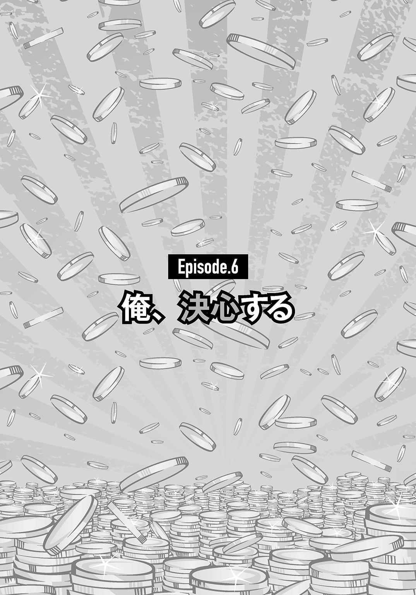
地下層探索二日目。
調子に乗って飲みすぎたツケの重い二日酔いに耐えながら降下した第二層は、昨日探索したフロアとほぼ同じ構造をしていた。
ほぼ、と付けたのは微妙に違いがあるためで、一定の間隔で柱が立てられている。
「これって要するに......崩れやすい層ってことなんだろ？」
俺は天井が落ちてこないかびくつきながら進んだ。
で、このポイントに出没する魔物に関してだが。
端的に言うと最悪だった。
「つ、ついに出てきてしまったか......」
少し前を飛ぶ魔力の火が照らし出したのは、いよいよ真打のお出ましだとばかりに凶悪なオーラを放っている――動く死体ことゾンビ。
二本足でぼーっと立っているだけなのに凄まじい存在感だ。
朽ちた肉体の隙間からは臓器がこぼれ落ち、あばら骨が垣間見えている。
「なかなかどうしてセクシーな奴じゃないか」
俺は皮肉をつぶやく。
いやもう本当に、こういうビジュアルの敵はきついっす。
「にゃにゃにゃっ!? ご主人様、すっごく臭いですにゃっ」
「俺が臭いみたいな言い方はやめろ」
「ふみゃあ、鼻が曲がりますにゃあ......」
ナツメの敏感な嗅覚だと、ゾンビから否応なしに漂ってくる腐乱臭には相当我慢しがたいものがあるらしい。
「解決策があるぞ。呼吸をしない」
「死にますにゃ！」
「ずっとじゃねぇよ。あいつを倒すまでだ」
ゾンビを倒さない限り前進はできない。
かといって後退するのも生産性がなさすぎて馬鹿らしい。
大柄な相棒ツヴァイハンダーを握り締め、俺は「なんでこんな気色悪い奴と戦わなきゃならんのだ」という嫌気を無理やりごまかしながら接近。
「だらあっ！」
一気に振り下ろす。
いつもならこの一発で弾け飛ぶか、最低でも裂傷を走らせられるのだが......。
「はぁ？ おいおい、ふざけるのも大概にしてくれよな」
目に見えるダメージには至っていなかった。
それどころか手応えも薄い。出血しようにも血液がなく、傷を作ろうにも皮膚が最初から破れている。
ゾンビの背丈は俺と変わらない。つまりツヴァイハンダーの刀身の長さくらいだというのに、それだけ巨大な金属塊をその身に受けても膝を折らないとは。
「雑魚のくせになんつー耐久力だよ......」
湖畔で遭遇した死に損ないのカエルを思い出す。そういえば、あれも剣での攻撃には異様に耐性があった。
ゾンビってのは基本的に斬撃に対して強くできている、と考えていいな。
ただし、その分動きは非常にトロくさい。反撃に振り回した腕は、並みの動体視力しかない俺でも軌道を見切れるくらい遅かった。
「だったらこっちだ！」
地面に剣の先端を接触させる。
ゾンビの足元から鋭く伸びた土砂の剣山が、反応すらさせずに標的を貫く。
間髪容れずに二本目。
断末魔の叫びと共に飛び散った肉片はすぐに煙へと変わった。
うむ、レアメタル製の武器にはこれがあるから便利だ。物理あるいは魔法が効かないといった想定外のシチュエーションへの対応力が素晴らしい。
この追加効果があればゾンビ戦も特に手間取ることなくこなせるだろう。
問題は心的外傷になりそうなくらいグロテスクな光景を間近で見させられることだが。
「やべぇ、今日はちょっと肉は食えないかも......」
ヘルシーに野菜だけにしとくか。
「......ぷはっ。終わりましたかにゃ？」
ナツメは本気で息を止めていたらしい。
っと、忘れるところだった。戦果を確認しておかないと。
金貨が十四枚、それと素材アイテムと思しきボロ切れが落ちている。このボロ切れを集めてもどうせ普通の布に作り変えられるだけなんだろうな、前例からいって。
くっ、二層でもこの程度か......。
悲観するほど悪い収益ではないけども。
そんなことを考えている間に、地面からずるりと次なるゾンビが湧き出てくる。
「うわ、ゾンビってこんな感じで出現してくるのかよ」
マジでＢ級ホラー映画みたいだ。
「ここは......ミミ」
「はい。シュウト様のお考えはミミにも分かっております」
ミミは俺が指示する前から魔術書のページをめくっていた。
「あちらの敵に、火を浴びせればよろしいのですね？」
「ああ。察しがよくて助かるぜ」
魔法が効果的っていうんなら、俺よりもミミのほうが適任なのは明白。
それにアンデッドは火に弱いというのが定番だしな。これでくたばらないようならそれはもうゾンビではない。ゾンビを超えたナニカだ。
すう、と小さく息を吸って精神統一するミミ。
「参ります......神事に捧げる丸焼きを炙るための火！」
例によってヘンテコな名称の魔法が唱えられると、およそ一メートルの高さはあろうかという火柱がゾンビ付近に噴き上がった。
猛々しく燃え盛る緋色の炎は一切の慈悲なくゾンビを焼き払う。
まさしく火炙りである。
腐敗した肉体は瞬く間に灰となって焼失し、後には撃破報奨だけが残される。
それにしても、この火力でないと火が通らない肉とは一体。
「ナイスだ、ミミ！ ......しかし一撃か」
にこりと微笑むミミに向けて親指を立てつつも、俺は頭にとある考えを浮かべる。
これ、俺が下手に戦うよりもミミに任せたほうが効率いいんじゃ。
というわけで作戦変更。
俺はゾンビの汚らしい手から三人を守ることだけに集中して、攻撃はすべてミミにやってもらうようにした。
予想どおり討伐の回転率は飛躍的に向上。
フロアを探索していて気づかされたが、ゾンビには三パターン存在していた。さっきも相手したオーソドックスな人型と、それから犬型と鳥型だ。
ゾンビ犬は地面を這いつくばるだけだが、ゾンビ鳥はボロボロの翼をはためかせて、ゆっくりながらも飛行する。どちらもグズグズになった体で向こう見ずな突進を仕掛けてくるので、ダメージはもとより不快感がやばい。
他に目立った特徴としては素材をよこさない代わりに、通常のゾンビよりもわずかに落とす金貨の量が多いといったところか。
そいつらが現れたそばからミミがかまどの火を浴びせかける。
たったそれだけで、対象になったゾンビはしつこくしがみついていた生を手放した。
適切に火力が調整された、ゾンビだけを喰らい尽くす炎。
一撃で倒し切る威力、発見から撃退までの瞬発力、何度も放てるだけの持久力......いずれも申し分ない。
「うーん、俺の出る幕なさすぎて笑えてくるな」
けれど、それは嬉しい悲鳴だ。
眺めていて感じたが、ミミは魔法使いとして目覚ましい成長を遂げている。
図書館でじっくりと勉強したことで魔法の基礎力が上がっているんだろう。
その結果がこのテンポのいいゾンビキラーぶり。
これだけ迅速に片付けられるとなると、一匹一匹の報奨はしょぼくても総額は結構な数字になってくれるな。
ホクトが背負っているカバンも徐々に金貨で埋まり始めている。
なんというかモグラ叩きだな。なので俺の中での作戦名を『ミミミミパニック』にしようかとも思ったが、すげー言いにくいのでやめた。
と、ここで。
「ん？ あいつは」
第二層の右側の通路を歩いていたら、真紅の鎧を着た女剣士を発見。
言うまでもなくヒメリである。
パーティーを組んでいるような気配はない。一人だけで潜っているのか。
「む、シュウトさんですか。探索スポットがかぶるとは奇遇ですね」
「そんな奇遇ってほどでもないだろ。他は湿地帯くらいしかねぇし......それより、よくソロで活動できてるな」
俺の超強力な武器ですら通じにくかったのに、真っ当に剣で斬りかかるしか攻撃手段のないヒメリはかなり苦戦しそうなものだが。
「ふふ、見くびらないでもらいたいですね。戦士たる者、日々の進歩は務めです」
めっちゃドヤられた。
ただその自信ありげな顔にも根拠はあるようで。
「私は新しい力を得たんですよ！」
ヒメリがシャキンと軽やかな音を立てて鞘から引き抜いた長剣は......無骨な鋼鉄の鈍色ではなく、美しい白銀の輝きを宿していた。
刃渡り八十センチほどある刀身は芸術品かと見紛うような気品があり、さながら鏡のように俺とヒメリの顔を映し出している。
「これ、銀で出来てるのか？」
「そうです！ もっとも純度一〇〇パーセントの銀ではなく、銀を加えた鋼ですが」
「へえ」
「地下層対策でこの町で一番という鍛冶工の方に作ってもらいました。今朝完成したばかりでしたが......はあ、素晴らしい業物です」
ヒメリはうっとりとした表情で溜め息混じりに剣の出来栄えを称える。
「よくこれだけの銀があったな」
「ウィクライフで採れた銀鉱石を持ちこんだんですよ。あの地方の鉱山は銀の産出地として有名ですからね」
「なんだ、勉強ばっかしてたわけじゃないのか」
「当たり前です。文武両道、晴耕雨読。剣の腕を磨くことも怠ってはいません！」
ビシッと人差し指を垂直に立てるヒメリ。
俺には剣じゃないほうの腕をおろそかにしているように見えるが、それよりだ。
「なんでその剣が地下層の対策になるんだ？」
「簡単です。アンデッド系の魔物は銀を用いた武器が弱点。それだけのことですよ」
「銀が弱点？」
急に重大な情報を告げられる。
「マジでか？ 俺、普通に知らなかったんだけど」
「初日に訪ねた酒場で、地元の冒険者の方たちに地下層の魔物について情報収集しましたからね。ちょうど銀鉱石の手持ちがあって好都合でした」
「そんなことまでしてたのか。飯食ってただけだと思ってたよ」
「まあごはんもおいしくはいただいたんですが......ってそんな話はいいでしょう！」
ヒメリは食いしん坊キャラを否定するためにぶんぶんと首を振ったが、一緒に揺れているぎゅうぎゅう詰めのバックパックからパンクズがこぼれ落ちていた。
「......はあ。とにかく、この剣があればここまでは大きな危険もなく探索できるんですよ。下のフロアに行くかはもう少し様子をうかがってからにしますが......」
「そうか。まあお互いゆっくりじっくりやってこうぜ」
「言われずともです。それでは、お先に」
小さく手を振ったヒメリは、俺たちが通ってきた道を進んでいった。
「うーん、銀が有効だったのか」
かなりの耳寄り情報だ。しかしよく考えてみると、ヒメリの剣技があってようやく銀製の武器を活かせるんだから、素人に毛が生えた程度の俺じゃ無理だろう。
俺はレアメタル一本でいかせてもらうか。
「ご主人様。銀といえばミャーが装備していますにゃ」
ナツメが紅葉のように小さな手の中で、くるくると銀色の刃を回転させる。
そういや、武器屋を冷やかしついでで銀のナイフを買ってあったんだったか。
「そうだなぁ。モノは試しでナツメのナイフがどのくらい効くか見てみるか」
「分かりましたにゃ！」
タイミングよく、ゾンビ犬が地面からおどろおどろしく這い上がってきた。
四足歩行という違いこそあれど、ベースは人型と大差ない。刃物による攻撃には雑魚敵とは思えぬほど抗えるが敏捷性は皆無。
機動力がないということはすなわち、ナツメにとってはやりやすい相手だ。
息をもつかせぬ速度で急接近。
スピードを緩めず、慣性を乗せて銀のナイフを魔物の喉元に突き刺す。
魔物は、ゲファ、と異物を飲みこんだかのような苦しげな声を漏らした。
それもそのはずで、銀の成分と反応してか患部が焼けついていた。
おお、効いている。
とはいえ重量感の乏しいナイフでは一撃必殺とはいかない。ナイフ、ひいてはナツメの真骨頂は手数。ゾンビ犬が反撃に出る前に、連続で刃を肉の下に潜りこませる！
六、七度目にナイフが突き刺さった時、ついに魔物は煙となって消滅した。
「ぷはっ！ 近づくと息を止めてても臭いですにゃあ......」
敵を倒し終えたナツメは新鮮な空気を求めて後退する。ミミが「お疲れさまです」と一声かけるとすぐにご機嫌な笑顔を見せた。
「なるほどな、これが銀の効果か」
ナツメの技量も当然あるだろうが、魔法でなくとも割とサクッと倒せてしまった。
これは更なるシフトチェンジを敢行すべきか。
前衛ナツメ、後衛ミミ。これだな。俺が一番楽できる構えだ。
「......あー、待てよ」
ポジションを決める中で、俺は大事な人物を失念していたことに気づく。
ホクトだ。道具を運ぶだけでずっと黙っていたホクトが不意に気にかかる。
いつもなら魔物を相手取る俺を激励してくれるのだが、生憎今日の俺はほとんど戦闘に参加していない。なのでホクトは今回相当に暇だったに違いない。
視線を滑らせる。
「ホクト、一緒に金貨の回収をしようぜ。他の連中に見られるわけにはいかないから、速やかにな」
けれど聞き慣れた「了解であります！」の台詞はすぐには返ってこなかった。
ホクトは同僚二人を、どこか寂しげな瞳で見つめている。
「なあホクト、どうかしたのか？」
「......はっ！ ああ、いえ、なんでもありませぬ」
「そうか？ ならいいけど」
「申し訳ないであります。いやはや、常在戦場の心構えが足りていませんでした」
ささっと凜々しい顔を作って返事をしたホクトは取り繕ったつもりなんだろうが、言葉の端々にはなにかを隠していそうな響きが滲んでいた。
これがいわゆるフラストレーションというやつか。
俺としてもできることなら派手に活躍できる舞台を与えてやりたいところではあるが、なかなか折り合いがつかず難しい。
自分の仕事に誇りを持ってもらうしかないな。
といっても、やってることはただの荷物持ちだから、単調すぎてやりがいを感じられないのは間違いない。
なにかいい案があればいいのだが。
「......おや？」
フロア内をうろついている途中、ふと行き着いた突き当たりに魔法陣を発見する。
「えーと、これは......下に続く分の装置か」
いそいそと地図を参照。
かまどの火を引き寄せたミミも一緒に覗きこんでくる。
この暗闇に閉ざされた迷宮は全部で四層にわたると表記されているから、次からいよいよ地下層攻略の後半戦といったところか。
「一旦準備に戻ってもいいな。傾向からいって魔物も強くなるだろうし」
「いかがなさいますか？」
「うーん」
どうしよ。引き返すのも手だけども。
「まだ余裕があるからなー。見るだけ見てみるか」
ということで移動。
これまでとまったく同一の光景が広がっている。要するに、暗い。
ミミの灯火を頼りに恐る恐る進んでいく。
依然として湿度は高いものの、上二層に比べて妙にひんやりとした空気がこのフロアには流れていた。首筋や背中が時折、冷たさに襲われてぞくりと震える。
温度が低い分快適といえば快適だが、薄気味悪くもある。
その薄気味悪さを象徴するかのように、この階層で最初にエンカウントした魔物は異質な様相をしていた。
「うおっと？」
見かけた拍子に思わず立ち止まり、そこから更に一歩後ずさりする俺。
暗所にぼうっと浮かんだそれは、黄色いガスの塊......というか、ざっくばらんに言ってしまうと幽霊だった。
半透明なうえに不定形だが、その中でもドクロに似た顔らしき部位を持ち、漆黒の布を安物の外套のように体にまとわせている。
武器の類はない。両手を恨めしそうに前に突き出していた。
「だからこういう敵はやめろっての。まんまオバケじゃねぇか」
もっとモンスター感のあるものでお願いしたい。
だが出会ってしまったからには仕方がない。奴の対処法を探らなければ。
「あれって剣やナイフで斬れるんですかにゃ？」
小首をかしげるナツメ。
「どう見ても無理」
なんてったって実体持ってるかも怪しいし。
そのため再度陣形を入れ替える。大剣の追加効果で攻撃できる俺が前に出て、ナツメをホクトのラインまで下げてサポート役に。
「礼儀として、じゃねぇけど......真っ先に試してはおくかな」
念のため、透き通った霊体に斬りかかってみる。
案の定、刃は空を切った。手応えは一切なく、するりと布を撫でただけだ。
まあここまでは織りこみ済み。ここからが本番である。
虚空を通過したツヴァイハンダーの先端を――。
「でぇい！」
そのまま地面へと振り落とす！
平穏に横たわっていた大地はレアメタルから流れ出る魔力に応じ、あたかも土中に眠る竜が猛り狂ったかのように隆起。
幾度となく魔物を屠ってきた土の槍だ。
......だというのに。
「おいおいおいおい」
幽霊は槍に穿たれはしなかった。魔力によって生成されたゴツゴツとした突起さえもその体に触れることはできず、すり抜けてしまう。
武器が通じないことに絶句する俺。
いやいや、その展開はさすがに理不尽すぎるんだが。
「これはまさか、地属性無効ってやつか......？」
土竜鉱の特質を振り返る。ただでさえ直接攻撃が効かないっていうのに、そのうえにこれだと現状の装備では打つ手がないじゃないか。
「浮遊しているから、でしょうか？」
小声でつぶやかれたミミの考察が聞こえてくる。
常時浮いてるから効きません、というのも酷い話だ。
同じく宙に浮かんでいようとも鳥型の魔物連中は素直に喰らってくれたのに、幽霊ってやつはとことんワガママなボディをしているらしい。
かといってホクトに命じて武器を取り替えてもな。
カットラスから発射できる水の刃は攻撃力自体はあまり高くないし。
「俺じゃ無理だ。ミミの魔法で攻めてみてくれ」
「は、はい......冷めたスープを煮えたぎらせるための火！」
直線軌道を描いて飛ぶ火球が、純白のローブが眩しいミミのかざした手の平から唸りを上げて射出された。
火の玉は幽霊にクリーンヒットする。
特殊な生地で出来ているのか、まとっているボロ布は火を被っても燃え上がらない。それでも本体はアンデッド共通の弱点に則り、身を焼く炎に苦しめられていた。
だが火が尽きるに至ってもその息は絶えることなく。
実体なき魔物は反撃の構えを取る。
狙いは、ただ一人前衛に立っていた俺だ。
「決してさせません、シュウト様への無礼は！」
自らも瞳に焰を灯したミミは、珍しく、機敏な動作で二の矢を放った。
灼熱に苛まされた魔物は身悶えしながらも、それ以上に内なる執念を燃やして俺にしがみつこうとするのをやめない。
火が消えたのを確認して、ぬらりと腕を伸ばしてくる――ためらいなく首に。
「ぐっ、ごはっ......!?」
きつく締めつけてくる指に俺は必死で抵抗する。
く、苦しい......信じられない握力だ！
こっちからは触れられないのに、向こうからは触れられるとは。なにからなにまで都合のいい体をしてやがる。
「好き放題やってんじゃねぇぞ、くたばり損ないが！」
意識を失う前に、俺は霊体ではなく、それを覆っている布をガシッとつかんだ。
チョーカーの効果で増幅された腕力を振り絞って強引に引き剝がす。
「おりゃあっ！」
首から指が離れたら、そのまま思い切り放り投げて壁に叩きつけた。
無論、ダメージは一切与えられていない。けれど距離を取れただけでも十分。
ミミが三度目の詠唱を終えるまでの時間は稼げた。
「昨晩のスープをグツグツと沸騰させるための火！」
相変わらず気の抜けてくる名前だが、発生した業火の勢いは冗談ではない。先ほどよりも一回り大きな火球が魔物の全身を飲みこむ。
焚きつけられた炎は赤々と燃え盛り。
幽霊の冷め切った体は見事に蒸発させられた。
二万七〇〇〇Ｇという高めの報奨金に加えて、ごくごく薄手の布がドロップされる。
ふうと息をつく俺に。
「主殿、無事でありますか!?」
回復薬を握り締めたホクトが駆け寄ってきた。
「無事も無事。痛いとかじゃないからな......ただちょっと苦しかっただけで」
軽く喉をさする。幽霊らしからぬ力加減だったな、今思い返しても。
ほっと胸を撫で下ろすホクトに、俺は薬ではなく飲み物をくれと頼んだ。喉全体がひりひりしていて、なにかしら液体を流しこまないとこの疼きが収まりそうにない。
いつものようにぬるいワインが差し出される。
昨日キインと冷えたウィスキーをしこたま飲んだから、物足りなく感じてしまうな。
別に味に不満があるわけじゃないが。
「まあ、探索やってる時に度数の高い酒を飲むのは自殺行為だけどさ」
そのへんは俺もわきまえている。
さて。
「これからどうすっかな」
全員で臨時の検討会を行う。
「この感じだと、第三層は出てくる魔物の強さが跳ね上がってそうだし」
「そうですね......あの魔物が特別、という雰囲気ではなさそうでした」
悩んだ顔をしたミミもそんな感想を抱くくらい、あの幽霊は難敵だった。
少なくともツヴァイハンダーは通用しない。
それとナツメも攻め手には回れないな。銀がいくらアンデッドに有効だろうと、接触を回避されたんじゃどうしようもないし。
唯一効き目があるのはミミの魔法だけだが、討伐には三発必要になる。
その間に飛んでくる敵の攻勢を耐えられるのは、頑丈な防具を装備している俺とホクトくらいなものだろう。
もっと火力を上げれば攻撃回数は少なく済むかもしれないが、そうするには地理的な制約が多すぎる。ミミが火力を抑えているのは俺にまで被害が及ばないようにするためだろうし、地下層という場所そのものも、制限なく強力な火を扱うには狭い。
ただ二万七〇〇〇Ｇに素材をプラスした撃破報奨が魅力的なのも事実。
「......でもなー、めんどくせぇわ」
安全に第二層で稼げるならそれでいいという気しかしてこない。
無理して強敵の相手をする意味はない。俺は冒険者にして冒険者にあらず。幽霊の落とす素材を納品したほうが難易度から考えて多くの名声と依頼達成報酬を得られる可能性が高いが、そんなもんは微塵も欲しくないわけで。
楽に倒せる方法が見つかるまではこのフロアはスルーしておくか。
「ここは撤退だな。作戦を練り直そうぜ。対策は基本、ってな」
そう伝えて、俺たちは地下層から脱出した。
大量に集まったゾンビ素材を抱えて、まずはギルドへ。
端数は出たものの二つ分の依頼達成に相当した。
十個納品して一五〇〇Ｇの報酬という、なんともみみっちい小遣い稼ぎにしかならなかったが、まあ贅沢は言えまい。
なにせゾンビがドロップするのは何の変哲もない布切れ。俺の最序盤を支えた一個あたり五〇Ｇの蜘蛛糸よりも用途が狭く、価値の低い合成素材なのだから、依頼という名目でこのレートで引き取ってもらえるだけマシである。
少なくとも捨てるよりはずっといいだろう。
「昨日今日でかなりの依頼をこなしているな。これは教会の人間も喜ぶだろう」
ギルドのおっさんは帳面に書きこまれた『納品者 シュウト』の項目の数を確認しながら、ニヤニヤとした顔で俺のほうを見てくる。
「この調子なら、教団への貢献が認められて表彰されるかもしれないぞ？」
「教会から褒められたところでねぇ」
ひとつも嬉しくないんだが。
......あっ、そういえば。
「いけね、これも拾ってきたんだった」
俺はごそごそとコートの裏側を漁る。
取り出したのは、世界中にある光が軒並み死に絶えてしまったかのように真っ黒い布の切れ端。説明するまでもなく幽霊が落とした代物だ。
「おや、こいつは......霊布じゃないか！ レイスとも戦ってきたのか」
ふうむ、と二重顎に三本指を当てて素材を観察するおっさん。
「レイス？ なんだそれ」
「おいおい、倒しておきながら分からないのか......第三層には行ったんだよな？」
「ちょっとだけな」
「そこに黄色いモヤのような魔物がいただろう？」
「あー、あの幽霊か」
どうやらレイスというのが正式名称らしい。
「レイスは死者の霊魂だ。明確な肉体を持たないから、直接的な物理攻撃に対して完全な耐性がある。その装備だと手を焼いただろう」
おっさんは俺の背中であぐらをかいている大剣に目をやりながら言う。
「ホントだよ。仲間の魔法がなかったら詰まれてたぜ」
「あれを厄介にしているのはうちに登録している連中もだ。物理一辺倒でランクを上げた奴はだいたいレイスにてこずらされる。だがまあ、レイスは第三層に出没するとされているエネミーの中では平均的な強さの魔物だけどな」
「あれで平均かよ......」
地下第三層は想像以上に厳しい場所らしい。
これは心置きなく諦めをつけられるな、と考えていた矢先。
「もっとも、聖水か聖灰を振りかければ剣で斬ることはできるがね」
「ん？ そんな便利なアイテムがあるのか？」
話が変わってきたんだが。
「詳しく頼む。手短に、簡潔に」
「調子のいい奴だな......まあいい。第三層まで行けたのなら教えておこう。聖水と聖灰にはアンデッド系の魔物を弱らせる働きがあってな。レイスであれば実体化という形でその効能が現れるんだよ」
「ふーん。その二つに違いはあるのか？」
「聖灰はアンデッドにだけ限定的な効果を持つ。聖水は自分自身にかければ呪縛の解除にも使えるぞ」
おお。それは素晴らしい。
「しかしなぁ、どちらも市販品じゃないぞ？ 教会から賜るものだからな」
喜ぶ俺におっさんは注釈を入れた。
「じゃあなんだ、非売品ってことか？」
「ああ。神への信仰の深さに応じて与えられる」
「ちょっと待てよ。俺、別に教徒ってわけじゃないんだけど」
入信しなければ取得不可能とでもいうんだろうか？
「なにも入信する必要はない。依頼を数多く達成していけば、それだけで教団、ひいては神に多大な貢献をしたとみなされるからな」
「ははあ。そういうシステムになってるのか」
思い返せば司祭も「魔物の駆除は神のため」と言ってたな。外面とはいえ。
「教会側も熱心に働いてくれる冒険者を優先して支援したいと考えているんだよ。依頼をこなせばこなすほど、より先に進みやすくなる。いい循環だ」
なんかポイントカードみたいな仕組みだな。特典でもらえるってことか。
地下層を探索する冒険者にとってこの上なく実用的な道具のため、人伝に入手するのも難しいんだとか。
「もしくは多額の寄付をするかだ」
もう一個条件を提示される。
要はどれだけ教会に利益をもたらせるかという話らしい。
「寄付か......」
悩ましいところである。確かに教会謹製のアイテムがあれば第三層で効率よく稼げるはずなのだが、そのために投資が要求されるわけか。
一度アリッサか司祭にかけあってみるとしよう。
「その前に、この素材も納めておきたいんだけど」
霊布とやらを差し出す。
今にもそよ風に乗って飛んでいきそうなそれは、手に持っているとは思えないほど、まるで質量を感じられない。
「一個からでは納品できないな。霊布を対象にした依頼も出てはいるが」
む......やっぱりそうか。
「なら持ち帰るっきゃねぇか......防具の素材にはできる？」
「もちろん。霊布は極めて軽量な素材で、それに通気性も抜群。枚数はかかるが、この素材で作った衣服を着れば生まれ変わったかのように身軽に動けるだろう」
「へえ」
解説を聞いてるだけなら、かなりよさそうである。
「ただなぁ、防御力は皆無だぞ、こいつは。魔法はまあまあ遮断できるがね」
が、酷すぎる短所が明らかになった。
とはいえ軽くて涼しいなら普段着には向いてそうだな。後々のために保管しておくか。
ギルドを後にした俺はミミたちを連れて繁華街を目指す。
ここからはオフ。一仕事終えたことだし、今日も一杯やるとしよう。
そう思ってジョッキがぶつかり合う音が聴こえてくる飲み屋に入ったのだが......。
見覚えのある酔っ払いがいた。
「おっ！ 昨日のお兄さんじゃないの！」
カウンター席に腰かけたアリッサは俺たちを見かけるなり、ワインボトルを握ったほうの手を高々とかかげた。
朗らかに笑った顔は天狗のように赤く、はだけた服装も風紀を大いに乱していて店内の「未成年お断り」度合いを更に強めている。
「今日も元気にハーレム魔人してるね～」
「人聞きが悪すぎるだろ。なんでこんなとこで飲んでるんだよ」
「んっふっふ、なんでもなにも、ここは教会の直営店なのよ。あたしも行きつけにしてるってわけ！ 経費で飲めるから最高なんですね～、これがまた」
どこまでぶっちゃけるんだろう、この人。
それにしても教会が経営してる店か。
道理で客や店員がグズグズになったシスターの姿に動じてないはずだ。勝手を知り尽くしてるから、すっかり周囲にも馴染んでいるんだろう。
「まあちょうどよかった。教会に行く手間省けたし。ちょっと話が......」
「話ならこっちも！ ままま、すぐ終わる話なんだけどさっ。お兄さんに確認しておきたいことがあるんだよね」
有無を言わさず、ぽんぽん、と二回肩を叩かれる。
「いやね、今朝依頼の進捗をチェックしてみたら、やけにシュウトっていう見慣れない名前の受注者が多くてさ」
どうやら、スケルトン討伐依頼のことを言っているらしい。
「あれってやっぱりお兄さんな感じ？」
「そうだけど」
「やっぱりそうだったんだ！ やー、ありがたいねぇ。初日から何個も依頼をクリアしてくれるなんて。これは相当腕利きと見た！」
「はあ。そりゃどうも」
「おかげでお兄さんの信仰ポイント、順調に溜まってきてるよ～？」
聖女がそんな俗な直喩的な表現をしていいのだろうか。
そこはもっとこう信仰心とかぼかした言い方にしたほうがいいのでは。
「溜まったらどうなるんだ？」
「満タンになると、なんと大事な式典に参加できます！」
うわ、いらねー。
「そんなんより俺は聖水ってやつが欲しいんだが」
「聖水？ そんなのでいいの？ んー、それだったら今の段階でも一個か二個はあげられるかな。手持ちの分があるから持っていきなよっ」
アリッサはガサツに襟から服の中に手を入れて、小さなガラス瓶を取り出す。
瓶の中ではほのかに青みがかった液体が揺れていた。内容量はごくわずかで、一回使用したらそれだけでなくなりそうだ。
これが聖水か。
昨日丸一日骨の群れを狩ってようやくこの量なんだから、割かし貴重な品だな。
どうでもいいが、おっぱいは決して収納スペースなどではない。
彼女にも早いうちに理解していただきたい要項である。
......と、後ろからグウと腹の鳴る音が聴こえてきた。
振り向くとナツメが手持ち無沙汰にしている。そしてまたグルルと、さっきより大きめに鳴った。音の出所がナツメなのは言うまでもない。
「お腹空きましたにゃ......」
「ああ、すまん。さっさと飯にするか」
本来の目的を思い出した俺はテーブル席の一角に座ろうとするも。
「ねえ、せっかくだし一緒しない？」
にやけた表情を浮かべたアリッサがそんな誘いをしてきた。
「一人で飲んでても寂しいもん。あたしもかわいい子たちと騒ぎたーい！」
「おっさんかよ」
「お兄さんもよく見たら彫りが深くてなかなかイイ男じゃないか。むふふ」
「そんなの初めて言われたわ」
瘦せてるから贅肉が少なくて骨が浮き出てるだけだ。
いや嬉しいけど。
プラチナブロンドの巨乳の美女にそんなふうに言い寄られるのは非常に嬉しいことではありますけども。
「ってか、まだ飲むのか」
もうだいぶ出来上がっているように見えるが、当然俺のそんな労りが通じるはずもなく、アリッサは「コニャック常温で！」とくだけた口調で追加注文していた。
「明日に響いても知らないぜ」
「だいじょぶだってば。あたしもまだ二十八歳！ まだまだ無理できる体だもんね～」
「二十八歳か......」
めちゃくちゃリアルな年齢だった。
いろいろと生々しい。
「こらっ、今失礼なこと考えたでしょ！ お兄さんだって同世代でしょお、同世代」
「いやそれはそうだけど、俺は四捨五入してもギリギリにじゅ......」
「はいストーップ！ それ以上は言わない！ 禁句指定！」
俺は唇に両手の人差し指で作ったペケ印を押し当てられた。
「まあまあ歳のことはポイ捨てして無礼講でいいじゃないの！ お姉さん奮発しておごっちゃうよ～？ きっちり四人前っ！」
「おごるって、教会の金でだろ......」
口ではそう言ったが、タダ酒よりうまいものはない。
ありがたく頂戴しておくか。
が、しかし。
「ぐおお、気持ち悪い......」
店を後にして夜道を行く俺の足取りはフラフラもフラフラだった。
二杯目の時点でグラスを固辞したホクトの肩を借りていなければ、散々な羽目になっていたに違いない。
アリッサの酒豪っぷりを甘く見ていたのは一生の不覚だった。
一度付き合ったが最後、吐く寸前まで飲まされてしまったんだから。
もっとも苦痛にまみれた酒の席だったのかといえばそうではない。白状するが俺はむしろ楽しんでいた。アリッサは『聖女』という肩書きを鼻にかけもしない、親しみやすい人柄をしているので、なんだかんだで意気投合してしまった。
これがよくないんだよな。緊迫感のない宴会ほど酒が進むシチュエーションはない。
あと美人に酒を注がれて舞い上がってたのもある。
悲しき男のサガである。
「はー。もう一歩も動けんぞ、これ」
宿へと戻った俺は、部屋に着くなり服を脱ぎもせずにベッドに倒れこむ。
そんなぐったりとした姿を見兼ねてか、ホクトは「井戸の水をいただいてくるであります」と言い残してフロントへと駆けていった。
よっぽど泥酔して見えてるんだろうな、今の俺。
レモンを絞ったウォッカをハイペースで飲んでいる現場もホクトは目にしているんだから、そりゃそうか。
しかしただ酔い潰れていたわけではない。アリッサから第三層に出没する魔物の特徴を聞き出せたので、次回以降は役立てられるだろう。
問題は聖水だな。
一日一個程度しか手に入らないんじゃ、ここぞでしか使えない。
先行投資でいくらか寄付金を納めてもいいが、本末転倒な気がしてくる。
大きく金を稼ごうと思ったらまずは初期投資が必要って、なんか社会の仕組みを叩きこまれているようで憂鬱になってくるな。
まあ考え事はここでやめにしておこう。日付も変わりかけていることだし。
寝よ。
「シュウト様、おやすみになられますか？」
ミミがベッドに横たわる俺の顔を少し心配そうに覗きこんでくる。
ホットミルクを腹が膨らむまで飲んで芯から体の温まってるナツメは、一足先に夢の世界に旅立っていた。
気持ちよく寝息を立てて熟睡している。寝つきのいい奴だ。
「もう寝るよ。みんなおやすみ......」
俺も迷わず睡魔に身をゆだねることにした。
目を覚ました時、俺は瞼を開けているというのにべっとりと視界に張りつく暗闇が拭い去られていなかった。
それもそのはずで、上半身を起こして窓の向こう側に視線をやるとまだ全然夜が明けていない。それどころか深夜の真っ最中といった趣がある。
早く起きすぎたな。眠気が酔いごと消え失せてしまったのか。
「......おや？」
ゆっくりと暗さに順応し始めた瞳で何気なく室内を見渡してみると、ベッドが二つも空になっていることに気がついた。
いるのは至福の表情で眠りこけているナツメだけだ。
「ところでなんで俺は裸なんだ？」
パンツだけは身につけているのでかろうじて放送規制からは免れている。
その答えは、体重を預けようとベッドに右手をついた直後に分かった。びっくりしてすぐに離した手の平には柔らかな感触が残っていたが、それは布団に詰められた綿や羽毛などではなく、人の柔らかさだった。
もっと言及すると尻だった。
改めてベッドの中を確認してみると......そこには穏やかな寝顔を晒したミミが。
体を横に向けて軽く膝を曲げ、俺に寄り添うように寝転がっている。
どうやら服はミミが介抱して脱がせてくれたらしい。
それから添い寝してくれたのか。
ははあ、ホクトがいない理由も判明したぞ。俺を介抱するミミの様子を見て、いつものように気を遣って二人きりにしてくれたんだな。
部屋に帰ってきた時にミミが俺の服を脱がしていたから勘違いしたんだろう。
まあ爆睡中とはいえ猫がいるので厳密には二人きりじゃないんだけど。
「それにしちゃあ、遅いな......」
ホクトも疲れていることだろうから、いつまでも床に就けずにいさせるのは忍びない。
寝直す気にもなれないし、呼びに行くか。さすがに遠出はしていないはず。
着替えを済ませた俺は部屋を出て、宿の近辺を歩き回ってみる。
外はやや肌寒く、そして青白い月の光がよく分かる。月明かりは微量に過ぎないが、静まり返った夜の世界に他に例を見ない独自の神秘性を付与している。
その月下の、どこにもホクトはいなかった。
「おかしいな......どこにいるんだ？ 夜中だっていうのに」
考えこむ俺。
ホクトが行きそうな場所をあれこれ予想してみる。
が、その推察が無意味そうなことには、割と早い段階で気がつけた。
「待てよ。そういや今の宿には屋上があったな」
建物に戻り、他の宿泊客にどやされないよう息を潜めて階段を上がっていく。
屋上へ続く扉を開くと――思ったとおり、ホクトはそこにいた。
流れる汗に構うことなく、一心不乱にカットラスの素振りを繰り返しながら。
Ｅラインのはっきりした横顔は鍛え抜かれた鏃のように鋭く、そして美麗だ。ホクトが持つ雰囲気とは対照的な淡い月光に照らし出されているから殊更に凜として映る。
ただ、お世辞にも剣さばきは上出来とは言えなかった。
三カ月程度しか武器を使った経験のないペーペーの俺でも分かるくらい、筋肉の使い方が下手くそで、力の入れ加減と抜き加減に苦心していそうだった。
結果として上半身と下半身が同期せず、チグハグな振り方になっている。
風貌が騎士然としている分、余計にコミカルに見えてしまう。
それでも俺は笑えなかった。素振りに取り組むホクトの姿はどこまでも真剣で、そのひたむきさを笑うことはとてもじゃないができない。
声をかけることもためらわれたが、意を決してホクトの名を呼ぶ。
集中が解けてようやく俺に気づいたホクトは、一瞬だけ「あっ」という表情をした後。
「......これはお見苦しいところをお見せしてしまいましたな」
と、苦笑して言った。
「見苦しくなんかねぇよ。むしろ感心しかしないぜ。剣の練習だろ？」
「そうであります......いえ、唐突に思い立ったことではないのでありますが......」
「前からやってたのか？ あーでも、それもそうか」
遺跡で目にした剣を振る姿が、まるでダメダメだった以前に比べてかなりマシになっていたことを思い出す。
あれが練習による成果なのだとしたら合点がいく。
「でもそんな時間あったっけ。探索でも町でも宿でもずっと一緒だし......あっ！」
勘づいた瞬間に、思わず素っ頓狂な声を喉から漏らしてしまった。
今日に限らず定期的にあったじゃないか。俺のために席を外していた時が。
「......ずっとこうして特訓してたってことか？」
ホクトは黙ったまま首を縦に振る。
「そ、そうだったのか」
その事実を知った途端、たまらなく申し訳ない気分になった。
こいつ、俺がよろしくやっている間にも密かに努力してたんだな......。
なんだか無性に恥ずかしくなってくる。
同時にホクトへの愛おしさが急激に増した。こんなにも尽くしてくれていたとは。
俺は感動して胸を打たれていたのだが、一方のホクトは表情を曇らせている。おずおずと「ですが」と切り出す声にも覇気がない。
「できることなら、主殿には隠し通していたかったであります......この件は」
なぜなら、と続きを絞り出す。
語尾に少し熱気がこもっているような感じがした。
「自分の剣の技術は御覧のとおりであります。鍛えてこれでは馬鹿にされても仕方のない話。主殿、笑ってやってください。才能がないのみならず、ないなりに磨けてもいないのでありますから、自分は」
馬の耳を垂らしたホクトは早口で、自嘲気味に語る。
「......自分は戦士としても、女としてもミミ殿には及びません。せめて、主殿を助ける刃の端くれにはなりたいと、そう常々願い続けていますのに......この有様であります」
「分かった、分かったからさ......」
見ていられなかった。俺はホクトに手を伸ばし。
「泣くなよ」
濡れた目尻にそっと指を当てた。
指先にじんわりと熱が伝わってくる。実際の涙の温度以上に。
「お前がこんなに頑張ってくれてるなんて知らなかったよ。それだけで俺は嬉しいぜ。信頼できる部下が持てた、ってな。だからそんなふうに捨て鉢になるなよ」
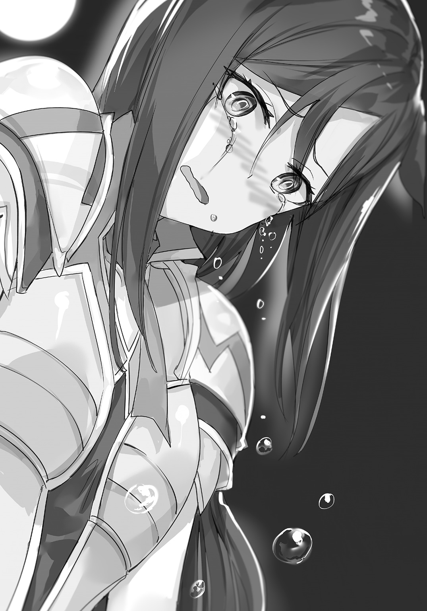
「うう、も、申し訳ありません......」
よく響くホクトの声が不規則に震えている。
慰めるつもりでかけた言葉のせいか、一層感情の整理をつけられなくなっていた。
「戦えもせず、主殿の寵愛も受けられず......たゆまぬ精進をしていかなければならない立場でありますのに、自分は......主殿の前で、このような......！」
こみ上げてくる涙をこらえようとして、それでもこらえられないホクトは見るからに自己嫌悪に陥っていた。弱く、惨めで、情けない姿を主人である俺に晒すことがこの上ない恥辱と不義理に感じているようで、何度も何度も謝り続ける。
ホクトは奴隷として雇用されてからずっと、俺の役に立ちたいと申し出ていた。
俺はその気持ちだけでも満足だったが、ホクトはそうではなかった。
だからこそ陰で剣を練習し続けていたんだろう。
その身を砕くことを惜しまない、不断の忠誠心こそがホクトという人間の性格であり、信条であり、そして絶対の個性に違いない。
許される範囲で怠惰に、可能な限り楽に生きていきたいと考えている俺とは真逆だ。
だからといって。
自分のために懸命に尽くしてくれる気持ちを無視できるほど俺が軽薄な人間だと思ったら、そいつは大間違いだからな。
「......よし、分かった」
ここで一肌脱げないようじゃ、元々あってないようなもんではあるが俺の男が廃る。
俺はうつむいて泣き顔を隠そうとするホクトの頭に手を置いた。
自分より背の高い女なのに、こうしていると縮こまって見えるな。
「新しい戦術を練ってやる。お前も魔物相手に活躍できるようにだ。ただし、その分今まで以上に忙しくなるからな。覚悟してくれよ」
「主殿......？」
「そこはいつもみたいな返事を聞かせてくれよ。一発で決まるアレをさ」
「あっ......りょ、了解であります！」
ビシッと鞭打たれたように背筋を伸ばして、ホクトは堂に入った敬礼をした。
「うむ、それでこそだ」
大きく頷く俺。
正直に言うと、少し前からアイディア自体はあった。大変個人的な問題で実行に移すかどうか保留していたのだが......これで踏ん切りがついたってことにしておくか。
任せろホクト。俺のこともお前に任せるから。
「そして女にもしてやるよ」
あと、その場の勢いでそんなことも口走っていた。
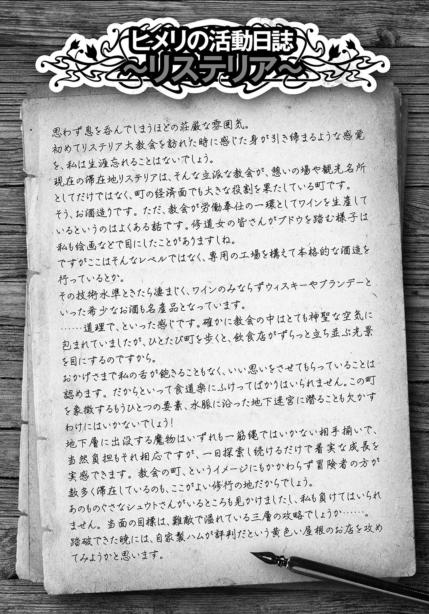
翌日。
結局あの後一睡もできなかった俺は、小鳥が笛によく似た声でやかましく鳴く朝早くから弓作りの職人の作業場にまで足を運んでいた。
肩に魔物の肋骨を担いで。
「こいつで弓を作りたいだぁ？」
頭に布を巻いた職人のおっさんは、俺の申し出に顔の右半分をひん曲げた。
「そうだ。微妙にカーブしてるからちょうどいい形だろ」
肋骨特有のなだらかな曲線を手でなぞってみせる俺。
骨の素材は、衝撃に強くないから武器には向かない、とはギルドで教わっていた。
ってことは衝撃さえ与えなければいいわけで、俺が考えついたのは弓にする案だった。
ここに来て、ついに遠距離武器の導入である。
「これだけの長さがあるんだから、足りなくはないだろ？」
「ふーむ、確かに骨はコンポジットボウの素材としてはそこそこメジャーだがなぁ。骨だけで作るとなりゃ強度やしなり、あと加工に難が出てくるぜ」
工房には多くの弓が並べられていたが、その多くが木で出来ている。やはり、木製が弓業界の王者なのだろう。
「まあでも、地下層のでけぇ奴の骨か。だったら耐久性は問題ねぇかな」
「おっ、それなら」
「待て待て。話はまだ終わっちゃいない。一番面倒なのは加工だよ」
おっさんはひとつ溜め息を吐いた。
「木のなにがいいって、ぶっちぎりで扱いやすいところだからな。削り出すにしても型をつけるにしても。ところが骨はそうはいかねぇ」
「む、じゃあ無理なのか？」
「いや無理ってわけじゃないけどな......あんたの言うように、この弧を描いた形状をうまいこと活かせりゃ短期間で製作できる。ただ技術がいるんだよ」
「俺はおっさんの腕を買って頼んでるんだぜ」
「適当なおだて方しやがって。はあ、まったく仕方ねぇ奴だ」
やれやれ、とおっさんは観念したようにつぶやく。
「分かったよ、突貫作業で明日の朝までには間に合わせてみせらぁ」
「そうこなくちゃな。感謝するよ」
俺は約束を取りつけることに成功し、ほっと一安心する。無理を聞いてもらったんだし駄賃もいくらか弾んでおかないとな。
「どんなタイプの弓が希望だ？」
「あんまり詳しくないからな......そっちに任せるよ」
「なら長弓だな。デザインは？」
「かっこいい感じで」
「そいつは曖昧すぎるぜ。ま、美的感覚には自信があるから安心しな。この俺が作りゃあなんでも芸術品だ」
「けどゴテゴテしたのはやめてくれよ。邪魔になるようなのは困るぞ」
「任せとけって。俺のモットーは機能美の追求だからな」
スラスラと要望をメモに取っていくおっさん。
「ところで、この骨に宿ってる魔力の属性ってなんなんだ？」
「こいつの性質は火だ。骸のくせに情熱的だろ？ といってもレアメタルほど派手な効果は見込めないから、あまり期待はすんなよ」
追加効果のほうはイマイチか。まあ地属性でないだけマシだな。
せっかくの新武器が、レイス相手には無力です、なんてことになったら虚しすぎる。
「朝一番に取りに来るよ」
そう言い置いて工房を後にする。
本日の予定はこれだけではない。次に向かったのは防具屋だ。
「主殿、お待ちしておりました！」
防具屋にはホクトを先回りさせていた。ミミとナツメには市場で食料品の買い出しを命じているから、少なくとも昼まではこの二人での行動になる。
「......して、主殿」
「なんだ？」
「いったいなにを購入なさるのでありますか？」
「ああ、それか」
不思議がるのも無理はない。昨晩ホクトには「防具屋で買い物をする」としか話していないから、まだピンときておらず怪訝そうな表情を作っている。
「まあ見てなって。おーい、ちょっといいか？」
前後にギコギコと揺れるチェアに腰かけていた店主のおっさんを呼ぶ。
「いらっしゃいませ。どのようなご用件ですか」
「盾を買いたいんだ」
店内をざっと見渡しながら俺は目的を明かす。
品揃えはまずまずといったところか。在庫は豊富である。ただ価格帯を見た限り、レア素材で作られた装備は売られていなさそうなので残念だが。
「ほう、盾ですか。盾、と一口に言っても多数の種類がありますが......お客さんみたいな軽戦士におすすめなのは手甲やバックラーですね」
「俺じゃなくて、こっちな」
後ろで直立不動の姿勢を貫いているホクトを店主に紹介する。
俺よりも遥かに筋肉質な体をしたホクトを眺めて、店主は「なるほど、これは盾を持つにふさわしい」と納得して手を打った。
なんか一人の男として悔しくなってくるが、まあそれはいいとしてだ。
「だから軽いのじゃなくて頑丈なのがいいんだよ」
「頑丈......といいますと、そうですね、主なものにはラウンドシールド、カイトシールド、グレートシールド、タワーシールドとありますが」
「どれが一番丈夫なんだ？」
「それはもうダントツでタワーシールドですね。その分重量も凄まじいですけど、守りを固めるのが目的でしたらこれ一択といっていいです」
店主は盾類が立てかけられたスペースにまで俺たちを案内する。
そこに鎮座していたタワーシールドは、ナツメの全身くらいは楽々内側に匿えてしまえそうなサイズを誇っていた。光沢は一切なく、無骨な外観をしている。
「木材と金属を張り合わせた合板ですと、耐久力は若干劣りますが比較的軽いですよ。総金属製のものはひたすらに重いのであまりオススメはしませんが......」
「大丈夫だ。ホクトは力だけは並大抵じゃないからな」
俺は即断でフルメタルの盾に決めた。
欲を言えば素材にもこだわりたいところではあったが......ないものねだりをしてもしょうがない。現状は鋼鉄製のこれで妥協しておくか。
「その盾を買っていこう」
「お買い上げ誠にありがとうございます。こちらには二万一〇〇〇Ｇの値をつけさせていただいていますが、よろしいでしょうか？」
「よし。じゃあそれを二個頼む」
「......はい？」
当然のように二本の指を立てる俺に、店主は「なにを言い出すんだこいつは」みたいな呆気に取られた顔をした。
「なんかおかしいか？ ダブルで装備させるつもりなんだが」
「いえ、装備できはしますけど......両手がふさがってしまいますよ？」
「でも二個あれば効果も倍だろ？」
単純な計算だ。
最近分数の掛け算割り算が怪しくなってきた俺でも分かるような。
で。
二つ売ってくれ、というのは想定外の要求だったようだが、商売人であるおっさんとしても断る理由がない。盾の売買はそれ以上滞ることなく済まされた。
「それではこちらをお渡しします。持ち運びはご慎重に」
出口前で引き渡しが行われたのだが。
「うおっ、お、重いな......ホクト、運んでくれるか？」
潰されるかと思った。
片方だけでも十キロ超はある。それをまとめて悠々持ち上げてみせるホクト。
「おお、さすがだな。要塞みたいだ」
「し、しかし、主殿！」
ホクトは盾を両手に勇ましく構えながらも、顔には戸惑いの色を浮かべていた。
「店主の方が話したように、これでは防御一辺倒であります！ 武器もなしに主殿の支えになれるとは......」
「剣なんか使えなくたっていいじゃねぇか。お前の武器はお前自身なんだから」
技術どうこうじゃない。俺はそう続けた。
「荷馬車を引いたり、俺を背負って走ったり、アイテムを運んだり......全部ホクトにしかできないことだろ。俺に同じことができるか？ ミミは？ ナツメは？ 言うまでもないけど全員無理だぜ。お前と違ってパワーがないからさ」
例に挙げた人物の中に約一名ほど成人男性が交じっていることに気づいてはいけない。
「俺はその長所を活かしてやりたいんだよ。他の奴にできない役割で、な」
「それが盾......でありますか？」
「ああ。こんな馬鹿でかい盾を二個も持てるのなんて、俺たちの中じゃお前だけだ。それが最大の武器なんだよ。最前線に立って俺を守る盾になってくれよな」
しばらく俺は後ろにいさせてもらうぜ、と軽口を添えてホクトの肩を叩く。
重量級の防具を装備できるホクトを前に出す......というのは、宝石採掘場でゴーレムを相手にしていた頃から考えてはいた。
これまではきっかけがなく試せずじまいだったけれど、今は新加入の戦闘要員としてナツメもいる。遠距離から攻撃できる手段として弓の製作にも入っている。
そしてなにより、ホクト自身が戦闘での活躍を望んでいる。
今が実践してみるのに最適な時期なのかもしれない。
「主殿......」
しばらくの間唇を真一文字に結んでいたホクトは、やがて二枚の盾を片手に抱え、空いた側の手で頰をパシンと打ってから俺にこう話しかけてきた。
「......ありがとうございます。胸のつかえが取れたような気分であります」
「そうか。だったらここに来た甲斐があったよ」
「主殿から任された大役、全力で務め上げさせていただく所存であります！」
張り切るホクトだったが、決意を述べ終えると急にもじもじとし始める。
その理由は女心に疎い俺でもなんとなく分かった。
「ですが、ええと、その、私情になりますが、昨夜のことはミミ殿とナツメ殿には内緒にしておいてほしいであります。......特にミミ殿には」
「分かってるっての」
そう答えると、ホクトはやっと心の中のわだかまりが晴れたのか、珍しく優しい女性的な笑みを見せてくれた。
が、これでオール解決とはいかないのが世が不条理である所以。
この期に及ぶまで弓の導入を渋っていた最大の理由――『自主トレ』という名の苦行が待っているんだからな、俺には。
幸か不幸か時間は有り余っている。
「......今日のうちに練習しておくか......」
ってことで、お試し用の手頃な長弓を求めて武器屋に立ち寄る。
店主いわく最もオーソドックスだという樫の弓を六七〇〇Ｇで購入。
「樫の木はいいぞ。堅く、弾力性に富み、加工が容易で、なにより安価だ！ まさに最高ではないが最善の木材だな」
と、こんな具合に素材のウンチクをだらだらと語られたが、そんなに興味はなかったので俺の耳を右から左に突き抜けていった。
「長弓は垂直に立てて構えても、水平に寝かせて構えてもいい。使い手の自由だ」
「自由ねぇ」
そう言われても、弓の全長は一メートル少々もあるので、そんなに取り回しがいいようには思えない。
だいたい弓の正式な扱い方を知らないから自由もクソもないし。
「で、だ。兄ちゃん、矢はどうするんだ？」
「あー......そういやそれもいるんだったな」
弓と矢が抱き合わせ商品であることを失念していた。
「だけどさ、矢に差なんてあるのか？ 全部一緒じゃないの？」
「甘い甘い。鏃の違いで大きく性能が変わってくるぜ」
「そんなに違うのか」
「おう。大きく分けて石と金属があるが、石製の鏃は威力と貫通力が高く、金属製の鏃は皮膚や鱗といった魔物のサーフェスによる影響が少ない。一長一短だな」
ふーむ。つまり石の鏃のほうがハマった時の最大値はでかく、金属の鏃だとバラつきの小さい安定したダメージを稼げるってことか。
「ま、基本は黒曜石と鉄の二種類さえ押さえておけば大丈夫だ。こいつらが石と金属それぞれの代表みたいなもんだからな」
「へえ。だったらそれを買っていくか」
「一束 十本から販売させてもらうぜ。黒曜石の矢は一束四五〇Ｇ、鉄の矢は一束四〇〇Ｇだ」
「んじゃ、とりあえず三束ずつ頼むわ。あと矢筒もな」
「毎度！」
肩掛け紐つきの矢筒二つに収められた状態で矢を売り渡される。
「うちじゃ矢のオーダーメイドも承ってるから、気が向いたら検討してみてくれよ」
「そんなことまでやってんのか」
「ああ。矢柄の長さや鏃の重さを自分に合ったものにできるぞ」
「素材そのものは変えられないのか？」
「それも可能だぜ。たとえばうちは鉄と銅を金属製の矢として置いているけど、人によっては鉛のほうがいいってケースもあるし」
「じゃあ銀で」
「は？」
「純銀で」
俺は至って真面目にそう要望したのだが、残念なことに店主は「頭大丈夫かこいつ」みたいな目で見てきた。
「別に銀でも作れるだろ？ 金属なんだし」
「いやできなくはないが......コストって概念を知ってるか？」
銀の価値を説かれる。
「言うまでもないとは思うけど、矢は消耗品だぞ？ 使うたびに耐久性は落ちていくし、毎回回収できるわけじゃない。ただでさえ割高な特注品だっていうのに......」
「別に高くてもいいから頼むよ。銀が地下層の連中に効くのは分かってるんだから」
潤沢な資産をバックに要求をゴリ押しし、手始めに二百本ほど注文しておいた。
製作費用が一本あたり二一〇Ｇかかったが、まあその辺はご愛嬌。
これまた明日の朝には出来上がっているというので、肋骨の弓を取りに行くついでにもらいに来るとしよう。
「行こうぜ」
待機させていたホクトに声をかけ、その足で近場の湿地帯へと出向いた。
目当ての湿地には徒歩三十分で到着した。
四方を柵で囲まれたそこは付近の探索スポットの中でも特に魔物のレベルが低く、駆け出し冒険者にとっての修行場という話だったが......。
「意外でありますな。強そうな方々もちらほらと見えるであります」
吸収できるものがないかと他人の戦闘風景を遠巻きに眺めるホクトが唸っているとおり、湿地には到底初心者には見えない手練がゴロゴロいた。
特に魔術師風の格好をした奴が多い。こんな不安定な足場で裾の長いローブなんか着ていて動きづらくないんだろうか。重装備のホクトはホクトで若干沈んでるけど。
いぶかしむ俺の耳に、ふと、おしとやかな声が届く。
「ここでは質のいい魔石が採れるんですよ」
振り向くとオレンジのローブに身を包み、頭にティアラを戴いた女性がいた。
黒いロングヘアーにキメの細かい白い肌。
おお......正統派の美人だ。
が、その後ろには五人の野郎どもが控えていた。全員揃って俺に血走った視線を送ってきているので、姫とそのナイトといった関係性があからさまに透けて見える。
というか、剣を抜くな。こえーから。
「ごく稀に、ですけどね。だから私たちのような魔術師はよく訪れるんです」
「そうだったのか。ははあ、なるほどな」
「もちろん資金源として探す方もいますから、激しい競争にはなりますけどね」
美人魔術師は子供のように舌をぺろっと出して笑った。
親切に解説をしてくれるのはありがたいが、俺が彼女と一言会話を交わすたびにジャキジャキと殺気立った金属音が鳴り響くので、名残惜しくも退散。
しかしこれだけ人がいるとなるとスキルを隠すのは困難だな。
ルートを微妙に逸れ、人目につきづらいこぢんまりとした林へと移動。
弓の弦をピンピンと弾きながら得物の具合を確かめる。
「ちょうどいい奴は......いてくれたか」
枝に逆さまになって止まっているコウモリを発見。
フィーの森で飽きるほど見てきた相手だ。攻撃しにくい割に落とす額がしょぼいという、かなり実益の薄い魔物ではあるものの。
「あいつで練習してみるかな。攻めも守りも大したことないし」
なにせ俺は弓に関してはまったくの初心者だ。なので最初に戦う敵は弱い魔物であればあるほどいい。安全第一。
「といっても金にはならないからな......はー、モチベが保てねぇ......」
いまひとつ気が乗らないながらも、鉄の矢を弦に番え、ギリリと引き絞る。
狙いは当然枝にぶらさがって休んでいるコウモリだ。
でたらめな構えで指を弦から離した刹那、矢がヒュンと風を切り裂いて放たれる。
音の感じは悪くない。
とはいえ、弓を使うのは初体験。一発目からそんなうまくいくなんてことは――。
「あっ」
当たった。
めちゃくちゃ呆気なく。
俺の謙遜とはいったいなんだったのか......いやいや、そうじゃなくてだな。
「弓ってこんな簡単に命中するようなもんなのか？」
んなアホな。適当も適当だったのに。
だが魔物が一発でくたばらないあたり、ダメージはさほどではなさそうだった。
樫の弓はあくまでも平均的な代物。肋骨の弓が完成するまでの練習用に過ぎない。腕をカバーしてくれるだけの性能があるはずもなく。
「そりゃそうだよな、チッ」
襲撃を知ったコウモリは傷に苦しみながらも飛行を開始。
両手にタワーシールドを掲げたホクトが急いで前に出るが、空高くを飛ぶコウモリをブロックすることはできない。
まっすぐにこちらへと向かってくる！
「......だからなんだ感が凄いな」
切羽詰まった「！」なんて記号はまったく必要なかった。
あいつの攻撃力じゃフル装備の俺たちにロクにダメージを与えられないのは分かりきっているから、欠片も焦りが生まれてこない。
落ち着いて二発目の矢を番える。
またしても命中。その射撃によってコウモリは墜落し、一五〇〇Ｇだけを残して消えた。
「おお！ 主殿、お見事であります！」
喝采を送ってくるホクトは心から嬉しそうにしていたが、当の俺はというと、このケチのつけようのない成果を額面どおりには受け取れない。
あまりにも過不足なく出来すぎているせいで逆に疑わしい。
もしかして俺、弓のセンスがあったのか？
「まさか。いやでも、結果が結果だからな......手こずりもしなかったし......」
まあ待て。結論を出すにはまだ早い。もっと試行回数を増やしてみないとな。
そう考えていると、おあつらえむきなことに。
「っ！ 主殿、あちらを！」
気配を察したホクトが指差した先にいたのは、二足歩行のトカゲ......と呼ぶには、いささか人間の形態に寄りすぎている。
顔はトカゲそのものだし、だらりと長たらしく伸びた尻尾もあるし、体表も緑の鱗で防護され尽くしているが、全体的なシルエットは人型だ。
あれか、リザードマンとかいうやつか。
装備はなにもなく、ボクサーがヤケを起こしたみたいな奇妙なステップを踏んでいる。
「......あれって練習台にできるレベルの魔物なのか？」
まあまあ強そうだが。
「お下がりください。あやつの進軍は自分が食い止めるであります」
その間に援護を、とホクトは願い出てきた。
「機が熟した頃に、主殿の弓術をご披露いただければ」
「よし。やってみるか」
断る理由はない。俺はホクトに前衛を任せ、チャンスをうかがうことに専念する。
爬虫類の変異種が大股で接近してくる中。
「さあ、かかってくるであります！」
ホクトは二枚の鋼鉄の盾を、ガチンとド派手に打ち鳴らした。
けたたましく響き渡る衝突音に、魔物の注目は一気にホクトへと引き寄せられる。
まっすぐに向かってきた魔物は俊敏なフットワークで続けざまに殴りかかるが、その連打を受けようとも、重装備で統一されたホクトはびくともしない。太く、たくましい脚部でしっかりと地面を踏みしめている――ぬかるみをものともせずに。
「貴様の進むべき道を、開いてなるものか！ でいやああっ！」
気合一喝。ホクトは隙間なく繫ぎ合わせた盾で勢いよく敵を押し返す。
ホクトの馬鹿力で思い切り弾き飛ばされたリザードマンは、水気を多量に含んだ泥に足をすくわれてスリップし、大きく体勢を崩しながら転倒。
機を得た俺はそこに弓を向ける。
闇雲に、ではない。俺がつけた照準はリザードマンの右目に固定されていた。
「本当に俺にセンスがあるんだったら......これも当たってくれよな！」
果断に矢を放つ。貫通力に優れた黒曜石の矢を。
鋭く尖った鏃は、鱗に覆われていない右の眼球をピンポイントで射抜いた。透明度の著しく低い、下水道の澱みじみた黄褐色の血が噴き上がる。
おびただしい流血も、無様な身悶えも、金切り声も......数秒の間に治まった。
その一撃のみで息絶えてしまったのだから。
「おいおい......マジか、これ」
やばい。
俺、人生で初めて『才能』ってやつを見つけてしまったのかもしれない。
明くる日の午前、俺は一人意気揚々と弓職人の工房に乗りこむ。
ミミ、ホクト、ナツメの三人は地下層に繫がる魔法陣に先回りさせてある。
ちゃっちゃと下準備を終わらせておかないとな。
「なんでそんなにニヤニヤしてんのか知らねぇが......ほら、完成させてあるぜ。一本の骨から削り出した正真正銘混じりっ気なしのスカルボウだ」
会心の自信作だぞ、と語る職人のおっさんが作業用テーブルの上に乗せた弓は、隅から隅まで燃え尽きた灰のように真っ白だった。
形状としては「Ｃ」よりも、横倒しにした上でグイッと引き伸ばした「Ｗ」に近い。
小さな牙のような装飾が何個かあしらわれているが、これはおっさんいわく「ターゲットに照準を合わせる際の目安に使え」とのこと。
持ってみると、大きさの割に非常に軽い。それから手触りがサラサラしている。
「どうだ、いい弓だろ？ 湿気にかなり強い素材だから、樹液でコーティングせずに骨の質感をそのまま残してあるぜ。おかげで手によく馴染むように仕上げられたよ。全体の剛性との兼ね合いは大変だったけどな」
「うーむ、確かに収まりがいいな。滑りそうにないし、こう、指にフィットするというか」
俺は手間賃の一万三〇〇〇Ｇを支払いながらそれっぽいコメントを発した。
「ただなぁ、木製じゃないからちぃとばかりクセはあるぞ。慣れるまでしんどいかもしれないが、ま、そこは勘弁してくれ」
「大丈夫だよ。この俺だからな」
「さっきからやけに自信をうかがわせてるが......あんた弓使ったことないんだろ？」
「ふっふっふ。いやな、昨日ちょっと試しに湿地で弓矢を使ってみたんだけど、これが百発百中だったんだよ。さすがに震えたね。俺のセンスに」
スカルボウを背負ってこれ以上ないくらい得意満面になる俺。
だったが。
「......なに言ってんだ？ 今時の弓の性能じゃまっすぐ飛ばすことくらい訳ないぜ」
「えっ」
「そうでないとハードル高すぎて売れねぇしよ。近めの距離でゆっくり引いてじっくり狙いをつけたんなら、そりゃまあ触って数分の初級者でも当てることはできるわな」
「な、なんだと......」
衝撃的にして残酷な真相である。
てっきり俺の中には某国民的漫画のメガネくん的な才能が眠っているのだとばかり思っていたが、盛大なぬか喜びだった。
弓という武器自体が、ある程度持ち主の腕を補えるように作られているらしい。
一気に脱力する。
まさか誰でもできることだったとは......。
「でも手振れとかはなかったし......弦もスムーズに引けたし......」
「それは腕力の問題な」
冷静な見解に、ああ、またあなたの働きですか、と俺は首元のチョーカーに手を当てた。
こいつの縁の下の力持ちっぷりには毎度頭が下がる。
「じゃあ弓の技術ってなんなんだよ！」
「そりゃあ照準を定めるまでの速度と精度、それと判断力だ。ちんたらやってるのを強い魔物が待ってくれるわけねぇだろ？ 優れた射手ってのはそれこそ雨のように矢を降らせられっからな。ビギナーとエキスパートじゃ手数が全然違ってくるぜ」
そこを練磨しろ、とおっさんは俺にアドバイスという名の正論を送ってくれた。
といっても、パッパパッパと矢を連射できるようになるまで実戦投入を封印、なんてことをやっていたら永遠に弓を扱える日は来そうにない。俺がそんなに長期間日陰の努力を継続できるとは思えないし。
やむを得ない。ここは一矢入魂のスタイルでいくか。
レア素材を元にしたこの弓が攻撃力に秀でているのは疑いのない事実だからな。
おまけに。
「おお......本当に全部銀の鏃だ」
武器屋に予約していた銀の矢を引き取りに行った俺は、二百というゆとりある本数に頼もしさを覚えると共に、その仕事の早さに感心する。
地下層の魔物相手には効き目抜群なのは間違いない。
この矢が加われば更に効率アップだな。
とはいえ、この量だと矢筒に収まり切らないので三分の二は革袋にストックしておく。一日で二百本使い果たすのかって話になると多分そんなことはないのだが、備えあれば憂いなしとも言うし、これもホクトに運んでもらうか。
「それにしても、矢だけで四万二〇〇〇Ｇって......下手な剣より値が張ってるぞ。こっちとしては嬉しいオファーではあるけども」
「ああそれなんだけど、数日でなくなっちゃうかもしれないから、追加でもう二百本同じのを注文しとくよ。よろしく頼む」
店の財政事情を更に潤わせた俺は、そのまま北を目指し――。
リステリア大教会本棟に踏み入る。
前回訪れた時もそうだったが、神聖なムードがムンムンに漂っている。この清らかな空気に包まれていると積年の邪念も消えていってくれそうだな。
だが俗世間に肩までどっぷり浸かった俺から邪念が消えたら消えたでクソつまんない人生になりそうなので、その辺の宗教的感動はそこそこに留める。
教会に来た目的はただひとつ。
ここにしかないアンデッドを弱体化させる品物の調達だ。
「ようこそ。拝観料はいただきませんが、寄付は二十四時間毎日受け付けております。神のご加護があらんことを」
こっちから言い出す前に例のしつこい神官が寄ってきた。
都合がいいっちゃいいが。
「寄付なら今すぐにでもしたいんだが、構わないか？」
「......むむっ！ 本当でございますか!?」
神官の目の色が変わった。
色、というか、￥や＄に似たなにかというか。
「それでは早速ご説明させていただきます。寄付は一口一〇〇〇Ｇからとなっておりまして、職業身分を問わず金額に上限はございません。いえ！ お気持ちで結構なのですが！ 念のため金額に上限はございません」
「制限ないのは分かったから、寄付の見返りについて教えてくれよ。聖水がもらえるって聞いてるんだけど」
「はい。三口で聖灰を、五口で聖水を、十口でこれらを複数セットにして、教会から粗品として提供させていただく決まりになっています」
「その上はある？」
「ございますが、上限なしといっても我々もそこまで多額の寄付をいただくわけには......いただけるものならいただきたいのではありますが......」
めっちゃ本音漏れてるぞ。
それはともかく、今のところは聖水と聖灰以外いらないな。
「とりあえず一万Ｇ分寄付するか。ものは試しだ」
俺は布袋から金貨を十枚つかみとる。
「ほい」
「確かに受け取らせていただきました。誠にありがたいことでございます。では、こちらのリストにご記名を」
神官が小脇に抱えている本は、なんらかのありがたい教典だと思っていたが、なんのことはなくてこれまでの寄付者一覧だった。俺もそこにサインを入れる。
「それでは感謝のしるしとして、聖水と聖灰の詰め合わせを差し上げます。あなたに神のご加護があらんことを」
詰め合わせって。お歳暮みたいだな。
実際木箱に入った状態で聖水と聖灰のセットを渡されたので、マジで「今年もお世話になりました」の挨拶感が強い。
中身を見てみる。
結構しっかりした外箱なのに中はスカスカだ。景品表示法に則って訴訟を起こしてやりたいところだが、この世界で通用するはずもないのでグッとこらえるしかない。
聖水の瓶が一本に、聖灰の挟まれた紙が二包みか。
バラバラでもらうよりは多少お得だが......。
「全然足りねぇな......もう九十口寄付しておくか」
「おお、なんと信心深いお方か！ これほどまでに私財を擲っていただけるとは！ 神のご加――」
「いやもういいよ」
総額一〇万Ｇの寄付を行って、得られた聖水の数は十本。聖灰は二十包み。
動いた金額だけ見れば消費アイテムの風上にも置けない高値だが、入手手段の特殊さゆえ致し方なし。
まあ一〇万Ｇくらいならすぐ取り戻せるだろう。
待ってろ二万七〇〇〇Ｇ。
俺は弓・矢・聖水の新生三種の神器を手に、三人が待つ魔法陣へと急いだ。
皆と合流を果たしたら即刻地下層に。
先陣はホクトに切らせていた。
ミミがふわりと飛ばした灯火に照らし出される中、荷物と共に巨大な盾を担ぐ後ろ姿には惚れ惚れさせられる。
底知れぬ馬力を感じるな。
とはいえデカブツを呼び寄せるつもりがない以上、撃破報奨の少ない第一層のスケルトンと戦う意味はないのでさっさとフロアを移動する。
柱に支えられた第二層を探索する俺たち一行。
この階層は地面から魔物がぞろぞろと湧いてくるので片時も油断ならない。が、今回ばかりは早く出現してきてほしかった。なぜなら......。
「おっ、やっと出てきやがったか」
お待ちかねのターゲットの登場だ。
背負った矢筒から銀の矢を一本抜き、腐臭を撒き散らしながら這い上がってきたゾンビに向けて、弓を立てて構える。
同時にミミもかまどの火を放とうとしたが、俺はそれを声で制した。
「どのくらい効くか知っておきたいからな」
新装備の試し撃ちだ。スカルボウ側面に設えられた円錐状の装飾を矢印代わりに使って照準を調節しつつ、キリ、キリと胸の筋肉で弦を引っ張り――。
「りゃっ！」
指を離す。
矢は目視可能な放物線は描かず、ほぼ地面と平行に等しい直線軌道で飛んでいく。
ゾンビを狂乱させるにはその一射さえあれば事足りた。
銀の鏃が突き刺さった箇所を観察すると、その部分だけ肉が溶けていて、硫酸でも浴びせられたかのようになっている。
やがて煙へと成り果て、跡にはボロ布の覆いかぶさった金貨が残った。
「うおお......マジでつえーな、銀」
生産コストを度外視して手配しただけあり、ことアンデッドで埋め尽くされた地下層においては絶大な効果を誇ってくれるらしい。
これならゾンビ相手に聖水と聖灰は必要ないな。第二層では温存できるか。
「わあ、シュウト様、今度の武器は洗練されてますね。とてもとても格好いいです」
弓矢の貫通力と、スタイリッシュな攻撃スタイルには、ミミもご満悦だ。
で、スカルボウの感想だけども。
「ちょっと違和感があるな。なんか物理法則ってやつに喧嘩売ってる感じがするし」
骨だからか樫の弓に比べてしなりが少ない。そのくせ発射された矢の速度は遥かに増しているんだから、不思議なものである。
それと、おっさんに指摘されたとおりテンポがよくないな。どうせ一撃で倒せるならミミが魔法を唱えたほうが断然早い。こればっかりは修練あるのみか。
ただ、骨製の飾りをポインターにする撃ち方はなんとなく理解できた。
弓に何個もくっついた獣の牙じみた形のパーツは一見すると単なるカッコつけの装飾品にしか映らないが、鋭く尖ったそれぞれには微妙に角度がつけられていて、先端を目で追うと自動的に目標へ焦点が合うようになっている。
この機能を活かせば敵をロックオンするまでの時間を大幅に短縮化できるだろう。
習うより慣れろだな、それこそ。
にしても、余分な手間だったろうに職人のおっさんも心憎いカスタマイズをしてくれたもんだ。俺を初心者と睨んでの仕様だろうけど、ありがたく役立たせてもらおう。
あと気になるのは追加効果か。
トリガーとなる行為を探らねば。
「こういうのは大概、矢に対してなにかしら作用してくれそうなもんだが......」
矢をセットした状態で念じてみる。
なにも起きない。
「まさか、接近戦にも対応してます、とかそういうことだったりして」
弓自体をブンと振り回してみる。
なにも起きない。
「む......じゃあ小突いたり叩いたりなのか。脆いのにそんなことして大丈夫かな」
矢柄で弓を二度三度叩いてみる。
なにも起きない。
「なんだこれ。不良品か？」
俺は秒殺でおっさんへの感謝の心をなくしていた。
いやいやいや、結論早すぎ。あの腕の立ちそうな職人がそんな初歩的なミスをやらかすはずないでしょ......と俺の中の天使がなんとか人を信じる心を取り戻すようささやきかけてくれたので、完全な畜生道に落ちることは寸前で回避する。
すまんおっさん、疑って悪かった。もうちょい粘ってみるわ。
「別のやり方を試してみるか......他にどんなのがあるっけ」
「矢なしで弦だけ引っ張ってみたらどうですかにゃ？ これでできたらすっごく魔法っぽいですにゃ」
「それだ」
ナツメの案を採用。
可能性の塊ことスカルボウを少し傾けて構え、ギュッと引き絞る。すると。
「うおおっ!?」
ないはずの矢が顕現した。
正確には、矢のフォルムをした炎が、である。
矢の周囲ではちぎれた火が飛沫のように舞っている。
だが、元々がアンデッドの骨だったせいか、炎は鮮やかな緋色ではなく――地獄から呼び覚まされたかのように禍々しい黒色をしていた。
さすがの俺も驚きを隠せない。原理は不明だが、これだけありありと燃え盛っているのに弓を引く俺自身はまったく熱くないというのも戸惑いに拍車をかけている。
「っていうかこれ、へたに指離せないんだけど」
「ぎにゃー！ 熱いですにゃ！ こっち向けないでくださいにゃ！」
「そんな逃げなくてもいいじゃん」
「ふにゃああああああ!? フーッ、フーッ！」
仕方ないのでこの体勢のまま適当な魔物を探すことに。
こういう時に限ってエンカウントするまでに間が空いたのだが、十字路を曲がったところで念願の的、ゾンビ鳥を発見。
「あいつにぶつけるか。いい加減この姿勢も限界だし......でやっ！」
作り置きしていた炎の矢をぶつける。
俺の指を離れた途端、邪悪な炎は螺旋状に渦巻いた。その回転は推進力となり、魔物に届く頃には本来減衰するはずの矢の勢いがピークに達していた。
加速している。
そして炎なので当然、着弾地点から大きく火の勢いは広がっていった。
「おお！ 凄いな、こりゃ」
しかもめっちゃ見た目がいい。魔力で精製された上にダークな黒い炎って。
やばい、もう気に入ってしまったんだが。
もっとも威力という観点で見てみるとそんなに強力ではなかった。銀と並んでアンデッドに特効であるはずの火なのに標的が一発では倒れていない。
普通に矢を射るよりもダメージは低そうだな。矢は節約できるとはいえ。
「まあ、レアメタルほどには魔力はない、とは聞いてたけどさ」
「にゃにゃっ!? ご主人様、来ますにゃ！」
敵のモーションの変化に真っ先に気づいたナツメが警鐘を鳴らした。
ゾンビ鳥は火をボロボロの翼ではたいてかき消すと、随所が焼け焦げてしまった肉体に構うことなく捨て身の突進を始める。
その進撃は二枚の盾をかかげたホクトが即座に防いだ。
「させぬであります！」
タワーシールドの防御性能と、それを扱うホクトの膂力が遺憾なく発揮される。
湿地で繰り返し練習していたから盾さばきは格段によくなっている。機敏にステップするリザードマンに比べたら、ノロマなゾンビなんて屁でもないだろう。
「さあ主殿、次なる一矢を！」
「分かってるっての......そらっ！」
空っぽの弓を引き、炎の矢を更に作り出す俺。
所要時間を意識して照準を固定。コンマ数秒呼吸を整えてから発射する。
流れる火が彗星のように尾を引いた。
黒ずんだ焰に穿たれ、死の現実から逃れ続けた魔物はやっとのことで成仏した。
ドロップした金貨はナツメが素早くかき集める。
この編制も悪くないな。前衛ホクト、後衛が俺とミミ。自由に動けるナツメがサポートとアイテム回収要員。剣がなくなった分、瞬間火力は落ちたが、安定感はある。
なんといっても楽だ。俺が危険に晒される場面が激減している。
後ろにいていいってこんなにも幸福だったのか......。
「けど追加効果がイマイチなのは痛いな」
せっかくの格好よさなので、積極的に使っていきたいという気持ちもあるが。
「しゃーねぇ。銀の矢だけにしとくか。火ならミミもいるし」
「......ですがシュウト様、ひょっとしてですけど」
ほんの少しだけ思索していたミミが口を開く。
「ダメージ以外にも効果があるような気がします」
「本当か？ 全然そんな感じしなかったけど」
「あの炎からはミミの魔法と同じ波動を感じました。もしかしたら呪縛を与える効果があるのかもしれません」
「ふーむ、なるほどな」
呪術魔法を得意とするミミの見立てなので、信憑性は高い。
素材元もおどろおどろしい亡骸だし、なによりあの邪悪な色彩だ。そういった特質が秘められていてもありえなくはないな。俺のセンサーがそう告げている。
とはいえ二発で倒せる相手から呪いのありがたみを享受できるはずもない。
落とす資金もそこそこ止まりだし。
「どうせならレイスの野郎で試さねぇとな」
下降用の魔法陣が設営されたポイントまで進み、いざ、第三層へ。
再挑戦だ。
前回の時もそうだったように、そいつは第三層に転送された直後に現れた。
レイスのお出ましである。揺らめくボロ布は浮遊の証。さながら俺たちを異界まで手招きしているかのようだった。
「さて、と」
どう料理してやろうか。今回は前回とは違って用意は周到。俺とミミの二人でツープラトンの火を浴びせたんでもいいし、聖灰をぶっかけて物理で攻めたんでもいい。
「だがまずは......こっちからだな」
俺は矢を番えずに弓を引く。
こいつがもたらす呪縛の効果がどんなもんか、早めに知っておくか。
狙いが定まったことを確認して、ためらわずに弦を弾く。
メラメラと燃焼する矢は錐揉みしながら一直線に飛んでいった。命中するや否や、魔物のガス状の肉体が暗色の炎に包まれる。
数秒かけて鎮火した後のレイスの状態を、じっくりと監視してみる。
「......なんか変わったところあんの？」
正直俺では分からない。ビフォーとアフターが同じに見える。せめて焦げ目くらいは残っていてほしかった。
が、魔法の専門家であるミミの目によれば。
「判別できました。鈍化の呪いで間違いないと思います」
「なにそれ」
「文字どおり、です。動きが鈍くなる呪いですよ。シュウト様の炎には初級呪術のスロウに近い効果があるみたいですね」
ふむ、悪くないバッドエフェクトだな。使いどころは多岐にわたりそうだ。
「そういやゾンビ鳥も相当遅くなってたな......っと、それより」
レイスに視線を戻す。
まだ倒れる気配はない。挙動が鈍重になっているなりに必死に腕を伸ばし、前線のホクトへつかみかかろうとしていた。
次に試すべきは......。
「ナツメ、灰を撒いてみてくれ」
「はいですにゃ！」
指示を受けてリュックから聖灰を包んだ紙を取り出したナツメは、敏捷性豊かな身のこなしで魔物との間合いを速やかに詰め、バッとそれを振り撒いた。
聖灰のかかった部分だけが固体化し、石のような質感に移り変わる。
その様子を見届けてからナツメは離脱。
俺は変質した霊体目がけて、一本で一食分まかなえる純銀の矢を放った。
矢はすり抜けてはいかず、グサリと音を立てて突き刺さる。
鏃の埋まった箇所からは白煙が立ち昇っている。効いている証拠だろう。ドクロの顔も大きく歪み、上顎と下顎の嚙み合わせが酷い有り様になっていた。
ひとしきり苦しんだ後レイスは昇天する。
落とした二十七枚の金貨と霊布をせっせと拾い集めるナツメ。手際がいい。
「すげぇな、マジで実体化してるじゃんか」
教会も凄いもんを開発したもんだ。
蒸留酒の次くらいに素晴らしい発明だな。
「えーと、聖灰は三口相当の寄付でもらえるから......差し引き二万四〇〇〇Ｇか」
第二層の奴らを相手にするより全然マシだな。それにあいつらは悪臭が公害の域に達してるし、今日からは涼やかなこのフロアで金稼ぎに励むとしよう。
更に歩を進める。
「......む。主殿、ご警戒を」
細い通路にさしかかったところでホクトが足を止めた。
それもそのはず。かまどの火の光がかろうじて届いている少し先には、ぼんやりと魔物の影が見える。
ミミが念じて火の明度を上げると、全容が白日の下に晒された。
そいつはカタカタと、剝き出しの歯を鳴らしながら怪しげに立ち尽くしている。眼窩に中身はなく、折り曲げた指に肉はない。それはつまり骸骨であることを表していた。
外見は第一層のスケルトンに似ているが微妙に違う。どこが違うかといえば、まとっている衣装だ。そいつは貴族が着ていそうな赤褐色のコートを羽織っていた。
「アンデッドのくせにいい服着てやがるな......じゃなくて」
地図を引っくり返す。
だだっ広い裏面にはアリッサから教わった魔物の情報が簡潔に記してあるのだが、そのメモによればワイトという種類のアンデッドらしい。
「幽霊じゃないんだし、特に工夫せずとも矢は当たる......よな？ さすがに」
とはいえ弱らせられるんならやっておくに越したことはない。
退治に時間をかけるのは得策じゃない。どういう攻撃をしかけてくるか分かったもんじゃないからな。圧倒的破壊力で敵に反撃の余地を与えず瞬殺。これこそ俺が今まで徹底してきた必勝パターンだ。
「ナツメ、任せた」
指令を送る。
「承りましたにゃ！ ていにゃあっ！」
後ろには行かせまいとホクトが懸命に盾で敵の前進を阻んでいる間に、ナツメは対象と距離を取ったまま瓶ごと聖水を投げつけた。
ガラス瓶はゆるやかな弧を描いて、剝き出しになっているワイトの頭蓋骨に命中する。なかなかいいコントロールである。後から聞いたが、銀鉱石の採石場で働いていた時、鉱石をカゴに投げ入れて回収していたことで鍛えられたものらしい。なんでもありだな。
聖水の染みこんだ骨は見るからに脆弱そうだった。
そこに向けて遠慮なく矢を放つ俺。
「げっ、これでもダメなのかよ」
完璧に銀の矢が突き立ったのにワイトはくたばらない。意外と頑丈だな。
「炒って豆殻を弾き飛ばすための火！」
すかさずミミがフォローを入れたことで、ようやく煙へと姿を変えた。
どうやら骨のくせして耐久力は上等らしい。そのせいもあってかレイスを超える三万Ｇの報奨金に加えて、赤黒い布が素材として残される。
「これも霊布か？」
持ってみた限りでは同じにしか感じられない。めちゃくちゃ軽いし、めちゃくちゃ薄い。この辺の差異は帰還してからギルドマスターのおっさんに質問するか。
「でも一発で倒せないのは痛いな。時間のロスだぜ」
「ミミがサポートします。フラジリティで虚弱の呪いをかけますから、矢のダメージもグンと増すと思います」
「そいつは助かる。次から頼んだぞ」
ミミの肩をぽんと叩いた時。
「どうやら敵方は息つく暇を与えてはくれないみたいでありますぞ、主殿！」
最前線でホクトが吠える。今度はなにかと眺めてみれば、またしても宙に浮かんだアンデッドの姿が。
浮いているがしかし、見たところ幽霊の類ではない。紫苑のローブを着込んだそいつもまたスケルトンに酷似した容姿をしていたが、それは上半身のみに限った話。下半身に足は生えておらず、ほつれたローブの裾がはためいているだけだった。
骨張った、というか骨そのものの指には細い杖が握られている。
「あれは、えー、確か......」
「リッチですにゃ！」
俺よりナツメが先に早押しアンデッド当てクイズに正解した。
一人だけアルコールを口にしていなかったから、飲み屋でのアリッサの話がしっかり頭に叩きこまれているらしい。
で、リッチの特徴についてだが。
見たまんまだ。杖とローブを装着している時点で「私、魔法を使います」と告白しているようなもの。この風貌で真っ向から肉弾戦を挑んでくるわけがない。
予測と違わず、魔術師を髣髴とさせるアンデッドは弾速の遅い火を発してきた。
「これしきッ！」
二枚のタワーシールドを隙間なく繫ぎ合わせてホクトが火をせき止める。多少の高熱程度では鍛え抜かれた鋼鉄に太刀打ちできるはずもない。
防衛線は決して崩れない。
盾を支えるホクトの背中は、剣を握っていた頃とは見違えて立派だった。
「いいぞホクト！ 最高に輝いてるぜ」
おだてると馬の耳がぴこっと動いた。喜んでいるらしい。
この機に乗じてちゃっかりナツメが清らかな灰をバラ撒いていた。
それを確認してから矢を射る。
リッチの物理耐久は同フロアに出現する他二種に比べてダントツで低いようで、たったその一射に貫かれただけでお陀仏となった。
撃破報奨は二万八〇〇〇Ｇ。そしておまけで紫色の布。
「って、また布かよ」
しかも空気のように軽いところまで同じ。いったい違いはなんなんだ。
ただ分かったことがある。リッチ戦が一番うまい。所持金の額からして本当なら魔法に苦しめられるんだろうが、手早く片付けたい俺からすれば攻撃面が充実している代わりに守りがおろそかな敵というのはおあつらえ向きである。
金だけならワイトのほうが落とすがあいつは無駄にしぶとい。レイスに至ってはアイテムの使用を半強制的に強いてくるくせに報奨は一番低いから最悪。
「こいつばっか出てきてくれりゃいいんだけどな」
皆も同意見だった。
唯一他の魔物を相手する際より負担のあるホクトにしても、魔法から俺を守るという役割に、かつてないやりがいを感じている。
「にゃにゃにゃっ!? ご主人様、今度は二体いっぺんに来ましたにゃ！」
......こういう時に限って一番会いたくないレイスが連続して襲ってくるんだから、まったく人生ってやつはホロ苦くできていやがる。
第三層の探索を始めてから二時間半が経過した。
現時点でもまずまずの成果を収められている。
獲得した金銭もそうだが、手探りで戦闘を重ねるうちに、少ない行動回数でアンデッドを討伐できる組み合わせがつかめてきたのは収穫だった。
レイスであれば、聖灰を投げつけてから銀の矢＋ミミの火球。
ワイトであれば、聖水とミミの呪術で弱らせてからの銀の矢で一撃必殺。
そしてリッチであれば、単純に聖灰と銀の矢コンボだけで撃破可能。
聖水のほうがやや大幅に弱体化させられるが、その分貴重なのでワイト以外にはなるべく使いたくない......のだが、ぶっちゃけ俺の所持金を考えると微差なのでそんなに気にする必要はない。むしろ細々と使い分けてるほうがストレスが溜まる。
足りなくなったらまた寄付すりゃいいだけだしな。
とりあえず、効率のよさを求めるならワイト相手に聖灰は厳禁、という点のみを念頭に置いておく。
消耗品といえば、もうひとつ。矢の問題がある。
矢は可能な限りナツメが回収してくれたものの、全部が全部再利用できるわけではなかった。少々銀製の鏃が欠けた程度ならリペアで補修できる範疇だが、明らかに砕けていたり、そもそも矢柄が折れてしまったものはどうしようもない。
もっともこれも後で補充すればさして問題にはならない。
このフロアで活動していれば、消費した額をチャラにして余りあるほど稼げるんだから。
これだけ多くの枚数の金貨をドロップする魔物と連戦できたのは、ジキと密林を歩き回っていた時以来だ。
移動時間や出現数も合わせて考えると過去最高の狩り場といえよう。
落とす素材がどれも軽くて薄手なのも助かる。カバンの中には多彩な布がぎゅうぎゅうに押しこめられているのに、腕力のないナツメでも楽勝で運べていた。
「というかここの魔物、他になにも落とさないんだな......」
金を集めているのか布を集めているのか、目的が分からなくなってくるんだが。
この素材を一挙に納品して教会からの信任を得るか、衣服の製作にあてるか。
難しい二択である。
布の使い道を思案しつつ十何体目かのアンデッドを始末した時、俺の胃袋がついに救助を求めてきた。
「やべ、これ午後からの仕事に響くやつだ。休憩しようぜ」
魔物を粗方駆除し尽くしたポイントに陣取る。
地べたに直接腰を下ろしたが、ひんやりと冷えていて尻がびっくりした。
確かパンの類はホクトのカバンに入っていたはず......なんてことを考えていると。
「......なにやってんの？」
転がる石を鼻歌交じりに拾うナツメの動きに気がつく。
ナツメは拾った石をてきぱきと積む。その作業を手伝っているのはミミもで、輪っか状に組み上げた石の中心にかまどの魔術で火を点していた。
「にゃにゃーん！ そしていよいよこの道具の出番ですにゃ！」
じゃじゃーん、みたいなノリでナツメがリュックから取り出したのは小型の鍋。
と、水筒である。澄んだ井戸水をなみなみ鍋に注いで火にかける。
「ふっ、セッティング完了ですにゃ」
「いやいや、ドヤ顔してないでちゃんと説明してくれ」
「それはですにゃ......」
人差し指をぴんと立てて解説しようとするナツメの台詞を、横からミミが受け継いだ。
「えと、昨日お買い物をしている時にナツメさんと打ち合わせしたんです。ダンジョンの中で料理をしましょうって」
「ほう。でもどうしてまた」
「その......第三層は気温が低くなっていますから、体を冷やさないようにシュウト様には温かい食べ物を召し上がってほしいと思ったんです」
ミミは表情に照れを浮かべて言った。
照れながらも手には角切り肉の塩漬けが詰まった瓶を持っている。
それを沸騰した湯の中にドボンと投入。
調理工程終了。
「おっ、見たことあるぞ。この前店で出てきたスープだよな？」
「はい。これでしたらミミにも作れそうかな、と」
うーむ、さもありなん。ダシも塩分も勝手に塩漬け肉から溶け出てくるので絶対に失敗しない料理といえる。いきなり難しい料理に挑戦せず、自分にできる範囲で作ろうとするのが理知的なミミらしい。
それにしても気の利いたことをしてくれるな。日頃突っ張りっぱなしの俺の頰も自然と緩んでくる。
適当にパンをかじりながら待つこと三十分。
「もう出来上がったのではないでしょうか？ 鍋全体から熟成した肉の滋味深そうな香りが......いやはや、実にそそるであります」
鍋を覗きこむホクトが言うとおり、透明だった湯はほんのりと色づいていた。こんな冗談みたいに簡単な作り方なのに、淡く上品な黄金色をしたスープになっている。
ミミが丁寧に白木のさじで肉の繊維をほぐし、金属製の小さなカップにスープを注ぐ。
よし、では味見を......と思ったが、ミミは仕上げになにかをパサッと振りかけた。
この唐辛子によく似た赤い粉末はフラーゼンの店で買ったものだ。なるほど、香辛料でアレンジを加えたってわけだな。
かくしてミミ史上初の手料理が完成。
「どっ、どうぞ」
珍しく緊張した面持ちでカップを差し出してくる。
振り返ってみれば、ミミはずっと前から家事もしたいと言い続けていたな。ようやくその願いがひとつ達成できたわけだ。そう思うとミミがドキドキしながら心臓を押さえている理由も分かるし、俺からしても感慨深いものがある。
湯気の立ったスープ表面には脂の膜が張られていて、なかなか冷めそうにない。
探索中はパンだの干し肉だの燻製だの、乾いたものしか食えていなかったから、こういう汁気のあるメニューは大歓迎である。
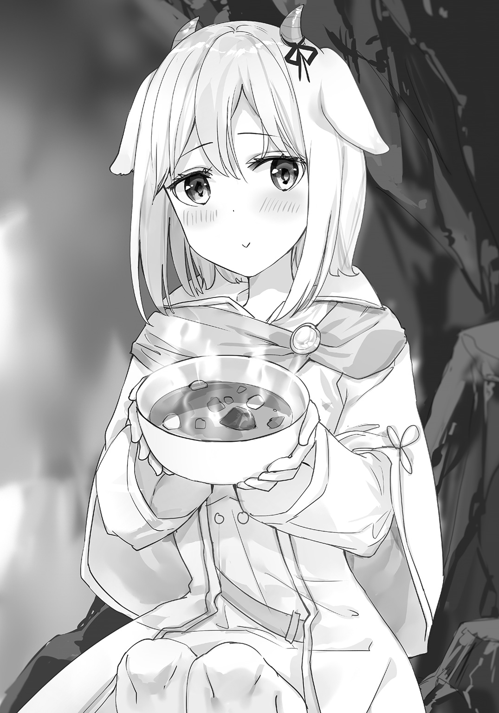
それにプラスしてこの温かさ。命の水と呼んでしまっても過言ではないな。
「んじゃ、いただきます」
いつもの眠たげな目とは違い、期待を孕んだ真剣な眼差しのミミが見守る中、スープに口をつける。
信じられないくらいうまかった。
冷えた体にじんわりと沁みてくる。
店で食べた味を完璧に再現している。いや、なんならこっちのほうが塩加減が優れているかもしれない。俺の贔屓目ならぬ贔屓舌である可能性も高いが。
そしてこの鼻から抜ける爽やかなスパイスの香りが......って......。
「か、かかかか、辛っ!?」
喉を通った後で凄まじい刺激が襲ってきた。
舌は痺れて喉は焼け、本気で口から火を噴きそうになる。
なんだこれ。ピリリと辛いとかいうマイルド表現で済むレベルじゃないんですけど！
「だ、大丈夫ですかにゃ？」
ナツメが慌てて水筒の残りを俺の口に突っこんだ。まだ冷たさを保っている井戸水をゴクゴクと夢中で喉を鳴らして飲む俺。
ふう、生き返った。
本物の命の水に巡り会ってしまったか。
「久しぶりに脳が破裂しそうになったわ。くほっ、まだ喉がいてぇ」
俺の胸で燦然と輝くアレキサンドライトも、このテの痛みまでは取り除いてくれない。
「申し訳ありません、シュウト様......」
山羊の耳を萎れさせてしゅんとするミミ。
一手間のつもりが余計なお世話になってしまったことを気に病んでいる様子だ。
「おいしい料理どころかシュウト様にひどいものを食べさせてしまいました......ミミは奴隷失格です......」
「いやミミはなんも悪くねぇよ......フラーゼンの奴め、やらかしやがったな」
真犯人は特定できている。
なんちゅー代物を売りつけてくれたんだ、と思ったが、よく考えたら『ひとつまみで劇的に効く』とか言ってたな。
どうやら誇大表現なんかではなかったらしい。
看板に偽りなしってことかよ。
まあ「用法用量を守ってお使いください」ってことなんだろう。量さえ間違えなければこの強烈な発汗作用が役に立つ場面もある、はず。多分。
頑張ってくれたミミにメシマズ属性をつけさせるわけにはいかない俺はカップの残りを気合いで飲み干し、それから鍋の中身も空にして――味覚が麻痺していたので俺一人だけ舌鼓を打てなかったが――汗だくになりながらも狩りを再開。
地下にそびえる迷宮をひたすらに歩き回る。
剣士泣かせのレイス。タフさに自信のワイト。魔法はお手の物のリッチ。
出会ったそばから矢で貫いて屍の山を築き上げる。まさしく死屍累々である。どれも最初っから死んでいるようなもんだけれども。
が、しかし、残念ながら聖水と聖灰の備蓄は純益七〇万Ｇを超えたあたりで底を突いてしまったので、途中からはゴリ押しで倒していかざるを得なくなった。
次回以降はもっと多めに持ってくるか。
そうこうしているうちに。
「おっと？」
魔法陣が配置された地点にまで辿り着く。地図の記述によれば複雑怪奇な模様で構成されたこいつは上昇用ではなく、下のフロアに繫がったものだ。
第三層には下降用魔法陣はこれを含めてたった二つしかない。
次にこの場所を訪れようと思ったら、今日と似たような手順を踏まなくてはならない。つまりは結構な量の移動が必須。
先頭を行くホクトは円の手前でぴたりと停止する。
「いかがなさいますか？ 我々は主殿のご意向に従うであります」
「そんなもん決まってるよ」
この後に待ち受けているのは最難関であろう最下層だけ。
アイテムがないと第三層の魔物でさえ手を焼くんだから、持ち合わせのない今の状態でそんなリスクを負いにいくのは賢明じゃない。
叩ける石橋は限界まで叩くが吉。
「戻ろうか。今日はもう十分稼いだしさ」
濡れ手に粟の金貨と大量の布切れを手土産に、俺たちは地下層内部を引き返した。
浮上したら真っ先にギルドに足を運ぶ。
「ようこそギルドへ。コートが薄汚れているが今日も地下に潜ってきたのか？」
「まあな」
これがその成果だ、とばかりに俺は素材採集用の革袋の口を広げる。
「おお、こんなにか！ リッチやレイスをこれだけ討伐してくるとはやるもんだ」
おっさんは第三層に出現するアンデッドの傾向と戦闘力についてはよくよく理解しているようで、だからこそ俺のぶっちぎりの撃破数に舌を巻いたのだろう。
「それはいいんだけどさー、この布ってなにかしら違いはあんの？」
気になっていた質問を飛ばす。
「もちろん。例えば、この赤褐色のやつは骸布だな。霊布に似ているが別物だ。それからこっちの濃い紫の素材は冥布。知ってのとおりリッチが頻繁に落とす」
「どこで見分けりゃいいんだ。色か？」
「一番の判断基準はそこになる。重量も微妙に違うんだけどな。まあ秤もなしに手の感覚で区別しろと言われたら誰にもできないとは思うが」
俺は利き布選手権をしたいわけじゃないから無用な心配だな。
「霊布、骸布、冥布ね。素材としてはどうなんだ？」
「いずれも打撃や斬撃への耐久性はゼロに等しいが、最高峰の軽さがある霊布は体さばきを助け、骸布は呪縛に抵抗を持つ。冥布は魔法に対して強いぞ」
「ほほう」
それだけ聞くと骸布は比較的有用そうに感じる。
この先、呪いをかけてくるいやらしい魔物と出くわさないという保証はないからな。
防御面のお粗末さゆえに半歩間違えばゴミ装備になりかねないが、ひとまずは一着だけでも作っておくか。軽いなら携帯もできるだろうし。
他の素材についても納品しないで保持を決める。
教会への貢献度が欲しいなら寄付すりゃいいだけの話。どうせ明日から今日以上に聖水聖灰目当てでキャッシュを投入するのは規定路線だ。
「そうだ。ついでじゃないけど、最下層の魔物についても聞かせてくれないか？」
「最下層というと、第四層か。教えられなくはないが......Ｂランクに満たない腕で挑むのは無謀かもしれんぞ」
「む。そんなに強いのか」
「ああ。あそこに現れるのは、軽く挙げただけでもデュラハン、ウォーロック......特に危険なのがグリムリーパーだ。数は多くないがどいつもこいつも恐ろしく強い」
少年の心を刺激してやまないネーミングだけでやばそうなのが伝わってきた。
スルー安定すぎる。
となれば、しばらくは第三層で金を貯めるのが正解だな。
あのフロアでも、うまくやれば一日につき一〇〇万Ｇの収益を目指せる。この町を離れるまでにどれだけ稼げるか、自分のことではあるが大いに期待しておくとしよう。
俺たちはギルドを離れ、魅惑と喧騒に満ちた夜の繁華街へと紛れていった。
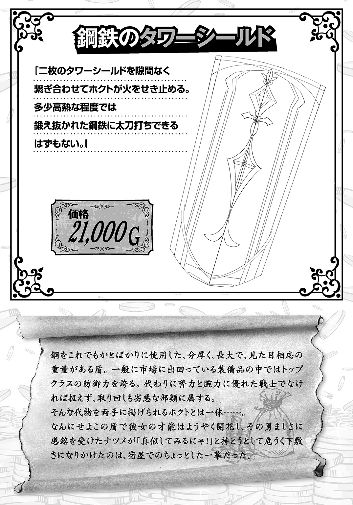
第三層での稼ぎ方を心得た俺は、着々と預金残高を増やしていった。
無論、地下に潜るたびに相当量の矢と聖水聖灰を必要としたが、得られる金額の大きさに比べたら些細な出費である。
これまでの町で自主的に課していたノルマは概ね五〇万Ｇ程度だったのに、リステリアではその倍を目指すことができる。しかも町内から出なくて済むというオマケつき。
加えてこの土地には俺の愛する蒸留酒がある。
仕事の疲れをスッキリとした酒で癒す。これが本当の本当に最高だった。蜂蜜に漬けた柑橘類を皮ごと輪切りにしてグラスの底に置き、そこに穀物由来の澄み切ったスピリッツを注いだ時なんかはたまらない。
稼げて、飲めて、くつろげる。
言うことなしだ。
土地を買う候補地としては現状一歩リードしている。
そんな生活が二週間続いた頃。
「明後日の式典に出席してほしい？」
この日も地下層からの帰りに教会直営の酒場に立ち寄った俺は、そこでアリッサからそんな誘いを持ちかけられた。
アリッサとは妙にここで交流する機会が多く、その底抜けに明るいキャラクターもあってか、自然と仲がよくなっていた。
単にいつ行っても顔を見かけるというだけな気もするが。
とはいえ、アルコール類の取り揃えがよそに比べて頭一つ抜けて充実したこの店を俺が贔屓にしているのは紛れもない事実。
酒造業で名高いリステリア大教会が開いているだけのことはある。
既に酒の席は深いところまで進んでいて、ホクトはカウンターテーブルに突っ伏して酔い潰れているし、おかわりを重ねたミミもうとうとしている。ナツメはミルクの飲みすぎでトイレから戻ってきていない。
俺がちびちびとウォッカベースのカクテルを舐めているだけだ。
「そう！ 年に一度しかない特別な行事だよっ！」
一方でアリッサはタダなのをいいことに、ガンガン新しいボトルを注文している。
なお俺は近頃は骸布で作ったインナーを着こんでいる。町で評判の仕立て職人に製作を依頼したのだが、これがなかなかどうして感触がいい。軽量素材を繫ぎ合わせた服はなにも身につけていないのではと錯覚するほどに軽やかな着心地で、肌触りもさらっとしている。長らく愛用していたゴワゴワしたクジャタの毛糸とは大違いだ。
ホクトを前に出したおかげで攻撃を受ける機会が著しく減ったため、動きやすい防具のほうがなにかと都合がよかった。
カトブレパスのコートだけでも一定の防御力は保てていることだしな。
この服を作るのに結構な枚数の骸布を要したが、それだけ費やしてもまだまだ大量に在庫が有り余っているんだから、俺がこの二週間で狩ったアンデッドの個体数も推して知るべしである。
「はあ、特別ねぇ。なんで教団の関係者じゃない俺にそんな話が来るんだ」
「だってさ～、お兄さん、めちゃくちゃうちによくしてくれてるじゃない？ 他の人とは違う扱いをしないと失礼だもん」
飲んだくれの聖女はそう説明する。
そういや神々への奉仕......ってな名目で教会に貢ぐと、最終的には祝祭事への招待権がもらえるんだったな。
魔物との戦闘を楽にするために毎日二〇万から三〇万Ｇは寄付しているから、通算だとかなりの金額に及んでいるであろうことは想像に難くない。
「でもさ、見返りは全部聖水と聖灰にしてもらってるぜ、俺」
「それはそれ、これはこれ！ 寄付金の総額でも見てるからねっ！」
なんでも、贈答品の引き換えとはまた別に点数がカウントされているらしい。
これは困った。いらない特典を押しつけられてもな......。
「お願いだから来てよぉ。あたしだって最初から最後まで出なくちゃいけないんだし」
「仕方ないだろ。あんたは聖女様なんだから」
「そうだけどさぁ......はー、まったく嫌になっちゃうよ！」
やけくそ気味にぼやきながら、ブランデーのボトルを新しく開けるアリッサ。
「義務を果たすことがそんなに偉いんですかねぇ、この社会では！」
絡み酒をしてくる。
雅なプラチナの髪を惜しみなく振り乱して。
「あー、やだやだ。行きたくないな～。今年こそお休みしたーい！」
「なんでそんな嫌そうなんだよ。そこまでのことか？」
「だって式典の日は夜までお酒飲めないんだもんっ！ 司祭様に怒られちゃうから！ そりゃあ憂鬱になるってものですわよ」
だから、とアリッサは懇願するような目つきで俺の瞳を覗きこむ。
「その日は夜まで二人で禁酒してみない？ ね？」
「『ね？』じゃねぇよ。俺まで付き合う義理はないぜ。一人で頑張ってくれたまえ」
「それじゃ寂しくて耐えられないよっ！ 一緒に地獄に落ちようよ～！」
聖職者にあるまじき発言だった。
「分かったぞ、俺を道連れにしようって魂胆だな！ そうはいかねぇぞ。せっかく蒸留酒が飲める町にいるんだから、好きな時に好きなだけ楽しまないとな」
「いいじゃん！ あたし意志弱いから一人じゃ禁酒できないもん！」
「まさかとは思うが、毎年俺みたいな犠牲者を生んでんのか？」
「うん」
正直でよろしい。
「......じゃなくて、真面目にやれ。今年で甘えは終わりにしとけ」
いい歳なんだから、と続けようとして俺は口をつぐんだ。
「ふええん、手厳しい......あっ！ じゃあさ、一日式典に付き合ってくれたら、うちの酒蔵で一番高級なお酒を樽ごとプレゼントするよ？」
「そんなの買えばいいだけじゃん。これだけ寄付してるんだから俺が金でピイピイ言ってないのは分かるだろ？」
「実は非売品の幻の銘酒が......！」
「あるの？」
「......ないっす」
正直その二。
「お疲れさまでした」
「待って、帰らないで！ じゃあねじゃあね、んとねぇ......」
「今度はなんだよ......」
「おっぱい揉ませてあげる」
平然とそう言い放ったアリッサは、長い睫毛をまたたかせてウィンクしながら、特に恥ずかしがるふうもなく襟をクイッと引っ張った。
元々たるんでいた襟ぐりが更に伸びて絶景が広がる。
やばいこいつ、アホだ。
「だって他にあたしにできることないし！ 文字どおりの身売りです！」
「......俺が十四、十五のガキなら乗ってたかもな」
口ではそう呆れたっぽく言いながらも、悲しきかな本能に忠実な俺の下半身はしっかり反応していた。正直その三が俺の中に潜んでいたとは。
めんどくさいが仕方あるまい。行ってやるか。いやホント仕方ない。
すべては金でおっぱいを揉めない世の中が悪い。
「ではまず、前金ならぬ前乳の支払いを......」
さすがに無理だった。
式典当日の朝、俺は約束の時刻に合わせて教会に出向いた。
寄付の名義は俺だけなので当然単身での出席である。
「......で、どちら様ですか？」
「ふふ。毎日のようにお会いしているじゃないですか」
教会の入り口の前に陣取る、修道女の一団を従えた女がアリッサだとは、一目見ただけでは気づけなかった。
いつ見てもボサボサだった髪は念入りにとかされているし、着衣の乱れもない。はすっぱで不真面目な印象は綺麗さっぱり消え失せていた。唯一、はち切れんばかりに自己主張している胸の膨らみだけが、その人物がアリッサであることを証明していた。
「ようこそいらっしゃいました、シュウト・シラサワ様。日頃の感謝の意を改めて表明させていただきます」
アリッサの丁重な礼にシスターたちも続く。
「頭下げるような性格だったっけ......逆に怖いんだが......」
というか、口調まで変わってるし。
「解熱剤でも買ってこようか？ 粉末と液体どっちがいい？」
「病などではありませんよ。今日は教団にとって特別な日ですから。さしもの私といえど、平素のようにおちゃらけてはいられません」
「はあ」
式典のある今日一日はこの感じで貫き通すつもりらしい。しかし本性を知っている俺やその他大勢からしてみれば、これが今日のために用意されたインスタントの人格であることは分かり切っていた。
「この日くらいは聖女らしい振る舞いをしなくてはなりませんからね」
そう言って見せてきた微笑みが眉の角度といい頰の引きつり方といい物凄く不自然だったので、めちゃくちゃ無理してキャラ作りしていることが伝わってくる。
なるほど、これは本人的には地獄かもしれない。
「そんなことより早いとこ式典ってのを始めてほしいんだが」
なんでも式典には教会関係者以外にも教団の発展に貢献した人物が毎回一人だけ招かれているそうだが、今回はアリッサの推挙も含めて俺、という次第になっているらしい。
が、周りには白を基調にした装束をまとった神官とシスターしかいないので、地味な色合いのコートをルーズに着た俺だけが異常に浮いている。
居心地はよろしくない。
「かしこまりました。司祭様の到着次第、出発することにいたしましょう」
「出発？ 別の場所に移動するのか？」
「はい。リステリアから北東に進んだ先にある神殿にて、式典は厳粛に執り行われる運びになっています」
歩くのかよ。めんどくせー。
俺は今日のイベントは礼拝堂だけで完結しているものだとばかり思っていたけども、どうやらそうではなかったようだ。
数分後に白髪のジイさんが重役出勤してきたところで、ようやく。
「それでは参りましょう。皆々深く承知していらっしゃるかとは思いますが、我らが向かう先はドルバドルを守護する神々の御前。くれぐれも失礼のなきように」
アリッサいわく神官長だというおっさんが号令を出した。
目指すは神殿。
三頭の白馬に牽引されて、神への捧げ物を載せた荷馬車が走り始める。
町を出てからだらだらと二時間近くも歩かされたのは誤算だったが、いざ目的地に着いてしまうとそのあくびの出そうな退屈さは一発で吹き飛んだ。
「な、なんだこのスケール......」
とんでもなくでかい。でかすぎる。
果たして何千何万平米あるんだろうか。
敷地面積もさることながら、神殿自体の様式も底知れぬ威厳を感じさせた。床面から屋根に至るまで全面にわたって大理石が使用されており、すべての柱に緻密な模様の彫刻が施されているのだから、開いた口がふさがらないほどに圧倒される。
柱の隙間からは祭壇と燭台、そしてバリエーション豊かな石像の数々が垣間見える。
フィー地方の密林で見た神殿はこんなにも壮大な建物ではなかった。
見慣れているであろう他の参加者が談笑や祈禱にふける中、俺一人だけがあまりの迫力に啞然としていると、不意にアリッサに声をかけられる。
「シュウト様、式典の開始まではもう少し時間がございます。しばらく神殿内部を見学なされてはいかがでしょう？」
「見学といってもなぁ......」
ぶっちゃけそんなに興味はない。すげーとは思うけど。
「中には神々を象った石像が鎮座しておられます。私たちの教団は多神教ですから、数多くの神のご威光に触れることができますよ」
「そんなに種類があるのか」
「ええ。見かけ上の老若男女は様々ですが、いずれの神も大変威風のあるお姿をされています。なので飽きることはないですよ。ご安心ください」
後半の投げやりな表現にアリッサの地が出ているような気はしたが、ふむ。
それなら不敬かもしれないが美術館感覚で覗くだけ覗いてみるか。
「どうせ式典本番まで暇だしな。見に行くか」
「では案内役のシスターを一人付けましょう。サヤさん、こちらへ」
アリッサが手を叩いて呼んだのは、まだ幼さの残る少女。
八の字になった眉が印象的だ。
まっさらな修道服を着ているからか清純な雰囲気がある。少なくとも、酒場で片膝立ててワインを瓶から直飲みする某聖女よりは断然。
「なっ、なんでしょうか、聖女様」
「この方に神々について解説していただけますか？ 石像を見て回るそうなので」
「わ、わ、分かりました、精一杯務めさせていただきますっ」
サヤと呼ばれた少女は、なぜかカチコチに緊張していた。
「彼女はまだ十四歳ですが、聖典と教典を熟読する非常に熱心な教徒です。きっと神にまつわる詳しい逸話を聞けるかと」
「へえ。それじゃあ頼りにさせてもらいますかね」
よろしく頼む、とサヤに軽く挨拶する俺。
「よろしくお願いしますっ」
サヤは慌ててぺこりと一礼した。リアクションが初々しい。俺がこのくらいの年齢の時はもっとすれていたと思うが、なんとも純朴な乙女である。
そんなサヤに導かれて神殿の敷居をまたぐ。
まず最初に目についたのは、斧をかかげた髭面の男の石像だった。やたらと大柄で筋肉質だったので他の像に比べて格段に目立っている。すぐそばにある温和な表情をした女神像（半裸なので無駄にエロい）と比較すると対照的だ。
「こちらは山の神ノイグラン様の像ですね。ノイグラン様はその屈強な肉体で山を切り拓き、豊かな自然と生態系を作り出したとされています。その隣は海の神であるセシレナ様。神話によりますと二人は夫婦であったそうです」
こんな野獣みたいな風貌をしておきながら美人の嫁持ちかよ。羨ましい神様だな。
次に気になったのは剣を構えた将軍じみた像。とても神とは思えないような怒りくるった形相をしている。完全に俺のことを睨んでるだろ、これ。
「ダグラカ様は戦いの神であられます。苛烈にして勇猛な戦いぶりを信条としたダグラカ様は多くの冒険者の方々から信仰を集めているんですよ」
冒険者といえば、とサヤは付け加える。
「あちらにあります弓を持った神様......狩猟の神ヘンデルシク様もまた多くの支持を得ています。魔物を狩る心構えを教えてくださりますからね」
ヘンデルシクの像は無茶苦茶イケメンに作られていた。
同じ弓を武器にする者としてシンパシーを覚えたいところだったが、これでは無理である。
共感できそうにない神はもう一柱。
分厚い本を手に持った、全国の小学校に設置してもＰＴＡからお叱りを受けそうにない感じの像が右手に見える。
「学問の神、フェシア様についてお教えします。フェシア様はドルバドル三賢者の一つとして数えられることもあるほど親しまれた......」
「いや、あの神様についてはいい」
絶対助けを求めることはないし。
「それより、あの子供みたいな格好の像は誰なんだ？」
ひとつだけ明らかに小さいから気にかかっていた。
「エルシード様のことですか？ 彼は幸運の神です。人々が最終的にすがるのはいつの時代もエルシード様、というのがちょっとしたジョークのように語られがちですが......それを抜きにしても広く信仰されている神様ですよ」
まあ誰だって幸運の女神には見放されたくないからな。
でも『彼』ってことは女神じゃなくて少年の神か。愛嬌のある笑顔がまぶしい外見だけなら女の子でも余裕で通用しそうだけど。
広く信仰されているって、そういう意味じゃないだろうな。
「だったら俺はこっちの神様を信じたいところだけどな」
俺が眺めたのはコケティッシュな服装をした、石であることを感じさせない柔らかい女性的な曲線がありありと浮き出た像だ。
この石像を作った職人はいい趣味をしている。
「豊穣の神ルミッテ様ですね。リステリア地方に限らず、この大陸で働く農家のほとんどは彼女を信仰しているのではないでしょうか」
「ふむふむ。作物の神様か」
俺の見立てどおり偉大な神様だな。食を司る神ってのはとりわけありがたがられるのが相場だ。ルミッテ様の名前は忘れないでおこう。
「じゃあ、あっちの女神像は......」
女性の神にばかり自然と目線がいってしまうのは許してもらいたい。俺も生物学的にオスだからこれはもうどうしようもないことなのだ。条件反射の一例として教科書にでも載せてくれれば誤解は解けるだろう。
「あちらにあられますのは創造の神イリヤ様です。この世界を創り出し、すべての神々を束ねる、最も位の高い神様なんです」
サヤは敬愛の眼差しをイリヤ像に送りながら答えた。
「そんな凄い神様なのか......ん？」
なんかこの女神、どっかで見たことあるんだが。
見たというか......会ったというか......。
「あっ！ そうか、あの時の女神か」
死後の世界で対面したっけ、そういや。
今もこうして立っている俺の転生先はこいつが作り上げた世界だったのか。
だとしたら大まかな部分で地球がベースになっていることにも頷ける。世界観の引き出しが地球くらいしかなかったんだろう。なんか今凄く身も蓋もないことを思った気がする。神を怒らせるのはまずい。本気で。
それよりだ。
「この女神が実在しているってことは......他の神もなのか？」
いやいや、まさかな。
「どうかなさいましたか？」
たじろぐ俺を不思議そうに見つめてくるサヤ。
「なんでもないよ。ちょっと神様ってのにリアリティ感じてきただけ」
「神は天界のみならず、私たち一人一人の心に宿っています。目を閉じればいつでも神にお目通りすることができますよ」
サヤは意外とデジタルな解釈の宗教観を述べた。
それにしても、すげー賛美された姿で作られてんな、この女神。
彫刻で表されたイリヤは聖母のような笑みをたたえていて、とてもじゃないがうっかりで人一人事故死させるドジっ子には見えない。
「石像はこの辺でいいや。そろそろ式典が始まりそうだしな」
徐々に俺たち以外にも神殿内で行動する人が増えだしている。
その中にはアリッサ率いる修道女の一団も含まれていた。燭台の一本一本に火を灯して回り、酒瓶をはじめとした貢ぎ物を祭壇上に並べている。
ぶらぶらしてると邪魔になるな。
俺は端でおとなしくしとくか。手伝ってくれとか声をかけられるのも嫌だし。
解説ありがとう、とサヤに伝えようとしたが、肝心の少女はぽやっとした表情をして――離れた位置にいるアリッサに見惚れていた。
「アリッサがどうかしたのか？ はっ、あいつまさか、ついに青少年には絶対に見せてはいけないとこまではみ出させたとかじゃ」
「いえっ、その、違うんです。......聖女様は私の憧れなんです。申し訳ありません、ぼんやりしてしまいました」
「憧れ？ アリッサにぃ？」
「はい。聖女様は美しくて、私のような者にも優しい、本当に素敵な女性ですから」
サヤは少し恥じらった様子で、頰を朱色に染めながら言う。
うん、これはあれだな。アリッサの実態を知らないがゆえの発言だろう。十四歳だから酒蔵にも酒場にも行くことがないだろうし。
純粋なサヤの目にはちゃんとした聖女に映っているに違いない。
そのままの君でいてもらいたいものである。
......と、俺が無垢な少女の行く末を案じていると。
「これより本年度の海陸婚礼の式典を開始する。ただちに集まるように」
冒険者というわけでもないのに、やけに歴戦の強者じみた雰囲気を漂わせる司祭が、よく響く胴間声で全員に集合をかける。
散らばっていた神官たちはその宣告だけで速やかに一堂に会する。
驚異的な統率力だな。
「ってか、今日の式典ってそんな名称だったのか。これまた風変わりな......」
「海と陸が手を取り合って、災害のない一年になりますようにとお祈りを捧げるんです。先ほどご説明しましたノイグラン様とセシレナ様を主役にした式典なんですよ」
「へえ」
「それから、四カ月後には天地婚礼の式典があります。こちらは遠くかけ離れた天と地を繫ぎ合わせる楔......すなわち潤いの雨を祈るための儀式です。雨は私たちの命の源となる、とっても大事なものですからね」
そんなことまでサヤは丁寧に教えてくれた。マジでいい子すぎる。この子の教育だけはアリッサは間違えないでいただきたいものだ。
にしても『婚礼』とは、随分とロマンチックな表現をしているな、この教団も。
このくらいキャッチーじゃないと民衆から受け入れられないのかもしれない。
「ところでイリヤはカップルにはなってないの？」
「イリヤ様は唯一無二の創造主ですから、釣り合う神はいらっしゃいませんよ」
なんて寂しい女神なんだ。
「それではここリステリアの地にて、母なる海洋と父なる陸地を司る神々の、その永遠の愛を祝す。各自、胸裏にて礼賛を」
司祭のジイさんの挨拶を皮切りに式が開幕する。
信徒ならば誰でも出席可というわけではなく、教会関係者の内々だけで執り行われる神聖な催し。その列の中に信仰心の欠片もない俺が加わっているというのは違和感しかないが、正当な権利を持ってこの場にいるのだから、変に気を揉んだりはしないでおくか。
天に召します我らが神よ、ってな感じのお決まりの文言から始まる司祭の講話を態度もそこそこに聞きながら、時間がさっさと経過してくれるのを待つ。
......。
長っ。
「以上が第七教典における水難に関する教えである。続く第八教典には――」
まだ続くんかい！
ようやく終わってくれた頃には俺はすっかりグロッキー状態だった。実際は知らないが体感だと五時間はある。久々に貧血を起こすかと思った。
式典は次の段階、賛美歌合唱に進行する。
力強い男声の主旋律に、美麗な女声のコーラスが絡む荘厳な楽曲だった。おそらくこれはサヤの言っていた山の神と海の女神を表しているのだろう。
曲を知らない俺は黙って聴くことしかできない。暇なので何気なく脇目を振ってみると、アリッサが歌詞カードをガン見していた。いや、お前は覚えておけよ。
歌が終わると司祭は今年の功労者の名前を読み上げ始めた。
神への報告、だという。
数人の教団幹部の名前に交じって「冒険者ギルド所属、シュウト・シラサワ」とアナウンスされた時は、妙にこそばゆかった。人生で表彰なんてほとんどされたことないからな。
「この者は遠くフィーの地にて生を授かりながら、我々の活動拠点であるリステリア大教会に財産の寄付という形で多大な貢献を残し――」
司祭のディープな声音で俺の実績が具体的に語られていく。
な、なんか普通に恥ずかしくなってきた。
これを素直に光栄だと受け取れないんだから、つくづく俺って奴は小市民だ。
功労者顕彰の発表をもって式の大半は終了となったようで。
「では皆、今から祝杯を挙げようではないか。堅苦しい儀式は終いだ。これよりは神の婚礼を祝う宴席の時間。大いに盛り上げようぞ」
形式として披露宴までやってしまうのか。
本格的というか、実益を兼ねているというか。
まあ、祭壇に置かれた供物の中には大量にアルコール類が混じっているから、この展開も不自然ではない。神と杯を酌み交わすというのもなかなか風流である。
神官連中がクリスタルのグラスを配りだす。当然俺にも。
サヤをはじめとした幼いシスターたちも、おちょこに似た小さな器を手にしている。
「シュウト様、こちらは名産の白ぶどうのワインでございます。甘い香りと痛快な酸味が特徴的な逸品です。是非ご賞味いただければ、と」
募金担当（と俺は思っている）の神官がボトルを持って俺のところまで来た。
「へえ。じゃあもらおうかな」
「お注ぎいたします。ささ、どうぞどうぞ。販売は教会でも行っておりますので！」
やっぱ宣伝かよ。
とはいえ俺としても質のいい酒は大歓迎だ。味見の感想次第では買い溜めも考慮しておくか。もちろん限定品の蒸留酒をしこたま買いこむのは前提として。
全員分のグラスが満たされると、いよいよその瞬間は訪れた。
「ノイグランとセシレナが誓った、永遠の愛に乾杯！」
司祭の音頭に合わせ、乾杯、とほうぼうでグラスがかかげられた。
一応俺も真似をする。
それからグラスを傾け、注がれた淡い色のワインを一口。のしかかっていた倦怠感を吹き飛ばしてくれたからか、いつにも増してうまく感じる。
つまみは捧げ物の残りから自由に持っていっていいようなので、適当に見繕う。
瓶詰めされた魚のオイル漬けもいいが、ガチガチに熟成したいかにも嚙み応えのありそうなベーコンも捨てがたい。ビジュアルだけなら青カビのチーズも気になるところ。
「シュウト様、少々お時間よろしいでしょうか」
酒のアテに迷う俺に飛んできた声の主は、誰あろうアリッサだった。
すっと近寄ってくる。そして会話が盗み聞きされていないことを確かめると、俺の耳に吐息交じりの色っぽい声でこうささやいた。
「こっそり抜け出そうよ。町に戻ってサシで飲まない？」
聞き慣れたラフな口調に戻して。
「おいおい、勝手に神殿を離れても平気なのか？」
「大丈夫！ 式典はもうほとんど終わったようなものだよ。どうせこの後は司祭様も含めての宴会なんだから、だーれも気にしないって」
「俺たちもここで一杯やればいいじゃん」
「こんなとこであたしがお酒飲んだら、みんなに迷惑かけちゃうからさ～」
自覚はあったらしい。
というかですね、密着してるから胸が思いっ切り当たってるんですけど。
「......まあサヤみたいな子がいる前でベロンベロンになるのはやめたほうがいいな。情操教育によくない」
「そそっ、キャラは大事にしないとね。でもずっと我慢してたら体に悪いもん。聖女様の時間はここで終わりだよっ」
そう言って見せたいたずらな笑顔は、俺のよく知るいつものアリッサの姿だった。
町に戻ってすぐ、通い慣れた教会直営の飲み屋に直行。
昼食には遅く、晩酌には早すぎる時刻に、俺たちは本日二度目の乾杯を交わした。
「くぁ～！ うまいっ！ やっと人生が始まった気がしてくるねっ！」
馴染みの店の馴染みの空気の中、馴染みのカウンター席で馴染みのジョッキを片手に馴染みの赤ら顔を見せるアリッサは、心底嬉しそうに酔いを満喫する。
とっくに服の紐も緩められていて、泥酔を迎え入れる態勢は万全だった。
するりと飲めてしまう常温のエールはあっという間に底をつき、料理が到着する前からご機嫌で二杯目を注文するアリッサ。俺はまだ最初に頼んだ水割りをすする程度にしか飲んでいないというのに、だ。
「ほら、どんどん頼んじゃっていいんだよ？ 今日はおごっちゃうからさ！」
「ツケで飲んでるんだから教会の金じゃん......」
「教会のお金を稼いでるのはあたしっ！」
実績ある人物にそうスパッと言われたら、もうなにも物申せない。
「あ、今の拍手ポイントだよ。聖女様すげえええしてもいいんだよ？」
「しねぇよ」
どうでもいい会話をしていたら、カウンター越しに「お待ちどおさま」の声が。
「ニンニクのオイル煮です。軽く塩を振っていっちゃってください」
表面はほのかにキツネ色になっているが、オイル煮というからには揚げているわけではないらしい。よく分からん料理だ。
店員に勧められたとおり、添えられていた塩を指でつまんでパラパラと振りかける。
その指を使ってスナック感覚で口の中に放りこむ。生のニンニクにありがちな鼻腔を突き刺す辛味はまるでなく、むしろ甘い。ホクホクとした食感といいイモに近い。しかしながらニンニク独特のあの匂いは、限界まで凝縮されている。強力無比だ。
「うおお、一粒で一気にニンニクの世界に連れていかれるな、こりゃ」
「んふふ～、おいしいでしょ？ これいくならワインやシードルじゃないんだよね、キレのあるお酒じゃないと」
アリッサはひょいっとつまみあげたオイル煮を、ストレートのウォッカで流しこむ。
いつに間にやら着衣は一層乱れていて、目のやり場に困る格好になっている。他の客の視線が胸のグランドキャニオンに注がれていてもアリッサは気にするふうもなく、けらけらと楽しげに笑うのみだ。なので、特等席にいる俺も恩恵にあずかっておいた。
「なるほど。確かに甘い酒だとせっかくのニンニクの味が薄まりそうだな」
「あと度数は強ければ強いほどいいね！」
「なんで？」
「すぐ酔えてお得だから！」
アリッサ、酒じゃなくてエタノールでもいいのではないか疑惑。
「いや～、今日は地獄かと思ったけど、蓋をパカッと開けてみたら天国だったね！ お兄さんと気分よくお酒飲めてるしさっ！」
「はあ。さいですか」
なんとなく照れ臭いので素っ気ない返事になったが、俺もアリッサと飲む酒のうまさは否定しない。アリッサは太陽すら超えて陽気だから話していて飽きることはないし、常にポジティブで嫌味がないし、美人だし、おっぱいでかいし。
と、そこに。
「さっきのニンニクを煮たオイルで炒めた魚介の盛り合わせです」
ようやくメインディッシュが運ばれてきた。切り身の魚に大ぶりの貝、殻つきのエビ、それとブツ切りのイカが一枚の皿の上でスクラムを組んでいる。
具材はすべて乾物を戻したものらしいが、一度干した分旨味が増幅していて......ともっともらしいことを言ってはみたが、ニンニクの香りが移った油とレモンの皮を混ぜた塩が全面にまぶされているので繊細な味云々を語るのは無理だった。
豪快で下品で粗暴で濃厚で野蛮な、まとめると俺好みのジャンクな味わいである。
俺はゲソを嚙みながら、まだまだほろ酔い止まりのアリッサの話を聞く。
「今日はほん......っとありがとね！ お兄さんが付き合ってくれてなきゃ息が詰まって死んじゃうところだったよ。ふう、危なかった～」
「よくそれで聖女が務まるよな......あんたが教団にいる理由が分からねぇ」
「それはほら、あれですよ、他に居場所もないから～みたいな？」
「なんだそりゃ。どういうことだよ」
んー、とアリッサは少しだけ言葉を探ってから。
「あたし、孤児なんだよね」
グラスの中の液体を覗きこみながらつぶやいた。
「あっ......悪い」
迂闊さを詫びる俺。
教会なのだから、そういう出自の人間がいてもおかしくない。
「別にそんなシリアスな話じゃないよ？ ちっちゃい頃のこととか覚えてないし。ま、だからってわけじゃないけど、他の教徒の人たちみたいにはできないんだよね、あたしって。入りたくて入ったんじゃないから神様の教えも受動的に聞いてきたし」
でも、とアリッサは二の句を継ぐ。
「信仰心とかそういうのは、ぶっちゃけちゃうとあんまりないんだけどさ、教会には恩返しがしたいの。どこにも行けない、行く当てもないあたしを育ててくれたもん。特に司祭様にはいっぱいお世話になったからね」
「......その恩返しってのが、酒造りか？」
「そ。自分の好きなことで大好きな教会に役立てるんだから、これよりありがたい話はないよ。だからまあ教団を離れるなんてことは、うん、まずないかなぁ」
アリッサは自らの暗いバックボーンを、エビの殻を剝きながらあっけらかんとして語るだけでなく、教会への深い愛着を明かした。
そうか、そうだったのか。
およそシスターらしからぬ不純な言動をするアリッサに初めて会った時は「なんだこのビービーエーは」と感じたものだが、こうして身の上話を聞かされると、急激に見方が変わってくる。
アリッサは「恩返し」と暖かみのあるフレーズを使ったが、副業に過ぎない酒造事業で聖女の位にまで昇格するほどの功績を残したのだから、その陰には本当は、他者には到底真似できない努力があったに違いない。
それだけの献身の原動力を「教会が好きだから」で片付ける度量。
俺はこいつのことを、心からいい女だと思える。
思えるが、しかし。
「このムードの中で切り出すことではないとは自覚しておりますが......俺がしたいのはそんな話ではなくてですね」
「あ、もしかしておっぱいの件？」
「はい。いや本当に空気を読めてないとは思うのですが」
揉むと言ったからには揉む。それが俺の流儀である。
そもそもその対価がなかったら俺は式典になんて出席していないし、この店にもついてきていない。
「約束だもんね。じゃ、どうぞ！」
アリッサは不敵な笑みを浮かべて、純白の修道女服越しに胸を張り出してきた。
今にもバルンッと音を立てて中身が溢れ出てきそうだ。
「けどエッチな揉み方はダメだからね？」
「どこまでいったらエッチなのか基準を教えてくれ」
「お兄さんもオトナだから知ってるでしょ～？」
むふふと笑うアリッサ。
しかしながら俺は性的な揉み方しか知らんのだが。
「つまりそれとは逆の手法を取ればいいわけだな......」
ということで、触れるか触れないかのソフトタッチではなく、ガッツリ鷲摑みにした。
『ふにっ』
お？
『ふにっ、ふにっ』
なんだこの衝撃的な柔らかさは......。
指がおっぱいに吸いこまれていくようだ。勝手に指が沈んでいくから、揉んでいてちっとも疲れがこない。ミミのそれは柔らかい中にもほどよい張りと弾力があって指を押し返してくるのだが、アリッサの胸は異次元である。
とにもかくにもふんわりしている。揉むために要求される握力がひたすら少ない。
だが下から持ち上げると重量感もあった。圧倒的なボリュームが手の平にひしひしと伝わってきている。これが幸福の重さだと言われたら納得してしまいそうだ。
そしてとても温かい。縁側よりも落ち着く。
うまい形容詞が思いつかない。そのくらい独特の感触だ。つきたての餅やプリンだなんていう陳腐な表現じゃ表せない。直接触れていないから正確ではないが、お湯を張った水面にチャプチャプと手をつけているような、そんな感じだろうか。
形が少しも崩れていないのに、これだけの柔らかさを維持しているというのは信じられない。信じられないから何度も揉んで確かめる。信じられないから仕方ない。
「......んっ......」
夢中でしがみついていると、アリッサが色っぽい吐息を漏らした。その瞬間。
「はい！ 今感じちゃったからここまでね！ 終了～！」
「ちょっ、まだ堪能し切れては......」
「エッチな揉み方はダメって言ったでしょ？」
どうやらやりすぎたのがよくなかったようで、ここでおあずけとなった。というか「感じたからアウト」とか臆面もなく言われた俺はいったいどういう顔をすればいいんだ。終わったというのに興奮が収まらないんだが。
なにが恐ろしいって、このやり取りが公衆の面前で普通に行われていることである。客たちは俺に嫉妬と羨望の目を向けてはいるが、皆の規範である聖女様がどこの馬の骨かも分からない男に胸を揉まれていても騒ぎにならないあたり、「あ、この人ならこういうことやってても変じゃないな」と思われているんだろう。教育の行き届いた店だ。
「お兄さんがもーっと頑張ってくれたら、続きさせてあげてもいいよ？」
「えっ、マジで？」
初めてこいつが聖女に見えてきた。
「特別だよぉ？ あたし、お兄さんのこと好きだからさ」
はっ!?
「だってお兄さん、あたしたちによくしてくれるじゃん。寄付もそうだけど、魔物もたくさん倒してくれてるしね。教会のために頑張ってくれる人なら誰でも大好きだよ！」
「す、好きってそんな軽い意味かよ......」
ガラにもなくドキドキしてしまった。
そりゃそうか。ここまでのどこに恋愛感情の芽生える要素があったんだ。
当のアリッサは俺の狼狽になんてまったく気づく素振りもなく、喉を艶かしく動かしながら残ったウォッカを一息に飲み干して。
「また今度飲む時は、お兄さんの話を聞かせてよっ」
片目をパチッと閉じて店を後にした。
男心をかき乱す暴風が去り、一人残された俺の視界に広がるのは、半端に消化された皿やグラスといった打ち上げの痕跡だけ。
だが俺の手には、アリッサの名残がしっかりと焼きついていた。
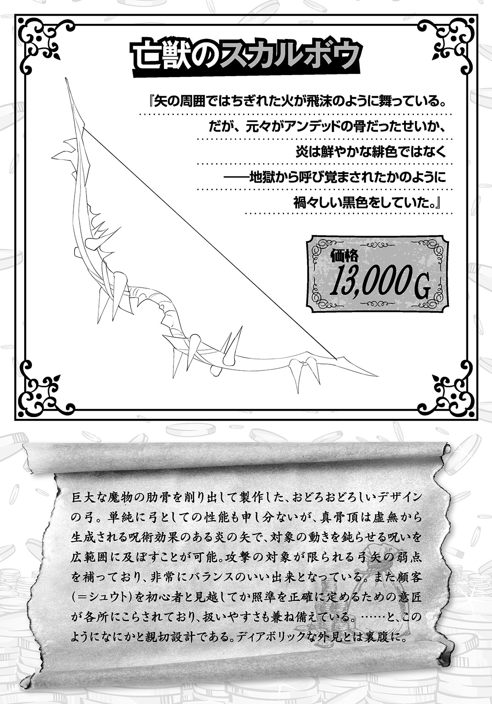
「ええっ、四層に潜るんですかにゃ？」
多くの人々が行き交う冒険者ギルド前で、朝飯の挽き肉とチーズを包んだフォカッチャを頰張るナツメの目が点になった。
俺の発案に驚いたのはホクトもである。
「恐縮ですが主殿、第三層でも屋敷の購入資金は充分に集まっているであります。いったいどのような風の吹き回しなのでしょうか......？」
確かに金を稼ぐだけなら現状維持でも問題はない。
だがそれとはまた話が異なる。
「分かりやすく言うと、虎穴に入らずんばおっぱいを揉めず、ということなんだ」
「......はい？」
「タイガーおっぱいなんだ」
昨日の感動的で官能的な感触は、今も俺の手に残っている。
あの衝撃をもう一度、と追い求めるなら、これはもう寄付だけでなく強力な魔物を狩って地下水の清浄化に貢献するしかない。
それにアリッサの口ぶりからすると、寄付よりも魔物の討伐のほうが喜んでいるように見受けられた。活動資金は自身の手で稼ぎ出せるという自負と、酒造りに欠かせない水に対する熱い想いがあるのだろう。
「ミミはシュウト様のお言葉に従います。シュウト様が四層を探索するとおっしゃるのでしたら、お力になれるようミミも張り切りますね」
そう快く承諾してくれたミミは、こっそりと自分の胸に手を当ててサイズを再確認するような仕草を見せていた。
しかしながら無策で突撃するわけにもいかない。
「そのために、こいつを持ってきているからな」
俺は久々に征鳥鉱のブロードソードを持ち出していた。
が、これは俺が使うものではない。両手と背中は弓でふさがっている。
「ナツメ、ナイフじゃなくてこっちを装備してくれるか？ やばそうだったら風を起こして戦闘から排除だ。思いっ切り吹き飛ばしてやれ」
「承知しましたにゃ！」
現状のシフトで適任なのはナツメしかいない。
剣は扱ったことがないらしいが、まあその辺はナツメ持ち前の飲みこみの早さですぐに克服できる、と思う。たぶん。まあどうせ追加効果しか使わないしな。敵に攻撃せずアイテム係に専念しているナツメにはうってつけの役割だろう。
てなわけで渡した鞘つきのブロードソードをナツメは早速背負うと、わずかに上体を反らせてから腰に手を当ててポーズを決めた。
フフンという台詞が似合いそうな表情から察するに、カッコつけているつもりらしい。
「フフン！ どうですかにゃ！」
というか実際に言っていた。
だが金属の割に軽量な征鳥鉱でもまだナツメには重いのか、反った上体が剣の重みでどんどん後ろに倒れていって、最終的に「ぶみゃっ!?」と尻餅をついた。
「こ、これは手に抱えていたほうがいいですにゃあ......」
「うん......そうしてくれると助かる」
日常コントもそこそこに、ギルド近くにある魔法陣を通って地下へ。
弱っちいスケルトンばかりが跋扈している第一層、臭いだけが取り得の第二層はさっさと通り過ぎ、第三層に行き着く。
下に続く魔法陣までは距離がある。ここからは真面目に攻略しなければならない。
「聖灰がもったいないな。できるだけ無視していくか」
「ふっ、言われずとも分かっておりますにゃ！」
魔物にエンカウントすると同時にナツメが剣先から風を発生させる。
重量級のゴーレムさえ吹き飛ばす暴力的な旋風を、朽ちた肉体しか持たないアンデッドが耐えられるはずもない。
阻まれた道が次々に開かれていく。
特にレイスは風属性の魔法に対しては無力なのか、ナツメが突風を浴びせると、とんでもないスピードで吹き飛んでいった。いい気味である。
「主殿、見えてきたでありますぞ！」
先頭を行くホクトが魔法陣を発見する。やっとこの場所まで到着できたか。
「ここまでは前座だからな......ここからが本番だぜ」
四人揃って紋様を踏み、俺たちは淡い光に吸いこまれる。
視界が暗転した秒数は小数点以下に過ぎなかった。
が、俺は目からの情報よりも先に、肌を襲う異変のほうに意識が向いていた。
「さ、寒っ！」
なんだここ。めちゃくちゃ気温が低いんだが。
第三層も冷気を感じはしたがその比じゃない。皮膚にぺとりとまとわりつくような薄気味の悪い寒さだ。地上から離れすぎるとこんなにも寒いのか......。
ひとしきり寒気に身を晒したところで、ようやく周囲の風景が頭に入ってくる。
魔法陣によって転送される座標は大概通路の隅っこで、そこに適当に放り出されるだけだったのだが、第四層の着地点はベースキャンプ場のような趣があった。
事実、先客が焚き火を囲んで休憩を取っていた。無精ヒゲの目立つ野性的な男、小柄な背丈には不釣り合いなド級のハンマーを横に置いた少女、頰に傷のある厳しい面構えの青年、それとは対照的に余裕綽々の表情をした魔術師風の女、屈強な体軀を誇る重装備の中年男性......風貌からして冒険者なのは明白で、どいつもこいつも凄腕の雰囲気がある。ここまで降りてきているくらいなんだから熟練者に決まっているけども。
「ん？」
俺はその中に、見たことのある顔が数人交じっていることに気づく。顔見知りというわけではなく、本当に見かけたことがある程度ではあるが。
「......というか昨日会ったな」
なぜだか知らないが神官がいる。
「おや、あなたは確か」
向こうも向こうで俺に気がついたようで。
「シュウトさん、でしたっけ。ははあ、こんなところまで潜っていらしたとは」
「いや来たのは初めてなんだけど......なんで神官のあんたらがここに？」
「私たちは教会から派遣されているんですよ。冒険者の手助けになるように、と」
「へえ。でも大丈夫なのか？」
こう言っちゃなんだが、俺よりも戦闘経験がなさそうに見える。
だがそれは俺の思い過ごしだったらしく。
「神官は優れた再生魔法の使い手だからな。パーティーの回復役として活躍してもらっているんだよ」
いかにもベテランって感じの雰囲気を漂わせたおっさんが口を挟んできた。
きらびやかな銀の鎧をまとっている。これはホクトのものと同じで光銀鉱だな。地面に突き立てた大剣は赤紫色の毒々しい輝きを放っていて、並みの金属でないことが明らかだ。全身レアメタルコーディネートと見て間違いない。
「逆に言えば腕の立つヒーラーがいないとまともに進めないんだよ、ここは。被るダメージの量が桁違いだからな。君も重々警戒しておくべきだ」
「任せろ。なんといっても俺には優秀な魔法使いがついてるからな」
そう答えて、俺はすぐ隣のミミに目配せした。
おっさんは「そいつは頼もしいな」と頷く。
「ここの魔物は難敵揃いだから気を引き締めてかかれよ。デュラハンはまあ、剣と鎧を装備しているだけで特別な攻撃パターンを持つわけじゃないが、ウォーロックは一筋縄ではいかない。奴らは呪術魔法を得意としているからな」
そんなもん使ってくるのかよ。呪いに耐性がある骸布の服を着ておいてよかった。
「特に危険なのはグリムリーパーとノーライフキングの二種だ。異常な殺傷力を持つ前者を相手にする時は常に死が付きまとう。討伐の困難さだけでいえばノーライフキングはそれ以上。無理せず逃げるのも手だぞ」
「やばいのはそいつらね。覚えておくよ」
「あとはまあ、鬼火――ウィスプだな。こいつらは雑魚だ。殺伐とした第四層における一服の清涼剤くらいに思っておけばいい」
出現するアンデッドはこれで全部とのこと。
それにしても有益な情報ばかりだ。実体験に基づいているからかギルドマスターのおっさんよりも詳しく語ってくれている。大いに活用させてもらうか。
「ありがとな。いい訓戒になったよ」
「なに、礼には及ばん。同業者を死なせるわけにはいかんからな」
な、なんていい奴なんだ。
世の女性諸君はおっさんだからと毛嫌いせずに、もっとこういう心がイケメンな男にこそ惚れてやってもいいのではないか。
さておき、ありがたい忠告を得た俺はいよいよ探索に入る。
入りはしたが......。
「へきしっ！ うう、寒いですにゃ......へしょんっ！」
くしゃみをしたナツメがブルブルと震えている。いつもはレザースーツの袖を肘までまくっているのに、それも下ろしていた。凍えている証拠だ。
「マジでさみぃな......どうなってんだ、ここ」
「地面の下がちょうど帯水層になっているんだと思います。超低温の地下水でこのフロア全体が冷やされているのではないでしょうか」
ですから、とミミは続ける。
「定期的に暖を取って、体温が下がりすぎないようにしましょうね」
「おう。......で、どうやって？ 歩きながらだと意外と難しいな」
「......シュウト様、失礼します」
ミミは体を寄せてきた。
暖かい。凄く。
そしてとても心地がいい。なにがどう心地いいかは伏せておく。
「でもさー、ミミ。今思ったけどかまどの火で暖まったほうがよくない？ 弱火にして」
「そ、その、火よりも人肌のほうがいいかと思いまして......」
ミミはそう早口で言って、目を逸らした。
逸らしながら、更に俺の腕にぎゅっと抱きついて密着してくる。
なんか今日のミミはかわいらしいリアクションが多いな。妬いているんだろうか。
猫らしく寒がるナツメもミミを真似してひっついてきたので、両手に花状態のまま、地図と実際の地形とを見比べて進んでいく。
それほど複雑ではない。分岐点だらけで道が迷路のように入り組んではいるが、そんなのはこれまでと一緒だ。今更特筆すべきことでもないだろう。
特徴的なのは、第四層に設置された魔法陣の数が、上三つよりも多いという点。
最下層なので当然そのすべてが上昇専用だ。
すぐに逃げ出せるように、という先人の配慮だろう。それだけこの階層に出没するアンデッドのレベルが上がっているとも言えるが。
「主殿、早速の敵の襲来でありますぞ！」
かまどの火に導かれて先を行くホクトが、魔物の登場を報告する。
「あいつは......デュラハンか」
一目見ただけで判別がついた。
ここだけの話『デュラハン』というモンスターは俺も転生前の時点で耳にしたことがあるのだが、そのイメージと寸分違わず、首のない騎士がそこに佇んでいる。
鎧に剣、そして盾とフル装備である。
まあ誰が相手だろうとやるべきことは同じ。デュラハンの剣とホクトのタワーシールドがせめぎ合っている隙に、密かに忍び寄ったナツメがふぁさっと聖灰をバラ撒く。そこに追加でミミが虚弱の呪縛を入れて、仕上げに俺が銀の矢で射抜く。
ここまでワンセット。飽きるほど繰り返した反復作業だ。
が。
「さすがは第四層のアンデッド、ですね」
次なる魔法の必要性を知って、新しくかまどの火を熾そうとするミミの挙措からも明らかなように、この黄金パターンをもってしてもデュラハンは倒れない。
鉄の鎧をまとっているだけのことはある。その中身はがらんどうとはいえ。
「じゃあさ、いっそ限界まで弱らせてみようぜ。呪縛漬けにしてやるか」
「では火ではなく......ブラインド！」
そうミミが甘い声色で唱えると――なにもなかったはずの空間から突如、墨の塊めいた球体が発生し、デュラハンの頭上で盛大に破裂した。
俺も負けじと火の矢を放つ。黒い水に黒い炎。九〇年代初頭の少年漫画世代が泣いて喜びそうな大魔王感溢れる取り合わせだな。
スカルボウの追加効果は目に見えて分かりやすい。動作が如実に遅くなっている。
そしてミミいわく、ブラインドなる魔法によってもたらされるのは盲目の呪いらしいが、頭が丸ごとないのに盲目ってなんなんだ。哲学か。
だがバッチリ効いていたようで。
「な、なんだか大変可哀想なことになっているであります」
物凄く鈍い動きで見当違いの方向を攻撃しだすデュラハンを哀れむホクト。
ただでさえ聖灰を浴びてご自慢の戦闘力がガタ落ちしているんだから、最早弱体化どころか無力化と言ってしまっていい。
「ひと思いに殺してやるか......よっと！」
銀の矢を立て続けに二発放ってトドメを刺す。
霊魂に支えられて人型を保っていた空っぽの鎧が崩れ落ちた。
恒例となった撃破報奨として、錆びた篭手と三万Ｇが......ん？ 三万？
「ちょっと待った。安くね？」
第三層のワイトと同額なんだが。
「あれだけ手間かけさせられてこれって、冗談きつすぎるだろ......」
俺は地図の裏に「デュラハンはクソ」とメモした。
そうはいっても続々と湧いて出てくるのがアンデッドである。さしたる時間を置かず、またしても通路上でデュラハンと遭遇した。
「ええい、ヤケクソだ。片っ端から打ちのめしてやる！」
ここで戦闘回避を選択できないあたり、俺はつくづく貧乏性だ。労苦にやや見合っていないとはいえ、道端に落ちてる三万Ｇは拾えるものなら拾っておかねば。あとおっぱいの足がかりにもなるしな、うむ。
とことん弱らせ尽くしてから安全に撃破。
もちろん獲得資金は変わることなく三万Ｇ。ドロップ素材も上に同じ。
「もう一体来るであります！」
「またかよ！ なんだここ、デュラハンの名産地か!?」
異常発生するのはイナゴだけにしてくれよ。いやイナゴもダメなんだけど。
悪態を吐きながらも撃って撃って撃ちまくり、押し寄せてくるデュラハンの波を真っ向からはねのける俺とミミ。
火と火が絡み合い、純銀の光が淀んだ黒煙を引き裂く。
十体以上連続で討伐しただろうか。『治癒のアレキサンドライト』のブローチがあるおかげで疲労は溜まっていないものの、こうも絶え間なく戦闘が続くとげんなりしてくる。
三百枚を超える金貨が転がっているから、なんとか元気を取り戻せるが――。
「にゃにゃっ？」
せっせと魔物が落とした戦利品を拾い集めるナツメが、ふと怪訝そうな声を発した。
「ご主人様～、不思議なものが混じってましたにゃ」
「不思議なもの？」
「これですにゃ。よいしょっ」
重そうにナツメが持ち上げたのは篭手ではなく、漆黒の鞘に納まった剣だった。
抜いてみると刀身まで真っ黒で気味が悪い。
「謎だな。こいつ倒すのになんか変わったことしたっけ？」
「うーん、分かりませんにゃ。たまに落とすアイテムなのかもですにゃ」
「そんなケースがありえるのか？ ......って、もうあったわ」
そういえば第一層で狩ったビーストフォルムは三種類の素材を落とすんだったな。デュラハンにも所謂レアドロップがあるってことか。
「まあ珍しい品っぽいし、もらっておいて損はないか。なあホクト。運んでくれるか？」
「承知したであります」
空いているホクトの背中に装着される。とはいえホクトがこの剣を抜く機会はまず訪れないだろう。両手は二枚の盾でいっぱいだし、そもそも抜いたところで、ごにょごにょ。
「アイテムの回収も終わったし、行くかー」
歩を進める。
地図を参考に、ぐるりとこのフロアを周回できるルートを取る。
「ッ！ 前方から複数体の魔物が迫ってきているであります！」
「今度はなんだ？」
「デュラハンであります！」
「もういいって！」
狭い通路のド真ん中で彷徨う鎧が大群を成していた。
壮観とはこのことか。
というか、警戒していたウォーロックその他が全然出てこないんだが。
今週はデュラハン強化週間とかなんだろうか。
だ、だるすぎる......だが見過ごすわけにはいかない。
「ブラインド！ ええと、遠くの敵には......パラライズ！ それから......」
「じっくり弱らせていったんじゃラチが明かねぇ。ダメージ重視でいくぞ」
「わ、分かりました。ヴァン・ルージュ用のフォンを作る大鍋を沸かすための火！」
ミミも俺もフル回転だ。かまどの火を唱える台詞も専門的すぎてなにを言っているのか分からないところまで来ている。
一個五〇〇〇Ｇ相当の聖水が乱れ飛ぶかたわら、様子を見てナツメが突風を巻き起こし、攻撃の手が回らないデュラハンを弾き飛ばしてくれるのもありがたい。
しかしながら一番奮闘しているのは――ぶっちぎりでホクトだろう。
「おおおおおおおっ！」
剣を携えたデュラハンが襲い来る中、気合いに満ちた声を上げ、煮え滾る闘志を全面に押し出して、ぴたりと繫ぎ合わせた一対のタワーシールドを構え続けている。
ホクトの馬鹿力で強固にかかげられた盾を、デュラハンは突破できない。
たった一人で戦線を支えていた。
腰砕けした素振りをして嘆き悲しむ卑屈なホクトの姿は、もうそこにはない。あるのは頼もしい背中だけだ。
俺はその健気で愛おしい背中に応えなくてはならない。
それがあの夜、屋上で交わした契りだ。
「りゃっ！」
可能な限り素早く、可能な限り的確に照準を合わせ、休みなく矢を乱射する。
ガシャガシャと鎧のパーツが崩れ、煙となって消えていく。ひとつ、またひとつと。
「よし、ラストだ！」
最後の一射は自画自賛したくなる出来だった。銀の鏃がピンポイントで鎧の継ぎ目に突き刺さっている。まさに防御の網をかいくぐった、って感じだな。
すべての残骸が煙に変わった。
腐るほどいたデュラハンの群れもこれで全滅だ。
遺物は金貨と篭手だけ。やはりあの不吉な色の剣はレア物であるらしい。
「まったくよくやったよ、俺も、お前らも。特にホクトな。頼りにさせてもらったぜ」
俺はホクトの頭を撫でる。格好をつけるために微妙に背伸びしたのは内緒だ。
「自分なんぞには、もったいなきお言葉と褒賞であります」
ホクトはそう謙虚に、いつもの生真面目な口調で語ったが、晴れやかな表情のせいで少しも内心が隠せていなかった。
それでいいと思う。素直さってのは代えの利かない美徳だからな。
落ち着いたところで、デュラハンの群れが消えてすっきりした直線を通行。
やがて丁字路に行き当たる。
ここまで時計回りに進んでいるので、もちろん右、と言いたいところだが。
「うわ、取り込み中か」
右に曲がった先では冒険者のパーティーが大量の火の玉と格闘していた。
その中の一人が水の滴り落ちるマリンブルーの大剣から濁流を噴きつけて一網打尽にするも、依然として火の玉のポップが止まる兆しはない。無尽蔵に湧き続けている。
パチパチと火の爆ぜる音がここまで聞こえてくる。あれがウィスプか。
おっさん情報によれば第四層唯一の雑魚らしいが、これだけチリツモだと悪夢だな。
「いかがなさいます、シュウト様？ ミミたちもあちらに向かうべきでしょうか」
「やー、それには及ばんだろ。結局勝ちそうなムードだし」
パッと見た感じ、やり手そうなメンツが揃っているから、時間さえ考慮しなければ特に支障なく切り抜けられるだろう。
それに常々気を配っているように、他の連中とはなるべく鉢合わせしたくない。ここは少々迂回することになるが逆方向に進路を取るか。
ということで、かまどの火で左側を照らすようミミに命じた。
その先。
「む、あれは......」
影に紛れた異物にホクトが気づいたのは、俺とほぼ同じタイミングだった。
ぼうっと暗闇の中になにかが浮かんでいる。
ミミの灯火によってライトアップされ、その全容が明らかになった。
見た目は上層にいるリッチとそう大差ない。というか、ほとんど同一だ。恐怖心を煽るドクロの顔に色違いのローブ、その袖から覗いている白骨の腕。下半身を持たず無秩序に揺れながら浮遊しているところまで一致している。
違うのは得物だけ。杖ではなく、大柄な鎌がその手には握られていた。
「やべぇわこれ。ナツメ。あんま前に出るなよ」
あれは完全にアカン奴。殺しに来てるタイプの魔物だ。
あの鋭利な鎌に切り裂かれては、いくら刃物に強い革素材とはいえ、所詮は軽装のナツメだとひとたまりもないだろう。
「ひょっとしてグリムリーパーって奴ですかにゃ？」
「多分な。中途半端に長いから死神って呼ぶか」
もっとも、相手がなんだろうと作戦の軸は変わらない。
死神は俺たちの気配を嗅ぎ取るや否や、弧状の刃を振り上げて斬りかかってくる。
迎え撃つホクト。鎌の軌道に合わせて盾をかかげ応戦。
「ぜやっ！」
しっかりと地面に根を下ろし、降り注いできた残虐な刃を受け止めた。
質量の塊である盾はそう易々とは切断されない。その強度と硬度に不足なし。
鋼鉄同士が激しく接触したことでバチッと火花が弾けた。暗がりに散ったわずかな光を目印に、間合いを取ったままナツメが聖水の瓶を遠投。ガラス瓶は死神の頭蓋骨に叩きつけられると同時に砕け、中に詰まった清浄な水が振り撒かれる。
人の目には清らかに思えるそれも、アンデッドにとっては劇薬。
みるみるうちに衰弱していく。
その隙をついて、俺が銀の矢で着実にダメージを稼ぐ一方。
「ホクトさん、援護します！ ブラインド！」
攻撃に特化した敵であることを見抜いたミミは攻めの起点を潰しにかかる。
死神の目の前で飛散した黒い液体が眼窩の空洞を埋め尽くした。
盲目の呪いに囚われた死神はデタラメに鎌を振り回すだけとなった。狙いが定まっていないから湾曲した刃はホクトの盾に届くことなく平気で空を切るし、その結果にすら魔物自身は気づかない。無駄骨に終わった事実を知るのは――。
「お膳立ては整った......な！」
俺が放った反撃の矢に貫かれてからだ。
路上に転がる割れた刃先と三万八〇〇〇Ｇが、死神の末路をはっきりと告げている。
うむ。上々の成果だな。
個人的には防御面に欠陥がある分、デュラハン戦より楽だったな、ここだけの話。俺が前衛のままだったらこうはいかなかったかもしれないけども。
現に、ホクトが「グリムリーパーの手腕がこれほどとは」と驚嘆気味に見せてきたタワーシールド表面には刃の痕跡が深々と刻まれており、大鎌の殺傷力を物語っている。これをくらったのが俺だったら結構な確率で死んでるだろ。ポジションチェンジして正解だった。
しかしまあ結論から述べると、こんなのは前哨戦に過ぎなかった。
余力のあるナツメが盾をリペアで補修し、短い休憩を挟んでから探索を再開した俺たちを次に待ち受けていたのは、狭い通路の中央に無造作に置かれた――椅子。
椅子である。シュールすぎて笑いそうになった。
「ええ、なにこれ......」
ただその椅子は無闇やたらと飾り立てられていて、その豪華な装いからして『玉座』と呼んでしまったほうが正しいだろうか。
椅子に扮した魔物なのか単なる置物なのか曖昧すぎる。
「警戒に越したことはありませぬ。主殿は自分の後に続いてください」
一歩進むホクト。すると。
「む？」
ぬるりと一体のスケルトンが地面から這い上がってきた。野晒しになった骨の姿をしたそいつは、厄介な敵が跋扈する最下層には相応しくない弱々しさだ。
一番浅いフロアに出没するアンデッドがなぜここに、といぶかしむも、俺はすぐに別種の違和感を覚えた。そのスケルトンは全裸（果たしてこの風体を全裸と定義していいのかは怪しいが）のくせに、頭に古びた王冠をかぶっていた。
スケルトンは「よいしょ、よいしょ」とどこかユーモラスな動きで玉座によじ登ると、そこにドカッと腰かけた。頰杖をついて足を組み、いたく満足げである。
王冠、玉座、威張り散らしたポーズ。そのすべてが『王様』を連想させる。
つまりこいつこそが――。
「ノーライフキングか！」
急いで矢を番える俺。おっさんに教わった情報によれば、手強さという意味ではこのアンデッドが第四層でトップだという。
が、しかし。
どうにも信じられない。めっちゃ弱そうなんですが。
骨全部丸出しだし。
「だからって油断は禁物だな......先手必勝でいくか」
「分かりました、シュウト様」
「ですにゃ！」
開幕から聖水、呪術、火の矢のアンハッピーセットを手配する。
集中砲火を受けつつあるのにノーライフキングは悠然と座っているだけだ。
その余裕が逆に不気味だ。弦を引く俺の手に汗が滲む。
「挨拶代わりだ。くらっとけ！」
俺が指を離したのと、ナツメが聖水の瓶を投じたのはまったくの同時。
ほんの少しだけ遅れてミミのフラジリティが唱えられる。
魔物はまだ座っているだけだ......俺たちが攻撃をしかけた瞬間に、指をパチンと鳴らしたことを除いてではあるが。
その音を契機に、地面の土が不均一に脈打った。
「にゃにゃっ!? どういうことですかにゃ？」
二桁に迫ろうかという数のスケルトンが這い出てきたのが、その隆起の正体。なんの前兆もなく唐突に現れたから、ナツメが目を点にするのも無理はなかった。
スケルトンは横一列に整列し、壁を作る。
聖水が散り、火の手が広がる。ミミの呪術で肉壁ならぬ骨壁が黒煙に覆われる。
耐えられるわけがない。第一層レベルの魔物なのだから。
焼き払われていく同胞をノーライフキングは身じろぎもせずに見やっている。
使い捨てにされた連中は即死したが、身を挺して防いだだけのことはあり、こちらの攻撃は今も大胆不敵に座り続けるノーライフキングには届かなかった。
もう一度指を鳴らす。
今度は刃こぼれした剣を持つスケルトンの軍団が一斉に湧いてきた。
休む間もなく数の暴力に訴えて攻めこんでくる。
「な、なんだこいつ......好きなだけスケルトンを呼べるってのかよ？」
押し返そうとナツメが起こしたブロードソードの風が吹き荒れる中、精一杯進撃を食い止めるホクトの背中越しに、俺は玉座にもたれる骸骨を眺める。
なるほど、まさしくこいつは死者の王だな。
質より量がこのアンデッドの本領に違いない。
実際問題、物量で攻められると、アホみたいな殲滅力の魔法などの広範囲への攻撃手段を持っていなければ誰であろうと苦戦を強いられるだろう。
討伐困難というのはマジもマジらしい。
ホクトが持ちこたえている間に数を減らしにかかる。
数は確かに多いとはいえ、一体一体は雑魚。ささっと火の矢を浴びせれば瞬殺だ。
同じく炎を繰るミミと共にスケルトンを掃討し、ようやく射線が開ける。
「今度こそやってやりますにゃっ！」
ノーライフキングに向けて聖水の瓶を投擲するナツメ。
が、またしても土をかき分けて親衛隊が出現し、こちらの企みを阻む。
玉座に背中を預けたノーライフキングは手を打って喜び、そしてこちらを嘲弄する。
おいどうすんだこれ。鉄壁にもほどがあるんだが。
そうしている間にもまた新たに剣士フォルムのスケルトンが湧き出し――。
「......ん？ 待てよ」
俺はそこでふと、地面に散らばる硬貨の輝きに目がいった。
召喚されたこいつらも普通に金を落とすのか。
「待て待て待て待て待て待て。ちょっと計算させてくれよ」
壁役として湧いてくるのが通常のスケルトンだから、一体につき六〇〇〇Ｇ。
攻撃手段として湧いてくるのが剣持ちだから、一体につき一万Ｇ＋二束三文の素材。
一度に呼ばれる個体数は、前者が十体、後者が五体。
こ、これは......。
「なんてこった......俺はついに金のなる木を見つけてしまったのか？」
というわけで。
「業務連絡。あの椅子に座ってる奴はしばらくシカトするよーに」
急遽生かさず殺さずの戦法に切り替えた。
ヒールを使えるナツメはアイテム係ではなく、ダメージと疲労を一手に引き受けるホクトの回復に専念させる。速さだけでなく、こういう持久戦にも対応しているからこいつは便利だ。
スケルトンを狩るのは俺とミミの仕事。
出てきたそばから焼き尽くす。
ひたすらに倒せば倒すほどに、地面を覆う金貨の枚数は膨れ上がった。
尋常ならざるフィーバーだ。完全に設定六。
とはいえ面倒ではある。スケルトンの防御力は中の下未満だが、まとめて退治する手立てを持っていないからな、俺たちは。威力はそこそこでいいから一挙に薙ぎ払える攻撃方法があればそりゃもう超の字が七個はつくハイペースで金を稼げたことだろう。
ノーライフキング出没注意の情報が広まっているのか、この通路は他の冒険者から避けられているようで、誰かが「ちょっと通りますよ」と首をつっこんでくる様子もない。
第一層じゃないからいくら討伐したところでビーストフォルムも出現せず。
俺とノーライフキングだけの秘密のランデブーである。
心を無にして火の矢を飛ばし続けた。
ああ、この感じ、深夜にライン工のバイトをしていた頃を思い出すな......。
反復作業に没頭し、いい加減時間の感覚がなくなってきた頃。
「あ、主殿、いくらなんでもこれ以上の戦利品は持ち帰れないであります～！」
困惑気味のホクトがタオルの投入を求めてきた。
正論である。
金貨もそうだが素材も凄い。折れた剣の残骸が堆く積み上げられている。
ガラクタとしか言いようのない鉄クズの山なのだが、これを納品すれば教会の心象がよくなる＝アリッサのウケがよくなる＝おっぱいという図式を考えると、途端に光り輝いて見えてくるから不思議だ。真に不思議なのは単なる脂肪の塊に興奮を覚えてしまう人間のオスの習性だが、俺はそんな無粋な話はしたくない。
けれども回収するためには戦闘を一旦終えなくてはならない。
「そろそろ本体を叩くか......だいたいのパターンも把握できたしな」
これだけ何度もアンデッドが湧き出る場面を見ていれば、さすがの俺でも戦略が立つ。
まずは適当に玉座の主へ矢を射る。
当然のように手下たちの体を張った防護障壁によって妨害されるが、そこは問題ではない。重要なのはその後に召集をかけられる剣を携えた部隊。
「ホクト、きついだろうけど頼んだぞ」
「了解であります！」
ホクトは明朗な声で返事しながらも、こう言った。
「ですが主殿、それは恐れ多い心遣いであります。自分はいかな逆境も苦しくなどはありません。主殿の恩義に報いることこそが自分の喜びなのですから」
攻めこんでくるスケルトンに、タワーシールドが突き出される。
防御に徹するだけのホクトは、五体の敵から一方的に袋叩きに遭って......いるように傍目には映るが、実のところ微塵も危険には陥っていない。
所詮は第一層で門番役をやっているだけの、階層不相応な魔物。
強健な身体を頑丈な防具で固めたホクトに通用するはずがなかった。
俺はそいつらを無視し、壁を担当するスケルトンをミミと足並み揃えて全滅させる。
「シュウト様、次が来ます！」
「分かってるって」
全滅ついでに奥のノーライフキングにも牽制として火の矢を放ったのだが、それも新しく出現したスケルトンの軍団に防がれていた。
「次を来させるために一手間かけてるんだからな」
繰り返すが、これは問題にはならない。狙い通りである。
半分まで減らすと剣士フォルムが地面を突き破って姿を現す。
十体を同時に相手するホクト。
「なるべく早く終わらせてやるからな......おらっ！」
急いで残りを焼き払う。
それから再三にわたるノーライフキングへの攻撃を行ったのだが、これまでとは違い、王を守るために身を投げ出したスケルトンは五体止まりだった。
「鮮魚を薫り高い香草焼きに仕立てるための火！」
ミミの火球がすかさず飛ぶ。俺も負けじと魔力の矢で追撃。
呪縛が本命である俺の黒炎とは違い、ミミが操るかまどの火の燃焼力は凄まじい。標的をオーバーキルの消し炭に変えてしまう。
炎の嵐に包まれて後列にいる連中が火葬されると、例に漏れず、ノーライフキングは攻めに転じて剣士フォルムを呼び寄せる。
前線のホクトに襲いかかるスケルトンの数は、ついに十五に達した。
「今だナツメ！ 思いっ切りやってやれ！」
「承りましたにゃ！ うみゅう、豪速球でいきますにゃ......にゃあっ！」
大きく振りかぶってナツメが聖水を投げつける。
幾度となくはね返されたその瓶がスケルトンの壁に防がれることは――なかった。
「......やっぱりな」
観察していて分かったが、同時に使役できるのは十五体が限界。数を調整して攻撃にのみ人員を割かせるようにすればガードはガラ空きだ。
技を誘ってからの反撃、という一貫した戦術が仇になったな、王様よ。
聖水をモロに浴びたノーライフキングは顎の骨をカクンと落として呆気に取られている。
相変わらずの人間臭い仕草でどことなく憎めない奴だが、スカルボウが軋むほどに目一杯引き絞った弦を、今更反故にはできない。
照準をドクロの顔面に合わせる。
「りゃっ！」
銀の矢はまっすぐに飛んだ。
弓から頭蓋骨までの点と点を、歪みのない線で結ぶ。
どれだけ偉ぶった態度を取ったところで、実態はその辺のスケルトンと変わらないという恥ずかしい事実が、盛大に爆ぜた骨片のせいで明るみに出た。
末期の訪れは平等。
屍の王は、そこで潰えた。
所有者の死に殉ずるように玉座も消滅する。
いや、もしかしたらこっちこそが本体なのかもな。なんとなくそんな気にさせられた。
強敵の散り様を見届けた俺はふうと一息つく。
俺の冒険者稼業史上に残る長期戦だった。そのうちの大半は無限１ＵＰみたいな裏技じみた作業に費やされていたのだが。
その甲斐あって、俺の前には金貨の海が広がっている。数えるのも億劫な量だ。果たしてどれがノーライフキングのドロップ分なのかも区別がつかない。
全員で手分けして拾い集める。おまけの素材も忘れずに。
「ご主人様、見てくださいにゃ～。王冠ですにゃ。えっへん！」
「それオモチャじゃん。すげーチャチな作りだな、こうして間近で見ると」
得意げにナツメが頭に載せたそれは安っぽい金メッキとビー玉で出来ている。
どうやらこいつがノーライフキングのドロップ素材らしい。
「......一個から納品受け付けてくれんのかな......」
いずれにしても、今日はここで帰還しないとな。荷物が多すぎる。
ホクトだけでなく俺とミミも革袋を担いで、近場の魔法陣を探す。
どれも同じなのでどれでもいい。地図の説明書きにあるように全部上層に移るためだけのものだし。
「おっ、あったな。これでいいか」
通路を抜けた先で見つけた魔法陣に飛び乗り、俺たちは第四層を離脱した。
......第四層、を離脱できたのは間違いなかった。
「な、なんだここ......？」
だが到達したのはすぐ上のフロアではない。
転送された瞬間に風向きのおかしさを感じた。俺の目の前には、揺れる水面にミミの灯火を映し出す、直径にして百メートル規模の地底湖が広がっていたのだから。
これまで通過してきた階層では多少なりとも人の手が入っていると感じられたのに、いきなり洞窟めいた原始的な場所に俺たちは投げ出されていた。
足元はゴツゴツとした岩場だ。
一枚のプレートめいた構造からして、岩盤、と呼んだほうが正しいかもしれない。
「あっ！ シュウト様、あちらを御覧ください」
ランプ代わりのかまどの火をいくつも放って辺り一帯をライトアップしているうちに、ミミはなにかに気づいたらしく、俺のコートの裾を引きながら天井を指差す。
そんなものを見上げたところで鍾乳洞風の岩肌があるだけで......ん？
「水滴？」
数箇所からポタポタと雫が垂れていた。
風もないのに湖面が揺れていたのはこれが原因か。
ミミは解説を付け加える。
「きっと上の層から滲み出ているんだと思います。この小さな水滴が長年かけて地底湖を形成したんでしょうね。とてもとても壮大な物語性を感じます」
本当なのだとしたら呆れるほどスケールの大きな話だ。
雨垂れ、石をも穿つ、とは言うが、こんなクソでかい水溜まりまで作ってしまうとはな。
「えー、と。ってことはだな......」
状況を整理する。
第四層の真下が帯水層、すなわち地下水が納まっているスペースである。そこからこの場所に向けて水が滴り落ちているということは......。
「ここはさっきのフロアより更に下ってことか？」
無言ながらに首を縦に振って肯定するミミ。
おいおいおい、まさかここは『真の最下層』なんていうんじゃないだろうな？
「んなアホな。そんなもんが見つかってるならハナから地図に書いてるだろ」
俺は先人の知恵の結晶である地図には全幅の信頼を置いている。そこに載せられていない以上、眼前の地底湖はイレギュラーな存在に違いない。
下手したら俺たちが第一発見者の可能性もある。
全然ありがたくない名誉だった。
「そもそも第四層にある魔法陣って上昇専用じゃなかったのかよ。どういう理屈で下に降りるんだ下に」
穴が開きそうなくらい念入りに地図を見直しても、俺たちが使ったと思しき魔法陣はちゃんと書き記されている。隠しスポットという感じではない。
考えられる要因はひとつ。
バグったな。
じゃあなんでバグったんだって話になる。
ここまで別段問題もなく利用できてたから人数オーバーというのはありえないし、時間帯がよくなかったというのも考えにくい。となると。
「もしや重量超過か......？」
持参した袋類はすべて、ぎっしりと中身が詰まっている。一度に転送できる許容量を超えてしまっていたとかそういうことなんだろうか。
やるせなさを覚えた俺はハァと息を吐き、波紋の広がる水面に視線を投げる。
地層で濾過されているせいか湖の水は透き通っていて、こんな緊急事態に放りこまれているにもかかわらず、思わず美麗だと賞したくなる。
これだけ澄んでいても底が見えないから恐ろしい。ミミの灯火しか明かりがないから光が届きにくいとはいえ、水深何メートルあるんだよ。
水滴だけで削られたとはちょっと信じ難いな。
これが大自然の神秘なのか。
「ど、どうすればよいのでありましょう？ このままでは生き埋めであります！」
狼狽するホクトが口にした心配はもっともだ。バグ（推定）で飛ばされた場所だから帰還用の魔法陣なんてあるはずがない。
テレポートで代替しようにも、ミミもナツメも魔術書なしで唱えることはできない。
つまり、詰み。
「......じゃないんだな、これが」
まあそう焦るなよ、と俺が颯爽とカバンから取り出したのは、ウィクライフ地方にある『白の森』の地図。
裏面には石版文字――テレポートを唱えるための暗号の書き写しがある。
図書館で調べるためにメモしたものだが、こいつが後々になってこんなところで窮地を救ってくれるんだから、まったくもって人生ってやつは予測不能だ。
「それで、なにゆえに自分の鎧に文字を書くのでありますか!?」
「だってコピーで魔法発動しようと思ったら元から魔力の含まれてる素材に書いてないとダメらしいし。帰ったら消すから気にすんな」
「しかしこの意味の通じぬ文字列だらけの外装は、その、世間巷間で叫ばれるところの『ダサい』というものなのではありませぬか？」
「大丈夫。いずれオシャレと呼ばれる時代が来る」
かくして光銀鉱のプレートメイル（グリモワールエディション）が出来上がる。
早速ナツメに読んでもらうとするか。
「おーい、ナツメ......って......」
名前を呼んだ時には、ナツメは岸辺できゃっきゃと水と戯れていた。
オモチャの王冠をかぶったまま、やけに心地よさそうな表情を浮かべて、両手でパシャパシャと水飛沫を跳ねさせている。
あまりにも楽しそうなので俺も軽く手をつけてみたが、ナツメが笑顔になるのも納得の清涼さだ。サラリとした水質で、ひんやりしていて気持ちがいい。加えて先述したとおり抜群の透明度も完備しているから名水百選に選ばれてもなんら違和感はない。
「だからって飲むなよ。得体が知れないし」
「の、飲みませんにゃ」
飲んだ顔をしていた。
ただミミも地底湖の生活用水としての価値には目をつけているようで。
「これだけ綺麗ですと、浄化すればおいしいお酒が造れそうですね」
「うーむ、確かにな」
汲み上げる装置がどこにも設けられていないから、この隠された水資源が井戸に繫がっていないのは確定的。地上に戻ったら教会に報告するか。
教会というか、酒造事業を任されているアリッサにだな。
おっぱいポイント......じゃなくて信仰心の足しにさせてもらおう。
それにしても、偶然とはいえ貴重な発見をしたもんだ。
災い転じて福となす。俺の好きな言葉だ。結果オーライ。こっちは俺の頭でも分かりやすいからもっと好きな言葉だ。
「それじゃあ第四層まで移動しますにゃ。そうそう、大雑把にしか移動できないから戦闘の準備をお願いしますにゃ」
「無論であります。主殿と、そしてもちろんミミ殿とナツメ殿にも、何人たりとも近づけはさせぬであります」
「あ、でも、もしかしたら第四層は二十メートルより上かもしれませんにゃあ。もしそうだったら帯水層を挟みますにゃ。水の中だからご注意よろしくお願いしますにゃ」
「み、水でありますか......それは沈んでしまうであります......」
テレポート前にそんなくだらないやりとりをしていると。
フロア全体が急に明るくなった。
......明るい、の一言で済むならまだ許せた。まだ辛抱ができた。
実際に行われていたのは光による侵略活動である。
「なんだ!?」
視神経への暴力に、俺はたまらず腕をかざしてガードモーションを取る。
「わっ、分かりません」
ミミの火が理由ではない。地底湖周辺を淡く照らしていた小型の灯火はすべて、突然世界を無秩序に覆い尽くした強い光の中に紛れてしまっている。
薄暗い闇を払い去ったというのに、俺はそのまばゆさを微塵も歓迎できなかった。光は夢や希望の象徴みたいにとらえられがちだが、この目が潰れるほどの閃光を見てもまだそんなことが言えるだろうか？ こんなのはもう悪質な嫌がらせと変わらない。
発光を起こした犯人は――水の中に潜んでいた。
だから『犯人』というのは誤りだ。
犯魚に訂正する。のっそりと浮上してきたそいつは巨大な図体さえ除けば、限りなくチョウチンアンコウなどの深海魚に近い、グロテスクなフォルムをしていた。
「にゃあああああああああああああああっ!?」
その異様な姿を見ていの一番に絶叫したのは、ナツメだった。
もっともこいつの場合「こんな気持ち悪い魚が泳いでる水を直に飲んでしまった」というショックからなんだろうが。
まあ俺も吐きたくなる気分は理解できる。
地下層に出現する魔物はアンデッドのみ、というお約束を完全に無視した水棲生物であるものの、見た目の不気味さだけならアンデッド連中とタメを張れているからな。
茶色と緑が混ざった彩りに欠ける体色に、下膨れした無愛想なブサイク面。
水族館で不人気待ったなしなタイプの魚だ。
頭から発光体のついた触角を生やしていなければなんの取り柄もなかっただろう。
しかしその発光体すらも、カンデラの値がでかすぎてうざったいんだから救いようがない。
ゆえにこいつはニシビアンコウと呼ぶことにする。
「主殿、お下がりください！ わざわざ水面まで浮上して姿を見せてきたということはこちらに敵意がある証左であります！」
盾を手に果敢に前に出たホクトの言うとおり、ニシビアンコウは苛立ちを露にした表情でこちらを睥睨してくる。
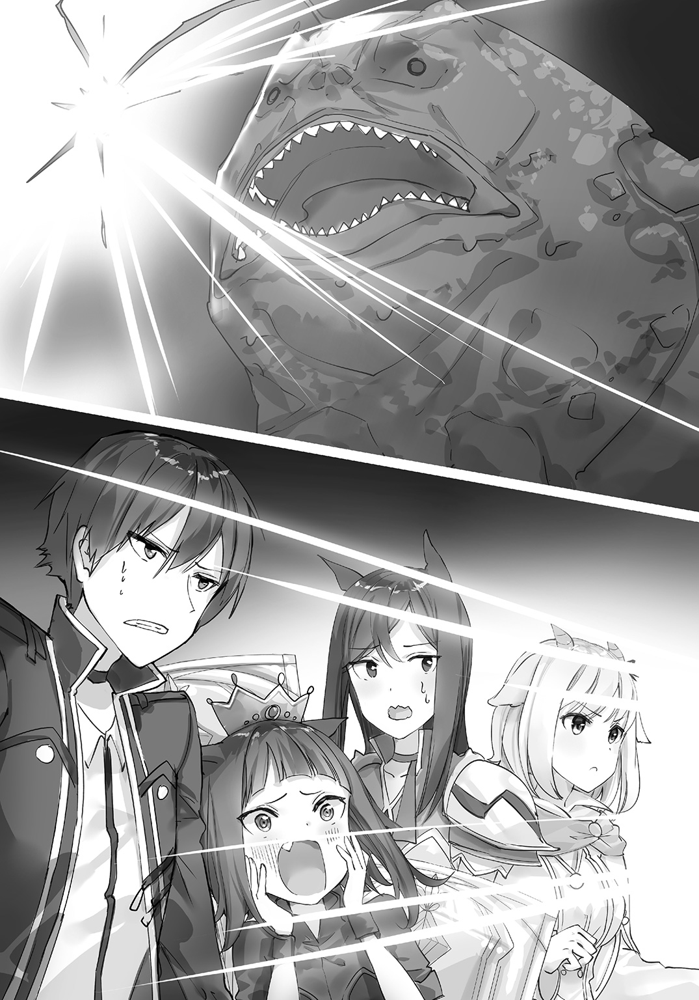
ちょっとした船くらいのサイズがあるからその威圧感たるや凄まじい。
怪魚はくるりと身を反転させると、エラの部分からジェット水流を噴射！
タワーシールドをダブルで構えたホクトがその水流に立ち向かう。
「ぐっ......これしきのことで！」
驚異的な水圧だ。必死で踏ん張るホクトが押されている。
いや、押されているだけならまだいい。
強い衝撃にホクトは顔を歪めていた。
体への負担を和らげるのはプレートメイルの仕事だが、文字が書きこまれて魔術書の代用品になっているからか、鎧としての機能がその分低下しているらしい。
「一度消去しましょう！ ......苦心して準備したものではありますけど、仕方ないです」
「またあの訳分かんねぇ字を書かなきゃならないのかよ......」
だがホクトの無事が最優先。
ミミの唱えたリフレッシュによってインクが取り除かれる。
これでホクトの耐久力も元に戻ったはず。その隙に仕留めてしまわないとな。
「でも、どうすりゃいいんだ？」
アンデッドじゃないので聖灰や聖水を浴びせたところで無意味。火で攻撃しようにも、湖の中にいるから効果は期待できない。ましてや近づいて斬りかかろうなんてもってのほかだ。あいつがプカプカ浮かんでいる位置まで泳げってか。
「頼れるのはこいつだけか......しっかり刺さってくれよ」
俺は銀の矢をスカルボウにセットした。
鏃が銀であるメリットは魚類相手には一切ない。この弓の真価が試されている。
「お支えします、シュウト様。フラジリティで物理耐性を下げてみますね」
「任せたぜ」
ミミは俺と肩を並べて......というか、ほとんど寄り添って呪術の詠唱に入った。
その瞬間。
「うおおっ!?」
魔物は頭の発光体の輝きを更に強めた。
光は刺激である、という忘れがちな定義を再認識させられるような、そんな眩さ。
ここまで来ると西日どころではない。双眼鏡で直接太陽を覗いてしまった少年時代の苦い記憶がフラッシュバックする。
「馬鹿のひとつ覚えみたいにチカチカさせやがって......ん？」
瞼を開けた時、俺は隣にいるミミが困惑した表情をしていることに気がついた。
目の焦点が合っていない。普段からぽやっとした顔をしているが、それとは異なり不安そうな感情が滲んでいる。まるで世界から切り離されてしまったかのような――。
「大丈夫か？」
「はっ、はい。シュウト様、心配をおかけして申し訳ありません」
もう平気です、とミミは答えながら、祈りを捧げるように胸の前で手を組み。
「キュア！」
そう口にした瞬間、清らかな光が降り注いだ。
微光に包まれたミミは数回まばたきしてから「ほっ」と安堵の息を漏らす。
聞いたことのない魔法だった。ミミに尋ねると、ウィクライフで購入した『中級再生のグリモワール』で覚えた、呪いを解除するための魔法だという。
「じゃあなんだ、さっきのは呪いをかけてきたってことか？」
「はい。ブラインドに似た効果だと思います......極めて広範囲なことを除いて、ですけど」
ミミは慮るような目線をナツメとホクトに送った。
二人とも戸惑った様子でいる。呪いに喘いでいるのは明らかだ。
「聖水を使え、ナツメ。あれには呪縛を解く効果もあるからな」
「分かりましたにゃ！ うにゃっ！」
気合いの入った掛け声からして頭で瓶を割るのかと思ったが、ちゃんと蓋を開けていた。
ナツメは自分に聖水をかけて盲目の呪いを解いた後、ホクトにも分け与える。
間隔を空けざるを得ない魔法とは違ってアイテムだと一瞬だ。
まあめっちゃ高いんですけども。
さて。
なんとか戦線は立て直せたが......ニシビアンコウの光がこんなにも厄介だったとは。
だが俺の目は特に異変をきたしていない。呪縛に強いという触れこみの骸布の服を着ているおかげか。
けどこの様子だと、ミミからのサポートは厳しいな。
治療のためにワンテンポ遅れてしまう。
「正攻法でいくしかねぇな」
素直に矢を放つ。
矢はヌラヌラとした質感の鱗を突き破り、傷口から澱んだ黄色の血が流れ出る。痛みに悶えているのかアンコウは尾ビレを何度も湖面に叩きつけ、水が高々と舞い上がっている。
これで効いていないとは言わせない。
さすがはレア素材製のスカルボウ。単純に長弓としての性能だけで見ても一等品だな。
俺はなおも矢を撃ち続けた。
的がでかいから狙いやすい。光の妨害をものともせず、間断なく攻撃を仕掛ける。
「な、なんか想像してたより弱いな......」
水流はホクトが、呪縛は服が防いでくれている。負ける理由が見当たらない。
だが。
矢を全身に受けて満身創痍になったニシビアンコウは、ある瞬間突然、ふっと俺たちに背を向けて湖の中に潜っていってしまった。
ん？ この状況......。
「どうやって攻撃すりゃいいんだ？」
水の抵抗に逆らって矢が届くわけがない。せっかくここまでコツコツとダメージを稼いできたっていうのに、じっくり休憩時間を与えてしまう羽目になった。
三分ほど経って、傷が癒えた魔物は再浮上してきた。
当然俺は矢の雨で迎撃......しようとしてやめる。
ここで俺が攻撃を再開すれば、アンコウは再び瀕死の状態に追い込まれるだろう。
で、また逃げる。逃げたら治してまた浮かぶ。それを繰り返されたら、矢の本数に制限のある俺はそのうち攻撃手段を失ってしまう。
いやこれ、負けないけど勝てないんだが。
「こっちも逃げるか......」
しかし、またイチから暗号文を書き写すだけの猶予はない。
「ええい、まどろっこしい！ 要は水中に逃げられなきゃいいんだろ？ だったらどうにかして陸まで引きずり上げてやるだけだ」
ない知恵を絞り出す俺。
導かれた答えは、至極シンプルなものだった。
「相手は魚なんだから方法はひとつしかねぇ。一本釣りだ」
とはいえ魚好みの餌なんていう便利な代物が手元にあるはずもなく。
針と糸だけの引っかけ漁でやるしかない。
「でもご主人様」
きょとんとした顔を見せるナツメ。
「針と糸もなくないですかにゃ？」
「いや、それはある。針は俺の背中に、糸はホクトの背中にな」
「背中って矢筒しかありませんにゃ......にゃっ？ もしかして針って......」
「おう。矢だ。ロープを巻いた矢で撃ち抜いてやるんだよ」
時間を作るために一旦魔物を追い払ってからホクトに命じて、探索道具を入れたカバンからロープを取り出させる。
長さは三十メートルくらいか。これだけあればギリギリ足りるな。
銀の矢に縛りつける。
「シュウト様、これだと抜けてしまわないでしょうか？」
「ありえるな」
ここはナツメの出番だ。かまどの火で熱した鏃を岩場に転がっていた石で叩き、鍛冶屋仕込みのテクニックで形状を微妙に変化させ、返しを作る。
針もどきの完成である。
「ふっ、完璧な出来栄えですにゃ」
めちゃくちゃ不恰好な見た目だった。
まあ問題なく機能してくれるなら不満はない。
タイミングよく、傷口の塞がったアンコウが閃光を振り撒きながら再び姿を現す。
まずは弱らせにかかる。数発の矢を放ってダメージを蓄積。
潜水する素振りを見せたところで......。
「もう逃がしてやるかっての！」
不機嫌そうに開いていた口の中目がけて矢を撃ちこんだ。
絶大な推進力をまとった矢は喉の奥まで飛びこんでいった。ここまで深々と突き刺せば、そうそう抜けることはないはず。
ここからはホクトの見せ場だ。
「頼んだぞ」
俺はそう言いながらチョーカーを外し、ホクトの首に巻く。
「了解であります！ で、い、やああああああああっ！」
全力でロープを引っ張るホクト。
怒濤の勢いとはまさにこのこと。
グリズリーのチョーカーの作用で、ただでさえ桁外れなホクトの怪力が更にもう一段階上がっていた。いくら常識破りの巨体を誇っていようと、矢のダメージで衰弱している魔物では到底太刀打ちできない。
途中で矢柄が折れてしまわないかと心配する間もなく、ものの二十秒足らずで、大魚ニシビアンコウは陸に打ち上げられた。
エラ呼吸がままならないのかパクパクと苦しげに口を開閉している。
まな板の上の鯉よりも無防備な状態だ。
ここに俺は「馬に引きずられた深海魚」という新たなことわざを提唱する。
「ナツメ、ブロードソードを貸せ！」
「アイアイサーですにゃ！」
そっとスカルボウを置いた俺に、ナツメからブロードソードが投げ渡される。
チョーカーを装備していないから若干重く感じるが、まあ誤差の範囲。
ライトグリーンの輝きを宿した刀身を、俺はアンコウの脳天に突き刺してやった。
それが死に至る最後のピースだったらしい。
誰に知られることもなかった地底湖のヌシの目は、急速に白濁していった。
「ハァ、ハァ......無駄に手間取っちまったな......けど手間取ってこの仕打ちかよ......」
アンコウは金貨を一枚たりとも落とさなかった。
何分ここは人跡未踏の地だから、集めようにも集められなかったんだろう。
そのせいで実際以上に疲れを感じた俺は、流れ出る汗をヤケクソで振り払う。無銭戦闘はご法度だと魔物界で法律を定めておいてもらいたいものだ。
にしても、たまたま発見した名水の宝庫でこれだけの強敵に出くわすとはな。
あんな奴が住んでいたんじゃ、この地底湖の資源的価値にもミソがつきそうだ。
ツイてるんだかツイてないんだか......。
「わあ、素敵なドロップ素材です。見てくださいシュウト様。とてもとても綺麗ですよ」
微笑むミミが手にしているのは、アンコウの頭にくっついていた発光体だ。あれだけ激しく光を撒き散らしていたのに、その面影はなく、淡い幻想的な輝きに落ちついている。
とりあえず、これを持ち帰ってギルドのおっさんと話をしてみるか。
魔物のことも、地底湖のことも。
「ようこそギルドへ......今日はまた一段と手土産が多いな」
地上に戻ってすぐに訪れたギルドでは、当たり前だが熱烈な歓迎なんてものはなく、代わりに中年男性特有の哀愁漂う苦笑いを見せられた。
まあ、おっさんがそんな表情をするのも無理はない。
いつもはナツメのリュックサックに入り切る布素材ばかり持ち帰っているのに、この日の俺たちはガチャガチャと騒々しい金属音を響かせているからな。
「こっちの袋は全部スケルトンの素材か。凄い量だが、なんでまた第一層なんかを？ お前の冒険者ランクだと物足りないだろうに」
「違う違う。ノーライフキングを相手に集めたんだよ」
納品を済ませながら、俺はその証拠として王冠を呈示する。
「ノーライフキング？ ということは第四層まで進んだのか？」
「ああ」
おっさんは「ふうむ」と二重顎をさすって頷く。
「アホみたいに湧いてきたからな。ひたすら狩った結果がこれってわけ」
「よくやるよ。相当悪戦苦闘したんじゃないのか？ ノーライフキングは第四層の魔物の中では最強格だからな」
「そうでもないかな。普通だよ、普通。どっちかというとこいつのほうが苦労したぜ」
鎧の残骸を詰めこんだ革袋の紐を解き、テーブル上に置く......シャレにならないくらい重いのでホクトがだが。
「デュラハンはタフすぎて倒すのに難儀したよ。この素材ってなにかいい使い道ある？」
「溶かして鉄にするくらいだな」
やっぱクソモンスターだわ。
おかげで後腐れなく教会から出ている収集依頼に回せた。
「......あっ、そうだ。デュラハンといえば」
存在感が薄いから忘れるところだった。
一本だけ手に入った例のブツ――黒一色の片手剣をおっさんに見せる。
「この剣も落としたんだけど」
鞘から抜いてみせた途端に、おっさんの瞳に好奇心が満ち始めた。
刃渡りは六十センチくらいとあまり長くはない。
先端に向かうにつれて幅が広くなり、遠心力が乗りやすい形状になっている。厚みも結構あるので全長の割には案外重い。
「おっ、こいつは珍しい。玄霊鉱のファルシオンじゃないか」
「なにそれ」
「玄霊鉱はデュラハンの魂が宿った金属のことだ。魔物の手によって生成されるレアメタルとでも呼ぼうか。デュラハンは死の間際に及ぶと、ごく稀に自らの武器に魂魄を残す。その現象が起こるとただの鉄がレアメタルに変質するんだよ」
「魂が魔力代わりになってるってことか？」
「だいたいそんな感じだな」
それだけ聞いたら呪われた装備っぽくて怖いんだが。色味も色味だし。
「ファルシオンっていうのは刀剣の一種だ。値段も手頃で扱いやすいから見習い騎士の間で人気の剣だぞ。日用大工にも使えて......」
「そっちの説明はどうでもいい。金属の特徴について教えてくれ」
「ウンチクの語り甲斐のない奴だな。まあいいだろう。過去にも入手に成功した冒険者はいたから、どういう代物かは自分も知っているしな」
前例があるのか。
そいつは助かる。毎度のことだがレアメタル製の武器は、性能や追加効果がどのようなものかを知るために、それなりの試行錯誤をさせられるからな。
「玄霊鉱は元の鉄よりもやや重く、その分だけ硬度が向上している。とはいえ平均的なレアメタルと比較すると軟らかい部類だ。鉄がグレードアップした程度、くらいの認識でいい」
「え、そんだけ？」
「大まかに特徴を述べるとそうなる」
なんか物々しい謂れの割にしょぼいんですけど。
「そう焦るな。重要なのは魔力の発現。これがまた面白いんだよ」
おっさんはそう言って、剣を手に取る。
「こうやって念じて......ふっ！」
柄をがっしりと握ったおっさんはダルンダルンの腹に力を入れる。
ぼうっと浮かび上がったのは、直径三十センチほどの、淡白な桃色の燈。
非常にファンタジックで少女漫画的な色合いなのだが、心の汚れた大人である俺からしてみると、いかがわしいお店の照明を思い出してしまうのが悲しい。
「これがこの武器の真骨頂だ。俺は魂の火と呼んでいるがね。火属性の魔力が秘められていることもこれで分かったろう？」
「凄ぇ仰々しいネーミングだな......また名前倒れだったりしないよな？」
というか既に嫌な予感はしている。ふわふわとおっさんの周りを浮遊するそれは、火にしては熱くなく、光源にしては明るくない。
間接照明くらいにしか役立たなさそうなんだが、これ。
「『魂』と銘打った理由はちゃんとある。これは剣の所有者......今の場合は俺だな、その生命力の半分を消費して作られる火なんだ。分身みたいなもんだと思ってくれ」
「とんでもない代償だな、おい」
危ぶむ俺に、おっさんは「言葉から受ける印象ほど大きなリスクじゃない」と語る。
「消費、というか分割と言ったほうが正しいかな。魂の火を戻せば体力も返ってくる。余裕のある時に作っておくといろいろと便利なんだよ。失った分をなにかしらの回復手段で埋めれば、純粋に体力のストックになってくれるからな。なかなかテクニカルな使い方ができるぜ」
「ふーん。だったら使いではあるか」
熱のない火をつついて遊ぶナツメを見やりながら、俺はその有用性について考える。
再生魔法のヒールと抜群の相性を誇るのはすぐに分かった。
だがそれ以上に、装備しているだけで勝手に回復し続ける『治癒のアレキサンドライト』との組み合わせが最良なのではないだろうか。
試す価値はある。
「同時に出せるのは一個までだから留意してくれよ。それにだ、魂の火はこう見えてかわいい奴でな、敵性対象を感知すると自動的に追尾してじわじわ体力を吸い取ってくれるぞ。これによって蓄えられた分も戻した際の回復量に影響するから攻防一体だ」
「なんだ。なら作り得じゃん」
「ところがうまい話ばかりじゃないんだな。魂の火が攻撃されて消えてしまうと、失った体力は返ってこない。自分の体力と合わせてしっかり管理する必要がある」
だからテクニカルなんだよ、と火を納めながらおっさんは締めくくった。
「重ね重ね言うが、このファルシオンは近接武器としては際立って優秀じゃない。真価を発揮できるかは、すべて、魂の火の使い方次第だ。な？ 面白い武器だろ？」
「面白いというか、手がかかるというか......とりあえずこいつの性能は分かったよ」
俺は剣を受け取って答える。
難しい装備品だ。これまで使ってきた脳筋武器たちとは全然方向性が違うな。
「今すぐには出番はないだろうけど、一応持っておくか」
地下層を潜るにあたって、アンデッドに有効な銀と火の両方を使いこなせるスカルボウよりも優れているとは思えないし。試してみるとしたらまた次の町でだな。
次に俺は、死神......グリムリーパーが落とした鎌の欠片を卓上に置く。
「こりゃまたぞっとしない魔物を倒したもんだ。教会側もグリムリーパーとノーライフキングがいかに脅威かは知っているからな、一個からでも納品を受け付けているぞ」
「そうか。そいつは嬉しいけど、素材としての使い道はどんな感じ？」
「鉄クズだ」
「王冠は？」
「ゴミだ」
俺は無言で両方とも差し出した。
「毎度。これだけ種類も豊富にアンデッドを倒してきたんだから、教団も喜ぶだろう」
「いや実は......まだ本命のアイテムがあってさ」
いよいよアンコウの発光体に順番が回ってきた。
カバンから取り出したそれは、相変わらず消える気配のない淡い光を放っている。
「......なんだこれは？」
「俺もよく分かってない。地底湖にいた奴を倒したら落としたんだ」
「地底湖？ どこにあったんだ、そんなもの」
やはり知られていなかったらしい。
おっさんが言うには、地下層に関しては冒険者ギルドよりも教会のほうが精通しているとのこと。
「最下層の更に下だ。帯水層のちょうど真下だと思う。魔法陣がバグって連れていかれたんだけどさ、そこに地底湖が形成されてたんだよ」
その後も詳細を説明する俺。
やれ水滴が岩盤を削っていただの、やれ水の透明度が素晴らしかっただの。
そして当然、湖の底に眠っていた巨大生物のことも。
「地底湖のことは教会にも報告してみるつもりだけど、魔物についてはおっさんにしか聞けねぇからな。分かることがあれば教えてくれないか？」
「ふうむ、良質な水場にしか棲息しないとされる魔物は何種類かいるが......魚型か」
「おう。チョウチンアンコウみたいな奴だったぜ」
「それならランタニアだとは思うが......」
意外と普通の名前が出てきた。
俺は二十文字くらいの横文字を覚悟していたのだが。
「しかしランタニアは美しい魔物だぞ？ 観賞用に捕獲されることもあるくらいだしな。お前の話だとドブみたいな色をしていたようだから、別物な気がするな」
それに、とおっさんは付け加える。
「これだけのサイズの発光体はちょっと考えられない。確かに通常のランタニアも発光体を素材として落とすが、こんなに大きなものは見たことも聞いたこともないぞ」
「じゃあ突然変異だな。あまりにも水が綺麗すぎて美麗な存在として生を享けたはずの自分の醜悪な部分に気づかされて、醜い部分が表に出てきてしまった。これだ」
「お前の魔物観はどうなってるんだ。そんなニキビを気にする思春期の少女たちみたいな繊細さがありえるかっての。ま、突然変異の線は濃厚か」
なんでも要注意指定は出されていないとのこと。
あれだけの戦闘力がありながら撃破報奨も落とさない上に懸賞金までついていないとは、デュラハンを上回る酷さだな。
「とりあえずウィクライフのラボに報告してみよう。王都から公認された魔物学者もいるだろうから、きっちり解明してくれるはずだ。もしかしたら新種の魔物に登録されるかもしれん。そうなったら発見者としてシュウトの名前が刻まれるかもな」
「納品しないとダメ？」
「資料だからな。別に持っててもいいが、おそらくインテリアにしか使えないぞ、それ」
渋々引き渡す俺。
お情け程度におっさんから協力報酬をもらう。
「結果が届いたら真っ先にお前に知らせるよ。その時は研究機関からも報酬があるだろうから楽しみに待っていてくれ」
「そんなのはどうでもいいんだけどな......」
まあ俺が価値を見出しているのはこの発光体ではない。これはあくまでも副産物。
教会あてに、地底湖の情報というでかい土産がある。
司祭のジイさんとアリッサに地底湖の存在を告げてから間もなく、リステリア地下層の再開発がスタートした。
練達の冒険者を総動員してなんとか第四層での不具合を再現したらしく、今では教会関係者だけが利用できる専用の魔法陣が設けられている。
なぜ教団限定なのかといえば、それはもう語るまでもないだろう。
地底湖の水は丹念な浄化作業を経て蒸留酒の製造にあてられていた。
澄み切った水質には酒造業を取り仕切るアリッサもご満悦。魔物が泳いでいたけど大丈夫かとも尋ねてみたが、「そんなんぶっちゃけ井戸にもボウフラとかいるっしょ！」と、分かっちゃいたけど分かりたくなかった実例を示されて納得させられた。
それともうひとつ。
ニシビアンコウの話題が出たついでに語っておくと、先日、ウィクライフからの研究報告がギルドまで届いていた。
発光体について綿密な分析を行った結果、やはり俺とおっさんが揃ってアタリをつけていたとおり、ランタニアなる魔物が突然変異したものだと解き明かされたそうな。
添付書類によると、変異種の発生は稀にではあるが観測され得るケースなんだとか。
俺がこの世界で一番初めに討伐した賞金首、レッドウルフ――正式名称は忘却の彼方だが――も、元を辿れば通常の狼型の魔物がルーツになっているらしい。
この新発見で俺は、人類の歴史と発展に貢献したとかがどーのこーので事後協賛金として五万Ｇを手にした。
しかし命名権はくれなかったので『ランタニア・デル・ベネヒトリクス』という舌と言語野をとことん酷使するような名前が勝手につけられていた。
勝手につけられた、で思い出したが。
それは俺にでもある。
未知の領域に到達した功績が称えられて『ワイルド・フロンティア』、そして新種の生命体を発見したことから『ディスカバリー・ハンター』の称号が、冒険者ギルドから正式に俺に与えられた。
前々から通行証にくっついている『ネゴシエイター』を含めて、三つあるうちの好きなものを名乗れとおっさんには言われたが、正直どれも自称したくない。
今の俺が欲しいのはそんなんじゃなくて、名実でいうところの『実』の部分。
実といえば――。
「ついに、ついに試作第一号が完成したよっ！」
酒場の一席に腰かけた俺の目の前には今、たわわに育った果実が二個並んでいる。
むしゃぶりついた瞬間に人生が終わる禁断の果実である。
「試作っていっても、アルコールを薄める加水用に使っただけだけどね～」
「それがこの酒か」
「そう！ クセのない麦のスピリッツ！ 水のおいしさが一番よく分かるよ！」
完熟フルーツの栽培者ことアリッサは、地底湖の水をふんだんに使用したという蒸留酒を自慢げに持ちこんでいた。
確かにグラスに注がれた液体は素晴らしい透明感に満ちている。
「量に限りがあるから計画生産にしなくちゃだし、貴重な分お値段も高めにつけさせてもらうけどさ、むふふ、こりゃいい銘柄になりそうだね！」
人当たりのいい笑顔で「ささ、どうぞ一杯」と勧めてくるアリッサ。
無味無臭で無色透明。パッと見だとただの水だ。
「お兄さんのおかげで作れたお酒だからね、おすそわけじゃないけど、試飲もお兄さんにしてもらわないと！」
真っ昼間からここに俺が呼ばれた理由が判明する。
「そいつはありがたいが......これ割ってんの？」
「割ったら味が濁っちゃうよ。クッとストレートでいっちゃって！」
水のよさを味わえということらしい。
ふむ、一理あるな。この美しい飲み物になにかを足すのは神への冒瀆に思える。原材料の麦を実らせた豊穣の女神ルミッテもさぞお怒りになるだろう。なんでルミッテの名前が出てきたかというと、覚えている神様がそれしかいないというだけなのだが。
グラスを持ち上げて、その端麗な水質を眺める。
この至高としか例えようがない透明度の時点で絶品は約束されたようなものだ。
では早速......。
「あっ、言い忘れてたけど、すっごい度数キツいよ？」
「ぶっ」
口に含み過ぎた分を吹き出す俺。
おせーよ！
喉から尋常じゃない量の熱が込み上げてくるんだが？
三半規管がイカれて横転する俺を、アリッサが珍しく深刻そうな表情で覗きこむ。
「大丈夫？ おっぱい揉む？」
が、発言の傾向はいつもどおりだった。
「お願いします」
大変魅力的なオファーだったので即承諾した俺も俺だけれども。
地底湖水を活かした蒸留酒は一気に飲まずに水なり果汁なりで割りさえすれば、その最高品質の味わいを遺憾なく発揮した。
が、しかし、掛け値なしに美味と分かればアリッサも調子に乗って飲み続けるわけで。俺もなんだかんだでそれに付き合わされるわけで。
結局夕方まで飲み屋でくだを巻いた俺は、痛む頭を押さえながら宿への帰路につく。
町のメインストリートは地下層帰りと思しき冒険者たちで溢れていた。
誰も彼もがくたびれた顔をしているが、決して鬱々とはしておらず、むしろ足取りは軽やかで、内心では胸を弾ませているに違いなかった。
それもそのはずだ、一日の疲れを癒やす美酒がこいつらには待っているんだからな。
人々は色とりどりのランタンの明かりに導かれて、日が傾くにつれて活性化の一途を辿る繁華街へと誘われていく。
ここはいい町だとつくづく実感させられるな。
酒もうまいし、稼げるし。長期滞在プランも視野に入れるべきか。
ただナツメには「同じ場所には長居しない」と雇う際に条件提示してるからな。もう既に一カ月はリステリアに留まっているし、そろそろ次の町に向かうべきか......。
だが俺は声を大にして言いたい。
次の土地ではアリッサ級のおっぱいを揉めるのかと。
「ただいま......って、あれ？ ホクトだけか」
帰宅した俺を出迎えてくれたのは、部屋着代わりのチュニックに着替えたホクト一人。
ミミとナツメの姿は見えない。
「お二方は買い物であります。夕食のパンとチーズを購入されるようで」
「そうか。ナツメの目利きは確かだからな、うまいパンを買ってきてくれそうだ」
ホクトの説明を聞きながらベッドに横たわる。
「いやー、しかし、ここを離れるのはマジで惜しいな。ホクトも戦闘で役に立つようになって、安定して一日に一〇〇万Ｇ以上稼げてるからさ」
実りのある日々だったのは間違いない。
「それなのですが、主殿。今のうちに話したいことがあるのでありますが」
「なんだ？」
「や、大した話ではないのですが......」
自分から切り出しておきながら、なぜかもじもじと言いにくそうにするホクト。
背丈があって引き締まった四肢を持つホクトがそういう仕草をすると、ギャップのせいか妙にかわいげがあるように感じる。
「なんだよ。二人だけなんだから遠慮せずに話してくれていいんだぜ」
「二人だけだからこそ逡巡してしまうのではありますが......ええと、まずは謝辞から述べさせていただいても構わないでしょうか？」
「謝辞？ なんかしたっけ、俺」
「先ほど主殿が語ったとおりであります。自分のような不才にも活躍の場を与えてくださったではないですか。主殿のはからいには日々、心より感謝しているであります」
ホクトは真剣な眼差しで、けれど口元には笑みをたたえて語る。
「そのことか......でも俺はきっかけを作っただけだよ。後はホクトが頑張った結果だ」
「きっかけを作っていただけたことへの感謝の念が尽きないのであります。それまでの自分にはなにもありませんでしたから。ゼロをイチにしてくださったのは主殿であります」
「そんなことはねぇけどな。もともとホクトは頼れる奴だったよ」
ベッドから身を起こし、ホクトに向き直る。
盾を手に八面六臂に立ち回るホクトが頼もしいのは間違いないが、その前のアイテム運搬に従事していた頃から、俺の雑魚狩り中心の探索活動には欠かせない存在だった。
並外れた怪力と、そしてなによりその篤い忠誠心を、俺は好きでいる。
......好きって、我ながらまた直接的な表現をしたものだな。
無駄に照れる俺は天井を指差しながら。
「お前とこういう話をしてると、真夜中の屋上を思い出すな」
「自分もであります。あの夜、主殿にお言葉をいただけなかったら、今も自分は忸怩たる想いを抱えたままだったでしょう」
ダークブラウンのホクトの瞳から迷いの色が消えて久しい。
久しいのだが、こうして長時間まじまじとホクトの目を覗きこむのも、おそらく屋上での一件以来ではなかろうか。
「......なんか手放しで褒めちぎり合ってると気恥ずかしくなってくるな。こりゃ確かに二人きりの時でないと出来ない話だわ」
「いえ、まだ続きがっ！」
慌てて言葉を継ぐホクト。
「またしても屋上で交わした話のくり返しになってしまうのでありますが......ええとであります、あれです、あれなのでありますよ」
「どれだよ」
いつもは凜々しく伸ばしている背筋を若干及び腰になったように曲げて、しかも目線を落ち着きなく左右に揺らしながら話すホクトは、見るからに頭で考えていることを声に出して伝えるのを尻込みしていた。
それでもついに覚悟を決めたようで。
俺の目をうかがいながらこう言った。
「その......あの夜、主殿から『女にしてやる』とのお言葉を頂戴したのでありますが......覚えておられますでしょうか？」
そう口にしたホクトは、今日一番のもじもじ加減を見せた。
このタイミングでそんなことを言われて動揺するなというのも無理な話だ。
俺は「お、おう」とドギマギした返答をする。
確かに勢いに任せて高言したけど。したけどだな。
「そりゃあ覚えてるけどさ......ってかお前も本気で受け止めてたのか、あれ」
目を伏せてこくりと頷くホクト。
どうやらホクトは、あの夜の俺の台詞がずっと耳に残っていたらしい。
「差し出がましい申し出とは重々承知の上でありますが......」
耳を直立させたホクトは、一世一代の告白でもしているかのように気負いまくっている。
というか実際しているんだろうが。
「......意味分かってんのか？」
「いっ、意味は分かるであります！ そしてそれは僭越ながら自分も所望するところでありますゆえ......その......」
「その？」
「じっ、自分も、敬愛する主殿の寵愛をお受けしたく！」
意を決したのか声のボリュームを上げたホクトは、どこまでも不器用にどこまでも不恰好に、けれどどこまでも素朴でどこまでも真剣な想いを言葉に乗せてきた。
変に飾らない分、ダイレクトに胸に響き渡ってくる。
この期に及んで「あれは弾みだ」なんて言えるはずがない。
俺も男気を見せる時が来たようだ。
「分かったぜホクト。男に二言はねぇからな」
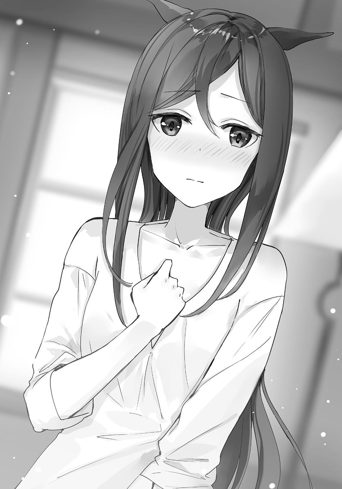
腹をくくった俺は、一度ホクトの人差し指からトパーズの指輪を外し。
そして白らかな薬指にはめ直した。
「今日から俺とお前の繫がりは主従関係だけじゃない。男と女の関係もだ」
今更言うまでもないが、ホクトは美形である。
鼻筋は通っているし、ほっそりとした顎のラインも玲瓏さを強く印象づける。
だが愛玩動物的なかわいらしさのあるミミやナツメとは違い、体格のせいもあるが、常に毅然とした態度が様になるこいつからは気高いイメージが漂っている。
そんな高潔な女を手籠めにするというのは......。
率直に言って最高に興奮するな。
「ホクト、目を閉じろ」
「構いませぬが......なにゆえでありましょうか？」
「いや分かれよ。俺だって目を見ながらは恥ずかしいんだからな」
俺がそう告げると、この手の物事に疎そうなホクトもやっと理解したようで、瞬く間に額から首筋に至るまでを紅潮させた。
それから二、三度深呼吸した後、グッと力を入れてきつく瞼を閉じる。
俺はその緊張し切った顔を見上げ......。
見上げ......。
「しゃ、しゃがめ、ちょっとだけ」
男の俺がかわいく爪先立ちしたんじゃ格好がつかない。
ホクトは「面目ないであります」と恐縮して中腰になる。
「よーし。それじゃ気を取り直して......」
「はっ。なにとぞよろしくお願いするであります」
再び目頭に力を込めるホクト。
その気合いの入りすぎた所作からも明らかなように、まだちょっと表情や姿勢が硬い。顔も正面のアングルで固定してるし。
「もっと楽にしてくれ。首も少し曲げたほうがいいぞ。鼻が当たるからな」
「あっ、す、すみませぬ。何分こういったことは経験が浅く......」
「浅く？」
「......申し訳ありません、つまらない見栄を張りました。無であります......」
ホクトはこの歳になるまで、なんの常識も知らなかったことを恥じているらしい。
「分かってないなー。そういうとこが逆に男ウケするんだぞ」
「そ、そういうものなのでしょうか。ですが自分はどうにも......世間知らずが次々に露呈していくようで......」
「まあいいから、言ったとおりにしてくれるか？」
「りょ、了解であります。では......っ！」
首の筋が攣りそうなくらい全力で傾けていた。
なんだこのかわいい生き物は。
「じゃなくて、やりすぎだっての。自然体でいいんだよ自然体で」
「こ、こんな具合でありましょうか」
「そうだ。じっとしてろよ」
俺はホクトの後頭部に手を回し、軽く顎を上げさせると、ゆっくりと顔を寄せて――。
「......はぁっ......」
重なった瞬間に、ホクトの唇から切なげな声がこぼれた。
しばらく時間の流れるがままにする俺とホクト。
最初は合間の息継ぎも忘れるほど硬直して強張っていたホクトの体も、次第に力が抜けていき、こちらに身を委ねるようになる。
俺はその隙を見計らい。
ニュッと舌を忍びこませた。
「っ!?」
案の定、めっちゃジタバタされた。
ホクトの馬力で本気で暴れられるとモヤシの俺はふっ飛ばされかねないのだが、なんというかこう、ほどよくふぬけていて平均的な女子の腕力にまで落ちていた。
俺はホクトを抱き寄せたままキスを続行。
舌同士を絡ませ、上顎をくすぐり、歯の裏をなぞる。
そこまでやってもホクトは俺を突き飛ばさない。それどころか未体験のショックにも幾分慣れたようで、されるがままにしている。
ええい、だったら極限までやってやるぞ！
逃げられるもんなら逃げてみやがれとばかりにキスに託した情熱を増していく。
客観的に見ると俺もかなりのアホである。未だに酔いが残っているらしい。
ひとしきり愛情を伝えて唇を離した時、俺はホクトの絶佳美人な顔が風呂上がりみたいに茹だっていることに意識を向けさせられた。
「あ、主殿ぉ......」
唇を奪われたホクトはくらくらとして、ピシッと通っていた芯が一本丸々抜けてしまったかのようになっていた。これは初めての口づけで骨抜きにされたというだけでなく、飲み屋帰りの俺が吐く息が酒気を帯びているからでもあるだろう。
「この気持ちが、気怠さが......女になる、ということなの、で、ありましょうか......」
表情も声音もとろけ尽くしたホクトが、しとどに濡れた瞳で俺をじっと見据えている。
「いいやまだだ。すまんホクト、完全にスイッチ入ったわ」
俺はホクトの肩に手を置いて、そのまま体重をかけてベッドに押し倒した。
昼夜問わず気丈に振る舞っている上に、腕力に長けた女相手だから征服感が凄まじい。
「一応聞いておくけど、今ならまだ引き返せるぜ」
「......か、覚悟はしておりました。不肖ホクト、すべてを捧げる心積もりでありますっ」
無自覚だろうにやたらと俺のツボを突いてくるな。
ともあれ、本人が覚悟を決めているのであれば、それに応えないわけにはいかない。
そもそも俺自身もパンツの中が窮屈になり始めていますし。
よし、なによりも心躍る探索を開始するとするか。
「あっ、ですが、衣服はっ！」
慌てた様子のホクトがなにかを言い終わる前に、俺はチュニックと、その下のパステルカラーのシュミーズもポイポイッと脱がせていた。
日々鎧による厳重なガードが敷かれたホクトの裸体が露になる。
「やああ......お見せしてしまいました......」
馬の耳をへたらせて、赤面した顔を心底恥ずかしそうに両手で覆ったホクトは、日頃の歯切れのよさが見る影もない、ふにゃふにゃの声でそう言う。
どこに恥じるようなところがあるのか、俺には分からない。
さらけ出されたホクトの胸はさほど大きくはないが、思わず特筆したくなるような見事な張りがあり、瑞々しい肌と相まって充分な魅力を備えていた。
しかしそれ以上に俺はホクトの腹に目を奪われていた。服の上からでもうっすらと分かる筋肉の質感でなんとなく想像はできていたが、綺麗に六つに割れている。
「うう、お目汚しを詫びるであります......自分はこのような婦女らしからぬ武骨な体の持ち主、主殿がお気に召されないのももっともであります......」
「い、いや、俺はこういうのも......その、なんだ、『アリ』だと思うぞ」
俺は自らの貧困な語彙を呪った。
「ア、アリとは？」
「アリといったらアリなんだ」
「主殿としてはアリなのでありましょうか？」
「そう。アリなんだよ」
が、頭のレベルが近いのでちゃんと伝わってくれた。
「つまりだな、これはお前に盾を持たせた時の話と同じだ。欠点なんかじゃなくて他にない長所なんだよ。これからの時代はおっぱいよりお腹なんだよ！」
いったい俺という奴はなにを口走っているんだと内心冷ややかにツッコミながらも、勢いを重視する俺はふよっと揺れている胸ではなく、あえて性感帯要素のない腹筋に触れる。
「俺はお前の個性をとことん愛してやるからな。ほれほれほれ」
「主殿っ、く、くすぐったいであります！ ひゃっ、ふひゃひゃっ！」
悦ばせるというよりも、緊張をほぐすようにホクトの腹をさする。
腹筋の割れ目を指でなぞるように。あるいは盛り上がった箇所を撫でるように。
魔物と対峙している時には断固として鉄壁の守りを崩さないが、くすぐったさには耐えられないようで、屈託のない笑い声を漏らすホクト。
「ひゃっ......あ......んっ......」
でも触ってるうちにどんどん艶っぽい嬌声に変わっていった。
......。
前言撤回。要素はあった。ホクトにはこっちの才能がある。
しかしながら溢れんばかりのその才能も、本職には敵わなかった。
この先は語るまでもないだろう。
下ネタを盛りこんだ創作落語みたいなしょーもない話になってしまうが、なぜ馬の肉のことを『桜肉』と呼ぶのかが、なんとなく分かった気になったとだけ言っておく。
「ただいまですにゃ～。にゃにゃっ!? さ、さ、寒いですにゃ......窓閉めちゃってもいいですかにゃ？」
ハミングしながら各種のパンを山盛り詰めこんだカゴを抱えて戻ってきたナツメは、帰宅するなり全開になっている窓を閉めて回った。
俺とホクトはそれを「ははは」「ふふふ」と白々しい笑顔で見守る。
が。
さすがにミミは勘付いたらしい。というかホクトの薬指を見た時点で、自分たちが買い物に行っている間になにがあったかは概ね察せたようで。
「シュウト様、ミミも、もっともっと頑張りますね」
と、「頑張ります」が「頑張るぞい」に聞こえてきそうな表情でぐっと両手の拳を握って意気込まれた。
俺は二人して熱っぽい視線を送るミミとホクトの顔を見比べて、いい加減女奴隷の主人らしく、甲斐性も磨かなきゃならないなと痛感させられる。
苦笑いしていると「ごはんにしましょうにゃっ」という俺の心境など露知らずな浮かれた声がかかった。
ナツメが準備した夕食を囲みながら、改めて思案する。
とうとうホクトとも一線を越えてしまった。
だがこれでホクトと屋上で交わした約束はどちらも叶えたわけだし、この町で立てたフラグは全部回収したともいえる。
ある意味では区切りがついたか。
貯蓄も昨日の時点で総額二五〇〇万Ｇを超えている。
そのうちの半分以上がここリステリアで稼いだ金だ。一つの町で得られた収益にしては十二分だろう。
地下層を上回る金策スポットが次に向かう地方にあるかどうかはギャンブルになってしまうが、度を過ぎた長居をする理由には薄い。ナツメと約束した手前もあるし、なにより屋敷を買うに相応しい町を決めるまでは、根無し草を続けるつもりだ。
他にこの地でやり残したことといえば......いや、厳密には二回やっているから心残りと言い換えるが......アリッサのおっぱいくらいだな。
あの魅惑的な果実とお別れするのは惜しい。惜しいが、しかし。
「このハーブのフォカッチャは実に美味でありますな、主殿！」
憂いのない晴れやかな顔つきでパンをかじるホクトを見ていると、その未練を断ち切ってもいいやと思わされる。
そろそろ楽園から追放されとくか。
翌朝。
市場で旅の補給――といっても地域限定のアルコール類の買い溜めがほとんどだが――を済ませた俺は、ミミたちにヒメリを呼びに行かせ、一人教会へと出向いていた。
壮麗にして荘厳なステンドグラスが、いつものごとく俺を迎え入れる。
結構な期間この施設には世話になったことだし、黙って去るのは忍びない。
袖振り合うも多生の縁。別れくらいは告げておかないとな。
まずは礼儀として、教団のトップである司祭のジイさんに。
祭壇の前には今日も数多くのシスターと神官が恭しい面と姿勢をして集まっている。その輪の中心に、真っ白い装束をはためかせた司祭はいた。
「子羊ではないか。祭壇にまで赴くとは珍しい。如何な用件だ？」
「用件、ってほど大それた話じゃねぇけどな......今日の午後にはこの町を離れるから、伝えておこうと思い立ってさ」
そう明かすと、神官連中がざわついた。
まあ多額の寄付を繰り返した俺は、こいつらにとっちゃいいお得意先だったろうしな。
「だからもう俺をアテにしないでくれよ。この先財政が落ちこむかもしれねぇけど......」
「いや、心配には及ばん。子羊が案ずるような問題でもない。先の出来事を見通すなど、それは神にしかできぬ所業だ」
司祭は厳然として答えた。
「先を望むのは大切だ。しかし過去の価値が消えるわけではない。ゆえに子羊が過去に築き上げた功績を、我々はただただ称えよう......盛大にな」
貫禄のある声でそう言ったかと思えば、信徒一同を見渡して「送別の準備を」と告げる。
その号令を契機に、にわかに慌ただしくなり始めた。
どうやら俺を送り出す式典を急遽開くつもりらしい。
数人の神官がワインを取りに行っている間に、サヤを含む修道女たちが急いでクリスタル細工のグラスを手配すると、しばらくして台車に乗せられた樽が運ばれてくる。
「樽からかよ。また本格的な......というかこの教会、ことあるごとに酒飲んでない？」
「酒は百薬の長というからな」
ニヤリと笑う老人。
その大義名分めいた言い草と、サヤにワインを注いでもらっている時の嬉しそうな表情で察した。このジイさん、なんだかんだでアリッサと同類だ。
いや、そもそもアリッサが司祭に色濃く影響を受けているのかもしれない。
ものの十分ほどで臨時式典を行う用意は整った。
慣例なのかどうかは謎だが、無駄に長々と繰り広げられる説教をまずはやり過ごす俺。
本題に入ってくれたのはそれからだった。
「式を開いたのは他でもない。勇敢なる『ワイルド・フロンティア』の......」
「異名で呼ぶのはやめてくれ。死ぬほど恥ずい」
ギルドのおっさんにつけられた称号に、シスターたちが失笑している。
思春期の少女のクスクス声は、なぜこんなにも胸をえぐるのだろうか。
でも『ディスカバリー・ハンター』を名乗るよりはマシなんだ。あっちは衛星放送とかで過酷なロケを敢行させられてそうだし。
「では、港町より来りし冒険者シュウトよ」
司祭が腕を伸ばし、高々と杯をかかげる。
真紅の液体がステンドグラスから漏れる日差しに輝いた。
「終わりなき旅路に身を置く汝に、戦いの神ダグラカの加護があらんことを」
神の祝福を祈られる。教団最高位の人物だけあって、一言一句に深みがある。
「そしてその新たな門出を祝して――乾杯！」
参列していた全員がグラスを持ち上げた。
神妙な面持ち、なんてものは誰の顔にもなく、むしろ明るい雰囲気に終始していた。
金にガメつい神官が、穏和な笑みを向ける熟年シスターが、威風堂々とした佇まいの神官長が、「お疲れさまでした」と一言添えたサヤが、そしてほんの少しだけ頰に朱を上した老司祭が、続々と近づいてきてグラスを俺のものとぶつける。
飲んだワインの量がバラバラだから、グラスが鳴る音程もバラバラだった。一人として同じ音色がなく、それがまるで軽妙な楽曲を奏でているようで、耳を飽きさせない。
別れに付きまとう物悲しさとは無縁だ。こういう送り出され方のほうがありがたい。
だが俺はそわそわと浮き足立った感覚が拭えないでいた。
この場にいない奴がいるからだろう。
俺は皆に見送られると、すぐに教会裏手にある酒蔵へと走った。
「そっか。行っちゃうんだね」
町を出ることを伝えた時、アリッサはしんみりとした台詞を口にした。
が、その手には当たり前のように飲みかけのワインボトルが握られているし、なんなら口元もだらしなく緩んでいて、要するに普段どおりの聖女様のご様子なので、まったく情感ってもんがなかった。
「せっかく仲良くなれたのに、寂しくなるね～。うっうっ」
「泣く演技をするならもうちょいうまくやれよ」
「バレた？」
「バラす気しかないだろ」
けど、それでいいとも感じる。湿っぽい別れは俺とこいつには似合わないからな。
「でも寂しいのはホントだよ」
声のトーンを少し落とすアリッサ。
「魔物もたくさん倒してくれたし、この前なんて地底湖まで見つけてくれたでしょ？ おかげでお酒造りが凄いはかどったもん。お兄さんには感謝しかないよ。だから、感謝の印を渡しておきたいな」
そう言って胸元に手を入れ、ごそごそとまさぐった。
しかし「ごそごそ」という効果音が正しいかは微妙だ。手を動かすたびに胸が揺れているから「ぷるぷる」とか「ゆさゆさ」のほうが適切かもしれない。ぷるぷるとまさぐる。この表現がセーフになるか否かで国の平和さの尺度になると思われる。
俺がそんなことを考えている間に、アリッサはなにかを取り出していた。
「あたしがずっと持ってたロザリオ。エルシード様の教えが刻まれたものだけどさ」
十字架つきの数珠だ。静かな銀の輝きをたたえている。
「これ、あげるね」
それが俺の手の平の中にぎゅっと握りこまされた。
アリッサの体温がほんのりと伝わってくる。俺の手に触れた指先からだけでなく、肌身離さず胸の中にしまわれていたロザリオからも。
十字架には小さく刻印が入っているが、俺にはその文字が読めなかった。
「んふふ、司祭様は真面目だからダグラカ様の祝福を授けたと思うけど、お兄さんにはこっちのほうが似合いそうよね。なんてったってエルシード様は幸運の神様！ 楽しく生きようと思ったら天に愛されてるのが一番だよ、いつでもどこでも」
「いいのか？ ずっと持ってたって......貴重なものなんだろ？」
「ここだけの話、十字架って支給品だからなくしたって言えば新しくもらえるわけよ」
最後の最後まで酷いなこいつは。
「このロザリオをあたしだと思って......あっ、訂正。あたしのおっぱいだと思って」
「思うかよ」
「でも温度は近いよ？」
「いつか冷えるわ」
不毛すぎる会話が続いた後で。
「とにかくさ、忘れないで持っていてほしいな」
急にそんなしおらしいことを寂莫さの滲んだ微笑交じりに言ってくるから、こいつは男の扱いがうまいなと脱帽させられる。
「忘れるかよ。俺はうまい酒といい女は忘れないからな」
「それなら安心だね！ うちのお酒はどこの町よりもおいしいもん！」
赤らんだ顔で「じゃあね」と言って上げたアリッサの手には特産のワインの瓶が握られたままで、中身がちゃぷんと揺れる音が響いていた。
それが、らしいな、と思う。
ここが切れ目なんかじゃないことを、言葉よりも態度で示してくれているようで。
あ と が き
このたびは『すまん、資金ブーストよりチートなスキル持ってる奴おる？』の三巻を手に取っていただき、誠にありがとうございます。
書いた人のえきさいたーです。
今回本編が特盛なのでこのページが圧縮されてるわけですが、ぶっちゃけそんなに書くこともないのでちょうどいい分量と言いましょうか、ひとまずは手短に書き残したいことだけ書き残しておこうかと思います。この時点でもう残り数行なことには目をつむって。
とにもかくにも、こうして無事に三巻を出すことができてほっと一安心。
それに尽きますね。前巻の引きを回収できて一安心とも言い換えられますが......。
続くリステリアのエピソードは某キャラクターがようやく一人前になる話ということで、個人的にも印象深く、今巻に収録できたことを喜ばしく思います。
それでは、またどこかで。
著者紹介
えきさいたー
タイトルもＰＮも「小説家になろう」の時から一文字も変えずに世に出せた事実に今更ながら震えています。
illustration
ふーみ
何か生き物を飼いたいと思いつつ踏み切れません。
最近は小さなクマノミもビンで飼えるらしいですね。すごい。
ダッシュエックス文庫DIGITAL
すまん、資金ブーストよりチートなスキル持ってる奴おる？ ３
著者 えきさいたー
© EXCITER 2017
２０１７年７月31日発行
この電子書籍は、ダッシュエックス文庫「すまん、資金ブーストよりチートなスキル持ってる奴おる？ ３」
２０１７年６月28日発行の第１刷を底本としています。
発行者 鈴木晴彦
発行所 株式会社 集英社
〒１０１－８０５０
東京都千代田区一ツ橋２丁目５番10号
０３－３２３０－６０８０（読者係）
制作所 株式会社ＩＣＥ
本作品の全部または一部を無断で複製、転載、改竄、インターネット上に掲載すること、および有償無償に関わらず、本データを第三者に譲渡することを禁じます。なお個人利用の目的であっても、コピーガードを解除しての複製は、法律で禁じられています。